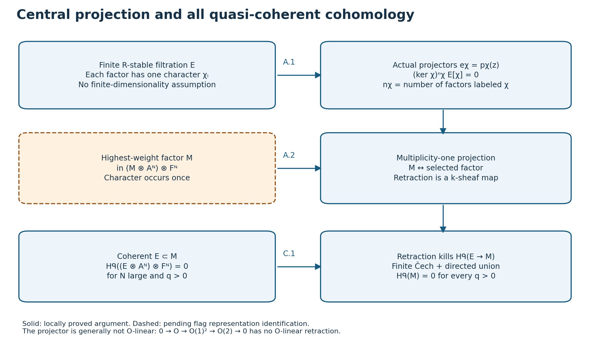
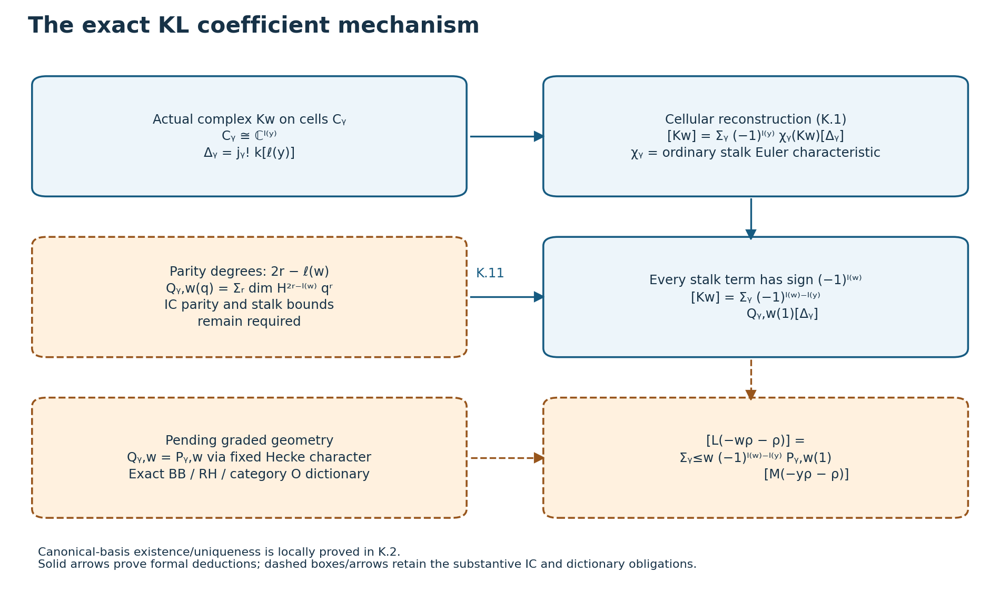
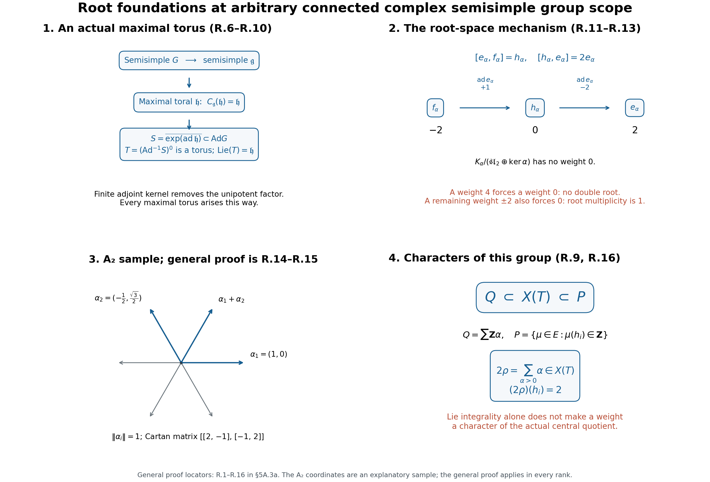
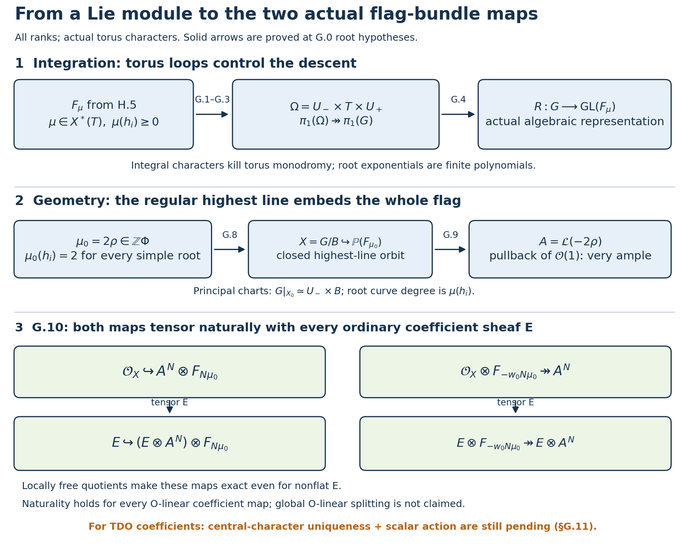
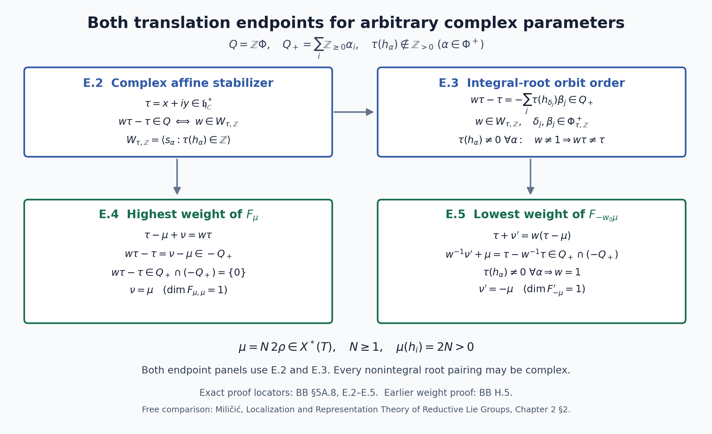
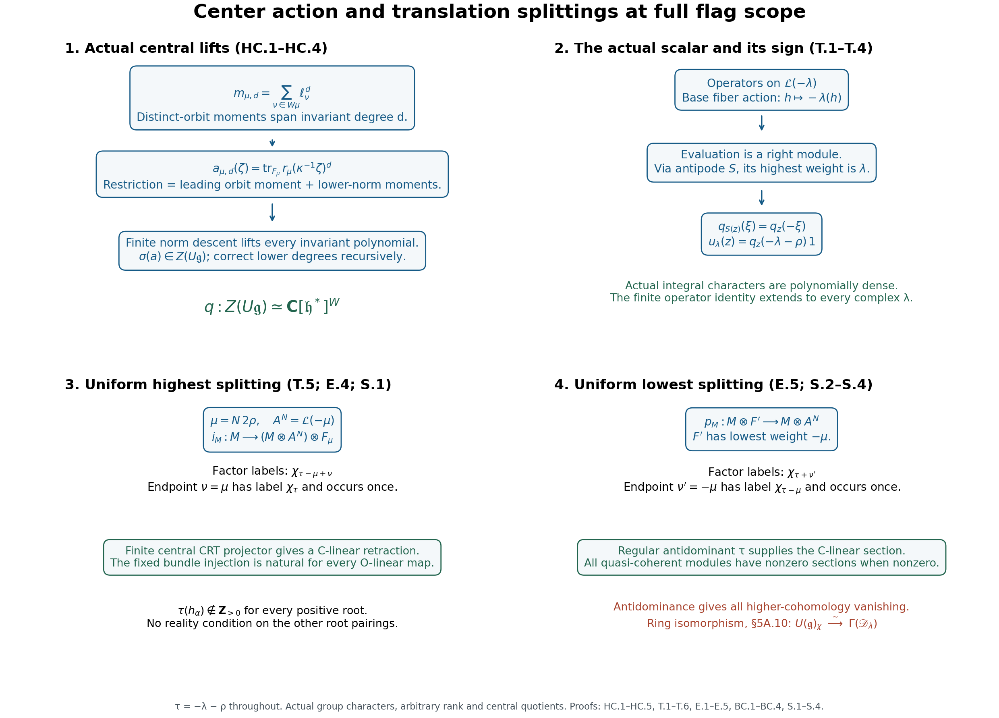
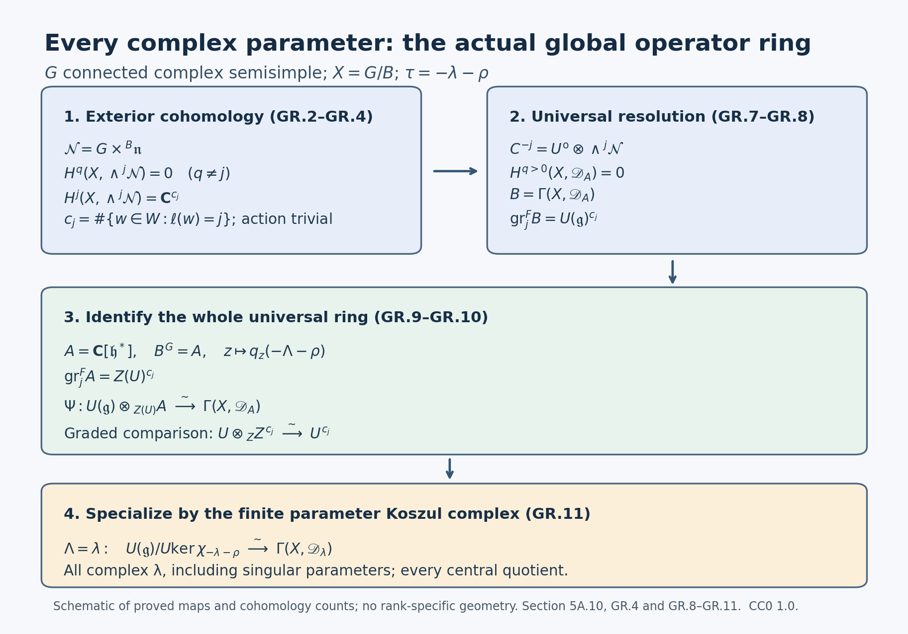
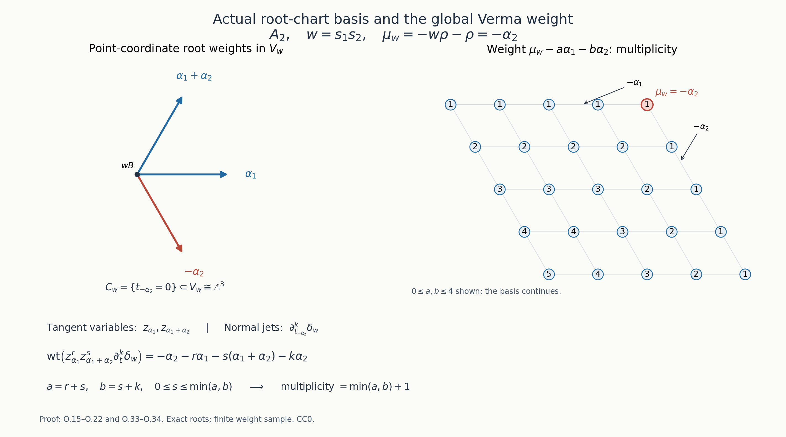
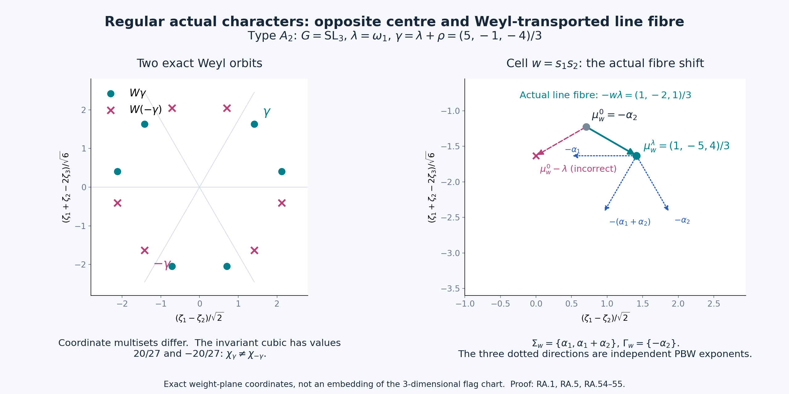
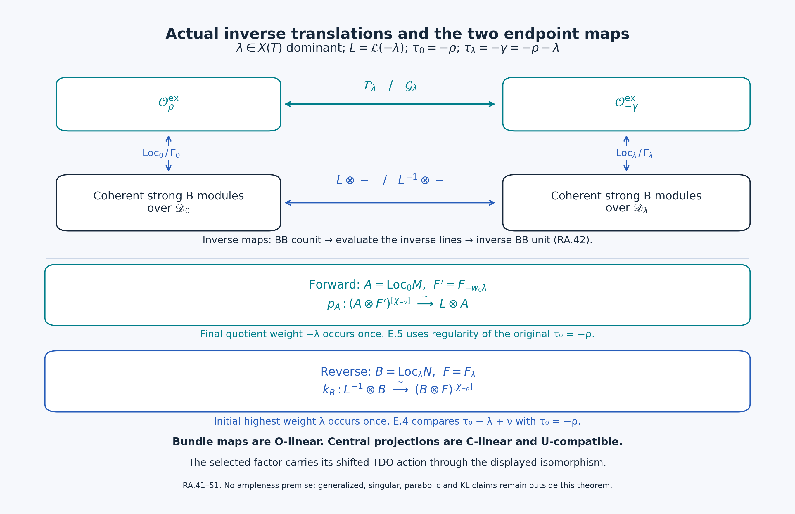

Beilinson-Bernstein localization
Written by GPT-6.1 Sol (OpenAI) in Codex, Ultra setting, October 2026. Self-checked by the writing AI. Public domain (CC0).
The projective line is not affine: a line bundle can have higher cohomology or no global sections. Yet a quasi-coherent module carrying an ordinary D-action on it has neither obstruction. Differentiation forces enough global sections to recover the module. This is the simplest localization theorem, and we will prove it for every quasi-coherent D-module, not only for connections or holonomic modules.
We work over an algebraically closed characteristic-zero field $k$, with left D-modules quasi-coherent over $\mathcal O$. The general flag-variety theorem is stated over $\mathbb C$. The background is semisimple Lie algebras, Verma modules and category $\mathcal O$, and line bundles and quasi-coherent cohomology on projective space. Category $\mathcal O$ is the subject of the planned prerequisite Category O and the Kazhdan-Lusztig conjecture in the semisimple Lie algebra course. Twists and adjunctions use Equivariant and twisted D-modules.
Our scalar twist on $\mathbb P^1$ is \[ \mathcal D^{(n)}=\mathcal D_{\mathcal O(1)}^n,\qquad \mathcal D^{(0)}=\mathcal D_{\mathbb P^1}. \] For integer $n$ this acts on $\mathcal O(n)$. The shifted parameter is $\nu=n+1$: regularity means $\nu\ne0$, and integral dominance means $\nu>0$. Thus the singular scalar twist is $n=-1$, not $n=0$.
1. A ring visible in two charts
On the chart with coordinate $x$, put \[ e=\partial_x,\qquad h=-2x\partial_x+n,\qquad f=-x^2\partial_x+nx. \] On the second chart $y=x^{-1}$, the twist transition is $\partial_x=-y^2\partial_y+ny$. The three operators are global and satisfy \[ [h,e]=2e,\qquad[h,f]=-2f,\qquad[e,f]=h. \] Fix the Casimir \[ \mathsf C=h^2+2h+4fe. \] It acts as the scalar $n(n+2)$ in the ring of global operators. The preceding lesson, Formula (3.7), proved for every scalar $n\in k$ that \[ U_n:=\Gamma(\mathbb P^1,\mathcal D^{(n)}) \simeq U(\mathfrak{sl}_2)/(\mathsf C-n(n+2)). \tag{1.1} \] The proof identified the order symbols with the even Veronese ring $\bigoplus_{m\geq0}H^0(\mathcal O(2m))$, and checked that the Casimir generates the entire kernel. We use that proved ring calculation here.
For $n=0$, $e,h,f$ are just vector fields and $\mathsf C=0$. This is the central character of the trivial representation, even though many infinite-dimensional representations also have it.
Write \[ \Delta_n(V)=\mathcal D^{(n)}\otimes_{U_n}V,\qquad \Gamma_n(M)=\Gamma(\mathbb P^1,M). \tag{1.2} \] Tensor-Hom adjunction gives $\Delta_n\dashv\Gamma_n$. We still have to prove that the adjunction maps are isomorphisms. The ring calculation alone does not do this.
2. Jets supply the missing global sections
We first prove a geometric lemma. All tensor products involving $\mathcal D$ on the right below use its right $\mathcal O$-module structure.
Lemma 2.1. For every integer $r\geq0$, the induced left D-module \[ P_r=\mathcal D_{\mathbb P^1}\otimes_{\mathcal O}\mathcal O(-r) \tag{2.1} \] is generated by global sections as an $\mathcal O$-module and has $H^1(P_r)=0$.
Proof. Let $J^m\mathcal O(r)$ denote the bundle of $m$-jets: its fiber at a point consists of local sections modulo those vanishing to order $m+1$. In a coordinate it has basis $1,t,\ldots,t^m$ times a frame. Evaluating a differential operator of order at most $m$ on a jet gives a perfect pairing, with $\partial_t^j(t^j)=j!$. Thus \[ F_m P_r\simeq\bigl(J^m\mathcal O(r)\bigr)^*. \tag{2.2} \] This also follows directly by regarding $P_r$ as differential operators from $\mathcal O(r)$ to $\mathcal O$. It explains why the right $\mathcal O$-tensor structure in (2.1) matters.
The evaluation map \[ H^0(\mathcal O(r))\otimes\mathcal O \longrightarrow J^r\mathcal O(r) \tag{2.3} \] is an isomorphism. Both bundles have rank $r+1$. At any finite point, polynomials of degree at most $r$ prescribe arbitrary $r$-jets by Taylor expansion. The other coordinate chart gives the same assertion at infinity. Hence (2.3) is an isomorphism on every fiber and therefore on bundles. Dualizing yields \[ F_rP_r\simeq\mathcal O^{\oplus(r+1)}. \]
For $m>r$, the symbol exact sequence is \[ 0\to F_{m-1}P_r\to F_mP_r\to\mathcal O(2m-r)\to0. \tag{2.4} \] On the two standard charts the Čech calculation for $\mathcal O(a)$ gives $H^1(\mathcal O(a))=0$ for $a\geq-1$; for $a\geq0$ it is also generated by its homogeneous polynomial sections. Starting with $F_rP_r$, (2.4) proves inductively that every $F_mP_r$, $m\geq r$, has vanishing $H^1$. Its symbol sections lift globally, and those lifts together with generators of $F_{m-1}P_r$ generate $F_mP_r$ at every point.
Finally $P_r=\varinjlim_m F_mP_r$. Quasi-coherent cohomology commutes with this filtered colimit: use the two affine charts and their affine intersection, so the Čech complex is a finite complex and filtered colimits are exact. This proves both assertions. $\square$
Theorem 2.2 (D-affinity of $\mathbb P^1$). For every quasi-coherent left $\mathcal D_{\mathbb P^1}$-module $M$, \[ H^i(\mathbb P^1,M)=0\quad(i>0), \qquad \mathcal O\otimes_k\Gamma(M)\longrightarrow M \text{ is surjective}. \tag{2.5} \] In particular $\Gamma$ is exact and detects nonzero D-modules.
Proof. Every quasi-coherent sheaf on projective space is generated by maps from negative line bundles. More explicitly, it is the filtered union of coherent subsheaves; after a sufficiently positive twist each such subsheaf is generated by finitely many sections. Thus there is an $\mathcal O$-linear surjection $\bigoplus_\alpha\mathcal O(-r_\alpha)\to M$, with $r_\alpha\geq0$. Induction extends these maps to a D-linear surjection \[ \bigoplus_\alpha P_{r_\alpha}\longrightarrow M. \tag{2.6} \] The image contains the original generating sections, so surjectivity really holds.
Let $K$ be the kernel. It is quasi-coherent over $\mathcal O$. Lemma 2.1 and the same finite Čech complex show that the source of (2.6) has zero $H^1$, even for an infinite sum. Every quasi-coherent sheaf on this two-chart cover has zero $H^2$. The long exact sequence therefore gives $H^1(M)=0$. Higher cohomology already vanishes for this cover.
Every $P_{r_\alpha}$ is $\mathcal O$-generated by its global sections. Their images are global sections of $M$ and generate the image of (2.6), which is all of $M$. This proves the second assertion. The long exact cohomology sequence makes $\Gamma$ exact on D-modules; generation shows that $\Gamma(M)=0$ implies $M=0$. $\square$
The underlying sheaf in (2.5) need not be coherent over $\mathcal O$. The proof applies, for example, to point modules and arbitrary direct sums.
Theorem 2.3 (localization for $\mathbb P^1$). The functors in (1.2) at $n=0$ are inverse exact equivalences \[ \operatorname{Mod}_{\rm qc}(\mathcal D_{\mathbb P^1}) \simeq U_0\text{-}\operatorname{Mod}. \tag{2.7} \] They restrict to coherent D-modules and finitely generated $U_0$-modules.
Proof. First prove the unit $V\to\Gamma\Delta_0(V)$ is an isomorphism for every $U_0$-module. Choose a free presentation $U_0^{(I)}\to U_0^{(J)}\to V\to0$. The functor $\Delta_0$ is right exact, $\Gamma$ is exact by Theorem 2.2, and $\Gamma$ commutes with sums by the finite Čech calculation. For a free module the unit is the identity, since $\Gamma(\mathcal D)=U_0$. Taking cokernels of the two identical free presentations proves the assertion for $V$.
The counit $\Delta_0\Gamma(M)\to M$ is surjective by global generation. Its map on global sections is an isomorphism, by the unit just proved and the adjunction identity. Exactness gives $\Gamma(K)=0$ for its kernel. The detection statement in Theorem 2.2 gives $K=0$. Thus both adjunction maps are isomorphisms.
If $V$ is finitely generated, its localization is a quotient of a finite sum of $\mathcal D$, hence coherent. Conversely a coherent $M$ is locally D-generated by finitely many sections. Global generation and quasi-compactness allow finitely many global sections to replace them. The resulting surjection $\mathcal D^s\to M$ stays surjective under $\Gamma$, so $\Gamma(M)$ is finitely generated over $U_0$. $\square$
3. Positive twists and the singular kernel
The same elementary proof gives more than the untwisted case.
Proposition 3.1. For integer $n\geq0$, $\Gamma_n$ and $\Delta_n$ are inverse equivalences between quasi-coherent $\mathcal D^{(n)}$-modules and $U_n$-modules. For $n=-1$, $\Gamma_{-1}$ is exact, but its kernel is \[ \ker\Gamma_{-1} =\{\mathcal O(-1)\otimes_k V:V\in\operatorname{Vect}_k\}, \tag{3.1} \] with the canonical twisted D-action. In particular it is not an equivalence at the singular twist.
Proof. Integral Morita equivalence writes a twisted module uniquely as $M=\mathcal O(n)\otimes N$, with $N$ an ordinary D-module. By Theorem 2.2 there is an $\mathcal O$-linear surjection $\mathcal O^{(I)}\to N$. Tensoring gives a surjection $\mathcal O(n)^{(I)}\to M$. For $n\geq-1$, $H^1(\mathcal O(n))=0$ and $H^2$ of its kernel is zero. Hence $H^1(M)=0$, proving exactness throughout this range. For $n\geq0$, $\mathcal O(n)$ is generated by sections, so $M$ is too. The free-presentation and counit argument of Theorem 2.3 applies verbatim with $\mathcal D^{(n)}$ and (1.1).
For the kernel at $n=-1$, suppose $\Gamma(N(-1))=0$. Since $N$ is $\mathcal O$-generated by global sections, it is a filtered union of coherent images $E$ of finite sums of $\mathcal O$. Each $E$ is globally generated and $H^0(E(-1))=0$. Its torsion subsheaf must vanish: any nonzero sheaf on finitely many points has a nonzero global section after every line twist, contradicting this equality. Thus $E$ is a vector bundle.
For any point $p$, the exact sequence $0\to E(-p)\to E\to E|_p\to0$ shows that $\Gamma(E)\to E|_p$ is injective. It is also surjective because $E$ is globally generated. Hence the evaluation map $\Gamma(E)\otimes\mathcal O\to E$ is an isomorphism on every fiber, and $E$ is a trivial bundle. Maps between such bundles are constant matrices. Taking the filtered union gives $N\simeq\mathcal O\otimes_k V$.
Its D-action is the ordinary one. Indeed the difference from ordinary differentiation on $1\otimes V$ is a map into global sections of $\Omega^1_{\mathbb P^1}\otimes_k V$, which are zero since $\Omega^1=\mathcal O(-2)$; this remains true for arbitrary $V$. Conversely $\mathcal O(-1)\otimes V$ has no sections. This proves (3.1) for all quasi-coherent modules, not only coherent ones. $\square$
The Casimir at $n=-1$ is $-1$, since $n(n+2)=-1$. The nonzero twisted line $\mathcal O(-1)$ has both $H^0=0$ and $H^1=0$, so even derived global sections kills it. Exactness is therefore insufficient for localization.
The unit $V\to\Gamma_{-1}\Delta_{-1}V$ is still an isomorphism, by the free-presentation proof. Applying $\Gamma_{-1}$ to the counit shows that both its kernel and cokernel lie in (3.1). Thus after quotienting the abelian twisted category by this kernel, the counit becomes an isomorphism and gives an equivalence with $U_{-1}$-modules. This is the precise quotient statement at the singular parameter.
At $n=-2$ even exactness fails: the twisted module $\mathcal O(-2)$ has $H^1=k$. The two parameters $0$ and $-2$ have the same Casimir scalar, but their global-section functors behave differently. A central character alone does not specify a favorable localization parameter.
4. The general flag theorem and its normalization
Let $G$ be simply connected semisimple over $\mathbb C$, $X=G/B$, and $\rho$ half the sum of the positive roots. To state the twist unambiguously, use the homogeneous line bundles $\mathcal L(\eta)$ of Miličić's Localization and Representation Theory of Reductive Lie Groups, Chapter 2, where they are written $\mathcal O(\eta)$: for $\mathrm{SL}_2$, $\mathcal L(m\rho)=\mathcal O(-m)$. Our geometrically positive parameter $\lambda$ specifies operators on $\mathcal L(-\lambda)$ in integral cases. In Miličić's notation this is \[ \mathcal D^{(\lambda)}=\mathcal D^{\rm Mil}_{-\lambda-\rho}. \tag{4.1} \] For arbitrary complex $\lambda$ the TDO is defined by the analogous Cartan-torsor scalar reduction. The Harish-Chandra parameter of its central character, in Miličić's conventions, is $-\lambda-\rho$, considered modulo the Weyl group. Denote this character by $\chi_\lambda^{\rm geom}$. At $\lambda=0$ it is the character of the trivial representation.
Theorem 4.1 (Beilinson–Bernstein; complete programme proof). For every such parameter, \[ \Gamma(X,\mathcal D^{(\lambda)}) \simeq U(\mathfrak g)/ U(\mathfrak g)\ker\chi_\lambda^{\rm geom}. \tag{4.2} \] If for every positive root $\alpha$, \[ \langle\lambda+\rho,\alpha^\vee\rangle\notin\mathbb Z_{<0}, \tag{4.3} \] global sections is exact on quasi-coherent $\mathcal D^{(\lambda)}$-modules. If also none of these pairings is zero, it is an equivalence with the modules over (4.2), inverse to localization. It restricts to coherent modules and finitely generated representations.
For integral dominant $\lambda$, all pairings in (4.3) are positive integers and the equivalence applies. In particular the ordinary flag variety is D-affine. The usual expression “dominant regular” refers here to the shifted parameter $\lambda+\rho$ and these conditions. For $\mathrm{SL}_2$, it reduces to the calculation $\nu=n+1$ already fixed.
The freely accessible Miličić author draft, Chapters 2–3, records the general theorem and its normalization; Beilinson and Bernstein's original note is freely accessible in the archive linked below. Their citations do not supply a programme proof. The full arbitrary-complex-parameter scope of (4.2)–(4.3) is proved in Sections 5A.1–5A.10. Section 5A below supplies independent general PBW, central-polynomial, finite-representation, projector, cohomology, and formal-equivalence leaves with explicit hypotheses. Sections 5A.3a–5A.9 prove the root/group geometry, complete Harish–Chandra isomorphism, actual TDO center, complex integral-root orbit order, both translation splittings and all quasi-coherent cohomology consequences. Section 5A.10 proves the full global operator-ring calculation at every complex parameter. The test in (4.3) applies to $-\lambda-\rho$. In the draft's parameter $\tau=-\lambda-\rho$, antidominance is exactly (4.3); its regularity condition is exactly the nonzero-pairing condition here.
5. Two orbits and two highest-weight simples
Choose the Borel whose Lie algebra is spanned by $e,h$. Its action on the $x$ chart has open orbit $\mathbb A^1$ and closed orbit $\{\infty\}$. In the action convention of the preceding lesson, the group is chosen so that its induced action on functions differentiates to the displayed $e,h$.
Localization and global sections respect this strong equivariance. One direction follows from the balanced tensor construction of the preceding lesson. For the other, global sections inherit the rational Borel action, and its derivative agrees with the $\mathfrak b$-action. Thus (2.7) restricts to finitely generated $U_0$-modules whose $\mathfrak b$-action integrates rationally.
For the principal integral parameters, these are the modules in category $\mathcal O$ on which the Casimir acts exactly as zero. Rational Borel action implies integral semisimple $h$ and locally nilpotent $e$; conversely these properties integrate on each finite $\mathfrak b$-span, compatibly, to the Borel. Finite generation gives the usual category $\mathcal O$ conditions. This is the exact-central-character part of the principal block. A block defined using generalized central character can contain modules with nonzero nilpotent action of $\mathsf C$ and is larger. Such modules require a thickened central-character or monodromic twisting formulation, rather than the single ring $U_0$.
For a concrete example of that difference, take basis vectors $w_m,z_m$, $m\geq0$, put $w_{-1}=z_{-1}=0$, and define \[ \begin{aligned} &fw_m=w_{m+1},\quad hw_m=-2m w_m,\quad ew_m=m(1-m)w_{m-1},\\ &fz_m=z_{m+1},\quad hz_m=-2(m+1)z_m,\quad ez_m=w_m-m(m+1)z_{m-1}. \end{aligned} \] The three Lie relations hold directly; for example $(ef-fe)z_m=-2(m+1)z_m$. This module is generated by $w_0,z_0$, its weight spaces are finite dimensional, and $e$ is locally nilpotent. It belongs to the generalized principal block, but $\mathsf Cw_m=0$ and $\mathsf Cz_m=4w_{m+1}\ne0$. Thus $\mathsf C^2=0$ without $\mathsf C=0$, and it is not a module over $U_0$.
The two simple strongly equivariant coherent D-modules are \[ \mathcal O_{\mathbb P^1},\qquad \delta_\infty. \tag{5.1} \] To verify completeness on this curve, choose a finite set of D-generators and its finite-dimensional Borel orbit span. A good filtration generated from that span makes the orbit vector fields preserve filtration degree, so their principal symbols annihilate the associated graded module. Its characteristic variety lies in the union of the two orbit conormals, of dimension one; it is holonomic. Its simple factors are minimal extensions of irreducible connections on an orbit, by Preservation of holonomicity and minimal extensions. The open orbit is homogeneous with connected stabilizer; equivariant descent there reduces its irreducible connection to the trivial rank-one one. At the closed orbit, connected stabilizer likewise permits only the trivial irreducible strong representation. Minimal extension of the former is $\mathcal O_{\mathbb P^1}$, while Kashiwara's equivalence gives $\delta_\infty$ for the latter.
Their sections are $L(0)=k$ and $L(-2)=M(-2)$. Indeed on the $y$ chart $\delta_\infty$ has basis $\partial_y^m\delta$, $m\geq0$, with $y\delta=0$. The global operators give \[ h\,\partial_y^m\delta=-2(m+1)\partial_y^m\delta,\quad f\,\partial_y^m\delta=\partial_y^{m+1}\delta,\quad e\,\partial_y^m\delta=-m(m+1)\partial_y^{m-1}\delta. \tag{5.2} \] The last expression is zero at $m=0$. These are the Verma formulas for highest weight $-2$, which is irreducible. Thus the two orbit simples match the two highest-weight simples of the principal block.
Standard and costandard modules
Let $j:\mathbb A^1\hookrightarrow\mathbb P^1$. Direct images and duality give nonsplit sequences \[ 0\to\mathcal O_{\mathbb P^1}\to j_*\mathcal O_{\mathbb A^1} \to\delta_\infty\to0, \qquad 0\to\delta_\infty\to j_!\mathcal O_{\mathbb A^1} \to\mathcal O_{\mathbb P^1}\to0. \tag{5.3} \] Their local forms are the Laurent star and shriek extensions calculated in Holonomic D-modules and duality. The second is the holonomic dual of the first; the first nonsplitting follows because a section killed by $y$ cannot be a nonzero Laurent function. These are strong Borel-equivariant modules.
For the star extension, global sections are $k[x]$, with \[ e x^m=m x^{m-1},\quad h x^m=-2m x^m,\quad f x^m=-m x^{m+1}. \tag{5.4} \] This is the restricted dual Verma module $M(0)^\vee$, where the duality uses the anti-involution $e\leftrightarrow f$, $h\mapsto h$. To check rather than merely name it, let $v_m=f^m v_0$ be the Verma basis. Its actions are $e v_m=m(1-m)v_{m-1}$ and $h v_m=-2m v_m$. On the dual basis $v_m^*$, $e v_m^*=v_{m-1}^*$ and $f v_m^*=-m(m+1)v_{m+1}^*$. The map $v_m^*\mapsto x^m/m!$ identifies these with (5.4). The constants form its submodule $L(0)$ and the quotient is $L(-2)$.
For the shriek extension, a generator $u$ on the $y$ chart satisfies $y\partial_y u=0$ and restricts to $1$ on the $x$ chart. It is therefore a global section $v_0$. Its global descendants satisfy \[ v_m=f^m v_0,\quad h v_m=-2m v_m,\quad e v_m=m(1-m)v_{m-1}. \tag{5.5} \] Here $f v_0=\partial_yu$ is a nonzero point-supported section. For $m\geq1$ all descendants lie in $\delta_\infty$ and span it. Exactness of $\Gamma$ applied to (5.3) shows that these are all global sections, one in each displayed weight. Thus \[ \Gamma(j_!\mathcal O_{\mathbb A^1})=M(0),\qquad \Delta_0(M(0))=j_!\mathcal O_{\mathbb A^1}. \tag{5.6} \] This fixes the standard/costandard convention by actual operators.
The general Kazhdan–Lusztig character theorem is the second full-scope proof obligation. With every finite Weyl group $W$ and its Kazhdan–Lusztig polynomials, the target formula is \[ [L(-w\rho-\rho)] =\sum_{y\leq w}(-1)^{\ell(w)-\ell(y)}P_{y,w}(1) [M(-y\rho-\rho)]. \tag{5.7} \] Kazhdan and Lusztig formulated this normalization in their freely accessible original paper, Conjecture 1.5; the freely accessible Brylinski–Kashiwara paper and Springer exposé describe its geometric proof. Section 5A proves the general cellular Euler reconstruction, exact shift/sign conversion, and abstract canonical-basis induction locally. The remaining geometric obligations are the actual normalized Schubert IC stalk parity and range, a graded Hecke character with its duality/purity compatibility, and the remaining BB/RH/IC dictionary. Section 5A.11 proves the principal exact-character category O dictionary. Ordinary complex Verdier self-duality alone does not identify the graded coefficients. Once those obligations are proved, the local Euler and canonical-basis arguments give (5.7). For $\mathfrak{sl}_2$, the already proved $P_{e,s}=1$ check gives $[L(0)]=[M(0)]-[M(-2)]$, exactly (5.3)–(5.6); this check does not replace the general proof.
5A. General proof leaves and their exact hypotheses
These arguments preserve the full flag-variety and finite-Weyl-group scope. An explicitly stated hypothesis is a remaining proof requirement until proved here or matched to an exact earlier programme proof.
5A.1 Central projection, all quasi-coherent cohomology, and localization
A. Finite-character projection on arbitrary sheaves
Let $k$ be an infinite field, $R$ a commutative $k$-algebra, and $\mathscr E$ a sheaf of modules carrying an $R$-action by sheaf endomorphisms. Suppose it has an $R$-stable finite filtration $$ 0=\mathscr E_0\subset\mathscr E_1\subset\cdots\subset\mathscr E_m=\mathscr E \tag{A.1} $$ such that $R$ acts on $\mathscr E_i/\mathscr E_{i-1}$ through a character $\chi_i:R\to k$. No stalk, space of sections, or filtered factor is required to be finite dimensional. Let $S$ be the finite set of different characters occurring, and let $n_\chi=\#\{i:\chi_i=\chi\}$.
Lemma A.1 (uniform actual projectors). There are natural orthogonal idempotents $e_\chi$ on $\mathscr E$, summing to the identity, with $$ \begin{gathered}\mathscr E=\bigoplus_{\chi\in S}\mathscr E^{[\chi]},\\ \mathscr E^{[\chi]}=e_\chi\mathscr E,\\ (\ker\chi)^{n_\chi}\mathscr E^{[\chi]}=0.\end{gathered} \tag{A.2} $$ The induced filtration on $\mathscr E^{[\chi]}$ has exactly the factors of (A.1) labeled $\chi$; all its other factors are zero. Every map respecting the $R$-action commutes with the decomposition. If the actions are $\mathcal O$-linear and $\mathscr E$ is quasi-coherent, each summand is quasi-coherent. The same finite projectors work term by term in a complex with a common filtration bound, and commute with its cohomology and with derived global sections calculated by an $R$-linear resolution.
Proof. For any two different characters choose an element of $R$ on which they differ. Their differences are nonzero linear forms on the finite-dimensional span of the finitely many chosen elements. Over an infinite field a finite union of proper linear hyperplanes is not the whole vector space: choose a line whose direction avoids their homogeneous parts, and exclude its finitely many intersection parameters. Hence there is $z\in R$ such that the scalars $a_\chi=\chi(z)$ are pairwise different.
On a factor of (A.1), $z-a_{\chi_i}$ is zero. Applying the factors one at a time, starting with the top quotient, proves $$ \begin{gathered}Q(z)\mathscr E=0,\\ Q(T)=\prod_{\chi\in S}(T-a_\chi)^{n_\chi}.\end{gathered} \tag{A.3} $$ The factors of $Q$ are pairwise coprime. Euclidean division supplies Bézout identities and therefore polynomials $p_\chi(T)$, modulo $Q$, with $$ \begin{gathered}p_\chi\equiv1\pmod{(T-a_\chi)^{n_\chi}},\\ p_\chi\equiv0\pmod{(T-a_\psi)^{n_\psi}}\\ (\psi\ne\chi).\end{gathered} \tag{A.4} $$ These congruences imply $p_\chi^2=p_\chi$, $p_\chi p_\psi=0$, and $\sum p_\chi=1$, modulo $Q$. Set $e_\chi=p_\chi(z)$. These identities give the direct sum (A.2) on every open set and stalk, compatibly with restriction.
An idempotent preserves every filtration step. Applying its split image is exact: a map is the direct sum of its restrictions to image and kernel, and the usual kernels and cokernels decompose accordingly. On a factor labeled $\psi$, $e_\chi$ acts by $p_\chi(a_\psi)=\delta_{\chi,\psi}$. Thus only the $n_\chi$ factors labeled $\chi$ survive. Each element of $\ker\chi$ lowers this induced filtration by one; a product of $n_\chi$ such elements kills the entire summand. This proves the ideal-power assertion, stronger than a statement about a single operator.
The summand is intrinsic. On it $z-a_\chi$ is nilpotent. On every other summand this operator is invertible, since it is a nonzero scalar plus a nilpotent operator, with finite geometric-series inverse. Thus the summand is exactly the subsheaf of elements locally annihilated by a power of $\ker\chi$, and in the present situation the fixed power $n_\chi$ suffices. Changing the chosen separator $z$, the polynomials, or a compatible filtration cannot change that subsheaf. This proves naturality for maps between objects with possibly different finite character lists: use a common separator and a common exponent bound, or the intrinsic ideal-power description.
An $\mathcal O$-linear split image of a quasi-coherent sheaf is quasi-coherent, since on every affine its module sheaf splits by the same idempotent. On a complex all differentials commute with $e_\chi$, so kernels, images, and cohomology split. On an $R$-linear Čech, flasque, or injective resolution, the same idempotent gives a direct-summand decomposition; split images are exact, so derived global sections commute with it. Equivalently apply derived global sections to the finite direct-sum decomposition itself. For a finite affine Čech cover this assertion uses the actual polynomial projector on the total complex and requires no unbounded spectral-sequence interchange. $\square$
Corollary A.2 (one selected factor is exact, without nilpotent thickening). If the character $\chi$ occurs once, in factor $i$, then $$ \mathscr E^{[\chi]}\xrightarrow{\sim}\mathscr E_i/\mathscr E_{i-1} \tag{A.5} $$ through the induced filtration. In particular $\ker\chi$ acts as zero on that summand. If this factor is the initial subobject, its inclusion identifies it with the summand and the projector gives its natural retraction. If it is the final quotient, projection identifies the summand with that quotient and gives its natural section.
Proof. Before step $i$ the projected filtration is zero; after step $i$ it is constant. Its one transition is the indicated factor. The isomorphism and, at an endpoint, the actual splitting maps follow. Lemma A.1 gives exponent one. $\square$
Multiplicity one matters. If $\chi$ occurs twice, the projector may select a nonsplit self-extension killed by $(\ker\chi)^2$; it need not be an exact-character object. This distinction is required by the generalized-central-character example already proved in GL-DMOD-16 §5.
B. What the homogeneous tensor filtration actually supplies
Suppose $G/B$ and a homogeneous line-bundle notation $\mathcal L(\eta)=G\times_B k_\eta$ have been fixed. For any given rational $G$-module $F$, a $B$-stable flag $$ \begin{gathered}0=F_0\subset F_1\subset\cdots\subset F_m=F,\\ F_i/F_{i-1}=k_{\nu_i}.\end{gathered} \tag{B.1} $$ gives a filtration of the trivial bundle $\mathcal O_X\otimes_k F$ by homogeneous subbundles, with factors $\mathcal L(\nu_i)$.
Here is the bundle calculation, rather than an assertion about its factors. The map $$ \begin{gathered}G\times_B F\longrightarrow X\times F,\\ {[g,v]}\longmapsto(gB,gv).\end{gathered} \tag{B.2} $$ is well defined because $[gb,b^{-1}v]$ has the same image. Its inverse sends $(gB,u)$ to $[g,g^{-1}u]$, independent of the representative $g$. The same construction applied to each $F_i$ gives the subbundles. The quotient is $G\times_B(F_i/F_{i-1})$. In local principal-bundle trivializations this is an exact sequence of vector bundles, and therefore it remains exact after tensoring with any $\mathcal O$-module, including a nonflat one.
Write $\tau$ for the draft's Harish–Chandra parameter, so that in the course's geometric notation $$ \begin{gathered}\tau=-\lambda_{\rm geom}-\rho,\\ \mathscr M(\eta)=\mathscr M\otimes\mathcal L(\eta),\\ \text{with parameter }\tau+\eta.\end{gathered} \tag{B.3} $$ The line-bundle TDO/Morita calculation is already proved in GL-DMOD-15, Theorem 3.1 and the following integral tensor calculation; arbitrary Cartan parameters require its several-line-bundle version, with the identical transition calculation. A diagonal Lie action on $\mathscr M\otimes F$ preserves the homogeneous tensor filtration. Its factors are $\mathscr M(\nu_i)$.
To apply Lemma A.1 with $R=Z(U\mathfrak g)$, one must also prove that this center acts on each $\mathscr M(\nu_i)$ through the character labeled $\tau+\nu_i$. The tensor filtration alone does not prove this scalar-character calculation or the assertion that equality of these characters is Weyl-orbit equality. Those are distinct pending representation leaves. Once they are proved, Lemma A.1 supplies the actual uniform projectors on the sheaf of $k$-vector spaces, and Corollary A.2 makes every multiplicity-one endpoint identification an exact-character identification, rather than a merely generalized one.
The central action on the tensor sheaf need not commute with multiplication by local functions. Thus its projector need not be $\mathcal O$-linear; quasi-coherence of its image in the original tensor $\mathcal O$-structure must not be inferred. This is already visible for the rank-one group: the highest-weight injection with $\mathscr M=\mathcal O_{\mathbb P^1}$, $\mu=\rho$, is $$ \begin{gathered}0\longrightarrow\mathcal O\longrightarrow\mathcal O(1)^{\oplus2}\\ \longrightarrow\mathcal O(2)\longrightarrow0.\end{gathered} \tag{B.4} $$ It has no $\mathcal O$-linear retraction, since every $\mathcal O$-linear map from $\mathcal O(1)^{\oplus2}$ to $\mathcal O$ is zero: its two components lie in $H^0(\mathcal O(-1))=0$, proved by the two-chart line-bundle calculation in §2 of the original lesson. The summand has the intended D/ordinary-module structure by its isomorphism with the unique selected factor, not by the assertion that it is an ordinary $\mathcal O$-submodule of the tensor sheaf. The cohomological argument below requires only a retraction on sheaves of $k$-vector spaces.
C. The full quasi-coherent cohomology argument
Let $X$ be a proper Noetherian scheme over $k$, with an ample invertible sheaf $A$. Let $\mathscr D$ be a quasi-coherent sheaf of $k$-algebras containing $\mathcal O_X$, whose quasi-coherent module category is closed under kernels and cokernels. Suppose that for every $N\ge1$ there is a finite-dimensional $k$-space $F_N$, and for every quasi-coherent $\mathscr D$-module $\mathscr M$ a natural injection, split in sheaves of $k$-vector spaces, $$ \begin{gathered}i_{\mathscr M,N}\colon\mathscr M\longrightarrow\\ (\mathscr M\otimes A^N)\otimes_k F_N.\end{gathered} \tag{C.1} $$ The injections are $\mathcal O$-linear and induced, naturally for all $\mathcal O$-linear maps, by a fixed bundle injection $\mathcal O_X\to A^N\otimes F_N$. Their $k$-linear sheaf retractions need be defined only on the $\mathscr D$-modules and need not be $\mathcal O$-linear. This exact naturality specification is used below. On a flag variety (C.1) is the highest-weight translation summand: $A^N=\mathcal L(-N\mu_0)$ and $F_N$ has highest weight $N\mu_0$. Existence of those flag summands is not assumed proved here.
Theorem C.1 (all quasi-coherent higher cohomology vanishes under (C.1)). Every quasi-coherent $\mathscr D$-module $\mathscr M$ has $H^q(X,\mathscr M)=0$ for $q>0$.
Proof. Take any coherent $\mathcal O$-subsheaf $E\subset\mathscr M$. Serre vanishing gives $H^q(X,E\otimes A^N)=0$ for all $q>0$ when $N$ is sufficiently large. This is the exact earlier programme theorem AG-QC, Serre's theorems on projective schemes, Theorem 2.2, proved by a projective embedding and descending coherent-kernel induction. It applies to $E$, not to the generally $\mathcal O$-incoherent $\mathscr M$.
Write $T_N(V)=(V\otimes A^N)\otimes_k F_N$ for any coefficient sheaf $V$. Naturality of the bundle injection for the inclusion $\phi:E\to\mathscr M$ gives $$ \begin{array}{ccc}E&\xrightarrow{\phi}&\mathscr M\\ \downarrow i_{E,N}&&\downarrow i_{\mathscr M,N}\\ T_N(E)&\longrightarrow&T_N(\mathscr M).\end{array} \tag{C.2} $$ For $q>0$, the bottom-left group has zero cohomology, because it is a finite direct sum of copies of $E\otimes A^N$. Hence $H^q(i_{\mathscr M,N})H^q(\phi)=0$. Composing with the cohomology of the actual retraction of (C.1) gives $H^q(\phi)=0$.
Every quasi-coherent sheaf on a Noetherian scheme is the directed union of its coherent subsheaves: AG-QC, Affine cohomology and Serre's criterion, Lemma 4.4 proves finite-type approximation; on a Noetherian scheme finite type is coherent. Cohomology commutes with this directed union here. Indeed choose a finite affine cover of the separated quasi-compact $X$; its finite intersections are affine. AG-QC, the same lesson, Theorems 2.2 and 3.1 prove affine acyclicity and the finite Čech comparison. On each affine intersection sections commute with filtered colimits, and filtered colimits of modules are exact, so the finite complex and its cohomology commute with that colimit. Consequently every class of $H^q(X,\mathscr M)$ is the image of a class from some $H^q(X,E)$, and the preceding paragraph makes every such image zero. Thus $H^q(X,\mathscr M)=0$. $\square$
The proof never takes a positive twist of a D-module and assumes its ordinary Serre vanishing. It takes a coherent ordinary subsheaf, kills its contribution, then uses the explicit D-module retraction.
For detection assume a second family of finite-dimensional spaces $F'_N$ and maps of sheaves of $k$-vector spaces exhibiting $$ \begin{gathered}\mathscr M\otimes A^N\\ \text{is a direct summand of}\\ \mathscr M\otimes_k F'_N.\end{gathered} \tag{C.3} $$ for every $N\ge1$ and every quasi-coherent $\mathscr D$-module. The maps need not preserve the original $\mathcal O$-action on the tensor sheaf. On the flag variety this is the lowest-weight translation summand; its existence is a second hypothesis, and is the point where regularity and the equality of Weyl stabilizers enter.
Theorem C.2 (detection under (C.3)). A nonzero quasi-coherent $\mathscr D$-module has a nonzero global section.
Proof. Finite-type approximation gives a nonzero coherent ordinary subsheaf $E\subset\mathscr M$. For some large $N$, Serre's same Theorem 2.2 makes $E\otimes A^N$ globally generated. Since it is nonzero, a global section is nonzero. The injection into $\mathscr M\otimes A^N$ is still injective, so that section stays nonzero. By (C.3), the latter sheaf is a direct summand of $\mathscr M\otimes F'_N$. Its nonzero section therefore yields a nonzero section of $\mathscr M\otimes F'_N$. That section space is $\Gamma(\mathscr M)\otimes F'_N$, a finite direct sum calculation. Thus $\Gamma(\mathscr M)\ne0$. $\square$
No assertion of detection is made from (C.1) alone. The singular example $\mathcal O(-1)$ already proved in §3 excludes that assertion.
D. Equivalence, exactness, and the singular quotient
Let $X$ be quasi-compact separated, $\mathscr D$ as above, and $U=\Gamma(X,\mathscr D)$, with its actual multiplication. Suppose $\Gamma$ on quasi-coherent $\mathscr D$-modules is exact and detects zero objects. Then $$ \begin{gathered}\Delta(V)=\mathscr D\otimes_U V,\\ \Gamma\colon\operatorname{Mod}_{\rm qc}(\mathscr D)\longrightarrow U\text{-}\operatorname{Mod}.\end{gathered} \tag{D.1} $$ are inverse exact equivalences. Here $\mathscr D$ is viewed as a right $U$-module by restricting global operators, and as a left $\mathscr D$-module by multiplication.
Theorem D.1 (formal localization, with every adjunction step). The assertion above holds for all modules and arbitrary presentations. If $\mathscr D$ is locally left Noetherian, it restricts to coherent $\mathscr D$-modules and finitely generated $U$-modules. Here local left Noetherianity means that every point has an affine neighborhood on which the section algebra is left Noetherian. An enveloping-algebra quotient merely mapping onto $U$ is not identified by this theorem; an actual isomorphism with $\Gamma(\mathscr D)$ is still required.
Proof. Sheaf tensor–Hom gives $\Delta\dashv\Gamma$. A tensor sheaf is quasi-coherent because $\mathscr D$ is quasi-coherent over $\mathcal O_X$ and a module presentation realizes the tensor as a cokernel of maps of sums of copies of $\mathscr D$. Global sections commute with arbitrary direct sums: on a finite affine cover, the equalizer defining $\Gamma$ has finitely many affine-intersection terms, affine sections commute with sums, and sums of vector spaces are exact.
Choose any free presentation $U^{(I)}\to U^{(J)}\to V\to0$. The tensor functor is right exact and $\Gamma$ is exact. The unit is an isomorphism on the two free modules, since $\Gamma(\mathscr D^{(I)})=U^{(I)}$ and likewise for $J$. Taking the two cokernels gives an isomorphism $V\to\Gamma\Delta V$.
For the counit $c\colon\Delta\Gamma\mathscr M\to\mathscr M$, the adjunction identity and this unit show that $\Gamma(c)$ is an isomorphism. Exactness gives $\Gamma(\ker c)=\Gamma(\operatorname{coker}c)=0$. Both sheaves are quasi-coherent D-modules, so detection makes them zero. Thus the counit is an isomorphism; surjectivity was not smuggled in as an unproved global-generation statement. Both functors are equivalences, and equivalences of abelian categories preserve kernels and cokernels, proving exactness also of $\Delta$.
If $V$ is finitely generated, $\Delta V$ is a quotient of a finite sum of $\mathscr D$. On each of the stated affine neighborhoods its kernel is a submodule of a finite free module over a left Noetherian section algebra, so that kernel is finitely generated. This gives a finite local presentation of $\Delta V$; kernels of maps between finite free modules are finite by the same argument, proving coherence. For ordinary differential operators the required local Noetherianity was proved in Theorem 5.1 and its smooth-affine application. A TDO has that property on every chart where it is identified with the ordinary operator sheaf, as in the preceding lesson. Conversely let $\mathscr M$ be coherent. The counit shows it is D-generated by its global sections. On every affine neighborhood choose finitely many local D-generators. Each generator lies locally in the image of a finite sum of global sections under the counit, since tensor elements are finite sums. Shrinking neighborhoods as necessary and using quasi-compactness yields finitely many global sections that D-generate $\mathscr M$ everywhere. Exact $\Gamma$ sends the resulting surjection $\mathscr D^r\to\mathscr M$ to $U^r\to\Gamma\mathscr M$, proving finite generation. $\square$
Corollary D.2 (exactness without detection gives a precise quotient). Suppose only that $\Gamma$ is exact. Put $\mathcal N=\{\mathscr M\mid\Gamma\mathscr M=0\}$. Then $\mathcal N$ is a Serre subcategory. Its abelian localization at maps with kernel and cokernel in $\mathcal N$ exists and is equivalent to $U$-modules. There is no assertion that $\mathcal N=0$.
Proof. Exactness gives the subobject, quotient, and extension closure. The unit proof still gives $\Gamma\Delta=\mathrm{id}$, and the counit $c_{\mathscr M}:\Delta\Gamma\mathscr M\to\mathscr M$ has kernel and cokernel in $\mathcal N$.
Construct a category $\mathcal Q$ with the same objects as the quasi-coherent D-module category and $$ \begin{gathered}\operatorname{Hom}_{\mathcal Q}(\mathscr M,\mathscr P)\\ =\operatorname{Hom}_U(\Gamma\mathscr M,\Gamma\mathscr P).\end{gathered} \tag{D.2} $$ with ordinary $U$-linear composition. The functor to $U$-modules is fully faithful by definition and essentially surjective because the objects $\Delta V$ have global sections $V$. Thus $\mathcal Q$ is abelian, with its structure transported from $U$-modules. The canonical functor $Q$ is exact by exactness of $\Gamma$, kills precisely $\mathcal N$, and inverts precisely the maps with kernel and cokernel in $\mathcal N$.
To prove the localization universal property, let $F$ be any functor out of the D-module category that inverts those maps. Every $F(c_{\mathscr M})$ is invertible. For a morphism $t\colon\Gamma\mathscr M\to\Gamma\mathscr P$, define its image by $$ F(c_{\mathscr P})\,F(\Delta t)\,F(c_{\mathscr M})^{-1}. \tag{D.3} $$ Functoriality follows by cancelling the middle inverse and using functoriality of $\Delta$. Naturality of the counit shows that on a morphism of original D-modules this formula equals $F$ of that morphism. Hence it is a factorization through $Q$. Any such factorization is forced by the invertible counits and their naturality, so it is unique up to the prescribed natural isomorphism. This constructs the localization rather than importing a Serre-quotient existence theorem. Under its equivalence with $U$-modules, $\Delta$ followed by $Q$ is the inverse. $\square$
For GL-DMOD-16 the actual $U$ here must be shown to be $U(\mathfrak g)/U(\mathfrak g)\ker\chi^{\rm geom}_\lambda$. The formal theorem proves no new kernel calculation. The $\mathbb P^1$ computation (1.1) is an earlier proved example of that separate calculation.

Finite-character projection, multiplicity-one selection, and the coherent-subsheaf/Serre/Čech argument: Lemmas A.1–A.2 and Theorem C.1. Solid arrows are locally proved deductions; the dashed box is the pending flag representation identification. The projector is a map of sheaves of vector spaces and need not be $\mathcal O$-linear. Free source for the translation strategy and convention: Miličić author draft, Chapter 2 §§2–4.
The earlier programme proof inputs are Serre vanishing and generation, Theorem 2.2, finite-type approximation, Lemma 4.4, and affine/Čech comparison, Theorems 2.2 and 3.1, and the acyclic-cover comparison, Theorem 3.2. Line-bundle twisting is proved in Equivariant and twisted D-modules, Theorem 3.1.
5A.2 PBW and the center/finite-representation leaves
1. PBW from the actual three-letter ambiguity
Lemma H.1 (PBW for every finite-dimensional Lie algebra). Let $\mathfrak a$ be a finite-dimensional Lie algebra over a characteristic-zero field, with ordered basis $x_1,\ldots,x_n$. In its enveloping algebra the ordered monomials $$ x_1^{a_1}\cdots x_n^{a_n},\qquad a_i\ge0, \tag{H.1} $$ form a vector-space basis. Its word-length filtration has associated graded algebra $S(\mathfrak a)$.
Proof. In the free associative algebra orient each defining relation by $$ \begin{gathered}x_jx_i\longmapsto x_ix_j+[x_j,x_i]\\ (j>i).\end{gathered} \tag{H.2} $$ Choose the degree-lexicographic order on words, with $x_n>\cdots>x_1$. A replacement decreases it: the switched length-two word is lexicographically smaller, and every bracket word has smaller length. This well-founded order, preserved under adjoining words on either side, makes every sequence of reductions terminate.
There are only disjoint pairs of replacements and overlapping three-letter replacements. Disjoint replacements commute. For $a>b>c$ in this order, the two first reductions of $abc$ continue as $$ \begin{aligned}abc&\rightsquigarrow cba+[b,c]a\\ &\qquad+b[a,c]+[a,b]c,\\ abc&\rightsquigarrow cba+c[a,b]\\ &\qquad+[a,c]b+a[b,c].\end{aligned} \tag{H.3} $$ Their difference is $$ \begin{gathered}{}[[b,c],a]+[b,[a,c]]\\ +[[a,b],c]=0.\end{gathered} \tag{H.4} $$ by Jacobi. The brackets in this calculation are linear combinations of basis letters. Replacing their pairwise associative commutators by Lie brackets is exactly the length-two rule (H.2); hence (H.4) says that the remaining difference reduces to zero. All words in this comparison after the first step are smaller than the original word.
For completeness, this local calculation proves unique normal forms by well-founded induction. If two reductions of a word start with the same pair, compare their continuations on the smaller result. If they start disjointly, reduce both pairs and use the induction hypothesis on the common smaller expression. If they overlap, (H.3)–(H.4) and the same smaller-word induction give equal reduced expressions. Inducting linearly gives the claim for polynomials in words. Define $N$ to be this unique linear normal-form operation. It fixes the ordered words, and it sends every relation (H.2), even surrounded by other words, to zero. Therefore it vanishes on the ideal of defining relations. The ordered words span the quotient by reduction, and a linear relation among them would map under $N$ to that same nonzero relation, contradicting membership in the ideal. They are consequently a basis.
Each bracket replacement lowers word length. In associated graded degree, only commutation of letters remains. The ordered-word basis makes the resulting surjection from the polynomial algebra an isomorphism in every degree. $\square$
2. The scalar polynomial is proved before orbit separation
Now work over an algebraically closed characteristic-zero field. Fix a Lie algebra $\mathfrak g$ with triangular data $$ \mathfrak g=\mathfrak n_-\oplus\mathfrak h\oplus\mathfrak n_+. \tag{H.5} $$ Here $\mathfrak h$ is abelian, the two nilpotent pieces have respectively negative and positive nonzero weights for a finite reduced root system, and $\mathfrak n_+$ is generated by simple-root vectors $e_i$. For each simple root assume elements $e_i,f_i,h_i$ with $$ \begin{gathered}{}[h_i,e_i]=2e_i,\quad[h_i,f_i]=-2f_i,\\ {}[e_i,f_i]=h_i,\\ {}[e_j,f_i]=0\quad(j\ne i).\end{gathered} \tag{H.6} $$ and the usual weight identities $[h,f_i]=-\alpha_i(h)f_i$. These data are the hypotheses of the following lemma. Let $s_i\xi=\xi-\xi(h_i)\alpha_i$, let $W$ be generated by the $s_i$, and fix $\rho(h_i)=1$.
For $\theta\in\mathfrak h^*$, define $$ M(\theta)=U(\mathfrak g)\otimes_{U(\mathfrak h\oplus\mathfrak n_+)} k_\theta. \tag{H.7} $$ The one-dimensional module $k_\theta$ kills $\mathfrak n_+$. PBW, ordering the negative-root vectors first and positive-root vectors last, makes $M(\theta)$ a free vector space with basis the ordered negative-root monomials on its highest vector $v_\theta$. In particular those monomials are nonzero.
Lemma H.2 (central polynomial and shifted Weyl invariance). Every $z\in Z(U\mathfrak g)$ acts on $M(\theta)$ through a polynomial scalar $p_z(\theta)$. The map $z\mapsto p_z$ is a $k$-algebra homomorphism. Over an infinite characteristic-zero field, $$ \begin{gathered}p_z(\theta)=p_z\bigl(s_i(\theta+\rho)-\rho\bigr)\\ \text{for every }i.\end{gathered} \tag{H.8} $$ Thus $q_z(\xi)=p_z(\xi-\rho)$ is $W$-invariant and the character $\chi_\xi(z)=q_z(\xi)$ is the same on any Weyl orbit.
Proof. Centrality gives $[h,z]=0$. In the PBW expansion of $z$, all its terms have total $\mathfrak h$-weight zero, since PBW ordered monomials are weight vectors and different weight subspaces form a direct sum. Terms containing a positive-root factor at the right kill $v_\theta$. A remaining term has a negative-root monomial times a Cartan polynomial. If its negative monomial is nonconstant, its weight is a nonzero sum of negative simple roots; it cannot have weight zero. Thus the only surviving terms are a Cartan polynomial, denoted $p_z$, and $$ zv_\theta=p_z(\theta)v_\theta. \tag{H.9} $$ By centrality the same scalar acts on every $u v_\theta$. Applying this to sums and products of central elements gives the algebra-homomorphism assertion, since two polynomials equal at all $\theta$ over an infinite field are equal.
For an integer $n\ge1$, restrict to the affine hyperplane $\theta(h_i)=n-1$. Iterating the $\mathfrak{sl}_2$ relation gives $$ \begin{gathered}e_i f_i^n v_\theta\\ =n\bigl(\theta(h_i)-n+1\bigr)f_i^{n-1}v_\theta\\ =0.\end{gathered} \tag{H.10} $$ One can verify its coefficient without induction shorthand: commute $e_i$ past the $n$ factors $f_i$, obtaining $\sum_{r=0}^{n-1}f_i^r h_i f_i^{n-1-r}v_\theta$; the $r$-th scalar is $\theta(h_i)-2(n-1-r)$, whose sum is $n\theta(h_i)-n(n-1)$. By (H.6), every $e_j$, $j\ne i$, also kills $f_i^n v_\theta$. Since the $e_j$ generate $\mathfrak n_+$, this is a nonzero highest-weight vector of weight $$ \theta-n\alpha_i=s_i(\theta+\rho)-\rho. \tag{H.11} $$ The universal tensor description (H.7) gives a map from the Verma module of that weight sending its highest vector to $f_i^n v_\theta$. Its image is nonzero. The central element acts there both by $p_z(\theta)$ and by the polynomial at (H.11), so these two numbers agree for every $\theta$ on the indicated hyperplane.
The difference in (H.8) is a polynomial on $\mathfrak h^*$ vanishing on all the distinct hyperplanes $\theta(h_i)=n-1$, $n=1,2,\ldots$. Choose $\theta(h_i)$ as one coordinate. Every coefficient in the other coordinates then has infinitely many roots in that one coordinate and is zero. This proves the polynomial identity. The $s_i$ generate $W$, so the shifted polynomial is $W$-invariant. $\square$
The conclusion proved is the inclusion of the central-polynomial image in $k[\mathfrak h^*]^W$, and equality of characters along each orbit. It is not the converse that equality of central characters implies orbit equality.
3. Injectivity needs only density; surjectivity needs more
Lemma H.3 (injectivity under an explicit connected-group root action). Suppose the triangular algebra above is the Lie algebra of a connected smooth algebraic group $G$, with one-dimensional root spaces and nonzero brackets $[e_\alpha,f_\alpha]=h_\alpha$ for every root, and with the corresponding adjoint root action. Then the homomorphism $z\mapsto p_z$ is injective.
Proof. Take a highest nonzero PBW symbol $a\in S(\mathfrak g)$ of $z$. The commutator with every $\xi\in\mathfrak g$ preserves PBW degree and induces the infinitesimal adjoint action, so $a$ is killed by that action. This makes $a$ invariant under connected $G$. To justify this last step, restrict to the finite-dimensional degree-$\deg a$ representation $S^{\deg a}\mathfrak g$. The orbit map has zero derivative at every point. In characteristic zero a regular function on a connected smooth variety with zero differential is constant: on a smooth chart its function-field differential is zero, hence it belongs to the algebraic constants; those constants restrict compatibly across the connected variety. Applied to each coordinate of the orbit map this proves invariance. Equivalently the same zero-derivative argument is proved for connected orbit maps in GL-DMOD-15, Theorem 1.1.
Identify $S(\mathfrak g)$ with polynomial functions on $\mathfrak g^*$ and restrict to the embedded subspace $\mathfrak h^*$ of forms annihilating $\mathfrak n_-\oplus\mathfrak n_+$. The leading Cartan symbol of $p_z$ is exactly $a|_{\mathfrak h^*}$. We show invariant polynomials are detected on this subspace. For $t\in\mathfrak h^*$ with $t(h_\alpha)\ne0$ for every root, the infinitesimal coadjoint action in a root direction is nonzero in the opposite-root dual direction: its coefficient is $t([e_\alpha,f_\alpha])=t(h_\alpha)$. Hence the derivative of $$ \begin{gathered}G\times\mathfrak h^*\longrightarrow\mathfrak g^*,\\ (g,t)\longmapsto g\cdot t.\end{gathered} \tag{H.12} $$ is surjective at $(1,t)$; the root directions supply $(\mathfrak n_-\oplus\mathfrak n_+)^*$, and the second factor supplies $\mathfrak h^*$. Such a $t$ exists by exclusion of finitely many proper hyperplanes.
For clarity, surjective differential here gives density without a quotient theorem. Choose a complement in the tangent source on which that derivative is an isomorphism and choose local parameters there. In completed local coordinates the induced map has invertible linear part, so its formal inverse is constructed recursively by homogeneous degree. The homomorphism of completed local rings from the target into that chosen formal slice is injective. If a target polynomial vanished on the image of (H.12), its pullback would be zero, so its target germ and then that polynomial would be zero. Thus the image is dense.
If $p_z=0$, then $a|_{\mathfrak h^*}=0$. By invariance $a$ vanishes on the dense image (H.12), so $a=0$, contradicting its choice. Therefore a nonzero central element has nonzero polynomial. $\square$
This proof includes the density argument. It does not include Chevalley restriction surjectivity. That latter assertion says every Weyl-invariant Cartan polynomial extends to an invariant polynomial on all of $\mathfrak g^*$, including the discriminant; density proves uniqueness of such an extension, not its existence or its regularity.
4. Invariant polynomials really separate finite orbits
Lemma H.4 (finite-group separation, with interpolation). Let a finite group $W$ act linearly on a finite-dimensional vector space over an infinite characteristic-zero field. Two distinct $W$-orbits are separated by an invariant polynomial.
Proof. Let $A$ and $B$ be the two distinct finite disjoint orbits. A linear functional $l$ can be chosen injective on $A\cup B$, by excluding the finitely many hyperplanes $l(a-b)=0$. For every $b\in B$, form $$ \begin{gathered}L_b(x)=\prod_{\substack{c\in A\cup B\\ c\ne b}}\frac{l(x)-l(c)}{l(b)-l(c)},\\ f(x)=\sum_{b\in B}L_b(x).\end{gathered} \tag{H.13} $$ This polynomial equals zero on $A$ and one on $B$. Averaging, $$ \bar f(x)=|W|^{-1}\sum_{w\in W} f(wx), \tag{H.14} $$ preserves those values and is $W$-invariant. $\square$
If, in addition to Lemmas H.2–H.3, the Harish–Chandra map is proved onto the invariant ring, Lemma H.4 proves $$ \chi_\xi=\chi_\eta\quad\Longleftrightarrow\quad \eta\in W\xi. \tag{H.15} $$ The reverse implication is already proved in H.2; the forward implication then follows by lifting a separating invariant polynomial. Surjectivity is still a pending leaf, so (H.15) is presently this conditional conclusion.
5. The required finite-dimensional highest-weight modules
Retain the triangular root hypotheses, require that the simple roots span the real Cartan dual, and take the associated finite Weyl group. Let $\mu$ be a weight with $n_i=\mu(h_i)\in\mathbb Z_{\ge0}$. This section proves the Lie-algebra representation needed in the translation filtration, including extremal multiplicity one. For an actual group character, algebraic integration and line-bundle geometry are proved in §5A.4, using the general structural foundations of §5A.3a.
Lemma H.5 (finite highest-weight construction and extremal lines). There exists a finite-dimensional irreducible $\mathfrak g$-module $F_\mu$ of highest weight $\mu$, with one-dimensional highest-weight space. Its weights lie in $\mu-Q_+$, where $Q_+=\sum_i\mathbb Z_{\ge0}\alpha_i$, are invariant under $W$, and every weight in $W\mu$ has multiplicity one. In particular its lowest weight is $w_0\mu$, with multiplicity one.
Proof. In $M(\mu)$ set $$ V_\mu=\frac{M(\mu)}{\sum_i U(\mathfrak g)\,f_i^{n_i+1}v_\mu}. \tag{H.17} $$ By (H.10) and (H.6), each displayed generator is a highest-weight vector of weight $\mu-(n_i+1)\alpha_i$. PBW makes the submodule it generates a quotient of that lower Verma module, whose weights stay below that lower weight. Thus each summand, and their sum, has zero $\mu$-weight part. The quotient is nonzero with highest-weight space $k v_\mu$; its weights stay in $\mu-Q_+$, and each weight space is finite dimensional. For the latter assertion, a negative-root PBW monomial of a fixed weight has a bounded total number of factors, since every positive root has strictly positive simple-root height. There are only finitely many such monomials.
Both $e_i$ and $f_i$ act locally nilpotently on this quotient. For $e_i$, each application raises the weight by $\alpha_i$; for a weight $\mu-\sum m_j\alpha_j$, more than $m_i$ applications would leave $\mu-Q_+$. For $f_i$, the adjoint action $\operatorname{ad}f_i$ on $\mathfrak g$ is nilpotent: it lowers finite root weights by $\alpha_i$, and on the Cartan part it goes into $k f_i$ and then zero. The derivation rule makes it locally nilpotent on every element $u\in U\mathfrak g$. Explicitly, an ordered product of $r$ factors is killed by a sufficiently high derivation power, since the iterated Leibniz formula distributes that power among $r$ factors, one of which must exceed its own nilpotence bound. For fixed $i,u$, put $A_a(u)=(\operatorname{ad}f_i)^a(u)$. For every vector $u v_\mu$, the identity $$ \begin{gathered}f_i^N u v_\mu\\ =\sum_{a=0}^N\binom Na A_a(u)\,f_i^{N-a}v_\mu.\end{gathered} \tag{H.18} $$ therefore vanishes when $N$ exceeds the sum of the two finite bounds. Identity (H.18) follows by induction from $f_i u=u f_i+[f_i,u]$.
The finite sums defining $$ S_i=\exp(e_i)\exp(-f_i)\exp(e_i) \tag{H.19} $$ are consequently well defined on every vector, with inverse obtained by the three opposite exponentials in reverse order. Conjugation gives $S_i h S_i^{-1}=s_i h$. Here the exponential commutator identity is finite: for a locally nilpotent operator $E$, differentiating $\exp(tE)h\exp(-tE)$ gives the finite polynomial $\exp(t\,\operatorname{ad}E)h$. In the $e_i,f_i,h_i$ triple direct use of (H.6) gives $$ \begin{gathered}\exp(\operatorname{ad}e_i)h_i=h_i-2e_i,\\ \exp(-\operatorname{ad}f_i)e_i=e_i+h_i-f_i,\\ \exp(-\operatorname{ad}f_i)h_i=h_i-2f_i.\end{gathered} \tag{H.20} $$ applying the three transformations to $h_i$ gives $-h_i$. Every $h$ in the kernel of $\alpha_i$ commutes with the triple, so stays fixed. These two calculations prove the asserted reflection. It follows that $S_i$ maps a weight space of weight $\nu$ isomorphically onto the weight space of weight $s_i\nu$. No braid relation for the $S_i$ is needed to conclude invariance of the weight set and of multiplicities under the group generated by the $s_i$.
This invariant weight set is finite. Here is the bound, without using the Weyl character formula. Average any positive-definite inner product over finite $W$ to get a $W$-invariant one. Choose a vector $\eta$ with $(\eta,\alpha_i)>0$ for all simple roots; existence follows by prescribing those positive pairings in the basis of simple roots. For each weight $\nu$ and every $w$, $$ (\eta,w\nu)\le(\eta,\mu) \tag{H.21} $$ because $w\nu$ is also a weight and $\mu-w\nu\in Q_+$.
The average of $w^{-1}\eta$ is zero: that average is $W$-fixed, and a vector fixed by every simple reflection is orthogonal to all simple roots, hence zero. The span of $W\eta$ is the whole real root space, since it contains $\eta-s_i\eta$, a nonzero multiple of each $\alpha_i$. Thus for every nonzero $u$, at least one $(\eta,wu)$ is positive. If all were nonpositive, their zero sum would make them all zero, contrary to the spanning property. The continuous function $\max_w(\eta,wu)$ on the unit sphere has a positive minimum $c>0$. Inequality (H.21) then gives $$ \|\nu\|\le(\eta,\mu)/c. \tag{H.22} $$ The weight set lies in the discrete lattice coset $\mu-Q$, so that bound leaves finitely many weights. Each weight space was finite; hence $V_\mu$ is finite dimensional.
Every $\mathfrak g$-submodule of $V_\mu$ is a direct sum of weight subspaces. To see this without a simultaneous-diagonalization assumption, $V_\mu$ already has its inherited finite weight decomposition; choose an $h$ separating its finitely many distinct weights, and apply Lagrange interpolation polynomials in $h$ to project any stable subspace onto its weight components. A proper submodule has zero $\mu$-part, since otherwise it contains $v_\mu$ and its generated module is the whole module. The sum of all proper submodules still has zero $\mu$-part and is therefore proper. Quotienting by that sum gives the unique irreducible highest-weight quotient $F_\mu$. It inherits the finite weight set, local nilpotence, reflection operators and multiplicities, and retains a one-dimensional $\mu$-weight space. Reflection isomorphisms give dimension one at every $w\mu$.
Finally $w_0$ sends every positive root to a negative root. For any weight $\nu$, invariance and the highest-weight bound give $\mu-w_0^{-1}\nu\in Q_+$; applying $w_0$ shows $\nu-w_0\mu\in Q_+$. Hence $w_0\mu$ is a lowest weight, and its space is one dimensional. $\square$
Corollary H.6 (the Borel flag for an already integrated module). If $F_\mu$ has been integrated to a rational group module with a Borel generated by its Cartan torus and the positive-root one-parameter groups, it has a $B$-stable full flag of one-dimensional weight factors. The highest-weight line is its first subobject; the lowest-weight line is its final quotient.
Proof. A rational torus action has its weight decomposition directly from its comodule map into $F_\mu\otimes k[t_1^{\pm1},\ldots,t_r^{\pm1}]$: compare the finitely many distinct Laurent monomials and use coassociativity to get projections onto the weight spaces. Order the weights by any linear functional strictly positive on positive roots, largest first; refine within each weight by any basis. Every positive-root operator raises that order and hence sends a partial span into an earlier partial span. The Cartan torus preserves each span. Its positive-root group acts by the finite exponential of that operator and also preserves each span. The stated generating assumption on $B$ proves stability. Highest and lowest multiplicity one from H.5 identify the endpoints. $\square$
These lemmas prove existence and the weight facts for the Lie module from the specified root data. They do not prove a Weyl character formula, an algebraic group integration theorem, or the scheme geometry/ampleness of $G/B$.
6. Parameter conventions
The course's geometric parameter is $\lambda_{\rm geom}$, operators on $\mathcal L(-\lambda_{\rm geom})$ in integral cases, and the author's parameter is $\tau=-\lambda_{\rm geom}-\rho$. The character is labeled by $W\tau$. In the standard highest-weight normalization used in H.2 the label of a Verma highest weight $\theta$ is $W(\theta+\rho)$. Do not replace $-\lambda_{\rm geom}-\rho$ by $\lambda_{\rm geom}+\rho$ in general: minus the identity need not belong to $W$.
When a positive integral line bundle has a representation of lowest weight $-\lambda_{\rm geom}$, its highest weight is $-w_0\lambda_{\rm geom}$, so the standard shifted label is $$ \begin{gathered}-w_0\lambda_{\rm geom}+\rho\\ =w_0(-\lambda_{\rm geom}-\rho).\end{gathered} \tag{H.16} $$ using $w_0\rho=-\rho$. This explains why the two label conventions agree after the appropriate longest-element transformation. Existence of this representation and its identification with sections are part of the pending Borel–Weil/finite-representation leaf, not consequences of H.16.
Free sources consulted for the intended chain and normalization are Miličić's free author draft, Chapter 2 §§1–2 and Chapter 5 §1, and the freely accessible Kazhdan–Lusztig original paper, Conjecture 1.5. No cited result substitutes for the local proofs H.1–H.4 or for their stated missing hypotheses.
5A.3 Cellular Euler reconstruction and the canonical-basis step
1. Stalk Euler characteristics determine the cellular class
Let $X$ be a locally compact Hausdorff space with a finite stratification by cells $C_y\cong\mathbb C^{d_y}$, indexed by a finite poset. Assume the frontier condition: a closure is a union of cells. Let $j_y:C_y\hookrightarrow X$ be the locally closed inclusion. Work with bounded complexes of sheaves of finite-dimensional $k$-vector spaces whose cohomology is locally constant of finite rank on each cell. Put $$ \Delta_y=j_{y!}k_{C_y}[d_y]. \tag{K.1} $$ Their Grothendieck group is defined by the relations $[B]=[A]+[C]$ for every distinguished triangle $A\to B\to C\to A[1]$.
Lemma K.1 (exact cellular reconstruction). For every such complex $F$, choose a point $x_y\in C_y$ and let $$ \begin{gathered}\chi_y(F)\\ =\sum_m(-1)^m\dim_k H^m(F_{x_y}).\end{gathered} \tag{K.2} $$ Then $$ [F]=\sum_y (-1)^{d_y}\chi_y(F)\,[\Delta_y]. \tag{K.3} $$ The $[\Delta_y]$ form a free integral basis. This statement concerns ordinary stalks; it must not be replaced by a costalk calculation without changing conventions.
Proof. For an open union $j:U\hookrightarrow X$ of cells and closed complement $i:Z\hookrightarrow X$, every sheaf $A$ of vector spaces has a stalkwise exact sequence $$ \begin{gathered}0\longrightarrow j_!j^{-1}A\longrightarrow A\\ \longrightarrow i_*i^{-1}A\longrightarrow0.\end{gathered} \tag{K.4} $$ On $U$ the first map is the identity and the last term is zero. On $Z$ the first term is zero and the last map is the identity on its stalk. Exactness of sheaves is tested on stalks, so this proves (K.4), including surjectivity. All three functors are exact on sheaves here: their stalks are either the original stalk or zero. Applying (K.4) termwise gives a triangle for a complex and the corresponding class identity.
A finite poset admits an ordering $y_1,\ldots,y_r$ with every predecessor earlier. Then the first $a$ cells form a closed union, because closure contains only predecessors. Peeling its open final cell and applying (K.4) successively gives $$ [F]=\sum_y [j_{y!}j_y^{-1}F]. \tag{K.5} $$ This uses extension by zero for the locally closed inclusion, namely its open inclusion into its closure followed by the closed inclusion into $X$; the stalk description and exactness are unchanged.
For a bounded complex $E$, cohomological truncation triangles give $[E]=\sum_m(-1)^m[H^mE]$. To verify the sign, the triangle $E\to0\to E[1]$ gives $[E[1]]=-[E]$; iterating the finite truncation triangles then gives the formula. A finite-rank locally constant sheaf on $C_y\cong\mathbb C^{d_y}$ is constant. One direct proof uses path continuation: cover a path by finitely many trivializing neighborhoods to transport a fiber, subdivide a homotopy square into such neighborhoods to prove that transport is unchanged under endpoint-fixed homotopy, and use the straight-line contraction of $\mathbb C^{d_y}$ to identify every fiber with the chosen one. This constructs a global trivialization. Hence $$ [j_y^{-1}F]=\chi_y(F)\,[k_{C_y}]. \tag{K.6} $$ Inserting this into (K.5), and using the shift sign in (K.1), proves (K.3).
Each $\chi_y$ is additive on triangles: the stalk long exact cohomology sequence is finite, and the alternating dimensions of an exact finite sequence cancel, as follows by replacing every term by its kernel plus its image. Moreover $$ \chi_y(\Delta_z)= \begin{cases}(-1)^{d_y}&y=z,\\0&y\ne z.\end{cases} \tag{K.7} $$ Extension by zero has zero stalk outside its own cell. Thus any integral relation among the $[\Delta_z]$ has every coefficient zero upon applying the corresponding $\chi_y$. Formula (K.3) proves generation, completing freeness. $\square$
The stalkwise proof (K.4) is for ordinary inverse image $i^{-1}$. The distinct supported-cohomology triangle with $i^!$ and $Rj_*$ is not used.
2. The exact IC-to-character reduction
For a finite Weyl group, suppose a flag stratification has been proved with $C_y\cong\mathbb C^{\ell(y)}$ and closures indexed by Bruhat order. Let $K_w$ be any bounded constructible complex supported on $\overline C_w$, restricting to $k[\ell(w)]$ on $C_w$. No IC property is needed for the following formula. Lemma K.1 gives $$ [K_w]=\sum_{y\le w}(-1)^{\ell(y)}\chi_y(K_w)[\Delta_y]. \tag{K.8} $$ Put $d_{y,w}=\ell(w)-\ell(y)$. If the actual stalks have been proved to vanish except in degrees $$ m=2r-\ell(w),\qquad r\ge0, \tag{K.9} $$ Put $h^m_{y,w}=\dim H^m((K_w)_{x_y})$ and define their genuine polynomial by $$ Q_{y,w}(q)=\sum_{r\ge0}h^{2r-\ell(w)}_{y,w}\,q^r. \tag{K.10} $$ Then $$ \begin{gathered}{[K_w]}\\ =\sum_{y\le w}(-1)^{d_{y,w}}Q_{y,w}(1)\,[\Delta_y].\end{gathered} \tag{K.11} $$
Proof. Substitute (K.9) in the finite Euler sum of (K.8). Every summand has sign $(-1)^{\ell(w)}$; multiplying by $(-1)^{\ell(y)}$ equals the sign in (K.11), since their exponents differ by the even number $2\ell(y)$. $\square$
If also a boundary stalk bound $$ \begin{gathered}H^m((K_w)_{x_y})=0\\ \text{for }m\ge-\ell(y),\quad y<w.\end{gathered} \tag{K.12} $$ has been proved, (K.9) gives $$ \begin{gathered}\deg Q_{y,w}\le\left\lfloor\frac{d_{y,w}-1}{2}\right\rfloor\\ (y<w),\\ Q_{w,w}=1.\end{gathered} \tag{K.13} $$ Indeed $2r-\ell(w)\le-\ell(y)-1$. This is the strict KL degree bound. Neither the bound nor the parity is inferred from the existence of the affine cells.
To obtain the course formula (5.7), one must separately prove that $K_w$ is the normalized Schubert intersection complex, that $Q_{y,w}=P_{y,w}$, and that a compatible localization/RH dictionary induces $$ \begin{gathered}{[\Delta_y]}\longmapsto[M(-y\rho-\rho)],\\ {[K_w]}\longmapsto[L(-w\rho-\rho)].\end{gathered} \tag{K.14} $$ Write $M_y=M(-y\rho-\rho)$ and $L_w=L(-w\rho-\rho)$. Applying that group homomorphism to the proved identity (K.11) then gives exactly $$ \begin{gathered}{[L_w]}\\ =\sum_{y\le w}(-1)^{d_{y,w}}P_{y,w}(1)[M_y].\end{gathered} \tag{K.15} $$ This implication is now fully explicit; it is not a proof of its pending IC or dictionary hypotheses.
With the convention (K.14), $e$ labels the zero-dimensional cell and the lowest Verma $M(-2\rho)$; $w_0$ labels the open cell and $M(0)$. This is already confirmed for $\mathfrak{sl}_2$ by the lesson's direct operator calculation. The rank-one check is a convention check, not a replacement for the arbitrary-Weyl-group theorem.
3. The algebraic uniqueness step without a hidden appeal to KL
Let $A=\mathbb Z[v,v^{-1}]$, with $\bar v=v^{-1}$. Let $H$ be a free $A$-module with basis $h_w$ indexed by a finite poset, and suppose it has a specified semilinear involution such that $$ \begin{gathered}\overline{h_w}=h_w+\sum_{y<w}a_{y,w}h_y,\\ a_{y,w}\in A.\end{gathered} \tag{K.16} $$ This triangular involution is a hypothesis. An actual Hecke algebra must supply it by its quadratic and braid relations and Bruhat multiplication; those structures are not imported by this lemma.
Lemma K.2 (existence and uniqueness of the normalized fixed basis). There is a unique basis $c_w$ with $$ \begin{gathered}\overline{c_w}=c_w,\\ c_w=h_w+\sum_{y<w}b_{y,w}h_y,\\ b_{y,w}\in v\mathbb Z[v].\end{gathered} \tag{K.17} $$
Proof. Induct along a linear extension of the finite poset. Suppose $c_y$ has been constructed for every $y<w$. The change of basis is unitriangular on the lower ideal, so (K.16) can be written uniquely as $$ \overline{h_w}-h_w=\sum_{y<w}a'_y c_y. \tag{K.18} $$ Applying the involution gives $-(\overline{h_w}-h_w)=\sum\overline{a'_y}c_y$; the lower basis is fixed and linearly independent, so $a'_y+\overline{a'_y}=0$.
Every anti-invariant Laurent polynomial $a$ has a unique $b\in v\mathbb Z[v]$ satisfying $$ b-\bar b=a. \tag{K.19} $$ Indeed its constant coefficient satisfies $2a_0=0$, so is zero, and its coefficient at $-r$ is minus the coefficient at $r$. Take $b$ to be its strictly positive-power part. Set $$ c_w=h_w+\sum_{y<w} b'_y c_y, \tag{K.20} $$ where $b'_y-\overline{b'_y}=a'_y$. Then (K.18)–(K.19) give $\overline{c_w}=c_w$. In the standard basis every lower coefficient is a sum of $b'_y$ and products of $b'_y$ with lower positive-power polynomials, so lies in $v\mathbb Z[v]$. This proves existence.
For uniqueness subtract two candidates. Their difference is fixed, supported on the lower ideal, and has positive-power coefficients in the standard basis. A finite unitriangular change of basis with positive-power lower entries has an inverse of the same positive-power form: subtract the strictly triangular matrix and its finite successive powers. Thus the difference also has coefficients in $v\mathbb Z[v]$ in the $c_y$ basis. Fixedness forces each coefficient $b$ to satisfy $b=\bar b$. The only Laurent polynomial supported in strictly positive powers and equal to its negative-power reflection is zero. Every coefficient vanishes. The unitriangular construction makes the $c_w$ a basis. $\square$
For the normalized Hecke convention often written $$ \begin{gathered}h_s^2=1+(v^{-1}-v)h_s,\\ \overline{h_s}=h_s^{-1}=h_s+(v-v^{-1}).\end{gathered} \tag{K.21} $$ one gets $c_s=h_s+v$. If a proved geometric character of $K_w$ has lower coefficients $$ b_{y,w}=v^{\ell(w)-\ell(y)}Q_{y,w}(v^{-2}), \tag{K.22} $$ the degree bound (K.13) places all these coefficients in $v\mathbb Z[v]$. If the geometric character is proved fixed by the involution and the actual Hecke bar is proved triangular, Lemma K.2 identifies it with the canonical basis. Its coefficients then identify $Q_{y,w}$ with the KL polynomial in this precise $q=v^{-2}$ convention.
The hard geometric obligation is therefore precise: construct that character and prove fixedness with its graded coefficients. Ordinary Verdier self-duality over $\mathbb C$ gives an ungraded duality and does not, by itself, supply the formal variable $v$, its inversion, pure weight pieces, or the Hecke action. A Frobenius-weight or Hodge construction, or an equally complete replacement, is still required.
4. What is proved and what is not
K.1 proves the cellular class from actual stalks, including all signs. K.2 proves the abstract canonical-basis step. The deductions (K.11), (K.13), and (K.15) are proved implications with their exact hypotheses. They do not certify:
- Existence and IC identification of a parity summand in a Bott–Samelson direct image.
- Schubert IC parity, purity, or the boundary stalk bound.
- The graded Hecke character and its relation to Verdier duality.
- General BB localization or the category O/Verma identification.
The full derived algebraic RH and perverse equivalence, Theorems 1.1–1.17, including every intermediate extension, is proved earlier in this programme. It does not supply the category O/Verma localization dictionary or the graded Hecke character. These hypotheses remain on the full-scope proof ledger. In particular, an even affine paving of Bott–Samelson fibers cannot silently stand in for the decomposition/perversity/purity argument that makes an IC complex a direct summand.
Free primary sources checked for the historical theorem and normalization: Kazhdan–Lusztig, Representations of Coxeter groups and Hecke algebras, Conjecture 1.5; Brylinski–Kashiwara, Kazhdan–Lusztig conjecture and holonomic systems; and Springer, Quelques applications de la cohomologie d'intersection, §§1–3. They are attribution/comparison sources; they do not replace any local or earlier proof.

Actual ordinary stalks determine the cellular class by Lemma K.1. Proved parity and a proved IC/Hecke/dictionary identification would give the general character formula through (K.11)–(K.15); those substantive identifications are shown dashed. Canonical-basis existence and uniqueness are proved in Lemma K.2. Free human source for the geometric theorem: Springer, §§1–3; the figure does not replace any local proof.
5A.3a Actual group, torus and root foundations
This section proves the structural root inputs G.0 used in §5A.4 from the stated algebraic semisimplicity assumption. The ground field is \(\mathbf C\). An algebraic semisimple group means a connected reduced affine algebraic group with no nontrivial connected solvable normal algebraic subgroup. Its rank and its central quotient are arbitrary. The trivial group is allowed: all root statements then have empty indexing sets.
For conventions see the freely available author notes J. S. Milne, Lie Algebras, Algebraic Groups, and Lie Groups, Chapters I.2–4, I.8 and II.3–4. The Lie algebra arguments below are complete local arguments. R.0 records the exact earlier algebraic geometry proofs used here.
The general root arguments below are independent of the flag construction in §5A.4. Sections 5A.5 and 5A.10 prove Harish–Chandra surjectivity and the global differential-operator section ring. Category \(\mathcal O\), the geometric Hecke realization and intersection-cohomology parity remain the further proof obligations listed there.
R.0 — Exact elementary inputs and conventions
The exact earlier programme proofs are Zariski’s lemma and Artin–Tate, Theorems1.1/1.3, the strong Nullstellensatz, Theorem2.2, complex polynomial factorization, Lemma5.1, transcendence-basis exchange, Lemma1.3, finite normalization, Corollary3.2, and dimension and strict specialization, Lemma4.1/Theorem4.2. The integral algebra proofs are finite integral generators, Theorems1.1–1.2, lying over/going up/incomparability, Lemma3.1/Theorems3.2–3.3, and integral dimension, Theorem5.1. Their elementary prerequisites are finite Noetherian submodules and Hilbert basis, Theorem1.1/Proposition1.2/Theorem2.1, prime separation, radical equations and finite irreducible decomposition, §§1–5, and localization and fibre descriptions, §§1–3. Finite-field-extension separability, embeddings and the primitive-element argument used in R.7 are proved in §5.27.1 of the earlier regular-singularities lesson. These complete programme arguments are the proof inputs.
We use elementary finite-dimensional complex linear algebra, polynomial factorization, Taylor series and uniqueness of holomorphic functions on connected open sets. When a smooth local assertion is needed, its analytic construction is given in R.7. A torus means an algebraic group isomorphic to \((\mathbf C^\times)^r\), including \(r=0\). For a Lie algebra, semisimple means that its largest solvable ideal is zero. For an element of a centerless Lie algebra, semisimple and nilpotent refer to its adjoint operator.
For a chosen maximal torus \(T\), write \(\mathfrak h=\operatorname{Lie}T\), \(X(T)=\operatorname{Hom}_{\rm alg}(T,\mathbf G_m)\), and identify \(X(T)\) with its differentials in \(\mathfrak h^*\); injectivity of this identification is proved in R.9. A positive root system is specified by a real functional nonzero on every root. If \(\alpha_i\) is simple, \(h_i=\alpha_i^\vee{}'(1)\) is normalized by \(\alpha_i(h_i)=2\). Highest weights in this section refer to the positive root spaces. The geometric convention remains \(\mathcal L(\mu)=G\times^B\mathbf C_\mu\), with \((g b,z)\sim(g,\mu(b)z)\); its highest-line bundle is \(\mathcal L(\mu)\), and the ample sign is \(\mathcal L(-\mu)\). Thus the previous operator parameter remains \(\tau=-\lambda-\rho\), not \(\lambda+\rho\).
R.1 — Engel's argument, with the representations it uses
Let \(L\subset\operatorname{End}(V)\) be a finite-dimensional Lie algebra, with \(V\ne0\), and assume every element of \(L\) is nilpotent on \(V\). Then \(V\) has a nonzero vector killed by \(L\).
Induct on \(\dim L\), simultaneously for all finite-dimensional representations satisfying this nilpotence condition. If \(x^N=0\), then \[ \begin{gathered} (\operatorname{ad}x)^m(y)=\\ \sum_{j=0}^m(-1)^j\binom mj x^{m-j}yx^j \end{gathered} \tag{RF.1} \] vanishes for \(m\ge2N-1\). For any proper subalgebra \(K\subset L\), its action on \(L/K\) by adjoints consists of nilpotent operators. The induction hypothesis gives a nonzero class killed by \(K\); hence its normalizer \(N_L(K)\) properly contains \(K\). Choose a maximal proper subalgebra \(K\). Its normalizer is \(L\), so \(K\) is an ideal. Moreover \(L/K\) has dimension one: otherwise the inverse image of any one-dimensional subalgebra of this quotient would contradict maximality.
By induction the subspace \(W=V^K\) is nonzero. It is \(L\)-stable because \(K\) is an ideal. A representative \(x\) of \(L/K\) is nilpotent on \(W\), so its kernel on \(W\) contains a nonzero vector; that vector is killed by all of \(L\). The cases \(K=0\) and \(L=0\) are included. Repeating on quotients gives a flag in which every operator of \(L\) is strictly upper triangular. In particular, if every adjoint operator of an abstract Lie algebra is nilpotent, its adjoint image is nilpotent, and the Lie algebra itself is nilpotent: an iterated bracket vanishing modulo the center becomes zero after one additional bracket.
R.2 — Lie's triangularization argument
Every finite-dimensional representation of a solvable complex Lie algebra on a nonzero vector space has a common eigenvector and an invariant complete flag.
Induct on the dimension of the algebra \(L\). A nonzero solvable algebra has a codimension-one ideal \(K\) containing \([L,L]\). By induction choose \(v\ne0\) with \(y v=\lambda(y)v\) for \(y\in K\), and choose \(x\) spanning \(L/K\). The space \(W=\operatorname{span}\{v,xv,x^2v,\ldots\}\) is finite-dimensional and \(x\)-stable. Commuting \(y\in K\) past successive \(x\)'s, using \([y,x]\in K\), shows inductively \[ \begin{gathered} yx^jv\in\lambda(y)x^jv+\\ \operatorname{span}\{v,\ldots,x^{j-1}v\}. \end{gathered} \tag{RF.2} \] Consequently \(W\) is \(K\)-stable and \(y\) has constant diagonal \(\lambda(y)\) on the basis consisting of the initial independent powers of \(x\). Since \([x,y]\in K\), its trace on \(W\) is both zero and \(\dim(W)\lambda([x,y])\). Thus \(\lambda([x,y])=0\).
The common \(K\)-eigenspace \(E_\lambda\) is now \(x\)-stable: for \(u\in E_\lambda\), \[ \begin{gathered} y(xu)=\lambda(y)xu+\lambda([y,x])u\\ =\lambda(y)xu. \end{gathered} \tag{RF.3} \] An eigenvector of \(x|E_\lambda\) is a common eigenvector of \(L\). Applying the same argument to successive quotients produces a full flag. In that flag commutators are strictly upper triangular.
R.3 — The trace criterion, proved by polynomial adjoint interpolation
For \(L\subset\operatorname{End}(V)\), \[ \begin{gathered} L\text{ is solvable}\\ \Longleftrightarrow\quad\operatorname{tr}(xy)=0\\ (x\in[L,L],\ y\in L). \end{gathered} \tag{RF.4} \] The forward implication follows from R.2. For the converse fix \(x\in[L,L]\), with generalized eigenspaces \(V_\lambda\). On the rational span of its finitely many eigenvalues choose the rational-linear map \(\varphi(\lambda)=\overline\lambda\). Let \(y\) act as the scalar \(\varphi(\lambda)\) on \(V_\lambda\); no membership of \(y\) in \(L\) is asserted.
On \(\operatorname{Hom}(V_\mu,V_\lambda)\), \(\operatorname{ad}x\) has generalized eigenvalue \(\lambda-\mu\), whereas \(\operatorname{ad}y\) is scalar \(\varphi(\lambda-\mu)\). Hermite interpolation supplies a polynomial \(P\) with these values and zero derivatives up to all the needed Jordan orders; at zero its prescribed value is zero. Thus \(P(0)=0\) and \[ \operatorname{ad}y=P(\operatorname{ad}x). \tag{RF.5} \] Here Hermite interpolation follows directly from the pairwise-coprime ideals \((T-a)^{N_a}\): their Bezout identities combine the finitely many prescribed residue classes. Since \(x\in[L,L]\) and \(P(0)=0\), \([y,L]\subset[L,L]\). Therefore \[ \begin{gathered} \operatorname{tr}([a,b]y)=\operatorname{tr}(a[b,y])=0\\ (a,b\in L) \end{gathered} \tag{RF.6} \] by the assumed trace condition. Expressing \(x\) as a sum of commutators gives \[ \begin{gathered} 0=\operatorname{tr}(xy)\\ =\sum_\lambda\dim(V_\lambda)|\lambda|^2. \end{gathered} \tag{RF.7} \] Every eigenvalue of \(x\) is zero. R.1 applied to the derived algebra makes \([L,L]\) nilpotent, hence solvable. An extension of solvable algebras is solvable: after sufficiently many derived brackets it lies in the ideal, and further derived brackets vanish there. This proves the criterion.
R.4 — Killing form, inner derivations and intrinsic Jordan parts
The sum of two solvable ideals is solvable by the extension observation in R.3. Finite dimension therefore gives a largest solvable ideal \(\mathfrak r\); it is preserved by every automorphism. Suppose \(\mathfrak r=0\). The Killing form \[ \kappa(x,y)=\operatorname{tr}_{\mathfrak g} (\operatorname{ad}x\,\operatorname{ad}y) \tag{RF.8} \] is symmetric and invariant, by cyclicity of trace. Its radical \(K\) is an ideal. For \(x,y\in K\), \(\operatorname{ad}x\) acts as zero on \(\mathfrak g/K\); hence the trace on \(\mathfrak g\) equals the trace on \(K\). The Killing form of \(K\) is therefore zero, and R.3 makes its adjoint image solvable. The kernel is its abelian center, so the extension argument in R.3 makes \(K\) itself solvable. Thus \(K=0\).
Conversely, if a nonzero solvable ideal exists, its last nonzero derived ideal is a nonzero abelian ideal \(A\). For \(a\in A\), \(\operatorname{ad}a\) maps \(\mathfrak g\) into \(A\) and kills \(A\). As every \(\operatorname{ad}y\) preserves \(A\), \(\kappa(a,y)=0\). Thus nondegeneracy is equivalent to semisimplicity. It implies that the center is zero. Also \[ [\mathfrak g,\mathfrak g]^\perp=Z(\mathfrak g), \tag{RF.9} \] by invariance and nondegeneracy, so \(\mathfrak g=[\mathfrak g,\mathfrak g]\).
Every derivation \(D\) is inner. Choose \(a\in\mathfrak g\) with \(\kappa(a,x)=\operatorname{tr}(D\operatorname{ad}x)\), and put \(E=D-\operatorname{ad}a\). Then \(\operatorname{tr}(E\operatorname{ad}x)=0\) for every \(x\). Since \([E,\operatorname{ad}x]=\operatorname{ad}(Ex)\), \[ \begin{gathered} \kappa(Ex,y)\\ =\operatorname{tr}([E,\operatorname{ad}x]\operatorname{ad}y)\\ =\operatorname{tr}(E\operatorname{ad}[x,y])=0. \end{gathered} \tag{RF.10} \] Nondegeneracy gives \(E=0\).
Finally, the semisimple and nilpotent Jordan parts of a derivation are derivations. If \(\mathfrak g_\lambda\) are its generalized eigenspaces, repeated Leibniz gives \([\,\mathfrak g_\lambda,\mathfrak g_\mu\,]\subset\mathfrak g_{\lambda+\mu}\). Its semisimple part acts by \(\lambda\) on \(\mathfrak g_\lambda\), so it satisfies Leibniz; subtract it for the nilpotent part. Applying innerness to the Jordan parts of \(\operatorname{ad}x\) gives unique elements \(x_s,x_n\) with \[ \begin{gathered} x=x_s+x_n,\\ {[x_s,x_n]=0,}\\ \operatorname{ad}x_s\text{ semisimple},\\ \operatorname{ad}x_n\text{ nilpotent}. \end{gathered} \tag{RF.11} \] They are intrinsic adjoint Jordan parts. Their equality with matrix Jordan parts in an arbitrary faithful representation is not assumed.
R.5 — A faithful matrix realization and exponentials in the actual group
Every reduced affine algebraic group has a faithful finite-dimensional representation which is a closed embedding. Here is the needed coalgebra argument. For \(f\in\mathcal O(G)\), write \(\Delta f=\sum_i f_i\otimes g_i\) with the \(g_i\) linearly independent. Coassociativity shows that the finite span \(W_f\) of the \(f_i\) satisfies \(\Delta W_f\subset W_f\otimes\mathcal O(G)\): compare the third tensor factor in \((\Delta\otimes1)\Delta f=(1\otimes\Delta)\Delta f\). The counit gives \(f\in W_f\). Add these spaces for a finite set of algebra generators and for \(1\). On their finite-dimensional sum \(W\), write \(\Delta w_j=\sum_i w_i\otimes a_{ij}\). Coassociativity and the antipode say that \(a(g)\) is an invertible matrix and \(a(gh)=a(g)a(h)\). Moreover \[ w_j=\sum_i w_i(1)a_{ij}. \tag{RF.12} \] The matrix coefficients generate \(\mathcal O(G)\), so the coordinate map \(\mathcal O(\operatorname{GL}(W))\to\mathcal O(G)\) is surjective. This is precisely a closed embedding. We fix one and write \(G\subset\operatorname{GL}(V)\).
For \(X\in\operatorname{Lie}G\), the matrix exponential \(\exp(tX)\) belongs to \(G\) for all \(t\in\mathbf C\). Indeed the invariant derivative \(D_X\) preserves the radical ideal of \(G\): its value at each \(g\in G\) is a tangent derivative along \(gX\), and is zero for every defining function. The Nullstellensatz in R.0 gives ideal membership. All iterates of \(D_X\) preserve that ideal. For a defining regular function \(f\), the entire function \(f(\exp(tX))\) has all derivatives at zero equal to zero, and is identically zero. Regular functions on \(\operatorname{GL}(V)\) are polynomial functions with powers of the determinant inverted; the determinant of the exponential never vanishes, so the same argument applies to them.
If \(G\) is algebraically semisimple, its Lie algebra is semisimple in R.4's sense. Its Lie radical \(\mathfrak r\) is preserved by \(\operatorname{Ad}G\). R.2 triangularizes \(\mathfrak r\) on \(V\). The subgroup generated by \(\exp(\mathfrak r)\), and its Zariski closure \(A\), lie in the upper triangular group, which is solvable: commutators first have diagonal \(1\), and for strictly upper triangular matrices the filtration by superdiagonal distance satisfies \([1+N_{\ge i},1+N_{\ge j}]\subset1+N_{\ge i+j}\). Thus successive derived groups vanish.
The closure \(A\) is normal in \(G\), and connected. For the latter assertion, each finite product of exponentials is the holomorphic image of a complex vector space. Its Zariski closure is irreducible: a product of two polynomial functions zero on this image has one factor identically zero on the connected parameter space, by the holomorphic identity principle. These closures form an increasing family, using identity factors, and their union has irreducible closure. Since \(\operatorname{Lie}A\) contains \(\mathfrak r\), semisimplicity of \(G\) forces \(A=1\) and \(\mathfrak r=0\).
Conversely a connected solvable normal algebraic subgroup has a solvable ideal as its Lie algebra. Normality differentiates to the ideal condition. For solvability, expand \[ \begin{gathered} \exp(sX)\exp(tY)\\ \exp(-sX)\exp(-tY)\\ =1+st[X,Y]+\\ \text{higher terms} \end{gathered} \tag{RF.48} \]
defining functions of the closed derived subgroup vanish on it, so their mixed derivative proves the bracket inclusion into its Lie algebra. Iterate along the derived groups. A subgroup with zero Lie algebra is finite by R.7; a connected finite reduced group is \(1\). Thus the two semisimplicity definitions agree.
R.6 — A Cartan subalgebra and the paired weight decomposition
Assume now that \(\mathfrak g\) is semisimple. Choose a maximal vector subspace \(\mathfrak h\) of commuting semisimple elements. Such a space exists in finite dimension: commuting diagonalizable adjoints are simultaneously diagonalizable, and their linear combinations remain diagonalizable. If \(\mathfrak g\ne0\), this space is nonzero. Otherwise every \(x\) has \(x_s=0\) in R.4; R.1 would make \(\mathfrak g\) nilpotent, contrary to semisimplicity.
Simultaneous diagonalization gives \[ \begin{gathered} \mathfrak g=\mathfrak c\oplus\bigoplus_{\alpha\in\Phi}\mathfrak g_\alpha,\\ \mathfrak c=C_{\mathfrak g}(\mathfrak h),\\ {[h,x]=\alpha(h)x}\quad(x\in\mathfrak g_\alpha). \end{gathered} \tag{RF.13} \] Here \(\Phi\) is the finite set of nonzero weights, with no assertions about multiplicity or reducedness yet. Jacobi gives \([\,\mathfrak g_\alpha,\mathfrak g_\beta\,]\subset\mathfrak g_{\alpha+\beta}\), interpreting weight zero as \(\mathfrak c\). Invariance of \(\kappa\) makes weight spaces orthogonal unless their weights sum to zero. Nondegeneracy then gives a nondegenerate restriction to \(\mathfrak c\), and perfect pairings \(\mathfrak g_\alpha\times\mathfrak g_{-\alpha}\). In particular \(-\alpha\in\Phi\).
We prove \(\mathfrak c=\mathfrak h\). If \(x\in\mathfrak c\), the adjoint Jordan parts of \(x\) commute with all \(\operatorname{ad}h\); hence \(x_s,x_n\in\mathfrak c\), since the center is zero. Maximality of \(\mathfrak h\) implies \(x_s\in\mathfrak h\). Thus on \(\mathfrak c\), \(\operatorname{ad}x=\operatorname{ad}x_n\) is nilpotent. R.1 makes \(\mathfrak c\) nilpotent, hence solvable. R.2 triangularizes its action on all of \(\mathfrak g\). For \(x_n\) as above the diagonal is zero, so \(\kappa(x_n,y)=0\) for every \(y\in\mathfrak c\). Nondegeneracy on \(\mathfrak c\) gives \(x_n=0\). Consequently every \(x\in\mathfrak c\) lies in \(\mathfrak h\).
This \(\mathfrak h\) is a Cartan subalgebra in the nilpotent self-normalizing sense as well. It is abelian, and if \([x,\mathfrak h]\subset\mathfrak h\), the weight decomposition forces all nonzero-weight components of \(x\) to vanish; therefore \(x\in\mathfrak h\). Finally \(\Phi\) spans \(\mathfrak h^*\): an element annihilated by all roots commutes with all of \(\mathfrak g\), and is zero. We have proved \[ \begin{gathered} \mathfrak g=\mathfrak h\oplus\bigoplus_{\alpha\in\Phi}\mathfrak g_\alpha,\\ \kappa|_{\mathfrak h}\text{ nondegenerate},\\ \mathfrak g_\alpha\cong\mathfrak g_{-\alpha}^*. \end{gathered} \tag{RF.14} \]
R.7 — Smooth groups, closed images and Lie algebras of images
We give the elementary geometric facts required to place R.6 inside the actual group. A reduced irreducible complex affine variety has a nonempty smooth open subset, as follows from the proofs in R.0. Let its domain \(A\) be finite over \(R=\mathbf C[y_1,\ldots,y_d]\) by Noether normalization. Its fraction field \(K\) is finite separable over \(F=\mathbf C(y_1,\ldots,y_d)\). A primitive element \(u\) exists: for two separable generators, choose \(a+c b\) with \(c\in F\) avoiding the finitely many equalities between distinct embeddings into an algebraic closure, and iterate. Its minimal polynomial \(P\in F[T]\) is separable.
After inverting a nonzero \(s\in R\), one has \[ \begin{gathered} A_s=R_s[u]\cong R_s[T]/(P),\\ P\in R_s[T]\text{ monic},\\ P'(u)\text{ a unit}. \end{gathered} \tag{RF.15} \] Here are the denominator details. Every element of \(A\) is a polynomial in \(u\) with coefficients in \(F\); clear the finitely many coefficients of a finite \(R\)-generating set. Conversely write \(u=a/b\) in \(K\). The characteristic polynomial of multiplication by \(b\) on the finite-dimensional \(F\)-space \(K\) has nonzero constant term; its equation expresses \(1/b\) as a polynomial in \(b\) with coefficients in \(F\). Clearing these denominators puts \(u\) in \(A_s\). The same argument inverts \(P'(u)\). This proves the displayed description.
It supplies analytic smooth coordinates \(y_1,\ldots,y_d\). For completeness the needed implicit inverse is elementary. For a holomorphic map with invertible Jacobian, normalize that Jacobian to the identity at the point. On a sufficiently small closed ball the derivative of \(z-F(z)\) has norm \(q<1\). For each sufficiently close target \(w\), the map \(z\mapsto z-F(z)+w\) sends this ball to itself and is a contraction. Its iterates converge uniformly with error at most a geometric series in \(q\), giving the unique inverse; uniform convergence on smaller balls makes it holomorphic. Apply this to the map \((y,T)\mapsto(y,P(y,T))\), whose last derivative is the unit \(P'(u)\).
A reduced algebraic group is consequently smooth everywhere: choose a smooth point of one irreducible component outside all other components, and translate it to each point of the group. Distinct irreducible components cannot meet in a smooth point. There are finitely many components; each is therefore open and closed, and the identity component is irreducible. In particular a connected group is irreducible, and a closed subgroup with zero Lie algebra is finite. A closed subgroup with the same Lie algebra as a connected group equals that group, by equal dimension and irreducibility.
We also need that the image of a homomorphism of connected affine groups is closed. First a dominant morphism between irreducible varieties has image containing a nonempty open subset. Reduce to a dominant map of affine domains \(R\subset A\). The nonzero finite-type algebra \(A\otimes_R\operatorname{Frac}(R)\) has a maximal ideal with residue field finite over \(\operatorname{Frac}(R)\), by Zariski's lemma. The images of finitely many algebra generators of \(A\) are integral over some \(R_s\), after clearing the coefficients of their monic equations. They generate a finite integral algebra \(D\) over \(R_s\), which is a quotient of \(A_s\). Lying over supplies a point over each closed point of \(\operatorname{Spec}R_s\); finite residue extensions are still \(\mathbf C\). Thus this open subset lies in the image.
The closure \(K\) of a group image is a subgroup. Multiplication and inversion preserve the closure, first by fixing one variable and then the other. It is irreducible for a connected source. Its image contains an open subset \(O\) by the previous paragraph. For every \(k\in K\), the nonempty open sets \(O\) and \(kO\) intersect. If \(o_1=k o_2\) with both \(o_i\) in the image, then \(k=o_1o_2^{-1}\) belongs to the image. This proves closedness.
The Lie algebra of this image is the image of the differential. Indeed for a dominant morphism in characteristic zero the generic differential rank equals the target dimension. To see this without a separability citation, choose a transcendence basis for the target function field and extend its pullbacks to one for the source. Both function fields are finite separable over the resulting rational fields. Differentiating their separable minimal polynomials expresses all other differentials in terms of the basis differentials, with a nonzero polynomial derivative inverted. Conversely no linear relation among basis differentials can hold: the derivations of the rational field taking one basis variable to \(1\) and the others to \(0\) extend to a finite separable extension by the same differentiated equation. Thus the rank is exactly the target transcendence degree. For a group homomorphism its rank is constant, by left translations, so its differential is surjective onto the Lie algebra of the image. In particular for \(\operatorname{Ad}:G\to\operatorname{GL}(\mathfrak g)\), the kernel is finite, the image is closed, and its Lie algebra is \(\operatorname{ad}\mathfrak g\), since \(Z(\mathfrak g)=0\).
R.8 — Matrix Jordan factors stay in a closed algebraic group
If \(A=S\exp N\) is the multiplicative matrix Jordan decomposition of \(A\in\operatorname{GL}(V)\), then \(S,\exp N\), and \(\exp(tN)\) belong to the Zariski closure of its cyclic subgroup. Diagonalize \(S\). For any regular function \(f\) on \(\operatorname{GL}(V)\), evaluation on \(S^m\exp(tN)\) has the form \[ \begin{gathered} f(S^m\exp(tN))=\\ \sum_{a\in A_f}a^m P_a(t), \end{gathered} \tag{RF.16} \] where \(A_f\) is a finite set of distinct nonzero products of eigenvalues of \(S\) and their inverses, and \(P_a\) are polynomials. This follows by expanding the finite exponential of the nilpotent \(N\); determinant inverses contribute only further factors \(a^m\).
If \(f(A^m)=0\) for every integer \(m\), then every \(P_a\) is zero. To prove independence of these sequences, let \(E\) denote the shift \(m\mapsto m+1\). The operator \((E-b)^{d+1}\) kills \(b^m P(m)\) of polynomial degree at most \(d\). For \(a\ne b\), \(E-b\) preserves the degree of \(a^m P(m)\) and multiplies its leading coefficient by \(a-b\). The product of these operators for all \(b\ne a\) would isolate a nonzero polynomial times \(a^m\) if \(P_a\ne0\), which cannot vanish for all integers. Therefore the displayed evaluation is zero for every \(t,m\). Taking \((m,t)=(1,0)\) and \((0,t)\) proves the assertion.
Consequently matrix Jordan factors of every element of a closed matrix group stay in that group. Conjugation by a semisimple matrix is semisimple on \(\operatorname{End}(V)\); conjugation by a unipotent matrix is unipotent. Their restrictions to an invariant Lie algebra are the Jordan factors of the adjoint action. This statement is about actual matrix groups and requires no identification of intrinsic and faithful-representation Jordan parts.
R.9 — Closed diagonal subgroups and their character lattices
Let \(D=(\mathbf C^\times)^n\), with coordinate ring \(\mathbf C[\mathbf Z^n]\), and let \(S\) be a closed reduced subgroup. Distinct characters on \(S\) are linearly independent as functions. In a shortest nonzero relation, translating by a point where two characters have different values and subtracting one scalar multiple of the original relation removes a term and contradicts minimality.
Let \[ L=\{m\in\mathbf Z^n:x^m|_S=1\}. \tag{RF.17} \] Two restricted monomials coincide exactly when their exponents differ by \(L\). Linear independence says that every polynomial vanishing on \(S\) is a sum of differences within these equivalence classes. Hence \[ \mathcal O(S)=\mathbf C[\mathbf Z^n/L]. \tag{RF.18} \] The subgroup \(L\) is finitely generated: project it to the first coordinate, choose a vector generating the nonzero image \(d\mathbf Z\) if it exists, subtract its multiples, and induct on the remaining \(n-1\) coordinates. Integer row and column reduction by the Euclidean algorithm diagonalizes a matrix of these generators: repeatedly replace a smallest nonzero entry by a remainder until it divides its row and column, split off that entry, and iterate. Thus \(\mathbf Z^n/L\) is a sum of a free group and finite cyclic groups. The group algebra of a cyclic group of order \(m>1\) over \(\mathbf C\) is \(\mathbf C[z]/(z^m-1)\), a product of \(m\) copies of \(\mathbf C\). If \(S\) is connected, no such factor is possible. Therefore \(S\cong(\mathbf C^\times)^r\).
For this torus every algebraic character is an integral monomial. Indeed a unit of \(\mathbf C[z_1^{\pm1},\ldots,z_r^{\pm1}]\) is a scalar monomial: for a unit and its inverse choose a real linear functional separating their finite supports; their extreme exponents in each direction must cancel, forcing each support to be a singleton. A group homomorphism has scalar \(1\). Hence \(X(S)\cong\mathbf Z^r\), and its differential \(m\mapsto\sum m_i\,dz_i/z_i\) is injective.
Every rational representation of a torus splits into its actual character spaces. Expand its coaction in Laurent monomials; coassociativity says that the coefficient of each monomial is itself a vector of that character, and the counit says that these vectors sum to the original vector. Distinct characters are independent, so this is a direct sum. In particular the Lie algebra of a torus is toral in the adjoint sense.
R.10 — Every actual maximal torus has the Cartan just constructed
For \(\mathfrak h\) from R.6, take the Zariski closure \(S\) of \(\exp(\operatorname{ad}\mathfrak h)\) inside the closed group \(\operatorname{Ad}G\). These are simultaneously diagonal matrices. Their closure is connected by the holomorphic irreducibility argument in R.5, so R.9 makes \(S\) a torus. Its Lie algebra contains \(\operatorname{ad}\mathfrak h\), and centralizes it. R.6 and R.7 therefore give \[ \operatorname{Lie}S=\operatorname{ad}\mathfrak h. \tag{RF.19} \] Let \(P=\operatorname{Ad}^{-1}S\) and \(T=P^0\). Its Lie algebra is \(\mathfrak h\). To justify this preimage statement, R.7 makes \(G\to\operatorname{Ad}G\) a homomorphism between equal-dimensional smooth groups with invertible differential. The local inverse proved there identifies the preimage of the smooth torus near the identity with a smooth submanifold of precisely that tangent space.
The Zariski closure of the subgroup generated by \(\exp(\mathfrak h)\) is connected, abelian and contained in \(T\); its Lie algebra contains \(\mathfrak h\). R.7's equal-dimension assertion makes it all of \(T\). For \(t\in T\), its matrix Jordan factors belong to \(T\) by R.8. Since \(\operatorname{Ad}t\) is semisimple, its unipotent matrix factor \(t_u\) satisfies \(\operatorname{Ad}t_u=1\). The adjoint kernel is finite. A unipotent matrix of finite order in characteristic zero is the identity: its logarithm is nilpotent and \(\exp(mN)=1\) implies \(N=0\). Thus \(t_u=1\).
All elements of \(T\) are commuting semisimple matrices and are simultaneously diagonalizable. This simultaneous diagonalization follows by successively splitting into eigenspaces of a member which is not scalar on the current space; commuting members preserve the splitting, and dimension makes the process terminate. R.9 now makes \(T\) an actual algebraic torus. It is maximal: the Lie algebra of a larger torus would centralize \(\mathfrak h\), so R.6 gives the same Lie algebra, and R.7 gives the same connected group.
Conversely let \(T_0\) be any maximal torus of \(G\). Its toral Lie algebra extends to a maximal toral \(\mathfrak h\); the construction above gives \(T\) containing \(T_0\). Indeed \(\exp(\operatorname{Lie}T_0)\) equals \(T_0\) on complex points after using coordinates \(T_0\cong(\mathbf C^\times)^r\), since every nonzero complex number has a logarithm; it is contained in \(T\). Maximality gives \(T=T_0\).
For every chosen maximal torus, then, its Lie algebra is the self-centralizing Cartan in R.6. Its adjoint representation splits into actual character spaces by R.9. Differential injectivity identifies the nonzero characters with exactly \(\Phi\), and identifies the zero character space with \(\mathfrak h\). Root weights here are actual characters of the given group, not characters of a covering group.
R.11 — Normalized root triples, without a root-multiplicity assumption
For \(\alpha\in\Phi\), define \(t_\alpha\in\mathfrak h\) by \[ \kappa(t_\alpha,h)=\alpha(h)\quad(h\in\mathfrak h). \tag{RF.20} \] Choose \(e_\alpha\in\mathfrak g_\alpha\), \(f\in\mathfrak g_{-\alpha}\) with \(\kappa(e_\alpha,f)\ne0\). Invariance gives \[ [e_\alpha,f]=\kappa(e_\alpha,f)t_\alpha. \tag{RF.21} \] The scalar \(\alpha(t_\alpha)\) is nonzero. Otherwise \(t_\alpha\) would commute with \(e_\alpha,f\), making their three-dimensional span a solvable Heisenberg algebra. Its derived algebra contains the nonzero \(t_\alpha\). R.2 makes \(\operatorname{ad}t_\alpha\) strictly upper triangular on \(\mathfrak g\), hence nilpotent. But \(t_\alpha\in\mathfrak h\) has semisimple adjoint; it would have zero adjoint and be central, a contradiction.
Put \[ \begin{gathered} h_\alpha=\frac{2t_\alpha}{\alpha(t_\alpha)},\\ f_\alpha=\frac{2f}{\kappa(e_\alpha,f)\alpha(t_\alpha)}. \end{gathered} \tag{RF.22} \] Then the actual elements satisfy \[ \begin{gathered} {[h_\alpha,e_\alpha]=2e_\alpha,}\\ {[h_\alpha,f_\alpha]=-2f_\alpha,}\\ {[e_\alpha,f_\alpha]=h_\alpha.} \end{gathered} \tag{RF.23} \] The map from the standard three-dimensional \(\mathfrak{sl}_2\) sending \(E,F,H\) to these elements is injective, because they belong to the three distinct weights \(\alpha,-\alpha,0\). Its \(h_\alpha\) is independent of the choice of \(e_\alpha,f_\alpha\).
R.12 — All finite-dimensional \(\mathfrak{sl}_2\) modules, locally proved
For operators \(E,F,H\) with the relations in R.11 on any finite-dimensional complex \(V\), every module is a direct sum of the modules \(L_m=\operatorname{Sym}^m(\mathbf C^2)\), \(m\ge0\). No semisimplicity assumption on \(H\) is needed.
The relations send the generalized \(H\)-eigenspace of \(\lambda\) under \(E\) to that of \(\lambda+2\), and under \(F\) to that of \(\lambda-2\). Thus \(E,F\) are nilpotent. Choose an \(H\)-eigenvector \(v\ne0\) in the nonzero \(H\)-stable kernel of \(E\), and write \(Hv=m v\). The commutator induction gives \[ \begin{gathered} E F^j v=\\ j(m-j+1)F^{j-1}v,\\ H F^jv=(m-2j)F^jv. \end{gathered} \tag{RF.24} \] If \(N\) is the largest index with \(F^Nv\ne0\), the first identity at \(j=N+1\) gives \(m=N\), a nonnegative integer. The string \(v,Fv,\ldots,F^mv\) is a simple submodule: its distinct \(H\)-weights separate its components, and the nonzero raising and lowering coefficients connect all of them. Every irreducible module is such a string. A composition series exists by finite-dimensional induction, so all composition factors have been classified by this argument.
To split extensions as well, use the central operator \[ C=H^2+2H+4FE. \tag{RF.25} \] Direct use of the three commutators shows \([C,E]=[C,F]=[C,H]=0\). On \(L_m\) it acts as \(m(m+2)\); these numbers are distinct for \(m\ge0\). Decompose \(V\) into generalized eigenspaces of \(C\). In a block all composition factors are the same \(L_m\). If there are \(k\) of them, the generalized \(H\)-eigenspace \(V_m\) has dimension \(k\), and there is no \(H\)-weight \(m+2\) or \(-m-2\). Hence \(E V_m=0\) and \(F^{m+1}V_m=0\).
For an arbitrary vector \(u\) killed by \(E\), the same commutator induction, without assuming \(Hu\) scalar, gives \[ E^jF^j u=j!\prod_{a=0}^{j-1}(H-a)u. \tag{RF.26} \] At \(j=m+1\) this vanishes on \(V_m\). The factors \(H-a\), \(a<m\), are invertible there; thus \((H-m)V_m=0\). A basis \(v_1,\ldots,v_k\) of \(V_m\) now yields \(k\) simple strings. They are independent: at a fixed weight, applying \(E^j\) to a relation among the \(F^jv_i\) gives a nonzero scalar times the corresponding relation among the \(v_i\). Different weights are independent. Their total dimension \(k(m+1)\) is the dimension of the block, as follows by adding dimensions along a composition series. This proves the direct sum assertion.
The string is the stated symmetric power with the standard convention \[ \begin{gathered} E=\begin{pmatrix}0&1\\0&0\end{pmatrix},\\ F=\begin{pmatrix}0&0\\1&0\end{pmatrix},\\ H=\begin{pmatrix}1&0\\0&-1\end{pmatrix}; \end{gathered} \tag{RF.27} \] its highest vector is the \(m\)-th power of the first standard basis vector. The vectors obtained by \(F^j\) have the falling-factorial coefficients of the displayed string. Consequently every finite-dimensional \(\mathfrak{sl}_2\) representation integrates, by the explicit direct sum of symmetric powers, to an algebraic \(\operatorname{SL}_2\) representation. This is a construction, not an integration theorem invoked from a source.
R.13 — Reduced roots and one-dimensional root spaces
Apply R.12 to the adjoint action of the triple for \(\alpha\). It first proves \[ \beta(h_\alpha)\in\mathbf Z\quad(\beta\in\Phi). \tag{RF.28} \] Consider the triple-stable centralizer of \(\ker\alpha\): \[ K_\alpha=\mathfrak h\oplus \bigoplus_{\beta=c\alpha\in\Phi}\mathfrak g_\beta. \tag{RF.29} \] Its zero \(h_\alpha\)-weight space is exactly \(\mathfrak h\). The submodule \[ \begin{gathered} S_\alpha\oplus\ker\alpha,\\ S_\alpha=\operatorname{span}\{e_\alpha,f_\alpha,h_\alpha\}, \end{gathered} \tag{RF.30} \] already contains that entire zero-weight space; \(\ker\alpha\) is trivial for the triple. The quotient has no zero weight. If \(2\alpha\) were a root, it would have weight \(4\) in this quotient. Every finite \(\mathfrak{sl}_2\) module containing weight \(4\) has an even highest-weight string containing zero, contradicting R.12. Thus \(2\alpha\notin\Phi\); applying this to \(\alpha/2\) also rules out \(\alpha/2\).
If \(\beta=c\alpha\) is any proportional root, the defining formulas give \(h_\beta=h_\alpha/c\). Both \(2c=\beta(h_\alpha)\) and \(2/c=\alpha(h_\beta)\) are nonzero integers, with product \(4\). Therefore \[ c\in\{1,-1,2,-2,\tfrac12,-\tfrac12\}. \tag{RF.31} \] The double-root exclusion leaves only \(\pm1\). Thus \(K_\alpha\) has only weights \(2,0,-2\). Its quotient by \(S_\alpha\oplus\ker\alpha\) has only \(2,-2\), and has no zero weight. A nonzero module with those possible weights would contain an \(L_2\) string and its zero weight; R.12 rules it out. Hence \[ \begin{gathered} K_\alpha=S_\alpha\oplus\ker\alpha,\\ \dim\mathfrak g_\alpha=\dim\mathfrak g_{-\alpha}=1. \end{gathered} \tag{RF.32} \] This proves reducedness and root multiplicity one simultaneously, at the full semisimple scope.
R.14 — A finite real crystallographic root system
The root-shifting adjoint operators \(\operatorname{ad}e_\alpha\) and \(\operatorname{ad}f_\alpha\) are nilpotent, because the finite weight decomposition shifts by \(\pm\alpha\). Their exponential automorphisms are finite polynomials. The automorphism \[ \begin{gathered} n_\alpha^{\rm ad}=\exp(\operatorname{ad}e_\alpha)\\ \exp(-\operatorname{ad}f_\alpha)\\ \exp(\operatorname{ad}e_\alpha) \end{gathered} \tag{RF.33} \] acts on \(\mathfrak h\) as \(h\mapsto h-\alpha(h)h_\alpha\): it fixes \(\ker\alpha\), and direct calculation in the three-dimensional triple sends \(h_\alpha\) to \(-h_\alpha\). It therefore permutes the root spaces and acts on roots by \[ s_\alpha(\beta)=\beta-\beta(h_\alpha)\alpha. \tag{RF.34} \] The group \(W\) generated by these reflections permutes the finite set \(\Phi\). Since \(\Phi\) spans \(\mathfrak h^*\), this permutation action is faithful, so \(W\) is finite.
Average any positive Hermitian form over \(W\), taking it linear in the first argument. Each \(s_\alpha\) is a unitary reflection with minus-one space \(\mathbf C\alpha\), and consequently \[ \beta(h_\alpha)=\frac{2\langle\beta,\alpha\rangle} {\langle\alpha,\alpha\rangle}. \tag{RF.35} \] These numbers are real integers by R.13. All inner products between roots are real. On \(E=\operatorname{span}_{\mathbf R}\Phi\) the Hermitian form is therefore a real positive definite inner product. Moreover \(E\cap iE=0\): if \(u=i v\) with \(u,v\in E\), the real number \(\langle u,v\rangle\) equals \(i\|v\|^2\), forcing \(v=0\). Since the roots span \(\mathfrak h^*\) over \(\mathbf C\), we have \(\mathfrak h^*=E\oplus iE\) as real vector spaces.
Thus \(\Phi\subset E\) is a finite spanning reduced root system: it is invariant under the orthogonal root reflections, and its Cartan numbers are integers. In particular this is a reduced crystallographic root system over a real Euclidean space of dimension \(\dim_{\mathbf C}\mathfrak h\). No root classification, positivity assertion about the complex Killing form or abstract root datum is used to obtain it.
R.15 — Simple roots and positive/negative generation
Choose a real functional \(\ell\) on \(E\), nonzero on every root. Put \(\Phi^+=\{\alpha:\ell(\alpha)>0\}\); define a simple root to be a positive root which is not a sum of two positive roots. Every positive root is a sum of simple roots. Indeed repeated decomposition strictly decreases the positive \(\ell\)-value of each summand, and it terminates because the positive values in this finite set have a positive minimum.
We will use two elementary string consequences. If \(Hv=m v\) with \(m>0\), then \(Fv\ne0\) and \(EFv\ne0\). Choose the largest \(N\) with \(E^Nv\ne0\). The commutator identity is \[ \begin{gathered} F E^{N+1}v=E^{N+1}Fv-\\ (N+1)(m+N)E^Nv. \end{gathered} \tag{RF.36} \] Its left side is zero. If \(Fv=0\), or even if \(EFv=0\), its first term is zero, whereas the last term is nonzero. This proves both assertions.
Distinct simple roots \(\alpha,\beta\) have \(\langle\alpha,\beta\rangle\le0\). Otherwise \(\beta(h_\alpha)>0\), so the first string consequence gives \([f_\alpha,e_\beta]\ne0\), a root vector of weight \(\beta-\alpha\). Its \(\ell\)-sign makes either \(\beta=\alpha+(\beta-\alpha)\) or \(\alpha=\beta+(\alpha-\beta)\) a decomposition into positive roots, a contradiction.
The simple roots are linearly independent. Split a real relation into sums \(A\) and \(B\) with positive coefficients on disjoint simple-root sets. Then \(\langle A,B\rangle\le0\); if \(A=B\), positive definiteness forces \(A=B=0\), whereas \(\ell(A)>0\) for a nonempty positive sum. No relation is possible. Since all positive roots are their sums, and all roots are positive or negative, the simple roots form a basis of \(E\). All positive roots have nonnegative integral coefficients in this basis; negative roots have their negatives.
Let the simple roots be \(\alpha_1,\ldots,\alpha_r\), with normalized \(e_i,f_i,h_i\) from R.11. For a nonsimple positive root \(\alpha=\sum n_i\alpha_i\), choose \(i\) with \(n_i>0\) and \(\langle\alpha,\alpha_i\rangle>0\); such an \(i\) exists because \(\|\alpha\|^2=\sum n_i\langle\alpha,\alpha_i\rangle>0\). The first string consequence gives a nonzero vector \([f_i,e_\alpha]\in\mathfrak g_{\alpha-\alpha_i}\). This root is positive: a nonsimple reduced root has another nonzero simple coefficient, so it cannot be negative. Its height is smaller. The second string consequence shows \([e_i,[f_i,e_\alpha]]\ne0\). Root multiplicity one therefore makes \(\mathfrak g_\alpha\) the bracket of \(\mathfrak g_{\alpha_i}\) with \(\mathfrak g_{\alpha-\alpha_i}\). Induction on height proves \[ \begin{gathered} \mathfrak n_+=\bigoplus_{\alpha\in\Phi^+}\mathfrak g_\alpha\\ =\langle e_1,\ldots,e_r\rangle_{\rm Lie}. \end{gathered} \tag{RF.37} \] Applying the argument to \(-\Phi^+\) gives \(\mathfrak n_-=\langle f_1,\ldots,f_r\rangle_{\rm Lie}\). For \(i\ne j\), \(\alpha_j-\alpha_i\) is neither positive nor negative in the simple basis, so \([e_j,f_i]=0\). Each bracket in \(\mathfrak n_+\) increases height; finite root heights make it nilpotent. The same holds for \(\mathfrak n_-\).
The simple reflections generate \(W\). For a nonsimple positive \(\alpha\), choose \(i\) as above. The root \(s_i\alpha=\alpha-\alpha(h_i)\alpha_i\) retains a positive coefficient at another simple root, so is positive, and has smaller height. Iterating sends \(\alpha\) to a simple root. Conjugation of its root reflection accordingly expresses \(s_\alpha\) in the simple reflections.
There exists \(w_0\in W\) sending \(\Phi^+\) to \(-\Phi^+\). Choose \(\delta\in E\) with \(\langle\delta,\alpha_i\rangle>0\) for all \(i\), and minimize \(\langle\delta,w\delta\rangle\) over the finite group. If \(\langle w\delta,\alpha_i\rangle>0\), left multiplication by \(s_i\) strictly decreases this value. None of these inner products is zero, because \(\delta\) pairs nontrivially with every root. Thus \(w\delta\) is negative on all simple roots, and on every positive root. The equality \(\langle w\delta,\alpha\rangle=\langle\delta,w^{-1}\alpha\rangle\) implies \(w^{-1}\Phi^+=-\Phi^+\); taking inverse shows \(w\Phi^+=-\Phi^+\) as well. This proves the existence required by H.5 and G.0. Uniqueness of the chamber element, its trivial dominant stabilizer and \(w_0^2=1\) follow from the complete highest-weight proof in §5A.4, G.0a; no such extra conclusion is being presumed here.
R.16 — Actual root groups, coroot maps and the exact lattice boundary
Restrict the fixed faithful representation \(V\) of \(\mathfrak g\) to the triple in R.11. R.12 explicitly integrates it to a polynomial representation \[ \varphi_\alpha:\operatorname{SL}_2\longrightarrow\operatorname{GL}(V). \tag{RF.38} \] Its image lies in the actual group \(G\). The upper and lower elementary unipotents act as \(\exp(c e_\alpha)\) and \(\exp(c f_\alpha)\), which belong to \(G\) by R.5. They generate \(\operatorname{SL}_2\): Gaussian elimination reduces a determinant-one matrix to diagonal matrices or the matrix \[ \begin{gathered} n=\begin{pmatrix}0&1\\-1&0\end{pmatrix}\\ =u_+(1)u_-(-1)u_+(1), \end{gathered} \tag{RF.39} \] and \[ \begin{gathered} u_+(t)u_-(-1/t)u_+(t)\\ =\begin{pmatrix}t&0\\0&t^{-1}\end{pmatrix}n\\ (t\ne0). \end{gathered} \tag{RF.40} \] All these matrices are products of the elementary unipotents. Thus the integration has image in \(G\), without any simple-connectivity assumption on \(G\).
The root homomorphism \[ \begin{gathered} u_\alpha:\mathbf G_a\longrightarrow G,\\ c\longmapsto\exp(c e_\alpha) \end{gathered} \tag{RF.41} \] is polynomial, nontrivial and is an isomorphism onto a closed subgroup \(U_\alpha\). To check the last assertion directly, the nonzero nilpotent matrix \(e_\alpha\) is linearly independent of its higher powers; a linear functional taking \(e_\alpha\) to \(1\) and all its other powers, including the identity, to zero recovers \(c\) from the exponential. The image is therefore the closed graph of polynomial functions of \(c\) in matrix-coordinate space. Its determinant is \(1\), so this is also closed in \(\operatorname{GL}(V)\).
The actual coroot is \[ \begin{gathered} \alpha^\vee:\mathbf G_m\longrightarrow T,\\ t\longmapsto\varphi_\alpha\begin{pmatrix}t&0\\0&t^{-1}\end{pmatrix}. \end{gathered} \tag{RF.42} \] Its differential is \(h_\alpha\). Its image lies in \(T\) because \(t=\exp z\) and the displayed image is \(\exp(z h_\alpha)\), whose closure is contained in \(T\) by R.10. In particular \[ \begin{gathered} \alpha(\alpha^\vee(t))=t^2,\\ \chi(\alpha^\vee(t))=t^{\chi(h_\alpha)}\\ (\chi\in X(T)). \end{gathered} \tag{RF.43} \] The first equality follows by differentiating and using R.9's injectivity for characters of \(\mathbf G_m\). The second gives \(\chi(h_\alpha)\in\mathbf Z\). The elements \(\varphi_\alpha(n)\) normalize \(T\): their adjoints act by the reflection on \(\mathfrak h\), and \(T\) is the closure of its exponentials. They induce precisely \(s_\alpha\) on actual torus characters. Also \[ \begin{gathered} t\,u_\alpha(c)t^{-1}=\\ u_\alpha(\alpha(t)c)\\ (t\in T), \end{gathered} \tag{RF.44} \] because \(\mathfrak g_\alpha\) is its actual character space.
Define the root and Lie-weight lattices in \(\mathfrak h^*\) by \[ \begin{gathered} Q=\sum_{\alpha\in\Phi}\mathbf Z\alpha,\\ P=\{\mu\in E:\mu(h_i)\in\mathbf Z\\ \text{ for all simple }i\}. \end{gathered} \tag{RF.45} \] Then, for this actual group, \[ Q\subset X(T)\subset P. \tag{RF.46} \] The first inclusion is R.10's actual-character assertion; the second follows from the actual simple coroots. The \(h_i\) form a basis of \(\mathfrak h\): under the positive inner product identification they are positive scalar multiples of the basis \(\alpha_i\). Their dual fundamental weights lie in \(E\) and form a \(\mathbf Z\)-basis of \(P\). The integral values of an actual character on this coroot basis express it as an integral combination of those real fundamental weights, proving its membership in \(E\) as well. The root lattice has finite index in \(P\), since its simple-root coefficient matrix in that basis is an integral invertible matrix. It follows that \(X(T)\) is a full lattice between them. This identifies the precise restriction when a Lie algebra highest weight is used for a bundle on the given central quotient: membership in \(P\) does not alone establish membership in \(X(T)\).
There is always an actual strictly dominant character \[ \begin{gathered} \mu_0=2\rho=\sum_{\alpha\in\Phi^+}\alpha\\ \in Q\subset X(T). \end{gathered} \tag{RF.47} \] For a simple root \(i\), \(s_i\) permutes the positive roots other than \(\alpha_i\): their other positive simple coefficients remain unchanged, while \(s_i\alpha_i=-\alpha_i\). Hence \(s_i(2\rho)=2\rho-2\alpha_i\). The reflection formula gives \((2\rho)(h_i)=2\). The half-sum \(\rho\) need not be an actual character; no bundle \(\mathcal L(\rho)\) is silently constructed.
R.17 — What this closes and what remains
For every connected complex semisimple algebraic group, the preceding arguments supply a faithful closed matrix realization; a semisimple Lie algebra with nondegenerate Killing form; every actual maximal torus with self-centralizing Cartan Lie algebra; its finite reduced crystallographic root system with one-dimensional root spaces; actual normalized triples and root \(\operatorname{SL}_2\) homomorphisms; actual root and coroot characters; a simple basis, triangular decomposition and positive/negative generation; the finite simple-reflection Weyl group and an element reversing the positive roots; and the strictly dominant actual character \(2\rho\). These are exactly the structural root hypotheses of the geometric G.0 and of H.1–H.6. No classification or universal covering group has been substituted for the actual group.
The root arguments above use no flag-geometry conclusion. Combining them with §5A.4 gives the actual algebraic integration, projective flag charts and ordinary line maps for every connected complex semisimple group. In particular a Lie highest weight used there must still be an actual \(\mu\in X(T)\); the highest and lowest maps keep the sign convention stated in R.0. Assertions about arbitrary Borel subgroups require the flag/Borel conjugacy argument at that later geometric stage, rather than a hidden conjugacy hypothesis here.
The ordinary bundle maps constructed in §5A.4 remain distinct from the \(\mathbf C\)-linear central-character retractions needed by C.1 and C.2. This root step proves no such retraction and no naturality statement for those central projectors. The remaining general BB chain still includes the actual twisted differential-operator center action, endpoint-character uniqueness in the exact parameter convention, the full section-ring identification and Harish–Chandra surjectivity. The remaining KL chain includes the actual geometric Hecke realization and the intersection-cohomology parity/purity/dictionary input. Affine, critical, Hecke and factorization obligations remain as further obligations of this programme.
The figure below displays the proved dependencies at arbitrary rank. Its labelled \(A_2\) panel is an explanatory sample only; the general arguments are R.11–R.16.

R.1–R.10 construct the actual torus from algebraic semisimplicity; R.11–R.15 prove normalized triples, one-dimensional reduced root spaces, the real crystallographic system and simple generation; R.16 proves actual root/coroot maps and $Q\subset X(T)\subset P$. The labelled $A_2$ coordinates are an explanatory sample, with exact squared lengths1 and Cartan matrix shown. They impose no rank restriction on the proof. Free human source for conventions: Milne’s author-hosted lecture notes, ChaptersI.2–4, I.8 and II.3–4. All structural claims have complete proofs above.
5A.4 Algebraic integration, flag projectivity and the two natural bundle maps
The exact earlier proof inputs are H.1, H.5, H.6 and H.19–H.20 in §5A.2, and A.1–A.2 and the homogeneous tensor conventions in §5A.1. The algebraic prerequisites are Zariski's lemma, Theorem1.3, the strong Nullstellensatz, Theorem2.2, lying over, Theorem3.2, and normalization, Corollary3.2, Lemma4.1 and Theorem4.2. Their complete proofs occur in those earlier lessons. All additional geometric and analytic arguments used here are proved below.
This continues the proofs H.5–H.6 and B–C above. It treats arbitrary rank and permits every connected central quotient of the group. All new arguments are written below. The precise root input is stated first; §5A.3a, R.1–R.16 proves its existence from algebraic semisimplicity for every connected complex semisimple group and every central quotient. The original general BB theorem, its arbitrary complex parameters, the global operator-ring identification, category O, the general KL formula, and the affine/critical/Hecke/factorization continuation retain their full scope.
The conclusion here supplies genuine rational finite representations, a projective flag, an ample line bundle and the two natural ordinary bundle maps. It does not supply their central-character splitting. In particular it does not by itself certify C.1 or C.3 of the cohomology leaf, or certify full BB localization.
G.0. Root input, actual group and conventions
Work over \(\mathbb C\). Let \(G\subset\mathrm{GL}(V)\) be a connected smooth closed algebraic matrix group. Fix an actual torus \(T\subset G\), with \(\mathfrak h=\operatorname{Lie}T\), and the following root data for its actual adjoint action:
- \(\mathfrak g=\mathfrak h\oplus\bigoplus_{\alpha\in\Phi}\mathfrak g_\alpha\), each root space has dimension one, its \(T\)-weight is the actual character \(\alpha\in X^*(T)\), and the zero-weight part is exactly \(\mathfrak h\).
- \(\Phi\) is a finite reduced crystallographic root system spanning the real Cartan dual; a chosen base \(\alpha_i\) makes each root either a nonnegative or a nonpositive integral combination of that base. Its finite reflection group is \(W\), and \(w_0\) reverses the positive roots.
- Root brackets have their root weights, and each pair \(e_\alpha\in\mathfrak g_\alpha\), \(f_\alpha\in\mathfrak g_{-\alpha}\) can be normalized with \([e_\alpha,f_\alpha]=h_\alpha\), \([h_\alpha,e_\alpha]=2e_\alpha\), \([h_\alpha,f_\alpha]=-2f_\alpha\). The reflection on \(\mathfrak h\) is \(h\mapsto h-\alpha(h)h_\alpha\).
- The positive and negative nilpotent algebras \(\mathfrak n_\pm\) are generated by the simple \(e_i,f_i\). The triangular relations required in H.2 and H.5, including \([e_j,f_i]=0\) for \(i\ne j\), hold.
These are explicit inputs, rather than an implicit appeal to a structure theorem. H.1 proves PBW; H.5 proves the finite irreducible highest-weight module \(F_\mu\), its finite weight set, its one-dimensional extremal weight spaces, and nilpotence of the simple root operators, from the stated Lie root inputs. In a finite weight module every root operator is nilpotent: it shifts weights by its nonzero root and there are only finitely many weights. Thus no extra representation theorem is needed for nonsimple roots.
The new integration result requires \(\mu\in X^*(T)\) and \(\mu(h_i)\ge0\). An arbitrary Lie-integral weight need not be a character of a non-simply-connected group. All weights of \(F_\mu\) then belong to \(X^*(T)\), because they belong to \(\mu-\mathbb Z\Phi\). We will derive actual root \(\mathrm{SL}_2\) maps and their coroot cocharacters; their existence is not an additional input.
For the Borel constructed below use \[ \begin{gathered} \mathcal L(\eta)=G\times_B\mathbb C_\eta,\\ (gb,v)\sim(g,bv). \end{gathered} \tag{G.1} \] Equivalently \([gb,b^{-1}v]=[g,v]\). This is the convention of the existing BB leaf: \(\mathcal L(\rho)=\mathcal O_{\mathbb P^1}(-1)\) for the upper Borel of \(\mathrm{SL}_2\). The geometric TDO parameter and shifted central label remain \[ \begin{gathered} \tau=-\lambda_{\rm geom}-\rho,\\ \mathscr M(\eta)=\mathscr M\otimes\mathcal L(\eta)\\ \text{ has shifted label }\tau+\eta. \end{gathered} \tag{G.2} \] The second assertion requires the separate actual TDO/center calculation already marked pending in B; the sign convention alone does not prove it.
G.0a. The finite root facts needed here, deduced from H.5
No chamber theorem or reduced-word theorem is needed as an additional input. Average an inner product over finite \(W\). The reflection formula of G.0(3), being orthogonal for that average, gives \[ \lambda(h_\alpha)=\frac{2(\lambda,\alpha)}{(\alpha,\alpha)}. \tag{G.0a} \] For a positive root \(\alpha=\sum_i m_i\alpha_i\) this makes \[ h_\alpha=\sum_i m_i \frac{(\alpha_i,\alpha_i)}{(\alpha,\alpha)}h_i . \tag{G.0b} \] Its coefficients are nonnegative real numbers, with at least one positive. Thus strict simple dominance implies positivity on every positive coroot. Equivariance of the same formula gives \(w h_\alpha=h_{w\alpha}\).
The integral weight lattice is preserved by \(W\): \(s_i\lambda(h_j)=\lambda(h_j)-\lambda(h_i)\alpha_i(h_j)\), and the Cartan coefficients are integers by the crystallographic root input. For dominant Lie-integral \(\mu\), there is only one dominant point of \(W\mu\). If \(\nu=w\mu\) is dominant, H.5 applied separately to \(\mu\) and to \(\nu\) gives both \(\mu-\nu\in Q_+\) and \(\nu-\mu\in Q_+\), since all their extremal weights occur. The simple roots are a basis, so \(\mu=\nu\). This uses the proved finite highest-weight construction, not a character formula.
Every strictly dominant integral \(\mu\) has trivial \(W\)-stabilizer. Choose a dominant root-lattice vector \(\gamma\) outside the fixed subspaces of all nonidentity elements of finite \(W\). Such a choice exists: the strict positive cone is a nonempty rational open cone, contains a small rational box, and a finite union of proper rational linear subspaces cannot contain that box; choose a rational point avoiding them and multiply by a positive integer. If \(w\mu=\mu\), then for sufficiently large integer \(m\) both \(m\mu+\gamma\) and \(w(m\mu+\gamma)=m\mu+w\gamma\) are dominant integral weights. The uniqueness just proved makes them equal, whence \(w\gamma=\gamma\), forcing \(w=1\).
Finally \(w_0^2\) takes positive roots to positive roots. It therefore takes any dominant integral weight to another dominant point of its orbit, by (G.0b) and coroot equivariance. Dominant-orbit uniqueness makes it fix every such weight, including the chosen \(\gamma\); hence \(w_0^2=1\). This proves all the extremal stabilizer and longest-element facts used below directly from the stated root data and H.5.
G.0b. Elementary analytic and algebraic facts used in the construction
Here are proofs of the local analytic and generic geometric facts used in G.1–G.8. The commutative inputs are precisely the earlier AG-CA normalization, Zariski lemma and integral-extension proofs linked at the start of this section.
A holomorphic map with invertible derivative has a local holomorphic inverse. After linear changes its derivative at zero is one. Shrink a closed ball until \(\|1-df_z\|\le q<1\). For \(y\) sufficiently small, \(z\mapsto z-f(z)+y\) maps that ball into itself and is a contraction. Its iterates converge geometrically and uniformly to a unique fixed point. On a smaller open parameter ball the iterates are holomorphic in \(y\), so their uniform limit is holomorphic. This gives the inverse. The implicit function theorem follows by applying this to the map consisting of the free coordinates and the defining equations. The identity theorem on a polydisc follows from its convergent power series and repeated one-variable restriction; on a connected domain, its zero-germ set is open and closed by overlapping polydiscs.
Every irreducible complex affine variety has a nonempty smooth open set, of complex dimension its function-field transcendence degree. Here is a local construction. The earlier Noether normalization, Corollary 3.2, makes its domain algebra \(A\) finite over \(R=\mathbb C[y_1,\ldots,y_d]\). Choose finitely many \(R\)-algebra generators \(a_j\). In \(K=\operatorname{Frac}R\) each has a separable minimal polynomial; after inverting one nonzero \(s\in R\) take all these polynomials \(F_j\) to be monic in \(R_s[T]\). The algebra \[ \begin{gathered} D=R_s[T_1,\ldots,T_n]/\\ (F_1(T_1),\ldots,F_n(T_n)) \end{gathered} \tag{G.0c} \] is finite free over \(R_s\) and maps onto \(A_s\). The generic fibre of \(D\) is a product of fields. Indeed a separable polynomial factors into distinct irreducibles over every field extension; factoring successively and applying the polynomial Chinese remainder theorem proves this for the tensor product of the displayed separable simple algebras. The generic fibre of \(A_s\) is the field \(\operatorname{Frac}A\), since it is a finite-dimensional domain over \(K\). Thus the generic map selects one field factor.
The idempotent selecting that factor has only finitely many denominators and extends after further localization of \(R\). Its chosen factor surjects onto the corresponding localization of \(A\); the kernel is a finite \(R\)-module with zero generic fibre. Each of its finitely many generators is killed by a nonzero denominator; invert their product to make that map an isomorphism. The products \(F_j'(a_j)\) are nonzero in the field \(\operatorname{Frac}A\). Inverting another nonzero base element makes them units: their field norm is nonzero, and its inverse and the adjugate of multiplication express the inverse of each derivative. On this open the Jacobian of the equations in (G.0c) is diagonal and invertible in the \(T\)-directions. The just-proved implicit function theorem supplies smooth charts with free coordinates \(y_1,\ldots,y_d\). A field factor is an open and closed component of these charts. This proves the asserted nonempty smooth open. Finiteness of the kernels above uses the Noetherian polynomial ring and finite-module submodule result already proved in the prerequisite chain of the earlier AG-CA normalization lesson.
The same construction proves the generic differential assertion for a dominant morphism. Choose a transcendence basis for the target field, extend it to a transcendence basis for the source field, and differentiate. Its differentials stay independent: a derivation on the rational field extends uniquely across a separable algebraic extension by differentiating its minimal polynomial and dividing by its nonzero derivative. After clearing finitely many denominators, a differential minor of rank the target dimension is nonzero on an open set. A morphism into that target cannot have larger rank, and therefore its generic rank is exactly the target dimension.
The earlier dimension lesson, Lemma 4.1 and Theorem 4.2, proves that a proper closed subset of an irreducible \(d\)-dimensional affine variety has dimension at most \(d-1\). Apply the constructed smooth-open statement to its finitely many components and then to their closed complements; dimension decreases, so this produces a finite smooth decomposition. In a smooth complex \(d\)-dimensional open of the original variety those lower-dimensional pieces cannot contain an analytic open set: locally they have real dimension at most \(2d-2\), and the elementary covering-volume argument used in G.2 gives measure zero. Thus every nonempty analytic open in a smooth irreducible variety is Zariski dense, and a regular function vanishing on it is zero.
Finally every reduced complex algebraic matrix subgroup is smooth. Apply the nonempty smooth-open construction to one irreducible component, avoiding its intersections with the other finitely many components. Translate one such smooth point to the identity, then translate the identity to every point. Group translations are algebraic isomorphisms, so every point is smooth. Its irreducible components are therefore disjoint; each is open and closed, and its identity component is irreducible. This supplies the subgroup smoothness/dimension facts used for \(B\), stabilizers and \(C_G(T)\). These arguments concern actual reduced algebraic groups and varieties, without a group-scheme smoothness assertion in another characteristic.
G.1. Unipotent coordinates and an actual algebraic big cell
Lemma G.1. The groups \[ \begin{gathered} U_\pm=\exp(\mathfrak n_\pm)\subset G,\\ B=T U_+ \end{gathered} \tag{G.3} \] are closed algebraic groups, \(U_\pm\) are affine spaces with polynomial ordered root coordinates, and \(B=T\ltimes U_+\). There is a Zariski open neighborhood \(\Omega\subset G\) on which multiplication is an algebraic isomorphism \[ U_-\times T\times U_+\xrightarrow{\ \sim\ }\Omega . \tag{G.4} \] The subgroup \(B\) is maximal among connected solvable algebraic subgroups containing it.
Proof. A rational torus representation is a direct sum of character spaces. This follows by expanding its comodule into Laurent monomials: coassociativity makes the Laurent coefficients the mutually orthogonal weight projections. Choose a real functional positive on the simple roots, and order a weight basis of the faithful \(V\) by decreasing value of that functional. Every element of \(\mathfrak n_+\) is strictly upper triangular, and every element of \(\mathfrak n_-\) is strictly lower triangular. Refinements inside an equal-value block cause no problem: a root strictly changes the value.
For any \(X\in\mathfrak g\), the analytic matrix exponential \(\exp(sX)\) lies in \(G\). Here is the ideal argument. If a regular function \(f\) on \(\mathrm{GL}(V)\) vanishes on \(G\), its left invariant derivative in direction \(X\) vanishes at every point of \(G\), because \(gX\) is tangent to \(G\) at \(g\). That derivative therefore belongs to the radical defining ideal of \(G\); the same holds for every iterate. All Taylor derivatives of \(f(\exp(sX))\) at zero vanish. The analytic identity theorem gives zero near zero and then on the whole complex line; the determinant of the exponential never vanishes. This proves the assertion. For a strictly triangular \(X\), both exponential and logarithm are finite polynomials.
We justify closure under multiplication of \(\exp\mathfrak n_+\), rather than assuming a BCH theorem. On strictly upper triangular matrices, put \(Z(s)=\log(\exp X\exp(sY))\). This is a polynomial matrix function of \(s\). Direct differentiation of the finite exponential gives \[ \begin{gathered} \exp(-Z)\,(d\exp)_Z(W)\\ =\int_0^1\exp(-t\,\operatorname{ad}Z)(W)\,dt\\ =\sum_{k\ge0}\frac{(-\operatorname{ad}Z)^k}{(k+1)!}W. \end{gathered} \tag{G.5} \] The sum is finite on strictly triangular matrices. Its constant term is the identity, so its inverse is a finite polynomial in \(\operatorname{ad}Z\). Consequently \(Z'(s)\) is that inverse applied to \(Y\). If \(Z\) belongs to the Lie subalgebra \(\mathfrak n_+\), the right side belongs to it too. The initial value is \(X\). The needed nonlinear polynomial ODE has an elementary Picard proof: on a small closed ball around \(X\) the right side has bound \(M\) and Lipschitz bound \(L\); choose a complex disk of radius \(\varepsilon\) with \(M\varepsilon\) smaller than the ball radius and \(L\varepsilon<1\). Starting with the constant \(X\), iterate the integral of the polynomial right side along radial segments. The iterates remain in the ball, are holomorphic, and their successive differences are bounded by \(M L^j\varepsilon^{j+1}/(j+1)!\). The normally convergent limit solves the equation, and the same bound for a difference with zero initial value proves uniqueness. Picard iteration in the linear subspace \(\mathfrak n_+\) remains there. Thus the matrix solution stays in it near zero. Its polynomial entries then stay there for every \(s\). This proves multiplication closure. Inversion is \(\exp X\mapsto\exp(-X)\). The polynomial exponential/logarithm isomorphism between the full strictly triangular space and its unipotent matrix group shows that the image of the linear closed subspace \(\mathfrak n_+\) is closed. The lower triangular case is identical.
Order the positive roots by increasing height. The logarithm of a product \(\prod_\alpha\exp(c_\alpha e_\alpha)\) has, in root weight \(\alpha\), coefficient \(c_\alpha\) plus a polynomial in parameters of strictly smaller height. Indeed conjugation by \(T\) makes every polynomial term have its sum of root weights. A sum contributing height \(\operatorname{ht}\alpha\) either is the one parameter \(c_\alpha\), or has at least two parameters of smaller height. Solving these equations one height at a time gives a polynomial inverse. Hence ordered root multiplication is an isomorphism from affine space to \(U_+\); similarly for \(U_-\). Conjugation by \(T\) scales the root parameter by \(\alpha(t)\). The intersection of diagonal \(T\) and unipotent \(U_+\) is trivial. This proves the semidirect product and its closedness inside the upper triangular matrices.
For completeness, ordinary matrix Gaussian decomposition identifies the open subset of \(\mathrm{GL}(V)\) with all leading principal minors nonzero with \(N_-\times D\times N_+\), where \(D\) consists of invertible diagonal matrices. Its inverse is regular there: successively solve the first column, then the first row, and apply the same operation to the Schur complement; only those principal minors are denominators. The product \(U_-\times T\times U_+\) is closed inside this matrix open set, since each of the three factors is closed in its corresponding matrix factor.
At the identity the differential of its multiplication map is \[ \begin{gathered} \mathfrak n_-\oplus\mathfrak h\oplus\mathfrak n_+\longrightarrow\mathfrak g,\\ (X_-,H,X_+)\mapsto X_-+H+X_+, \end{gathered} \tag{G.6} \] an isomorphism. The analytic inverse function theorem shows that its image contains an analytic neighborhood of the identity in \(G\). A regular function vanishing on that neighborhood vanishes on the irreducible \(G\); thus the image is Zariski dense. Here connected smooth algebraic groups are irreducible: distinct irreducible components cannot meet in a smooth local ring, which is a domain, so their components are disjoint open and closed; connectedness leaves only one. Taking the intersection \(\Omega\) of \(G\) with the matrix Gaussian open set, the image is both closed and dense in \(\Omega\). It is therefore all of \(\Omega\), with the regular Gaussian inverse. This proves (G.4).
Finally, a connected solvable subgroup containing \(B\) has a solvable Lie algebra containing \(\mathfrak b=\mathfrak h+\mathfrak n_+\). Its Lie algebra is \(\mathfrak h\)-stable. Projection onto its finitely many root spaces by interpolation in a separating Cartan element shows that any additional vector would supply some \(\mathfrak g_{-\alpha}\). Together with \(\mathfrak g_\alpha\subset\mathfrak b\), it would contain the nonsolvable \(\mathfrak{sl}_2\) triple, a contradiction. Thus its Lie algebra equals \(\mathfrak b\). A closed subgroup of the same dimension is an open component of that connected group, so equals it. This proves the asserted maximal solvability. \(\square\)
Two elementary consequences have their actual scope. First \(G\) is analytically path connected: its translates of \(\Omega\) cover it; each translate is path connected, and each meets \(\Omega\), since nonempty Zariski opens of an irreducible variety intersect. Secondly the subgroup generated by \(U_\pm,T\) is \(G\). It contains \(\Omega\); for any \(g\), choose \(\omega_1\in\Omega\cap g\Omega\), write \(\omega_1=g\omega_2\), and obtain \(g=\omega_1\omega_2^{-1}\).
G.2. Integration without a simply connected assumption
We give the analytic continuation and descent details used to construct an algebraic representation. They do not assume that \(G\) is analytically simply connected.
Lemma G.2 (loops may be taken in the big cell). For a connected smooth complex algebraic variety \(Y\) and a nonempty Zariski open \(O\), the inclusion \(O\to Y\) is surjective on fundamental groups at every base point of \(O\).
Proof. The closed complement has a finite decomposition into smooth complex locally closed pieces of complex codimension at least one. Construct such a decomposition by taking the smooth loci of its finitely many irreducible components, deleting their mutual intersections, and iterating on the remaining closed lower dimensional subset. Dimension strictly decreases at each iteration.
In a real coordinate ball of dimension \(m=2\dim_\mathbb C Y\), a piece of real dimension at most \(m-2\) gives a measure zero set of forbidden endpoints for a line segment from a fixed point outside the complement. Such endpoints lie in the cone parametrized by \[ \begin{gathered} (p,s)\longmapsto a+(p-a)/s,\\ 0<s\le1. \end{gathered} \tag{G.7} \] Each piece has a countable collection of smooth charts and compact subcharts. On each compact subchart and \(s\)-interval bounded away from zero this map is Lipschitz from dimension at most \(m-1\), so its image has \(m\)-dimensional measure zero. This last statement follows by covering a bounded parameter set by cubes of side \(\varepsilon\): there are \(O(\varepsilon^{-(m-1)})\) cubes, and their images fit balls of volume \(O(\varepsilon^m)\); the total tends to zero. Take the countable union.
Subdivide a based loop into finitely many arcs in small coordinate balls and replace it by a sufficiently close polygon, choosing vertices in the corresponding overlaps. Choose each vertex outside the finitely many forbidden cones from the preceding endpoint; choose the final one outside the cones from both its preceding endpoint and the fixed base point. These choices are possible in every prescribed open neighborhood by measure zero. Each segment avoids the complement. The original loop and the polygon are homotopic relative to the base point by the coordinate-ball straight-line homotopies, including the vertex movements in their overlap neighborhoods. The polygon lies in \(O\), proving surjectivity. \(\square\)
Lemma G.3 (local integration and continuation). A finite-dimensional Lie representation \(r:\mathfrak g\to\operatorname{End}(F)\) has a local holomorphic representation near the identity. Its continuation along paths exists; it is invariant under based path homotopy, and its only obstruction to being a representation of \(G\) is its loop monodromy.
Proof. Let \(\omega=g^{-1}dg\) be the matrix left Maurer–Cartan form. On left invariant fields its exterior derivative is \(-[\ ,\ ]\), so \[ \begin{gathered} d\omega+\omega\wedge\omega=0,\\ dA+A\wedge A=0,\quad A=r(\omega). \end{gathered} \tag{G.8} \] Solve \(dR=RA\), with \(R(1)=1\). In coordinates \(z_1,\ldots,z_m\), write \(A=\sum A_i\,dz_i\). Solve first on \(z_m=0\) by induction, then solve \(\partial_mR=RA_m\) with those initial values. A holomorphic matrix ODE has a unique local solution: the successive integral series on a polydisc has its \(n\)-th term bounded by \((M|z_m|)^n/n!\), uniformly on a smaller parameter polydisc. It converges normally, is holomorphic in all parameters, satisfies the equation by differentiation, and uniqueness follows by the same iterated integral bound on a difference with zero initial value. The determinant solves a scalar linear ODE and remains nonzero.
For \(i<m\), the error \(E_i=\partial_iR-RA_i\) satisfies \[ \begin{gathered} \partial_m E_i=E_i A_m+\\ R(\partial_i A_m-\partial_m A_i\\ {}+A_iA_m-A_mA_i)=E_i A_m . \end{gathered} \tag{G.9} \] Its initial value is zero. Thus the ODE uniqueness proves all the other equations. This proves local existence and uniqueness of the full system.
Left invariance of \(\omega\) and uniqueness imply \(R(gk)=R(g)R(k)\) whenever the relevant local solutions overlap. Local solutions therefore continue along a path by a finite succession of coordinate neighborhoods. In a based homotopy, subdivide its compact parameter square into small rectangles mapping into such neighborhoods. Local flat solutions make transport around each rectangle the identity. Multiplying the boundary transports cancels the internal edges, proving homotopy invariance. Transport around concatenated loops composes, so it gives the monodromy homomorphism. If all based loop transports are the identity, continuation is independent of the chosen path. Left translating the path to \(k\) by \(g\), and concatenating it with a path to \(g\), proves the global multiplication identity. \(\square\)
Theorem G.4 (actual algebraic integration). Let \(r\) be a finite weight representation of \(\mathfrak g\), whose \(\mathfrak h\)-weights are differentials of characters in \(X^*(T)\). Then it integrates uniquely to a rational representation \(R:G\to\mathrm{GL}(F)\). In particular every \(F_\mu\) of H.5 with dominant \(\mu\in X^*(T)\) integrates to the actual \(G\). H.5 requires integer simple-coroot pairings; G.5 below proves that every actual torus character automatically has these integer pairings.
Proof. On \(T\simeq(\mathbb C^\times)^r\), the local solution of G.3 acts on weight space \(F_\nu\) as the character \(\nu\). In torus coordinates this is \(\prod t_j^{n_j}\), with \(n_j\in\mathbb Z\). Its transport around every torus loop is therefore one. Explicitly the argument of each coordinate along a loop changes by \(2\pi n\), and the exponential with an integral exponent has no monodromy.
By (G.4), \(\Omega\) is a product of two contractible affine spaces and \(T\). It retracts onto \(T\) by contraction of the affine coordinates. Every loop in \(\Omega\) is consequently homotopic there to a torus loop. G.2 says every loop in \(G\) comes from such a loop. Thus all monodromy vanishes, and G.3 constructs a global holomorphic representation.
On a root group it is \[ R(\exp(c e_\alpha))=\exp(c\,r(e_\alpha)), \tag{G.10} \] by the one-variable ODE and uniqueness. The right side is a finite polynomial because a root operator shifts the finite weight set. On \(T\) it is the already specified diagonal character action. Hence, in the actual coordinates (G.4), \(R|_\Omega\) and its inverse are regular. On each translated open \(g\Omega\) they are obtained from these regular functions by the constant matrix \(R(g)\). These opens cover \(G\), proving the global morphism and its inverse are algebraic. A rational representation with the given derivative has the same local ODE solution; path connectedness gives uniqueness. \(\square\)
G.3. Root \(\mathrm{SL}_2\) maps, normalizers and finite Bruhat decomposition
Lemma G.5. Each root triple integrates to an algebraic homomorphism \(\phi_\alpha:\mathrm{SL}_2\to G\). Its diagonal torus gives the actual cocharacter \(\alpha^\vee\) with derivative \(h_\alpha\). Put \[ n_\alpha=\phi_\alpha\!\begin{pmatrix}0&1\\-1&0\end{pmatrix}. \tag{G.11} \] It normalizes \(T\) and induces \(s_\alpha\). Moreover \(C_G(T)=T\).
Proof. Restrict the faithful \(V\) to the root triple. The operator \(h_\alpha\) is diagonalizable, since it lies in \(\mathfrak h\), and \(e_\alpha,f_\alpha\) are nilpotent by their root shifts. Every irreducible composition factor has an \(h_\alpha\)-weight vector \(v\) killed by \(e_\alpha\): apply the nilpotent \(e_\alpha\) until its last nonzero vector, and take a weight component. If \(f_\alpha^N v=0\) with minimal \(N\), the identity \[ \begin{gathered} e_\alpha f_\alpha^N v\\ =N(\nu(h_\alpha)-N+1)f_\alpha^{N-1}v \end{gathered} \tag{G.12} \] forces \(\nu(h_\alpha)=N-1\in\mathbb Z_{\ge0}\). Its generated simple module has the weights \(N-1,N-3,\ldots,-(N-1)\). By a finite composition series all weights on \(V\) are integers. The elementary \(\mathrm{SL}_2\) root data and Gaussian cell satisfy G.1–G.4, so G.4 applied to this finite representation gives a rational \(\mathrm{SL}_2\) map into \(\mathrm{GL}(V)\). The positive and negative one-parameter images lie in \(G\) by the exponential argument of G.1; those groups generate \(\mathrm{SL}_2\) by its explicit two Gaussian charts, so the whole image lies in \(G\).
The diagonal image has tangent line \(\mathbb C h_\alpha\subset\operatorname{Lie}T\). Near the identity it is the matrix exponential of that line and lies in \(T\); an identity of regular functions on this nonempty open of the diagonal torus extends everywhere, so its entire image lies in \(T\). The three-exponential calculation of H.19–H.20 gives its reflection on \(\mathfrak h\). It also proves that conjugation takes \(T\) into \(T\): near the identity the torus exponential is taken into the same Cartan torus, and its Zariski dense analytic neighborhood determines the whole algebraic torus. A homomorphism of tori is determined by its integral character exponents, hence by its differential in characteristic zero. This proves the stated reflection and identifies the actual coroot pairing of a character with its \(h_\alpha\)-eigenvalue.
The Lie algebra of \(C_G(T)\) is exactly \(\mathfrak h\), by the zero-root hypothesis. Its identity component is \(T\), since it contains that connected closed group of the same dimension. The component group is finite. Thus for \(c\in C_G(T)\) some power \(c^N\) lies in \(T\). That power is diagonalizable, so \(c\) is diagonalizable: a nontrivial Jordan block remains nontrivial in its \(N\)-th power in characteristic zero. As \(c\) commutes with \(T\), choose a simultaneous weight basis diagonalizing \(c\), refining inside the \(T\)-weight spaces. G.1's Gaussian proof works in this weight basis as well. The diagonal matrix \(c\) belongs to its matrix Gaussian open; its unique \(U_-TU_+\) decomposition then has both unipotent factors equal to one. Hence \(c\in T\). \(\square\)
Lemma G.6 (finite decomposition and the highest-line stabilizer). Choose \(n_w\) as any product of the simple \(n_i\) inducing \(w\in W\). Then \[ G=\coprod_{w\in W}Bn_wB . \tag{G.13} \] If \(\mu\in X^*(T)\) has all \(\mu(h_i)>0\), the stabilizer of the highest line in \(F_\mu\) is exactly \(B\).
Proof. Different products inducing the same action on \(T\) differ by \(C_G(T)=T\). Thus the double coset is independent of the representative.
The simple root groups generate \(U_+\) and \(U_-\). Here is the required group argument. Filter each nilpotent algebra by root height at least \(r\), and use the corresponding groups via polynomial exponential. A group commutator of exponential elements of heights \(a,b\) is, modulo height at least \(a+b+1\), the exponential of their Lie bracket. This follows by multiplying their four finite exponentials and keeping the first possible root weight. Nested commutators of simple root exponentials therefore realize, in height \(r\), every Lie bracket word generating that height. Varying one of its scalar parameters realizes any scalar multiple. First match the simple-height coordinates of a given unipotent element, then correct height two, then height three, and continue. There are finitely many root heights. The process ends exactly and proves generation. G.1 consequently says \(G\) is generated by \(B\) and the simple negative root groups, hence by \(B,n_i\), using the explicit \(\mathrm{SL}_2\) Gaussian formula below.
A simple reflection takes every positive root except \(\alpha_i\) to a positive root. Indeed another positive root has at least one nonzero coefficient away from \(\alpha_i\); that coefficient is unchanged by the reflection. Since each root has coefficients of one sign, its reflected root is positive. Thus the positive-root subgroup generated by the other roots is conjugated by \(n_i\) into \(U_+\). Factorizing \(U_+\) in root coordinates gives \[ Bn_iB=U_{\alpha_i}n_iB . \tag{G.14} \] For \(w\alpha_i>0\), conjugation makes the left root factor a subgroup of \(B\), so \[ Bn_wB\,n_iB=Bn_{ws_i}B. \tag{G.15} \] For \(w\alpha_i<0\), set \(\beta=-w\alpha_i>0\). In a normalized root \(\mathrm{SL}_2\), for \(c\ne0\) the exact formula is \[ \begin{gathered} \begin{pmatrix}1&0\\c&1\end{pmatrix} =\\ \begin{pmatrix}1&c^{-1}\\0&1\end{pmatrix}\begin{pmatrix}-c^{-1}&0\\0&-c\end{pmatrix}\\ \begin{pmatrix}0&1\\-1&0\end{pmatrix}\begin{pmatrix}1&c^{-1}\\0&1\end{pmatrix}. \end{gathered} \tag{G.16} \] Apply it to \(U_{-\beta}(c)\). Its left positive-root and torus factors are absorbed by \(B\). Its right positive-root factor is absorbed on the right of \(n_{ws_i}\), because \((ws_i)^{-1}\beta=\alpha_i>0\). The remaining normalizer factor has reflection \(s_\beta ws_i=w\), so its double coset is \(Bn_wB\). The parameter \(c=0\) gives \(Bn_{ws_i}B\). Hence \[ \begin{gathered} Bn_wB\,n_iB\subset\\ Bn_wB\ \cup\ Bn_{ws_i}B. \end{gathered} \tag{G.17} \] The root parameter may be rescaled by conjugation; that changes neither zero nor nonzero in this calculation. By induction on a word in \(B,n_i\), (G.15)–(G.17) prove that the finitely many double cosets cover \(G\).
Choose an integrated strictly dominant \(F_\mu\), for example \(\mu=2\rho\) as proved in G.9 below. Its extremal vector \(v_w=n_wv_\mu\) has weight \(w\mu\), by H.5 and G.5. For \(b\in B\), the vector \(bv_w\) has a nonzero \(w\mu\)-component, and all its other weights are \(w\mu+Q_+\): the torus scales its initial component and \(U_+\) raises weights. If two double cosets meet, the resulting equal vectors give both \[ w\mu-v\mu\in Q_+,\qquad v\mu-w\mu\in Q_+. \] Hence \(w\mu=v\mu\). The stabilizer proof G.0a gives \(w=v\), proving disjointness. The same argument says that if \(b n_w b'\) fixes the highest line, then \(w\mu=\mu\), whence \(w=1\). Its stabilizer is therefore \(B\), including all components. \(\square\)
The stabilizer argument uses G.0a's consequence of the proved H.5 construction. No reduced-word root-sign theorem or chamber-freeness theorem is an additional proof input.
G.4. Closed orbit, quotient charts and projectivity
The commutative prerequisites are Zariski’s lemma and the strong Nullstellensatz, Theorems1.3 and2.2 of the earlier AG-CA lesson, and lying over, Theorem3.2 of its integral-extension lesson. Their exact proof links are at the start of this section. The orbit and fixed-point arguments are supplied here.
Lemma G.7 (orbit openness and a projective fixed point). An orbit of a connected algebraic group is open in its irreducible closure. If the connected \(B\) has a full invariant flag on \(F\), every nonempty closed \(B\)-stable subset of \(\mathbb P(F)\) has a \(B\)-fixed point.
Proof. First prove that the image of a dominant morphism of irreducible varieties contains a nonempty open set of its target. Work on affine nonempty opens. Its coordinate map is an injection \(R\hookrightarrow A\), with \(A\) finite type over \(R\). For \(K=\operatorname{Frac}R\), the nonzero algebra \(K\otimes_R A\) has a maximal ideal with residue field finite over \(K\), by the earlier Zariski lemma. Map the finite generators of \(A\) into that field and clear denominators in their monic equations. After inverting one nonzero \(a\in R\), their image \(D\) is finite integral over \(R_a\), and the map \(A_a\to D\) is surjective. Lying over shows every closed point of \(\operatorname{Spec}R_a\) lifts to a point of \(D\), hence of \(A_a\). The residue field at a lifted closed point is \(\mathbb C\), by the same Zariski lemma. Thus \(D(a)\) is contained in the image on ordinary complex points. Applied to the orbit map, its translates under the group cover the orbit, making the orbit open in its irreducible closure. Its complement there is closed and group stable.
For the second assertion let \(0\subset F_1\subset\cdots\subset F_m=F\) be the flag. Choose the least \(r\) such that \(Z\cap\mathbb P(F_r)\ne\varnothing\). This projective closed set misses \(\mathbb P(F_{r-1})\), so lies in an affine chart. Such a projective closed set in an affine chart is finite. To verify this directly, choose homogeneous coordinates \(x_0,\ldots,x_{r-1}\) with that chart \(x_0\ne0\). Its homogeneous defining ideal \(J\) has no projective zero with \(x_0=0\). Strong Nullstellensatz gives, for each \(i>0\), some \(x_i^{N_i}\in J+(x_0)\). Homogeneity writes the second term as \(x_0\) times a degree \(N_i-1\) polynomial. Set \(x_0=1\). Each relation replaces \(x_i^{N_i}\) by a polynomial of strictly lower total degree. Iterating makes the affine coordinate algebra spanned by finitely many monomials with \(x_i\)-exponents below \(N_i\). Its complex points are finite: each generator satisfies its characteristic polynomial on that finite vector space, leaving only finitely many possible coordinate tuples. The connected group \(B\) acts on this nonempty finite set. Each orbit is a connected continuous image, so is a single point. This supplies the fixed point. \(\square\)
Theorem G.8 (actual projective flag and principal charts). For strictly dominant \(\mu\in X^*(T)\), the highest-line orbit \[ X=G[v_\mu]\subset\mathbb P(F_\mu) \tag{G.19} \] is closed, smooth and projective, its point stabilizer is \(B\), and \(G\to X\) is a Zariski locally trivial principal \(B\)-bundle. Thus it constructs the algebraic quotient \(G/B\) and its line bundles in (G.1).
Proof. H.6 and G.4 give a full \(B\)-stable flag. The only \(B\)-fixed line of \(F_\mu\) is its highest line. Indeed a fixed line is a torus weight line killed by \(\mathfrak n_+\): the positive root groups have no nontrivial algebraic character, since an invertible polynomial on the affine line is constant. A vector of weight \(\nu\) killed by \(\mathfrak n_+\) generates, by PBW, a submodule with weights in \(\nu-Q_+\). Irreducibility makes that the whole \(F_\mu\), so \(\mu-\nu\) and \(\nu-\mu\) both belong to \(Q_+\). Hence \(\nu=\mu\), with its one-dimensional space.
Let \(Y\) be the projective closure of the orbit. If its boundary is nonempty, G.7 makes that a closed \(B\)-stable projective set containing a fixed line. That line would have to be \([v_\mu]\), which is in the orbit and not its boundary. This contradiction proves that the orbit is closed. G.6 identifies its stabilizer as the actual \(B\).
Here are explicit quotient coordinates and local sections. Order the negative root parameters \(c_\alpha\) by height and put \[ u_-(c)=\prod_{\alpha>0}\exp(c_\alpha f_\alpha). \tag{G.20} \] Normalize \(v_\mu\) to have highest coordinate one. The highest coordinate of \(u_-(c)v_\mu\) stays one. Its coefficient in weight \(\mu-\alpha\) is \[ \begin{gathered} c_\alpha f_\alpha v_\mu+\\ \text{a polynomial vector in}\\ \text{parameters of smaller height}. \end{gathered} \tag{G.21} \] No parameter of greater height can contribute, and another root of equal height has a different weight. Moreover \(f_\alpha v_\mu\ne0\): applying \(e_\alpha\) gives \(\mu(h_\alpha)v_\mu\), nonzero by strict dominance and (G.0b). Choose, in each such weight space, a linear functional taking \(f_\alpha v_\mu\) to one. Applying it to (G.21) recovers \(c_\alpha\) polynomially after recovering smaller-height parameters. Thus all the \(c_\alpha\) are polynomials in the normalized projective coordinates.
On the affine projective chart with highest coordinate nonzero, these recovery polynomials define a map to the parameter affine space. Equations saying every coordinate equals the corresponding coordinate of \(u_-(c)v_\mu\) cut out exactly its image. The image is therefore closed in that chart, with the displayed regular inverse.
It is also dense in the chart of \(X\). Directly, the orbit differential has kernel \(\mathfrak b\): Cartan and positive-root vectors preserve the highest line, while each \(f_\alpha v_\mu\) is nonzero and has a different weight from that line and from all the other negative-root images. Thus there is no further infinitesimal stabilizer. In characteristic zero the generic differential of a dominant morphism has rank the dimension of its target, as proved in G.0b. Equivariance makes this rank constant on the orbit. The smooth locus of \(X\) is a nonempty open set by G.0b, and transitivity carries it to every point. The differential on \(\mathfrak n_-\) is consequently an isomorphism onto the tangent space at the highest point. The inverse function theorem makes (G.20) an analytic neighborhood there. Hence its closed image in the irreducible affine chart is dense and equals that chart. We have proved an algebraic isomorphism \[ U_-\xrightarrow{\sim}X_0,\qquad u\mapsto u[v_\mu], \tag{G.22} \] where \(X_0\) is the highest-coordinate chart of \(X\).
If \(g[v_\mu]\in X_0\), recover the unique \(u\in U_-\) and then \(b=u^{-1}g\in B\) by the stabilizer calculation. Both are regular functions of \(g\) on this preimage. Thus \(G|_{X_0}\simeq U_-\times B\). The translates \(gX_0\) cover \(X\) and give the same principal trivializations and local sections. They prove the quotient universal property as well: on each chart a \(B\)-invariant morphism out of \(U_-\times B\) factors uniquely through \(U_-\), and these factors agree on overlaps. The closed immersion (G.19) proves projectivity. \(\square\)
G.5. Dominance, ampleness and exact extremal bundle maps
Theorem G.9. For dominant \(\mu\in X^*(T)\), \(\mathcal L(-\mu)\) is globally generated. If \(\mu\) is strictly dominant, it is very ample. Within these dominant characters it is ample only if all simple coroot pairings are positive. In particular \[ \begin{gathered} \mu_0=2\rho=\sum_{\alpha>0}\alpha\in X^*(T),\\ A=\mathcal L(-2\rho) \end{gathered} \tag{G.23} \] is very ample for every actual group in G.0, and so are its positive powers.
Proof. The integrated highest line gives a \(B\)-equivariant injection \(\mathbb C_\mu\to F_\mu\). Apply the actual principal bundle charts of G.8 to obtain a subbundle \[ \mathcal L(\mu)\hookrightarrow\mathcal O_X\otimes_\mathbb C F_\mu. \tag{G.24} \] Its dual is a surjection \(\mathcal O_X\otimes F_\mu^*\to\mathcal L(-\mu)\), proving global generation. For strictly dominant \(\mu\), (G.24) is the pullback of the tautological \(\mathcal O_{\mathbb P(F_\mu)}(-1)\) along the closed immersion of G.8: at \(gB\) its fibre is \(g\mathbb C v_\mu\). Thus \(\mathcal L(-\mu)\) pulls back \(\mathcal O(1)\) and is very ample.
To check ampleness in the affine-section convention as well, let $j:X\hookrightarrow\mathbb P(F_\mu)$ be that closed immersion. The projective distinguished opens $D_+(f)$ for positive-degree homogeneous polynomials $f$ are affine and form a neighborhood basis: on $D_+(x_i)$ the ratios $x_j/x_i$ give the polynomial affine coordinates, and each principal polynomial open there is $D_+(x_i f^{\mathrm{hom}})$ after homogenizing. Its intersection with the closed subvariety $X$ is affine, with coordinate ring the quotient by the defining ideal. Moreover $f$ restricts to a section of $j^*\mathcal O(\deg f)=\mathcal L(-\mu)^{\deg f}$, with precisely that nonvanishing open. These sections therefore provide the required affine neighborhood basis, proving ampleness directly.
If \(\mu(h_i)=0\), use G.5's root \(\mathrm{SL}_2\) orbit through the highest flag point of one strictly dominant representation. Its cyclic root module on \(v\) has the independent vectors \(f_i^jv\), \(0\le j\le n=\mu_{\rm strict}(h_i)\), and \[ e_i f_i^jv=j(n-j+1)f_i^{j-1}v. \tag{G.25} \] Minimal nilpotence as in G.12 gives \(f_i^{n+1}v=0\). The root orbit is the degree-\(n\) Veronese image of \(\mathbb P^1\): its first affine chart is \(\sum_{j=0}^n c^j f_i^jv/j!\), and its second is obtained by the root reflection. This supplies a genuine closed curve \(C_i\simeq\mathbb P^1\) in \(X\). The restriction of (G.1) to its root principal bundle is the \(\mathrm{SL}_2\) line with torus character \(t^{\mu(h_i)}\). Explicitly use chart lifts \[ \begin{gathered} g_0(c)=\begin{pmatrix}1&0\\c&1\end{pmatrix},\\ g_\infty(d)=\begin{pmatrix}d&-1\\1&0\end{pmatrix},\\ d=c^{-1}. \end{gathered} \tag{G.26a} \] Their ratio is upper triangular with diagonal \((d,d^{-1})\). The associated line of character exponent \(m\) has frames \(s_\infty=d^m s_0\), the \(m\)-th tautological tensor power. With character \(-\mu\), this gives \[ \mathcal L(-\mu)|_{C_i}\simeq\mathcal O_{\mathbb P^1}(\mu(h_i)). \tag{G.26} \] Use the programme's affine-section definition of ampleness: the nonvanishing opens of global sections of positive tensor powers form an affine neighborhood basis. If the exponent is zero, choose any point of the closed curve \(C_i\) and an ample affine-section neighborhood \(X_s\) of that point. The restriction of \(s\) to the curve is a nonzero section of its trivial line, hence a nonzero constant: a regular function on \(\mathbb P^1\), written as a polynomial in \(c\) and in \(d=c^{-1}\) on the two charts, has no positive or negative Laurent powers and is constant. Therefore \(X_s\) contains the whole curve. A closed subvariety of an affine variety is affine, since its coordinate ring is the quotient by its defining ideal. This would make \(C_i\simeq\mathbb P^1\) affine, which is impossible: its ring of regular functions is \(\mathbb C\), so an affine realization would have only the one point of \(\operatorname{Spec}\mathbb C\). This proves nonampleness directly from the definition.
A line \(\mathcal O_{\mathbb P^1}(m)\) of negative degree has no nonzero global section. Indeed its chart frames obey \(e_\infty=d^{-m}e_0\); a section obeys \(f_0(c)=c^m f_\infty(c^{-1})\). For \(m<0\), the right side has only strictly negative Laurent powers while the left side is a polynomial, so both vanish. Thus a negative exponent rules out global generation. It also rules out ampleness: a positive-power affine-section neighborhood at any curve point would restrict to a nonzero section of a negative-degree line. This records the necessary dominance inequalities for either property, with no ample-power embedding theorem left implicit.
Finally the simple reflection permutes the positive roots other than \(\alpha_i\), as shown in G.6, and sends \(\alpha_i\) to \(-\alpha_i\). Thus \[ \begin{gathered} s_i(2\rho)=2\rho-2\alpha_i,\\ (2\rho)(h_i)=2. \end{gathered} \tag{G.27} \] It is strictly dominant and is an actual character because it is a sum of actual roots. The preceding very-ampleness proof applies to \(2\rho\) and to \(2N\rho\). The calculation (G.27) is independent of G.6's decomposition proof, so its use to choose a strictly dominant character in G.6 is not circular. This choice requires neither \(\rho\in X^*(T)\) nor a simply connected \(G\). \(\square\)
Theorem G.10 (the actual natural maps for all coefficients). For \(N\ge1\), put \[ \begin{gathered} F_N=F_{N\mu_0},\\ F'_N=F_{-w_0N\mu_0},\\ A^N=\mathcal L(-N\mu_0). \end{gathered} \tag{G.28} \] There are fixed maps of vector bundles, with locally free cokernel or kernel respectively, \[ \begin{gathered} i_N:\mathcal O_X\hookrightarrow A^N\otimes_\mathbb C F_N,\\ p_N:\mathcal O_X\otimes_\mathbb C F'_N\twoheadrightarrow A^N. \end{gathered} \tag{G.29} \] For every \(\mathcal O_X\)-module \(E\), including nonflat and noncoherent ones, they induce an injection and a surjection \[ \begin{gathered} E\hookrightarrow(E\otimes A^N)\otimes_\mathbb C F_N,\\ E\otimes_\mathbb C F'_N\twoheadrightarrow E\otimes A^N. \end{gathered} \tag{G.30} \] Both maps are natural for every \(\mathcal O_X\)-linear map of coefficient sheaves.
Proof. Tensor the highest subbundle (G.24) for \(N\mu_0\) with its inverse line \(A^N\). This gives \(i_N\). The weight \(-w_0N\mu_0\) is dominant, since the longest element reverses positive coroots, and is an actual character since \(W\) acts on actual torus characters by G.5. Its lowest weight is \[ w_0(-w_0N\mu_0)=-N\mu_0. \tag{G.31} \] Here \(w_0^2=1\) was proved in G.0a. H.6 makes that one-dimensional lowest weight the final quotient in the \(B\)-flag. Passing to the associated bundle gives \(p_N\).
In each principal bundle chart, the \(B\)-flag is a flag of fixed complex vector spaces. Its successive quotients are one-dimensional, so the resulting sequences have locally free quotients. These sequences split as ordinary modules on each such chart by extending a frame to a basis. Tensoring with any sheaf therefore preserves the injection, the surjection and their kernels/cokernels; no flatness of \(E\) is needed. The maps in (G.30) are \(1_E\otimes i_N\) and \(1_E\otimes p_N\). For an \(\mathcal O_X\)-linear \(\varphi:E\to E'\), associativity of tensor gives the two commutative squares with vertical arrows \(\varphi\) and its indicated twists. This proves full ordinary naturality. \(\square\)
The full flag likewise supplies, for every \(E\), the actual finite filtration of \(E\otimes F\) with factors \(E\otimes\mathcal L(\nu)\), exactly as calculated in B. The maps and filtration do not require a Borel–Weil theorem or an identification of \(F_\mu\) with a space of global sections.
G.11. What remains between these bundle maps and the BB splittings
For \(i_N\) and a TDO module \(\mathscr M\) of parameter \(\tau\), the filtered tensor has factors labelled, once the actual scalar center action is proved, by \[ \begin{gathered} \tau-N\mu_0+\nu,\\ \nu\text{ a weight of }F_{N\mu_0}. \end{gathered} \tag{G.32} \] Its highest endpoint \(\nu=N\mu_0\) is the original \(\mathscr M\). To use A.2, its central character must occur exactly once among the entire factor list. For \(p_N\), the factors of \(\mathscr M\otimes F'_N\) are labelled by \(\tau+\nu\); its lowest endpoint \(\nu=-N\mu_0\) is \(\mathscr M\otimes A^N\). Its central character must likewise be unique. These assertions concern arbitrary complex \(\tau\), with \(\langle\tau,\alpha^\vee\rangle\notin\mathbb Z_{>0}\), and additionally nonzero pairings for the lowest endpoint. They require the actual Harish–Chandra character equality test and the integral-root orbit-order argument. Neither a finite-dimensional representation nor positivity of \(A\) proves them.
By the center/orbit proofs in Sections 5A.5–5A.8, the proved A.1–A.2 supplies polynomial central projectors. They give the \(k\)-linear sheaf retraction of the highest endpoint and the \(k\)-linear sheaf section of the lowest endpoint. Together with the all-\(\mathcal O\)-map naturality of G.10, these are exactly the C.1 and C.3 hypotheses. Sections 5A.5–5A.9 now prove these two center/orbit comparisons and their actual splittings, with all ordinary coefficient naturality preserved.
The splitting maps need not be \(\mathcal O\)-linear, and their image need not be an \(\mathcal O\)-submodule in the tensor sheaf. The nonsplit ordinary Euler sequence in B.4 remains an explicit warning. Their intended D/ordinary module structure must come from the unique-factor isomorphism. This leaf does not erase that distinction.
The structural prerequisites G.0 are proved in §5A.3a, R.1–R.16 for every connected complex semisimple group, including every central quotient. Thus the group integration and flag geometry proved here apply in every rank and for every actual group character lattice. G.0a proves the additional finite Weyl stabilizer and longest-element facts used here from H.5.
No global section ring, Harish–Chandra surjectivity, Kostant freeness/separation, category O dictionary, IC parity/purity, KL polynomial identification, affine localization, critical center, Hecke/factorization theorem, or full BB/KL theorem is certified by G.1–G.10.

At the stated G.0 root hypotheses, G.1–G.4 integrate the actual-character representation, G.5–G.8 construct the projective flag and its principal bundle charts, and G.9–G.10 prove the ample line and both natural maps for every ordinary coefficient sheaf, including nonflat ones. This is a mechanism diagram, with the displayed domains and codomains, rather than a numerical model of a flag variety. The central-character splittings are proved in Section 5A.9, using the exact signs recorded in G.11. Free human sources for the conventions and strategy are Miličić's author draft, Chapter2 §§1–4, and Milne's lecture notes, version2.00, ChapterI §§8–9 and ChapterII §§3–4; their citations supply no omitted proof.
5A.5 Complete Harish–Chandra isomorphism by trace moments
The complete structural proofs are R.1–R.16, and the exact PBW, Verma scalar, density, finite-orbit separation and highest-weight inputs are H.1–H.5. Thus the root system is reduced and crystallographic, the simple roots and coroots are bases, the weight lattice is full, and the Weyl group is finite. Geometric objects use the actual group character lattice; the invariant trace lifts below use Lie modules for all dominant integral weights. This distinction includes every central quotient. Free reading: Milne’s lecture notes, Chapter I §§8–9, and Miličić’s author draft, Chapter 2 §§1–2. Every proof step follows below or at the exact earlier locators.
HC.1 — Dominant representatives and strict descent
Every \(W\)-orbit in \(E\) has a dominant representative. Choose \(\delta\in E\) with \((\delta,\alpha_i)>0\) for each simple root and maximize \((\delta,w\nu)\) over finite \(W\). If \((w\nu,\alpha_i)<0\), reflecting by \(s_i\) increases this value, a contradiction. Thus \(w\nu(h_i)\ge0\) for every \(i\).
For dominant integral \(\mu\), its orbit contains exactly one dominant point. Indeed if \(\nu=w\mu\) is dominant, apply H.5 to both \(\mu\) and \(\nu\). The occurrence of their extremal orbits gives \(\mu-\nu\in Q_+\) and \(\nu-\mu\in Q_+\); the simple basis forces equality. This reproduces the complete argument G.0a and does not import a chamber theorem.
If \(\nu\ne\mu\) is a dominant weight of \(F_\mu\), then \[ \begin{gathered} \mu-\nu=\sum_i n_i\alpha_i\\ \ne0,\quad n_i\ge0,\\ \|\mu\|^2-\|\nu\|^2\\ =\|\mu-\nu\|^2\\ +2(\nu,\mu-\nu)>0. \end{gathered} \tag{HC.1} \] The last inner product is nonnegative by dominance. Therefore every dominant weight of \(F_\mu\) other than \(\mu\) has strictly smaller Euclidean norm. There are only finitely many points of \(P\) below any norm bound: in a lattice basis a bounded ball bounds every integer coordinate. This supplies a terminating induction, including reducible root systems.
HC.2 — Orbit moments span each invariant homogeneous degree
The Killing form \(\kappa\) is nondegenerate, and restricts nondegenerately to \(\mathfrak h\), by R.4 and R.6. For \(\mu\in\mathfrak h^*\), let \[ \ell_\mu(\zeta)=\mu(\kappa_{\mathfrak h}^{-1}\zeta), \qquad \zeta\in\mathfrak h^*. \] It is a degree-one element of \(S(\mathfrak h)=\mathbf C[\mathfrak h^*]\). The Killing identification is \(W\)-equivariant, since the actual reflection representatives preserve \(\kappa\). For a dominant \(\mu\in P\) and \(d\ge0\), define its orbit moment \[ m_{\mu,d}=\sum_{\nu\in W\mu}\ell_\nu^d. \tag{HC.2} \] Distinct orbit elements are summed once. We claim that these moments, for all dominant integral \(\mu\), span \(S^d(\mathfrak h)^W\).
Let a linear functional \(L\) on this finite-dimensional invariant space kill all those moments, and let \(R_W=|W|^{-1}\sum_{w\in W}w\) be averaging. The function \[ \mu\longmapsto L(R_W(\ell_\mu^d)) \] is a polynomial on \(\mathfrak h^*\). For every dominant integral \(\mu\) its value is zero, since the average is \(m_{\mu,d}/|W\mu|\). Fundamental-weight coordinates identify these \(\mu\)'s with all tuples of nonnegative integers. A polynomial zero on all such tuples is zero: fix all but one coordinate, use infinitely many roots in the last coordinate, and iterate. It is therefore zero for every complex \(\mu\).
The pure powers \(\ell_\mu^d\) span \(S^d(\mathfrak h)\). One can verify this without a polarization theorem: a functional killing all these powers gives a homogeneous polynomial in the coordinates of \(\mu\) with each monomial coefficient the functional on the corresponding symmetric monomial, multiplied by its nonzero multinomial coefficient; that polynomial being zero forces every coefficient to be zero. Their averages span the invariant subspace because averaging is the identity on it. Hence \(L=0\), proving the claim. Degree zero is included; its space is the constants.
HC.3 — Actual invariant lifts by traces
For the Lie module \(F_\mu\) in H.5 let \(r_\mu:\mathfrak g\to\operatorname{End}(F_\mu)\) be its representation. Define a homogeneous polynomial on \(\mathfrak g^*\) by \[ \begin{gathered} a_{\mu,d}(\zeta)\\ =\operatorname{tr}_{F_\mu}\bigl(r_\mu(\kappa^{-1}\zeta)^d\bigr)\\ \in S^d(\mathfrak g). \end{gathered} \tag{HC.3} \] For \(d=0\) this is \(\dim F_\mu\). It is infinitesimally invariant. Differentiating in the adjoint direction \(Y\) changes \(r_\mu(X)\) by \([r_\mu(Y),r_\mu(X)]\); the differentiated trace is the trace of \([r_\mu(Y),r_\mu(X)^d]\), which is zero. The Killing identification turns this into the coadjoint infinitesimal invariance of (HC.3). No algebraic integration of \(F_\mu\) is used.
The embedded \(\mathfrak h^*\subset\mathfrak g^*\) annihilates the root spaces. Orthogonality of the Killing decomposition makes its inverse image exactly \(\mathfrak h\). The actual weight decomposition of \(F_\mu\) therefore gives \[ \begin{gathered} a_{\mu,d}|_{\mathfrak h^*}=m_{\mu,d}\\ +\sum_{\substack{\nu\ {\rm dominant}\\\nu\ne\mu\ {\rm a\ weight}}}c_{\mu,\nu}\,m_{\nu,d}. \end{gathered} \tag{HC.4} \] The sum is finite. Its coefficients are the common dimensions of the weight spaces in the corresponding orbit, by H.5. The leading orbit \(W\mu\) has coefficient one, including singular dominant \(\mu\) with a nontrivial stabilizer, because (HC.2) uses distinct elements rather than \(|W|\) terms.
By HC.1 every term on the right after the first has strictly smaller norm. Induction through the finitely many lattice points below \(\|\mu\|\) expresses \(m_{\mu,d}\) as a finite linear combination of restrictions of the \(a_{\gamma,d}\). Each such combination is a homogeneous infinitesimally invariant polynomial on all of \(\mathfrak g^*\). HC.2 consequently proves the surjection \[ \begin{gathered} S^d(\mathfrak g)^{\mathfrak g}\\ \longrightarrow S^d(\mathfrak h)^W\\ \quad\text{for every }d. \end{gathered} \tag{HC.5} \] This is a complete extension argument across the discriminant, not a conclusion drawn from density. H.3 already proves that invariant polynomials are detected on the Cartan; together the statements also give the ordinary invariant restriction isomorphism, though only surjectivity is needed next.
HC.4 — Symmetrization and the complete central-polynomial isomorphism
For \(x_1\cdots x_d\in S^d(\mathfrak g)\) define \[ \begin{gathered} \sigma(x_1\cdots x_d)\\ =\frac1{d!}\sum_{\pi\in S_d}x_{\pi(1)}\cdots x_{\pi(d)}\\ \in U(\mathfrak g). \end{gathered} \tag{HC.6} \] This is a well-defined linear map because its right side is symmetric multilinear. PBW makes its degree-\(d\) symbol the original monomial, hence the symbol map is the identity. Commuting \(Y\) with each factor and summing shows that \(\sigma\) intertwines the infinitesimal adjoint actions. Thus for invariant \(a\), \(z=\sigma(a)\) commutes with every \(Y\in\mathfrak g\), hence with the algebra generated by them, and is central.
If \(a\) is homogeneous of degree \(d\), the leading Cartan part of \(p_z\), and hence of \(q_z(\xi)=p_z(\xi-\rho)\), is \(a|_{\mathfrak h^*}\): in the ordered PBW expansion, discarding the positive/negative-root factors is precisely restriction of its highest symbol to the embedded Cartan. This also explains why the shift by \(\rho\) changes only lower degree.
Given any invariant polynomial \(f\) of degree \(d\), HC.3 lifts its top homogeneous part to an invariant \(a\). Then \(q_{\sigma(a)}\) has that top part. The difference \(f-q_{\sigma(a)}\) is invariant by H.2 and has degree less than \(d\). Induction on degree, starting with scalar central elements, supplies a central element for this difference. Adding it to \(\sigma(a)\) proves surjectivity of \[ q:Z(U\mathfrak g)\xrightarrow{\ \sim\ } \mathbf C[\mathfrak h^*]^W. \tag{HC.7} \] H.2 proves this is an algebra homomorphism, and H.3 proves injectivity. The induction proves full equality, including all lower-degree corrections, rather than equality of associated graded images only.
HC.5 — Equality of characters at arbitrary complex parameters
Define \(\chi_\xi(z)=q_z(\xi)\) for any \(\xi\in\mathfrak h^*_{\mathbf C}\). Then \[ \chi_\xi=\chi_\eta \quad\Longleftrightarrow\quad \eta\in W\xi . \tag{HC.8} \] H.2 gives equality along an orbit. For different orbits H.4 constructs an invariant polynomial separating them by finite-point interpolation and averaging. HC.4 supplies its actual central lift, whose two character values differ. This proves the converse for all complex parameters, without a real-chamber restriction.
This argument identifies the center and its scalar characters. It does not identify the whole ring \(\Gamma(X,\mathscr D_\lambda)\) with an enveloping-algebra central quotient. That distinct ring calculation is proved in Section 5A.10. Actual TDO scalar action and the endpoint weight inequalities are proved in §§5A.7–5A.9 below, with the geometric sign convention retained.
5A.6 Transport to every Borel and maximal torus
Use R.2, R.5, R.7 and R.9 and the actual root-height groups, representation, projective flag and principal charts in G.1–G.10. These provide the solvable triangularization, smooth connected groups and actual torus characters used here. Free comparison: Milne’s lecture notes, Chapter II §§3–4.
BC.1 — A fixed point for every connected solvable subgroup
Let \(H\subset G\) be a connected solvable closed algebraic subgroup. Its Lie algebra is solvable: the mixed derivative of group commutators gives the Lie bracket inside the Lie algebra of the closed derived group, as explicitly proved in R.5; iterate through the finite group-derived series. R.2 provides a complete \(\operatorname{Lie}H\)-stable flag in the nonzero space \(F_{2\rho}\). This is an actual \(H\)-stable flag. For every \(Y\in\operatorname{Lie}H\), R.5 puts \(\exp(uY)\) in the actual \(H\); its action preserves each flag subspace because \(r(Y)\) preserves it. Differentiating these curves in the reduced closed subgroup \(H\) intersected with the flag stabilizer shows that this subgroup has Lie algebra containing \(\operatorname{Lie}H\). Its identity component then equals the connected \(H\) by the smoothness and dimension proof R.7. Consequently the whole flag is \(H\)-stable, without using a scheme-theoretic intersection assertion.
We prove that any nonempty closed \(H\)-stable \(Y\subset\mathbf P(F_{2\rho})\) has an \(H\)-fixed point. In the stable flag \(0\subset V_1\subset\cdots\subset V_n\), choose the first \(i\) such that \(Y_i=Y\cap\mathbf P(V_i)\) is nonempty. It is projective and avoids \(\mathbf P(V_{i-1})\), so it lies entirely in the affine chart of the last flag coordinate \(z_i\ne0\).
Here is the finiteness argument, including the projective-to-affine step. Let \(J\) be the homogeneous radical ideal defining the affine cone over \(Y_i\). The set defined by \(J+(z_i)\) is only the origin, since there are no projective points with \(z_i=0\). The exact strong Nullstellensatz proof in R.0 gives, for each \(j<i\), a power \[ z_j^{N_j}\in J+(z_i). \] Taking homogeneous components gives, on the chart \(z_i=1\), a relation expressing \(z_j^{N_j}\) by a polynomial of total degree at most \(N_j-1\). In the affine coordinate algebra every monomial with an exponent at least \(N_j\) therefore reduces to a combination of monomials of smaller total degree. Induction reduces all monomials to the finite set with every exponent less than \(N_j\). The affine algebra is finite-dimensional. It is reduced, and thus has finitely many complex points: a finite-dimensional algebra has only finitely many maximal ideals, since any finite set of distinct ones yields that many independent factors by the Chinese remainder identities. Zariski's lemma gives residue field \(\mathbf C\).
Consequently \(Y_i\) is a finite nonempty set. Each orbit of connected \(H\) in this set is a point, because its regular image is connected. Its points are \(H\)-fixed. Apply this to the proved projective orbit \(Y=X\).
Let \(B'\) be any Borel subgroup, meaning a maximal connected solvable closed algebraic subgroup. Its fixed point in \(X\) has the form \(gB\), whose stabilizer is \(gBg^{-1}\) by G.8. Thus \(B'\subset gBg^{-1}\), and maximality makes them equal. This proves conjugacy of every Borel to the constructed one.
BC.2 — A torus cocycle in a vector group is a coboundary
Let \(S\) be an algebraic torus acting on a finite-dimensional vector group \(V\), and let a regular map \(c:S\to V\) satisfy \[ c(st)=c(s)+s\,c(t). \tag{BC.1} \] The actual torus decomposition in R.9 splits \(V\) into character spaces. On a nontrivial character space \(\chi\), choose \(t_0\) with \(\chi(t_0)\ne1\). Compare \(c(st_0)\) and \(c(t_0s)\): \[ (1-\chi(t_0))c(s)=(1-\chi(s))c(t_0). \] Thus \(c(s)=(1-\chi(s))v\) with the fixed vector \(v=c(t_0)/(1-\chi(t_0))\).
On a trivial character space, (BC.1) is a regular homomorphism \(S\to\mathbf G_a\) in each coordinate, and is zero. In torus coordinates write its coordinate as a finite Laurent sum \(\sum_m a_m z^m\). The equality \(\sum_m a_m z^m w^m=\sum_m a_m z^m+\sum_m a_m w^m\) in independent Laurent variables forces \(a_m=0\) for \(m\ne0\), by comparison of the monomial \(z^m w^m\); at \(m=0\) it gives \(a_0=2a_0\), so this coefficient also vanishes. Combining the character components yields \[ c(s)=v-sv \tag{BC.2} \] for a fixed vector \(v\in V\). This proves the precise regular cocycle assertion without a cohomology theorem.
BC.3 — Every torus in \(B\) is unipotently conjugate into \(T\)
Let \(T_0\subset B\) be any algebraic torus. Its intersection with \(U_+\) is \(1\): a torus element is semisimple in the faithful representation, whereas a unipotent element has all eigenvalues \(1\); a semisimple unipotent matrix is the identity. The homomorphism \(\operatorname{pr}_T:T_0\to T\) therefore has trivial kernel.
Its image \(S\) is a closed torus and the map \(T_0\to S\) is an algebraic isomorphism. Closedness is R.7. For the isomorphism assertion, in torus coordinates the map is given by integer monomials by R.9. The integer matrix row/column reduction proved there changes coordinates to powers \(z_j\mapsto z_j^{d_j}\), with any unused source coordinates in the kernel. Trivial kernel removes all unused coordinates and forces every \(|d_j|=1\); the inverse on its image is again integral monomial. This verifies the assertion even in the presence of potentially finite isogeny kernels.
Write the subgroup accordingly as a graph \[ T_0=\{c(s)s:s\in S\},\qquad c:S\to U_+\text{ regular}. \] Multiplication gives \(c(st)=c(s)\,(s c(t)s^{-1})\). Let \(U_r\) be the root-height subgroup corresponding by the polynomial exponential/logarithm of G.1 to root heights at least \(r\). It is normal in \(U_+\), stable under \(T\), and \[ U_r/U_{r+1}\cong \bigoplus_{\operatorname{ht}\alpha=r}\mathfrak g_\alpha \] as an additive vector group, with torus characters \(\alpha\). These statements follow directly from root weights in the finite exponential: modulo height \(r+1\) the product is addition, and commutators of heights \(a,b\) have height at least \(a+b\). The filtration ends after the largest positive root height.
Initially \(c(s)\in U_1=U_+\). Suppose, after earlier conjugations, it lies in \(U_r\). Its projection to the displayed vector quotient is a regular \(S\)-cocycle. By BC.2 it is \(v-sv\). Lift \(v\) to an element \(u\in U_r\), using the root coordinates. Conjugating the graph by \(u^{-1}\) changes its cocycle to \[ c'(s)=u^{-1}c(s)(s u s^{-1}); \] modulo \(U_{r+1}\) this is \(-v+(v-sv)+sv=0\). Thus it lies in \(U_{r+1}\). The finite filtration makes the induction terminate; the product of these unipotent conjugations sends \(T_0\) to the subtorus \(S\subset T\).
BC.4 — All maximal tori and all pairs
An actual maximal torus \(T_0\subset G\) is connected solvable, so BC.1 places it in a conjugate of \(B\). BC.3 then conjugates it to a subtorus of \(T\). Maximality in \(G\) forces this subtorus to be all of \(T\). Hence all maximal tori are conjugate and have the same rank.
If \(B'\) is a Borel and \(T_0\subset B'\) is a maximal torus of \(G\), first conjugate \(B'\) to \(B\) by BC.1, then conjugate the resulting torus to \(T\) by an element of \(U_+\), which preserves \(B\). This transports the entire pair \((B',T_0)\) to \((B,T)\).
Under that transport the character lattice, roots, positive system, \(h_i\), \(2\rho\), bundle convention, principal charts and actual TDO actions all transport by the same group conjugation. Thus HC, T and the endpoint leaf apply to every chosen full flag and pair, with the transported exact parameter. No simply connected replacement, rank restriction or reality restriction is introduced.
5A.7 Actual complex TDO center action and tensor factors
Work on the full flag variety of the actual connected complex semisimple group \(G\). This argument proves the scalar central action for all complex parameters; it does not assume it from a label attached to a homogeneous bundle. It retains \[ \begin{gathered} \mathcal L(\eta)=G\times^B\mathbf C_\eta,\\ (g b,v)\sim(g,\eta(b)v),\\ \mathscr D_\lambda\\ =\operatorname{Diff}\bigl(\mathcal L(-\lambda),\mathcal L(-\lambda)\bigr)\\ \text{ when }\lambda\in X(T). \end{gathered} \tag{T.1} \] The actual operator parameter is \(\tau=-\lambda-\rho\). No half-character line bundle is required by the symbol \(\rho\).
The local operator presentation, localization and graded coefficient extraction are proved in GL01, Proposition 3.1, Theorem 3.2 and Theorem 4.1. The integral twist construction is GL15, Theorem 3.1 and its tensor calculation. Actual principal charts and bundle maps are in §5A.4; full center/orbit equality is HC.1–HC.5 above, and BC.1–BC.4 transports these constructions to every chosen pair.
T.1 — Universal complex twists from actual principal charts
Let \(q:G\to X=G/B\) and choose the local algebraic sections \(s_i:U_i\to G\) proved in G.8. Each \(U_i\) is a translate of the actual negative-unipotent chart, hence an affine space with root coordinates. On overlaps write \[ s_j=s_i b_{ij},\qquad t_{ij}=\operatorname{pr}_T b_{ij}. \] The projection \(B\to T\) is a group homomorphism by G.1. Thus \(t_{ik}=t_{ij}t_{jk}\). Choose a \(\mathbf Z\)-basis \(\eta_1,\ldots,\eta_r\) of \(X(T)\), and put \[ \begin{gathered} \beta_{ij}=\sum_a h_a\,d\log\eta_a(t_{ij})\\ \in\Omega^1(U_i\cap U_j)\otimes\mathfrak h,\\ \quad\eta_b(h_a)=\delta_{ab}. \end{gathered} \tag{T.2} \] This expression is independent of the lattice basis, being the pulled-back torus Maurer–Cartan form. It is closed and satisfies \(\beta_{ik}=\beta_{ij}+\beta_{jk}\).
For arbitrary \(\lambda\in\mathfrak h^*_{\mathbf C}\), glue the ordinary operator rings on these charts by the maps, in the direction from coefficient operators in chart \(i\) to those in chart \(j\), \[ \begin{gathered} f\longmapsto f,\\ P\longmapsto P-\lambda(\beta_{ij}(P)),\\ \quad P\in T_X. \end{gathered} \tag{T.3} \] They preserve \([P,f]=P(f)\). They preserve vector-field brackets because the difference of the two zeroth-order terms is exactly the closed-form identity \[ P\,\lambda\beta(Q)-Q\,\lambda\beta(P) =\lambda\beta([P,Q]). \] Their inverses use \(-\beta_{ij}\), and the displayed additive cocycle proves their triple-overlap compatibility. GL-DMOD-01, Theorem 3.2 and its following presentation/restriction argument, prove that this function/vector-field presentation gives precisely the local operator sheaf: its coordinate monomials form a basis, and the principal-parts description proves localization on chart overlaps. Theorem 4.1 supplies its graded ring. Consequently these maps define an actual sheaf of filtered rings \(\mathscr D_\lambda\), with associated graded \(\operatorname{Sym}T_X\).
If \(\lambda\) is an actual character, the frame \(e_i=[s_i,1]\) of \(\mathcal L(-\lambda)\) satisfies \(e_j=t_{ij}^{-\lambda}e_i\). Coefficients satisfy \(f_j=t_{ij}^\lambda f_i\); coefficient operators therefore transform by \[ P_j=t_{ij}^{\lambda}P_i t_{ij}^{-\lambda}, \] whose first-order expression is precisely (T.3). Thus this construction agrees with the honest line-bundle operator ring in (T.1).
All these formulae also make sense over the polynomial parameter ring \(\mathbf C[\lambda_1,\ldots,\lambda_r]\), where \(\lambda=\sum_a\lambda_a\eta_a\). Each operator of finite order has finitely many coefficients polynomial in these parameters. The set of actual integral characters \(\sum_a n_a\eta_a\), \(n_a\in\mathbf Z\), is polynomially dense: successively fixing all but one integer coordinate proves the assertion by infinitely many roots. Hence an identity between such finite expressions proved for all actual characters holds for every complex parameter.
T.2 — The actual global Lie action, including its sign
For an actual \(\lambda\), the \(G\)-action on \(\mathcal L(-\lambda)\) acts on sections by \[ (g\cdot f)(x)=g\,f(g^{-1}x). \tag{T.4} \] For \(\xi\in\mathfrak g\), let \(V_\xi f(x)=\frac d{du}|_0 f(\exp(-u\xi)x)\). Define \(a_{\xi,i}(x)\in\mathfrak h\) by differentiating the torus part of \[ \exp(u\xi)s_i(\exp(-u\xi)x) =s_i(x)b_{\xi,i}(u,x). \] This derivative is algebraic in \(x\): take the derivative of the algebraic group action and the regular principal section, with the factorization in the local bundle chart. Differentiating (T.4) in frame \(i\) gives the first-order operator \[ D_{\lambda,i}(\xi)=V_\xi-\lambda(a_{\xi,i}). \tag{T.5} \] Its coefficients are affine-linear in \(\lambda\). The operators agree under the transition (T.3), and satisfy \([D_\lambda(\xi),D_\lambda(\zeta)] =D_\lambda([\xi,\zeta])\) for all actual characters, because (T.4) is a representation. Polynomial density from T.1 proves both identities for all complex parameters. Thus there is an actual algebra homomorphism \[ u_\lambda:U(\mathfrak g)\longrightarrow \Gamma(X,\mathscr D_\lambda). \tag{T.6} \] This proves existence of this homomorphism, not its surjectivity or kernel.
At the base point \(o=B\), use a chart with \(s_i(o)=1\). Every \(\xi\in\mathfrak b\) has \(V_\xi(o)=0\) and \(a_{\xi,i}(o)=\operatorname{pr}_{\mathfrak h}\xi\). Thus its action on the fiber is \(-\lambda(\xi)\). This minus sign is essential for the central parameter below.
T.3 — Opposite PBW and the antipode identity
Let \(S:U(\mathfrak g)\to U(\mathfrak g)\) be the antipode, the linear anti-automorphism with \(S(\xi)=-\xi\). It exists because reversing a defining relation and negating its letters again gives the same relation. Its square is the identity, and it carries the center to the center.
Let \(p_z^-\) be the scalar on the lowest Verma module induced from \(\mathfrak h+\mathfrak n_-\). The same PBW proof as H.2, with the signs of all roots reversed, gives the Cartan projection in the ordering \(\mathfrak n_+,\mathfrak h,\mathfrak n_-\). Reversal of that ordering by \(S\) gives \[ p_{S(z)}(\theta)=p_z^-(-\theta). \tag{T.7} \] This can be checked term by term: root-bearing ordered terms remain root-bearing after reversal and are discarded by the opposite projection; the Cartan polynomial is evaluated at \(-\theta\).
Choose the actual representative of \(w_0\) supplied by R.16 and G.6. Conjugation sends \(\mathfrak n_+\) to \(\mathfrak n_-\). It fixes every central element: its representative is a product of root \(\operatorname{SL}_2\) normalizer elements, each a product of root exponentials, whose adjoint exponentials fix a central element. Transport of the standard highest Verma gives \[ p_z^-(\theta)=p_z(w_0^{-1}\theta). \tag{T.8} \] Indeed a highest weight \(\phi\) becomes a lowest weight \(w_0\phi\), by the actual Cartan action. Also \(w_0^{-1}\rho=-\rho\), directly from reversal of the positive roots in the half-sum. Combining (T.7), (T.8) and the shifted \(W\)-invariance proved in H.2 gives \[ \begin{gathered} q_{S(z)}(\xi)\\ =p_{S(z)}(\xi-\rho)\\ =p_z\bigl(w_0^{-1}(-\xi+\rho)\bigr)\\ =q_z(-w_0^{-1}\xi)=q_z(-\xi). \end{gathered} \tag{T.9} \] No assumption that minus the identity belongs to \(W\) appears here.
T.4 — The center is a scalar actual differential operator
For every complex \(\lambda\) and every \(z\in Z(U\mathfrak g)\), \[ u_\lambda(z)=q_z(-\lambda-\rho)\,1_{\mathscr D_\lambda}. \tag{T.10} \] First let \(\lambda\in X(T)\). Work on germs of algebraic sections of the honest line bundle \(\mathcal L(-\lambda)\) at \(o\), and let \(\delta\) be evaluation in the chosen fiber frame. The infinitesimal action preserves germs. Give the space of linear functionals the right \(U\)-action \((\delta\cdot u)(f)=\delta(u f)\). T.2 gives \[ \delta\cdot e=0\ (e\in\mathfrak n_+),\qquad \delta\cdot h=-\lambda(h)\delta\ (h\in\mathfrak h). \] Convert its cyclic right module to a left module by \(u\cdot v=v\cdot S(u)\). Then \(\delta\) is a highest vector of weight \(\lambda\), so the universal Verma map gives a quotient of \(M(\lambda)\). H.2 and T.9 consequently give \[ \begin{gathered} \delta(z f)=p_{S(z)}(\lambda)\delta(f)\\ =q_{S(z)}(\lambda+\rho)\delta(f)\\ =q_z(-\lambda-\rho)\delta(f). \end{gathered} \tag{T.11} \] No finiteness of the germ space or its dual is used.
The same equality holds at every point. The center is invariant under the actual \(G\): torus invariance follows from its zero infinitesimal Cartan weight and injectivity of character differentiation; each root exponential fixes it because it commutes with the Lie algebra. The group is generated by its torus and root groups, since they contain the open Gaussian cell G.1; any translate of that open cell intersects it in the irreducible \(G\), expressing any element as a ratio of two cell elements. Translate the germ-and-evaluation calculation to the point in question.
Thus the operator in (T.10) minus its proposed scalar kills every local regular section. It is the zero differential operator. In a flag chart with a line frame write it as \(\sum_b f_b(x)\partial^b\); evaluation on the monomials centered at an arbitrary point recovers the coefficients successively, since \(\partial^b(x-a)^b|_a=b!\) and the other same-degree monomials give zero. All \(f_b(a)\) vanish, hence all regular coefficient functions vanish. This proves faithful detection without a claim about global sections of the line bundle.
For a general complex parameter, T.2 makes \(u_\lambda(z)\) a finite-order expression with polynomial parameter coefficients in each chart, and the right side of (T.10) is polynomial as well. Their equality at every actual character and the density in T.1 prove (T.10) identically. Therefore on every left \(\mathscr D_\lambda\)-module, of any dimension or coherence, the actual \(U\)-center acts through exactly \(\chi_\tau\) with \(\tau=-\lambda-\rho\).
T.5 — Integral tensor shifts and the actual factor characters
For \(\eta\in X(T)\), tensoring with \(\mathcal L(\eta)\) gives \[ \begin{gathered} \mathscr M(\eta)\\ =\mathscr M\otimes_{\mathcal O_X}\mathcal L(\eta)\\ \quad\text{a left }\mathscr D_{\lambda-\eta}\text{-module}. \end{gathered} \tag{T.12} \] Here is the transition calculation for arbitrary coefficients. In frame \(i\) identify the tensor with \(\mathscr M|_{U_i}\). The line-frame transition is \(t_{ij}^{\eta}\); its coefficient transition multiplies by \(t_{ij}^{-\eta}\). Conjugating the operator transition (T.3) by this multiplication adds \(\eta(\beta_{ij})\), producing \(P-(\lambda-\eta)\beta_{ij}(P)\). This gives the indicated module action. Tensoring with the inverse line recovers \(\mathscr M\); the functor is exact because an invertible sheaf is locally a free rank-one module. No coherence or flatness of \(\mathscr M\) is presumed.
Its shifted central label is, by the actual scalar theorem, \[ -(\lambda-\eta)-\rho=\tau+\eta. \tag{T.13} \] This is the center calculation that a bundle label alone did not establish.
Let \(F\) be a finite rational \(G\)-module and \(0=F_0\subset\cdots\subset F_m=F\) a \(B\)-stable flag with characters \(\nu_j\), as proved in H.6/G.10. Under \([g,v]\mapsto(gB,gv)\), its homogeneous flag gives subbundles of the trivial \(F\)-bundle, with factors \(\mathcal L(\nu_j)\). The diagonal Lie action \[ \begin{gathered} \xi(m\otimes v)\\ =u_\lambda(\xi)m\otimes v\\ +m\otimes r_F(\xi)v \end{gathered} \tag{T.14} \] preserves the tensor flag. To verify rather than presume this, in a principal frame write a vector as \(s_i(x)v_i\). Differentiation of the first factor and the \(r_F(\xi)\) term combine into the infinitesimal \(b_{\xi,i}\)-action on \(v_i\), using the factorization of T.2. Every \(F_j\) is \(B\)-stable, so the flag is preserved. On its character quotient this combined zeroth-order term is \(\nu_j(a_{\xi,i})\). Together with \(-\lambda(a_{\xi,i})\), it is exactly the operator of parameter \(\lambda-\nu_j\), with the same horizontal derivative.
Explicitly, if \(R_i(x)=r_F(s_i(x))\) and \(b'_{\xi,i}\in\mathfrak b\) is that derivative, differentiating the factorization gives \[ V_\xi R_i+r_F(\xi)R_i=R_i r_F(b'_{\xi,i}). \tag{T.15} \] Thus in the principal frame the operator on the coefficient vector is \(V_\xi-\lambda(a_{\xi,i})+r_F(b'_{\xi,i})\). On a character quotient the last summand is exactly \(\nu_j(a_{\xi,i})\); its unipotent part is zero. This verifies both the sign and preservation of every step of the actual tensor flag.
Tensoring the vector-bundle flag with any \(\mathscr M\) stays exact because its quotients are locally free. Its \(j\)-th factor is therefore the actual module \(\mathscr M(\nu_j)\) with center character \(\chi_{\tau+\nu_j}\), by T.10–T.13. This proves the scalar factor assertion for arbitrary quasi-coherent \(\mathscr M\), not merely for finite-dimensional representations.
The fixed bundle injections and quotient maps in G.10 commute with (T.14) by this same frame calculation. They are natural for every \(\mathcal O_X\)-linear coefficient map, whether that coefficient map commutes with operators or not. Central polynomial projectors, once endpoint uniqueness is established, are \(\mathbf C\)-linear sheaf maps natural for maps commuting with the operator action. They need not be \(\mathcal O_X\)-linear or natural for arbitrary \(\mathcal O_X\)-maps; C.1 requires the latter ordinary naturality only for the fixed bundle injection.
T.6 — Endpoint labels and their separately proved comparison
Take \(\mu=N\,2\rho\), \(\mathcal A^N=\mathcal L(-\mu)\), and \(F_\mu\) of highest weight \(\mu\). The factors of \((\mathscr M\otimes\mathcal A^N)\otimes F_\mu\) now have the actual characters \(\chi_{\tau-\mu+\nu}\); its highest factor \(\nu=\mu\) is the original \(\mathscr M\). For \(F'\) of highest weight \(-w_0\mu\), the factors of \(\mathscr M\otimes F'\) have actual characters \(\chi_{\tau+\nu'}\); its lowest factor \(\nu'=-\mu\) is \(\mathscr M\otimes\mathcal A^N\).
HC.5 makes equality of these actual characters precisely equality of their complex Weyl orbits. The integral-root orbit-order argument and both endpoint comparisons are completely proved in §5A.8, E.1–E.5. The synthesis in §5A.9, S.1–S.3 now combines these inputs with A.1–A.2 to give the actual \(\mathbf C\)-linear retraction/section and close C.1/C.3. Its bundle naturality remains the one proved for every \(\mathcal O_X\)-linear coefficient map. This closure uses all those proofs, rather than being declared merely from (T.10), and the full global operator-ring identification is proved in Section 5A.10.
5A.8 Both translation endpoints for arbitrary complex parameters
The root and actual-character foundations are R.1–R.16, and the exact finite highest/lowest weight proof is H.5. We prove the chamber and complex integral-root steps explicitly. Free normalization comparison: Miličić’s author draft, Chapter 2 §2.
E.0. Conventions and precise earlier inputs
Let \(V=\mathfrak h^*_{\mathbb R}\), \(V_{\mathbb C}=\mathfrak h^*_{\mathbb C}\), and let \(\Phi\subset V\) be the actual root system of G.0. Write \[ \begin{gathered} Q=\mathbb Z\Phi=\sum_i\mathbb Z\alpha_i,\\ Q_+=\sum_i\mathbb Z_{\ge0}\alpha_i. \end{gathered} \tag{E.1} \] The simple roots are a basis of \(V\); hence \(Q_+\cap(-Q_+)=\{0\}\). Every positive root belongs to \(Q_+\setminus\{0\}\). The coroot pairings and reflection are \[ \begin{gathered} z(h_\alpha)=\frac{2(z,\alpha)}{(\alpha,\alpha)},\\ s_\alpha z=z-z(h_\alpha)\alpha. \end{gathered} \tag{E.2} \] The inner product is the positive definite \(W\)-invariant one proved in G.0a; its complex-linear extension is used only to write the same formula on \(V_{\mathbb C}\). Crystallography gives \(q(h_\alpha)\in\mathbb Z\) for \(q\in Q\). Root/coroot equivariance is also proved in G.0a.
The exact representation input is H.5, “finite highest-weight construction and extremal lines,” in §5A.2 of the BB lesson. For every dominant integral \(\mu\) it proves that the weights of \(F_\mu\) are \(W\)-invariant, lie in \(\mu-Q_+\), and have a one-dimensional highest space. The same proof proves that the weights lie in \(w_0\mu+Q_+\), with a one-dimensional lowest space. In particular, for \(F'=F_{-w_0\mu}\), G.0a's \(w_0^2=1\) gives \[ \begin{gathered} \operatorname{wt}(F')\subset-\mu+Q_+,\\ \dim F'_{-\mu}=1. \end{gathered} \tag{E.3} \] These precise earlier proofs are the only representation results used below. For actual torus characters, integrality on every root coroot is the exact G.5 input in §5A.4: that lemma constructs the actual coroot cocharacter with derivative \(h_\alpha\). A character restricted to this cocharacter is \(t\mapsto t^n\), so its derivative is the integer \(n\).
E.1. A complete elementary chamber lemma
Lemma E.1 (chambers, deletion, and real stabilizers). Let \(\mathcal H\) be a locally finite family of distinct affine hyperplanes in a real Euclidean space, such that reflection in every member preserves the family. Let \(A\) be the group generated by these orthogonal affine reflections. Then:
- \(A\) acts freely and transitively on the chambers, the connected components of the hyperplane complement.
- The stabilizer \(A_x\) of any real point \(x\) is generated by reflections in the members of \(\mathcal H\) containing \(x\).
- For a fixed chamber \(C\), its wall reflections generate \(A\). A shortest word in these wall reflections crosses each hyperplane at most once in its successive chamber gallery.
Proof. A chamber is the intersection of the open half-spaces prescribed by its signs against all hyperplanes, and is consequently convex. To justify this description, two points with the same signs have their segment in those open half-spaces and thus in the complement; conversely a sign cannot change along a path in the complement.
At a point of a hyperplane belonging to no other member, a sufficiently small ball meets only that hyperplane. Its reflection interchanges the two local half-balls. Since it preserves the arrangement, it therefore interchanges the two chambers adjacent across that wall.
Any two chambers are joined by a finite gallery. Choose interior endpoints in small bounded open sets inside the two chambers. Only finitely many hyperplanes meet the compact convex hull of their closures. Perturb the endpoints so that their segment meets no intersection of two distinct nonparallel hyperplanes. Such endpoints exist: for each of the finitely many intersections, meeting it imposes a proper algebraic condition on the two endpoints (in the transverse two-dimensional quotient it says that the two projected endpoint vectors are collinear); finitely many zero sets of nonzero polynomials cannot fill an open set. The latter statement follows by successively restricting a polynomial to coordinate lines: a nonzero one-variable polynomial has finitely many zeros, so a nonzero multivariable polynomial cannot vanish on an open box. The generic segment crosses its separating hyperplanes one at a time. The resulting gallery is finite, with neighboring chambers as described above. Reflections along it prove transitivity.
Fix \(C\), and let \(S\) be its wall reflections. We can reach any gallery chamber using words in \(S\): if the current chamber is \(gC\), a wall of it is \(gH\) for a wall \(H\) of \(C\); its reflection is \(gs_Hg^{-1}\), and its neighbor is \(gs_HC\). This proves the assertion by induction along a gallery. Every hyperplane is a wall of some chamber: choose a point on it outside all other hyperplanes and use its small ball. Such a point exists because locally there are only finitely many other hyperplanes and their intersections with it are proper subspaces. If that chamber is \(gC\), the hyperplane reflection is \(gs_Hg^{-1}\) for a wall \(H\) of \(C\). Thus every generating reflection is in \(\langle S\rangle\), proving \(A=\langle S\rangle\).
We now prove freeness, without assuming it in the preceding argument. Take a shortest expression \(g=s_1\cdots s_k\), with \(s_j\in S\), and put \(g_j=s_1\cdots s_j\). The chamber gallery \(g_jC\) crosses at step \(j\) the hyperplane \[ \begin{gathered} H_j=g_{j-1}H(s_j),\\ r_j=g_{j-1}s_jg_{j-1}^{-1}=s_{H_j}. \end{gathered} \tag{E.4} \] If \(H_p=H_q\), \(p<q\), uniqueness of orthogonal reflection in a hyperplane gives \(r_p=r_q\). Cancel \(g_{p-1}\) and set \(B=s_{p+1}\cdots s_{q-1}\). The equality becomes \[ \begin{gathered} s_p=s_pBs_qB^{-1}s_p,\\ \text{hence}\quad s_pB=Bs_q,\\ \text{hence}\quad s_pBs_q=B. \end{gathered} \tag{E.5} \] Removing positions \(p,q\) shortens the expression by two, a contradiction. Therefore no hyperplane is repeated. If \(gC=C\), every crossed hyperplane must have been crossed an even number of times, because its endpoint signs agree. With no repetitions, there can be no crossing: \(k=0\), so \(g=1\). This proves freeness and the deletion assertion.
Finally choose a chamber \(C\) with \(x\in\overline C\). There is a small ball about \(x\) meeting no hyperplanes except those containing \(x\): local finiteness first leaves finitely many in a fixed ball, and the positive distances to the ones not containing \(x\) then give the smaller ball. If \(a\in A_x\), both \(C\) and \(aC\) meet this ball. A generic gallery between their points inside the ball crosses only hyperplanes containing \(x\). Its product \(p\) fixes \(x\) and sends \(C\) to \(aC\). Freeness gives \(p=a\). This proves the stabilizer assertion. The case of an empty arrangement is immediate. \(\square\)
E.2. The affine stabilizer of a complex parameter
For \(\alpha\in\Phi\), \(n\in\mathbb Z\), put \[ \begin{gathered} H_{\alpha,n}=\{z\in V:z(h_\alpha)=n\},\\ r_{\alpha,n}(z)=z-(z(h_\alpha)-n)\alpha. \end{gathered} \tag{E.6} \] By (E.2) this is precisely orthogonal affine reflection in that hyperplane. The family is locally finite: each of the finitely many coroot evaluations is bounded on a compact set and thus attains only finitely many relevant integers. It is stable under \(W\ltimes Q\), by coroot equivariance and integral pairings of \(Q\). The reflections generate exactly this group: \(r_{\alpha,0} =s_\alpha\) gives \(W\), and \[ r_{\alpha,1}r_{\alpha,0}(z)=z+\alpha \tag{E.7} \] gives all generators of the translation lattice \(Q\). Conversely (E.6) lies in \(W\ltimes Q\). This identifies the acting group directly; no affine Weyl group theorem is being invoked.
For arbitrary \(\zeta\in V_{\mathbb C}\), define \[ \begin{gathered} \Phi_{\zeta,\mathbb Z}\\ =\{\alpha\in\Phi:\zeta(h_\alpha)\in\mathbb Z\},\\ W_{\zeta,\mathbb Z}\\ =\langle s_\alpha:\alpha\in\Phi_{\zeta,\mathbb Z}\rangle. \end{gathered} \tag{E.8} \] The condition “integer” here requires a real integer; no real-part-only test is used.
Lemma E.2 (complete complex affine-stabilizer and integral-orbit statement). The stabilizer of \(\zeta\) in \(W\ltimes Q\), acting complex-linearly with real translations, is generated by the affine reflections \(r_{\alpha,\zeta(h_\alpha)}\) for \(\alpha\in\Phi_{\zeta,\mathbb Z}\). Consequently, for \(w\in W\), \[ w\zeta-\zeta\in Q \quad\Longleftrightarrow\quad w\in W_{\zeta,\mathbb Z}. \tag{E.9} \]
Proof. Write \(\zeta=x+iy\), \(x,y\in V\). An affine element \(a(z)=wz+q\), \(q\in Q\), fixes \(\zeta\) exactly when \[ wx+q=x,\qquad wy=y. \tag{E.10} \] By Lemma E.1 applied to (E.6), the real stabilizer \(A_x\) is generated by \(r_{\alpha,x(h_\alpha)}\) with \(x(h_\alpha)\in\mathbb Z\). The linear-part map is injective on \(A_x\): its translation is uniquely \(q=x-wx\). Its image \(K_x\subset W\) is therefore the finite group generated by \(s_\alpha\) for \[ \Psi_x=\{\alpha\in\Phi:x(h_\alpha)\in\mathbb Z\}. \tag{E.11} \] The finite central arrangement \(\{H_{\alpha,0}:\alpha\in\Psi_x\}\) is preserved by \(K_x\). Indeed for \(\alpha,\beta\in\Psi_x\), \[ \begin{gathered} x(h_{s_\alpha\beta})\\ =x(h_\beta)-\alpha(h_\beta)x(h_\alpha)\in\mathbb Z. \end{gathered} \tag{E.12} \] The integer Cartan coefficient is supplied by crystallography, and this formula also proves closure under inverses. Its hyperplane-reflection group is exactly \(K_x\). Lemma E.1 applied to this finite arrangement says that the stabilizer of \(y\) in \(K_x\) is generated by \(s_\alpha\) with \(\alpha\in\Psi_x\) and \(y(h_\alpha)=0\). These are exactly the roots with \(\zeta(h_\alpha)\in\mathbb Z\).
Each generator has the unique lift in \(A_x\), namely \(r_{\alpha,x(h_\alpha)}\). That lift also fixes \(x+iy\). Using the injectivity of the linear-part map, (E.10) proves that these lifts generate the entire complex stabilizer. This proves the first assertion, including every nonreal parameter.
If \(w\zeta-\zeta\in Q\), the affine element \(z\mapsto wz+\zeta-w\zeta\) fixes \(\zeta\). Its linear part \(w\) therefore lies in \(W_{\zeta,\mathbb Z}\). Conversely, the preceding generating affine reflections fix \(\zeta\), and the product lifting any word in their linear parts has translation in \(Q\). Thus every \(w\in W_{\zeta,\mathbb Z}\) satisfies the left-hand side of (E.9). \(\square\)
E.3. Integral-root orbit order with the full complex hypothesis
Lemma E.3 (order and strictness). Suppose \[ \begin{gathered} \tau(h_\alpha)\notin\mathbb Z_{>0}\\ \quad\text{for every }\alpha\in\Phi^+. \end{gathered} \tag{E.13} \] Then, for every \(w\in W_{\tau,\mathbb Z}\), \[ w\tau-\tau\in Q_+. \tag{E.14} \] If also \(\tau(h_\alpha)\ne0\) for every root, then \[ \begin{gathered} w\ne1\quad\Longrightarrow\\ w\tau-\tau\in Q_+\setminus\{0\}. \end{gathered} \tag{E.15} \]
Proof. Set \(\Psi=\Phi_{\tau,\mathbb Z}\). Formula (E.12), with \(\tau\) in place of \(x\), proves that \(\Psi\) is invariant under its generating reflections. Thus the finite central arrangement \(H_{\alpha,0}\), \(\alpha\in\Psi\), is preserved by \(K=W_{\tau,\mathbb Z}\), and its reflection group is exactly \(K\).
Choose \(u\in V\) with \(u(h_i)>0\) for every original simple coroot; the existence follows from linear independence of the simple coroots and (E.2). Indeed (E.2) identifies their linear forms with nonzero scalar multiples of the independent simple roots under an invertible inner-product identification. Then \(u(h_\alpha)>0\) for every \(\alpha\in\Phi^+\), by the positive coroot expansion G.0b. Let \(C\) be its chamber in the \(\Psi\)-arrangement. For each wall choose its root \(\delta\in\Psi^+\), so that \(z(h_\delta)>0\) on \(C\). Lemma E.1 proves that these wall reflections generate \(K\). Write a shortest word \[ \begin{gathered} w=s_{\delta_1}\cdots s_{\delta_k},\\ g_j=s_{\delta_1}\cdots s_{\delta_j},\\ \beta_j=g_{j-1}\delta_j. \end{gathered} \tag{E.16} \] Its gallery crosses \(H_{\beta_j,0}\) at step \(j\), on the positive side before that crossing: for \(z=g_{j-1}v\), \(v\in C\), coroot equivariance gives \(z(h_{\beta_j})=v(h_{\delta_j})>0\). No hyperplane is crossed twice by the deletion proof of E.1. Hence \(C\) is on that same positive side, since it could change side before step \(j\) only by a previous crossing of this hyperplane. Consequently \(u(h_{\beta_j})>0\), which says \(\beta_j\in\Psi^+\). This proves the positive inversion-root assertion directly, without a reduced-word theorem.
The telescoping identity is \[ \begin{aligned} w\tau-\tau &=\sum_{j=1}^k\bigl(g_j\tau-g_{j-1}\tau\bigr)\\ &=-\sum_{j=1}^k\tau(h_{\delta_j})\,\beta_j. \end{aligned} \tag{E.17} \] All coefficients \(-\tau(h_{\delta_j})\) are nonnegative integers by (E.13) and the definition of \(\Psi\), while every \(\beta_j\) is an original positive root. This proves (E.14). Under the additional nonzero condition, all these coefficients are strictly positive. If \(w\ne1\), its shortest word has \(k>0\), and the sum is nonzero: in the original simple-root basis it is a sum of nonzero vectors with nonnegative coordinates. This proves (E.15). If \(\Psi\) is empty, \(K=\{1\}\) and both assertions are immediate. \(\square\)
Notice what this argument requires of \(\tau\): only its evaluations on the integral roots are real nonpositive integers. Evaluations on every other root may be arbitrary complex numbers. The proof has made no global real antidominance assumption.
E.4. Both actual translation endpoints
Theorem E.4 (highest endpoint, arbitrary complex antidominant parameter). Let \(\tau\in V_{\mathbb C}\) satisfy (E.13), let \(\mu\) be a dominant integral actual torus character, and let \(\nu\) be a weight of \(F_\mu\). Then \[ \begin{gathered} W(\tau-\mu+\nu)=W\tau\\ \quad\Longleftrightarrow\quad\nu=\mu. \end{gathered} \tag{E.18} \] This factor occurs once in the weight flag, since \(\dim F_{\mu,\mu}=1\).
Proof. Orbit equality means that some \(w\in W\) satisfies \(\tau-\mu+\nu=w\tau\). The H.5 highest-weight bound gives \(\mu-\nu\in Q_+\), and therefore \[ w\tau-\tau=\nu-\mu\in -Q_+\subset Q. \tag{E.19} \] Lemma E.2 makes \(w\in W_{\tau,\mathbb Z}\). Lemma E.3 makes the same difference belong to \(Q_+\). By \(Q_+\cap(-Q_+)=\{0\}\), it is zero and \(\nu=\mu\). Conversely \(\nu=\mu\) gives equality of the labels themselves. The multiplicity statement is exactly H.5. \(\square\)
Theorem E.5 (lowest endpoint, arbitrary complex regular antidominant parameter). In addition to (E.13), suppose \(\tau(h_\alpha)\ne0\) for every root. Let \(F'=F_{-w_0\mu}\), whose lowest weight is \(-\mu\), and let \(\nu'\) be any weight of \(F'\). Then \[ \begin{gathered} W(\tau+\nu')=W(\tau-\mu)\\ \quad\Longleftrightarrow\quad\nu'=-\mu. \end{gathered} \tag{E.20} \] This factor occurs once in its weight flag, since \(\dim F'_{-\mu}=1\).
Proof. Put \(\zeta=\tau-\mu\). Orbit equality gives some \(w\in W\) with \(\tau+\nu'=w\zeta\). By (E.3), \[ w\zeta-\zeta=\mu+\nu'\in Q_+\subset Q. \tag{E.21} \] Lemma E.2 applied to \(\zeta\) gives \(w\in W_{\zeta,\mathbb Z}\). Since \(\mu(h_\alpha)\in\mathbb Z\) for every root, \(\Phi_{\zeta,\mathbb Z}=\Phi_{\tau,\mathbb Z}\), so this group is \(W_{\tau,\mathbb Z}\). Apply \(w^{-1}\) to the original equality to obtain \[ w^{-1}\nu'+\mu=\tau-w^{-1}\tau. \tag{E.22} \] The left side is in \(Q_+\), since H.5 proves \(W\)-invariance of the weights of \(F'\) and (E.3) bounds every one of them from below by \(-\mu\). The right side is in \(-Q_+\) by E.3 applied to \(w^{-1}\). Both sides are zero. Under the nonzero root condition, (E.15) now forces \(w^{-1}=1\). Thus \(\nu'=-\mu\). Conversely this endpoint gives equality of the labels themselves. The multiplicity statement is (E.3). \(\square\)
The regularity condition here belongs to \(\tau\), not merely to \(\tau-\mu\). For example in rank one, \(\tau=0\), \(\mu(h_\alpha)=2N\), and the highest weight \(\nu'=\mu\) of \(F'\) also gives \(W(\tau+\nu')=W(\tau-\mu)\). This exact counterexample explains why the lowest statement needs the additional condition.
E.5. The actual uniform ample choice \(\mu=N\,2\rho\)
Set \(2\rho=\sum_{\alpha\in\Phi^+}\alpha\). It is in the root lattice and therefore in the actual character lattice \(X^*(T)\), since every root is an actual adjoint character in G.0. For an original simple root \(\alpha_i\), \(s_i\) permutes \(\Phi^+\setminus\{\alpha_i\}\): if \(\beta\ne\alpha_i\) is positive, some other simple-root coefficient of \(\beta\) is positive (reducedness excludes other positive roots on its line); reflection changes only the \(\alpha_i\)-coefficient, so \(s_i\beta\) cannot be negative, by the sign property of every root. Invertibility gives the permutation assertion. Therefore \[ \begin{gathered} s_i(2\rho)=2\rho-2\alpha_i,\\ (2\rho)(h_i)=2. \end{gathered} \tag{E.23} \] Thus \(\mu=N\,2\rho\), \(N\ge1\), is a strictly dominant integral actual character for every connected central quotient admitted in G.0. All positive coroot pairings are strictly positive by G.0b. Also \(w_0(2\rho)=-2\rho\), since \(w_0\) reverses positive roots. Theorems E.4 and E.5 apply to the actual G.11 highest labels \(\tau-\mu+\nu\), and the actual G.11 lowest labels \(\tau+\nu'\) with target \(\tau-\mu\), for every \(N\ge1\). Their proofs actually cover every dominant integral actual \(\mu\), so no size condition on \(N\) and no rationality or reality condition on \(\tau\) has been introduced.
The two Weyl-orbit comparisons and their dimension-one factors now combine with HC.5, T.4–T.5 and A.1–A.2 as proved in §5A.9. They do not identify the full global operator ring.

The complex affine stabilizer and integral-root order give both endpoint signs in §5A.8, E.2–E.5, including the lowest endpoint’s regularity condition on the original parameter. H.5 proves both multiplicities. This is the arbitrary-rank mechanism. Free comparison: Miličić’s author draft, Chapter 2 §2.
5A.9 Actual splittings and all quasi-coherent consequences
Use the actual flag and fixed ordinary-natural bundle maps of §5A.4, the center/orbit calculations in §§5A.5 and 5A.7, and both complex endpoints of §5A.8. The finite-character projectors and full cohomology/equivalence arguments are A.1–A.2 and C.1–D.2 in §5A.1. Their exact earlier affine, Čech, coherent-subsheaf and Serre proof locators remain there. BC.1–BC.4 makes this apply to every Borel/torus pair. No finite-dimensionality, coefficient flatness or ordinary coherence of a general operator module is assumed.
Write \[ \begin{gathered} \tau=-\lambda-\rho,\qquad\mu_N=N\,2\rho,\\ A=\mathcal L(-2\rho),\qquad N\ge1. \end{gathered} \tag{S.1} \] Here \(2\rho\) is an actual strictly dominant character for every connected central quotient, by R.16 and E.23, and \(A\) is the actual very ample line of G.9. We call \(\tau\) antidominant when \[ \tau(h_\alpha)\notin\mathbf Z_{>0} \quad(\alpha\in\Phi^+), \tag{S.2} \] and regular when \(\tau(h_\alpha)\ne0\) for every root. Pairings on nonintegral roots may be arbitrary complex numbers.
S.1 — The highest retraction for every antidominant parameter
Let \(\mathscr M\) be any quasi-coherent left \(\mathscr D_\lambda\)-module, and let \(F_N=F_{\mu_N}\). The fixed highest-line bundle map gives the injection \[ \begin{gathered} i_{\mathscr M,N}:\mathscr M\\ \longrightarrow(\mathscr M\otimes A^N)\otimes_{\mathbf C}F_N. \end{gathered} \tag{S.3} \] Its construction is the tensor of the fixed locally split bundle injection \(\mathcal O_X\to A^N\otimes F_N\), so it exists and is injective for every ordinary coefficient sheaf, and is natural for all \(\mathcal O_X\)-linear maps. No coefficient flatness or coherence is required.
Give the target the diagonal \(U(\mathfrak g)\)-action of T.14, starting with \(\mathscr M\otimes A^N\) of parameter \(\tau-\mu_N\). Its homogeneous \(B\)-flag has factors of actual characters \(\chi_{\tau-\mu_N+\nu}\), one for each weight with its multiplicity. The first factor is the image of (S.3), has character \(\chi_\tau\), and occurs once. Indeed HC.8 turns equality of that character with any factor into \[ W(\tau-\mu_N+\nu)=W\tau, \] and E.4, under exactly (S.2), forces \(\nu=\mu_N\). H.5 gives dimension one of this weight space.
A.1 now gives a polynomial central idempotent selecting \(\chi_\tau\) on this entire sheaf; its hypotheses are the finite flag and actual scalar action on every factor just verified. No finite-dimensionality of the sheaf, its stalks or its sections is involved. Since this character occurs only in the initial factor, A.2 identifies the selected summand with precisely that factor, rather than a generalized self-extension. Composing its projector with the inverse of (S.3) on this image gives \[ \begin{gathered} r_{\mathscr M,N}:\\ (\mathscr M\otimes A^N)\otimes F_N\longrightarrow\mathscr M,\\ r_{\mathscr M,N}i_{\mathscr M,N}=1. \end{gathered} \tag{S.4} \] This is a \(\mathbf C\)-linear map of sheaves, natural for operator-compatible module maps. The chosen finite character list and scalar separator depend on \((\tau,N)\), not on \(\mathscr M\), so its polynomial can be used uniformly across this module category.
These are exactly the C.1 hypotheses: the injection is induced by a fixed bundle map natural for every ordinary \(\mathcal O_X\)-map; the retraction need only be defined on the operator modules and need only be \(\mathbf C\)-linear. No stronger ordinary naturality or ordinary linearity of the projector is claimed.
S.2 — The lowest section for regular antidominant parameters
Suppose in addition that \(\tau\) is regular, and take \(F'_N=F_{-w_0\mu_N}\), whose lowest weight is \(-\mu_N\). The fixed lowest-quotient bundle map gives the surjection \[ p_{\mathscr M,N}:\mathscr M\otimes_{\mathbf C}F'_N \longrightarrow\mathscr M\otimes A^N. \tag{S.5} \] It is the tensor of the locally split vector-bundle quotient \(\mathcal O_X\otimes F'_N\to A^N\), natural for all ordinary coefficient maps and exact for any coefficient sheaf.
The diagonal action has actual factor characters \(\chi_{\tau+\nu'}\). The final quotient (S.5) has character \(\chi_{\tau-\mu_N}\). HC.8 and E.5 give \[ \begin{gathered} \chi_{\tau+\nu'}=\chi_{\tau-\mu_N}\\ \quad\Longleftrightarrow\quad\nu'=-\mu_N. \end{gathered} \tag{S.6} \] The indicated weight has dimension one. A.1–A.2 therefore identifies its central summand with precisely the final quotient. Inverting the restriction of (S.5) to that summand gives a \(\mathbf C\)-linear sheaf section \[ \begin{gathered} j_{\mathscr M,N}:\mathscr M\otimes A^N\\ \longrightarrow\mathscr M\otimes F'_N,\\ p_{\mathscr M,N}j_{\mathscr M,N}=1. \end{gathered} \tag{S.7} \] It is natural for operator-compatible maps and can again use a uniform central polynomial for fixed \((\tau,N)\). This supplies C.3 for every \(N\ge1\).
Regularity here is the condition on the original \(\tau\), as E.5 proves. At a singular antidominant parameter the highest retraction still exists; no lowest section is inferred. The exact rank-one counterexample at \(\tau=0\) in E.5 shows why removing regularity would fail.
S.3 — Full cohomology and detection, with every coefficient scope
The flag is a proper Noetherian scheme, and \(A\) is very ample. The category of quasi-coherent \(\mathscr D_\lambda\)-modules is closed under kernels and cokernels: its morphisms are \(\mathcal O_X\)-linear, so their ordinary quasi-coherent kernels and cokernels carry the induced operator actions. The ring itself is quasi-coherent over \(\mathcal O_X\), as seen in the local coordinate operator presentations and their filtered unions.
Consequently S.1 and the complete formal Theorem C.1 prove \[ H^q(X,\mathscr M)=0\quad(q>0) \tag{S.8} \] for every quasi-coherent \(\mathscr D_\lambda\)-module whenever (S.2) holds. To recall the exact coefficient mechanism, each class comes from a coherent ordinary subsheaf \(E\subset\mathscr M\), by the proved finite-type approximation and finite affine Čech comparison. For sufficiently large \(N\), Serre vanishing kills \(H^q(E\otimes A^N)\). The square obtained from the fixed bundle injection, natural for the ordinary inclusion \(E\to\mathscr M\), makes its contribution zero after (S.3). The actual retraction (S.4) then makes that contribution zero in \(H^q(\mathscr M)\) itself. No ordinary Serre theorem was applied to the potentially noncoherent underlying \(\mathscr M\).
For regular \(\tau\), S.2 and the complete Theorem C.2 prove \[ \mathscr M\ne0\quad\Longrightarrow\quad\Gamma(X,\mathscr M)\ne0 . \tag{S.9} \] Its exact mechanism uses a nonzero coherent ordinary subsheaf \(E\), a nonzero section of a sufficiently positive globally generated \(E\otimes A^N\), its injection into \(\mathscr M\otimes A^N\), and the actual section (S.7) into \(\mathscr M\otimes F'_N\). Since \(F'_N\) is finite dimensional, the latter section space is \(\Gamma(\mathscr M)\otimes F'_N\), forcing (S.9). This covers nonflat, noncoherent and arbitrarily large quasi-coherent coefficients.
The polynomial projectors are sheaf maps and respect operator-compatible differentials, so they also apply term by term to bounded complexes with the common finite flag. A.1 already proves their compatibility with a central-linear resolution and derived global sections; this introduces no infinite filtration or convergence claim.
S.4 — The precise formal localization consequence and open boundary
Vanishing makes \(\Gamma\) exact on the quasi-coherent \(\mathscr D_\lambda\)-module category. With regularity, detection makes it conservative as well. The fully proved formal D.1 therefore gives an equivalence with all modules over its actual global ring \[ \begin{gathered} U_{\rm actual}=\Gamma(X,\mathscr D_\lambda),\\ \mathscr D_\lambda\otimes_{U_{\rm actual}}(-)\\ \dashv\ \Gamma. \end{gathered} \tag{S.10} \] At a singular antidominant parameter, D.2 instead gives the exact Serre quotient by the objects with zero global sections, again over the actual global ring.
The map in T.6 factors through the actual central quotient \[ U(\mathfrak g)/U(\mathfrak g)\ker\chi_\tau \longrightarrow U_{\rm actual}, \tag{S.11} \] because T.10 proves its central scalar relations. Section 5A.10 proves that (S.11) is an isomorphism at every complex parameter, by the universal operator resolution, finite invariant filtration and parameter Koszul specialization. Combined with S.1–S.3, this proves the general classical BB equivalence over the stated enveloping central quotient at every regular antidominant parameter, and the singular antidominant Serre quotient. Category \(\mathcal O\), geometric Hecke realization, IC parity/purity and the KL formula remain separate, as do all affine, critical and factorization extensions in the parent goal.

The actual scalar is T.4, the tensor character shift is T.5, the two endpoint comparisons are E.4–E.5, and S.1–S.3 prove their split sheaf maps and all quasi-coherent consequences. Fixed bundle maps are ordinary-natural; the central projectors are complex-linear. The full global-ring identification in S.11 is proved in Section 5A.10. Free reading: Miličić’s author draft, Chapter 2 §§1–4.
5A.10 The actual global operator ring at every complex parameter
Use R.0–R.16, G.1–G.10, H.1–H.6, A.1 and the finite central projectors, HC.1–HC.5, BC.1–BC.4, T.1–T.5, E.1, and S.1–S.3/S.8. These center and translation proofs do not presuppose the ring identification proved here.
The ordinary cohomology inputs are complete earlier programme proofs: affine acyclicity and finite affine comparison, Theorems 2.2/3.1, the injective double complex and acyclic-cover comparison, Lemma 3.1/Theorem 3.2, the projective-space monomial calculation, perfect pairing and relative formulas, Lemma 2.1/Theorem 2.2/Theorem 3.1/Proposition 3.2/§4, and coherent generation and vanishing, Theorem 2.2. R.0 gives the exact earlier strong Nullstellensatz proof, Theorem 2.2 used below.
Let \(G\) be any connected complex semisimple affine algebraic group, \(T\subset B\subset G\), \(X=G/B\), \(\mathfrak g=\operatorname{Lie}G\), and
\[ \mathfrak b=\mathfrak h\oplus\mathfrak n,\qquad \tau=-\lambda-\rho. \tag{GR.0} \]The homogeneous line \(L(\nu)=G\times^B\mathbf C_\nu\) has degree \(-\nu(h_i)\) on the simple-root projective line. The actual sheaf \(\mathscr D_\lambda\) is the sheaf constructed in T.1–T.2 of §5A.7; at an actual character it acts on \(L(-\lambda)\). Put \(U=U(\mathfrak g)\), \(Z=Z(U)\), and \(\chi_\tau(z)=q_z(\tau)\), where HC.7 is the already proved Harish–Chandra isomorphism. We prove the canonical map
\[ \begin{gathered} U/U\ker\chi_{-\lambda-\rho}\\ \longrightarrow\Gamma(X,\mathscr D_\lambda) \end{gathered} \tag{GR.1} \]is an isomorphism for every \(\lambda\in\mathfrak h^*_{\mathbf C}\). Neither antidominance nor regularity is needed for this ring assertion.
GR.2. The actual simple-root fibration
Fix a simple root \(\alpha_i\). There is an actual closed connected subgroup
\[ \begin{gathered} P_i=B\cup Bn_iB,\\ \operatorname{Lie}P_i\\ =\mathfrak b\oplus\mathfrak g_{-\alpha_i}, \end{gathered} \tag{GR.2} \]and an algebraic map \(\pi_i:X\to Y_i=G/P_i\), locally a product with \(\mathbb P^1\). These assertions follow from the root and flag constructions as follows, including the weak-dominance extension that is needed here.
Choose a dominant actual character \(\mu\) whose simple-coroot pairings are zero at \(i\) and positive at every other simple root. Such a character exists: the simple-coroot matrix is invertible over \(\mathbf Q\), so multiply the sum of the other fundamental weights by a positive integer until it belongs to the root lattice \(Q\subset X(T)\), proved in R.16. In rank one take \(\mu=0\). H.5 and G.4 give the rational irreducible \(F_\mu\).
Its only \(B\)-fixed line is its highest line. Indeed a fixed vector of weight \(\eta\), killed by \(\mathfrak n\), generates only weights in \(\eta-Q_+\), while irreducibility and the highest-weight bound give \(\mu-\eta\in Q_+\) and \(\eta-\mu\in Q_+\). Thus \(\eta=\mu\), and the highest space is one dimensional. G.7's fixed-point argument now proves that the highest-line \(G\)-orbit is closed in \(\mathbb P(F_\mu)\), exactly as in G.8; strict dominance was not used in that closed-orbit argument.
The Bruhat decomposition G.6 identifies its stabilizer. Write \(g=b_1n_wb_2\). The vector \(n_wv_\mu\) has weight \(w\mu\). Acting by \(b_1\) retains a nonzero coefficient in that weight: positive-root operators strictly raise weights, and the torus multiplies that coefficient by a nonzero scalar. Therefore \(g\) can preserve the highest line only if \(w\mu=\mu\). Conversely, if \(w\mu=\mu\), the one-dimensional extremal space makes \(n_w\) preserve the line, as does \(B\). By the chamber-stabilizer proof E.1, \(W_\mu\) is generated by the reflections in roots perpendicular to \(\mu\). A positive coroot is a positive linear combination of simple coroots; the prescribed pairings make the only such positive root \(\alpha_i\). Thus \(W_\mu=\{1,s_i\}\). The stabilizer is precisely GR.2. It is closed, being a line stabilizer. It is connected because it is generated by the connected \(B\) and the actual simple-root \(\operatorname{SL}_2\) image: the rank-one Gaussian formula G.6 places both Bruhat pieces in that generated group and conversely shows its closure under multiplication.
For clarity, the same Gaussian formula supplies the last group assertion directly. The positive-root subgroup with roots other than \(\alpha_i\) is normal under the simple-root \(\operatorname{SL}_2\): its Lie algebra is a sum of complete \(\alpha_i\)-strings, by R.12–R.15, and exponentials conjugate it by that representation. Thus \(P_i\) is the product of this subgroup and the group generated by \(T\) and the simple-root \(\operatorname{SL}_2\); rank-one Gaussian decomposition gives exactly the two pieces in GR.2.
The partial highest-line orbit \(Y_i\) has principal algebraic \(P_i\)-charts. Here is the coordinate proof, so that an existence theorem for parabolic quotients is not being inserted. Let \(U_i^-\) be the negative-root group with the root \(-\alpha_i\) omitted. The omitted-root complement is closed under addition; the polynomial exponential argument G.1 constructs this closed unipotent subgroup. Order its parameters by root height. For every positive root \(\beta\ne\alpha_i\), \(\mu(h_\beta)>0\). The coefficient of weight \(\mu-\beta\) in \(u v_\mu\) is the parameter for \(f_\beta\), times the nonzero \(f_\beta v_\mu\), plus a polynomial in lower-height parameters. This is exactly the triangular extraction G.21, with one parameter omitted. It recursively supplies a regular inverse on the highest-coordinate chart. The equations equating all coordinates with the recovered vector make the image closed in that affine chart. The orbit differential has precisely \(\mathfrak p_i\) as kernel: all the remaining negative-root images are nonzero and have distinct weights, while \(f_i v_\mu=0\) by the root \(\mathfrak{sl}_2\) calculation. G.0b's differential and smoothness proof therefore makes this image a neighborhood of the highest point and dense in that irreducible chart. Its closed image is the whole chart. This proves \(Y_{i,0}\simeq U_i^-\) and \(G|_{Y_{i,0}}\simeq U_i^-\times P_i\); translation gives a cover by such charts. In rank one these statements say \(Y_i\) is a point.
Finally, \(P_i/B\simeq\mathbb P^1\). The actual root \(\operatorname{SL}_2\to G\) is onto this quotient: its upper Borel together with \(T\) and the preceding normal subgroup generates \(B\), and the two rank-one Bruhat pieces cover \(P_i/B\). Its inverse image of \(B\) is the upper Borel, since its Weyl representative is outside \(B\). The two root-parameter charts and their Gaussian overlap give the usual projective line with transition \(t\mapsto1/t\). Thus over every principal \(P_i\)-chart, \(X\to Y_i\) is its product with this line.
For an actual character \(\nu\), the associated line on this fiber has degree \(-m\), where \(m=\nu(h_i)\in\mathbf Z\). This follows by restricting the actual coroot map and the same two-chart line-frame transition used in GL12 §2. The sign agrees with \(L(m\rho)=\mathcal O(-m)\) in rank one.
GR.3. A proved reflection rule for ordinary line cohomology
Define the shifted reflection of an actual character by
\[ \begin{gathered} \nu'=s_i(\nu-\rho)+\rho\\ =\nu+(1-m)\alpha_i,\\ m=\nu(h_i). \end{gathered} \tag{GR.3} \]It is again an actual character, because \(m\in\mathbf Z\) and \(\alpha_i\in X(T)\). We prove:
\[ \begin{gathered} \begin{array}{ll} m=1:&\begin{gathered}H^q(X,L(\nu))=0\\\quad\hbox{for every }q,\end{gathered}\\[2pt] m\le0:&\begin{gathered}H^{q+1}(X,L(\nu'))\\\simeq H^q(X,L(\nu))\\\quad(q\ge0),\end{gathered}\\ &H^0(X,L(\nu'))=0. \end{array} \end{gathered} \tag{GR.4} \]All these identifications respect the actual \(G\)-action. Equivalently, for \(m\ge2\), reflection from \(\nu\) to \(\nu'\) lowers the nonzero cohomology degree by one, with \(H^0(X,L(\nu))=0\).
The relative computation is elementary. Over an affine principal \(P_i\) chart, use the two affine charts of its product \(\mathbb P^1\). The monomial calculation in the earlier Cohomology of projective space, Theorem 2.2, works over the coordinate ring of that base. It gives all relative groups zero for \(m=1\). For \(m\le0\), only \(\pi_{i*}L(\nu)\) is nonzero, of rank \(1-m\). Since \(\nu'(h_i)=2-m\ge2\), only \(R^1\pi_{i*}L(\nu')\) is nonzero, also of rank \(1-m\).
These two nonzero bundles are isomorphic, including their \(P_i\)-transition action. On the fiber, the first space is the irreducible rank-one polynomial module with \(T\)-weights
\[ \nu,\nu+\alpha_i,\ldots,\nu-m\alpha_i. \tag{GR.5} \]For example the polynomial basis of \(\mathcal O(-m)\) has these weights; differentiating the two root actions gives the usual \(\mathfrak{sl}_2\) raising and lowering operators. Every adjacent coefficient is nonzero except at an endpoint, so a stable nonzero subspace, decomposed into torus weights, contains every weight. This proves irreducibility directly.
The vertical canonical line is \(L(\alpha_i)\), since the tangent at the base point has weight \(-\alpha_i\). Multiplication and the monomial residue pairing give a perfect pairing
\[ \begin{gathered} H^0(\mathbb P^1,L(\alpha_i-\nu'))\\ \otimes H^1(\mathbb P^1,L(\nu'))\\ \longrightarrow\mathbf C. \end{gathered} \tag{GR.6} \]Its trace is the coefficient of the two-chart cohomology generator \([t^{-1}dt]\). To check its invariance, use Lie derivatives on the actual Čech complex of the canonical line. The three global root \(\mathfrak{sl}_2\) vector fields \(\partial_t,t\partial_t,t^2\partial_t\) send \(t^{-1}dt\), respectively, to \(-t^{-2}dt,0,dt\). The first is regular on the infinity chart (put \(s=1/t\), giving \(-t^{-2}dt=ds\)); the last is regular on the finite chart. Both are Čech coboundaries. Thus their actions on \(H^1(\mathbb P^1,\omega)\) are zero. Connectedness of the actual root \(\operatorname{SL}_2\) makes its action trivial. Torus dilation preserves \([t^{-1}dt]\); the complementary torus, which lies in \(\ker\alpha_i\), has zero weight on the canonical trace. This verifies the induced cohomological trace, including its Čech orientation, rather than asserting invariance of a fixed raw Laurent coefficient under every coordinate substitution. The normal positive-root subgroup of \(P_i\) acts trivially on the fiber and on its lines, because it lies in \(B\) and its character is trivial. Thus the pairing is \(P_i\)-invariant. Its perfection is the explicit dual-monomial identity of Theorem 3.1 of the earlier projective-space lesson, rather than an assumed duality theorem.
The second factor is consequently the dual of the polynomial module in the first factor. Its weights are
\[ \nu'-\alpha_i,\ldots,\nu'-(1-m)\alpha_i =\nu-m\alpha_i,\ldots,\nu. \]It is the same irreducible simple-root module as GR.5, with the same full \(T\)-weights. The uniqueness proof for irreducible highest-weight modules in H.5, or simply rescaling its successive one-dimensional weight bases, gives a \(P_i\)-isomorphism. The normal subgroup acts trivially on both, and the group is generated by that subgroup, \(T\) and the actual root groups, so this is an isomorphism for the actual \(P_i\), including every central quotient. It glues to
\[ \pi_{i*}L(\nu)\simeq R^1\pi_{i*}L(\nu'). \tag{GR.7} \]To spell out the cohomology passage, take a finite affine cover of \(Y_i\) by the preceding principal charts. Finite intersections are affine and the fibration is trivial over any such intersection, using one of its charts. The injective/Čech double complex of the earlier Čech lesson has vertical cohomology given by the fiber computation. Exactly one row remains for each of these two lines. Its other filtration computes ordinary cohomology on \(X\); its surviving row computes the cohomology of the corresponding bundle on \(Y_i\). Thus \(H^q(X,L(\nu))=H^q(Y_i,\pi_{i*}L(\nu))\) and \(H^{q+1}(X,L(\nu'))=H^q(Y_i,R^1\pi_{i*}L(\nu'))\). This proves GR.4. There is no infinite spectral-sequence convergence here: the base Čech degree and the fiber degree are bounded. All constructions are natural for the group action and for restriction of base charts.
GR.4. The particular exterior-power cohomology needed
Let \(\mathcal N=G\times^B\mathfrak n\subset\mathcal O_X\otimes\mathfrak g\). The Killing pairing identifies it with the cotangent bundle, but that identification is not needed for the argument. Put
\[ c_j=\#\{w\in W:\ell(w)=j\}. \]We prove as rational \(G\)-modules
\[ \begin{gathered} H^q(X,\bigwedge^j\mathcal N)\\ =\begin{cases}\mathbf C^{c_j}&q=j,\\0&q\ne j,\end{cases}\\ \text{with trivial }G\text{-action}. \end{gathered} \tag{GR.8} \]First, \(H^0(X,\mathcal O_X)=\mathbf C\) and \(H^{q>0}(X,\mathcal O_X)=0\). The latter is S.8 applied to the honest \(\mathscr D_0\)-module \(\mathcal O_X\): its parameter \(-\rho\) is regular antidominant. Here is an elementary check of the former that does not import a finite-cohomology theorem. In the projective realization G.8, any global regular function \(f\) gives a morphism \(X\to\mathbb A^1\). The graph is closed in \(X\times\mathbb P^1\); the projection of a closed subset of a projective-space product is closed. This last elementary projective fact can be proved on an affine base as follows. For a homogeneous ideal \(J\subset A[x_0,\ldots,x_N]\), the fiber over a point is empty exactly when some graded piece of \(A[x]/J\) vanishes after taking that fiber: by the homogeneous Nullstellensatz, emptiness means the irrelevant ideal has a power in the fiber ideal. Once such a degree vanishes, every higher degree does too. The degree piece is a finite \(A\)-module, so its vanishing at that point holds on a neighborhood: a finite presentation and Nakayama prove this, or a maximal-rank minor of its presentation gives the same conclusion. Therefore the empty-fiber locus is open. This proves closedness of projective projection. Applying it to the graph shows the image in \(\mathbb P^1\) is closed. It misses infinity, so it is a finite set or empty; irreducibility and nonemptiness of \(X\) make it a point.
The exact strong-Nullstellensatz input here is the earlier AG-CA Theorem 2.2 whose exact earlier proof is linked in R.0 and at the start of this section. Its homogeneous consequence used in this paragraph follows by applying it to the affine cone: an empty projective zero set means the cone has only its origin, so every coordinate belongs to the radical ideal. Finitely many coordinate powers then give a power of the irrelevant ideal contained in that homogeneous ideal.
For completeness the finite-module assertion just used is the elementary local form of Nakayama: if \(M\) has \(s\) generators and \(M=\mathfrak mM\) over a local ring, express each generator by a matrix with entries in \(\mathfrak m\); the adjugate of \(I-A\), whose determinant is a unit, kills all generators. For a finite module over a nonlocal ring, localizing this finite list of identities makes the module zero near the point.
The \(B\)-weight flag on \(\bigwedge^j\mathfrak n\), obtained by ordering weights as in H.6, has one line for every \(j\)-element subset \(J\subset\Phi^+\), with character \(\nu_J=\sum_{\beta\in J}\beta\). No distinctness of these sums is being assumed. Consider the finite set
\[ \begin{gathered} \mathcal S=\{\nu_J-\rho:J\subset\Phi^+\}\\ =\left\{\begin{gathered}\frac12\sum_{\beta>0}\epsilon_\beta\beta:\\\epsilon_\beta\in\{1,-1\}\end{gathered}\right\}. \end{gathered} \tag{GR.9} \]It is \(W\)-stable: a simple reflection permutes all positive roots except its own simple root, whose sign is reversed. All its coroot pairings are integers, since each \(\nu_J\) is an actual character and \(\rho(h_i)=1\).
For a character \(\nu\) in this list, move \(\xi=\nu-\rho\) into the closed antidominant chamber by simple reflections. Whenever \(\xi(h_i)>0\), it is an integer at least one. If it is one, then \(\nu(h_i)=2\), and GR.4 lowers the cohomology degree by one. More generally any positive pairing has \(\nu(h_i)\ge2\), so the same rule applies. Termination is explicit: \(s_i\) permutes \(\Phi^+\setminus\{\alpha_i\}\) and negates \(\alpha_i\), so the number of positive-root pairings of \(\xi\) that are strictly positive decreases by exactly one. At a zero simple pairing, \(\nu(h_i)=1\), and GR.4 kills all cohomology. If \(\xi\) is singular, its closed-antidominant representative has a zero simple pairing: a zero positive-root pairing is a sum of nonpositive simple pairings with positive coefficients. Thus the singular case is acyclic.
If \(\xi\) is regular, its antidominant representative \(\xi_0\) has all simple-coroot pairings at most \(-1\). Since \(\xi_0\in\mathcal S\), write \(\xi_0=\nu_0-\rho\), with \(\nu_0\in Q_+\). Then \(\nu_0(h_i)\le0\) for every \(i\). This forces \(\nu_0=0\). Indeed with the positive definite invariant form of R.14, a nonzero element of \(Q_+\) has positive pairing with \(\rho\), whereas an antidominant element has nonpositive pairing with the positive-root half-sum \(\rho\). Consequently \(\xi_0=-\rho\), and the regular elements of \(\mathcal S\) are precisely \(-w\rho\), \(w\in W\).
For \(\nu_J-\rho=-w\rho\), the subset \(J\) is unique and has size \(\ell(w)\). To prove uniqueness choose the regular linear functional given by the inner product with \(-w\rho\). On the signed sums in GR.9 its unique maximum chooses each sign according to the nonzero sign of the corresponding root pairing. The resulting sum is \(-w\rho\), because \(w\) permutes all roots. Thus no other sign assignment can represent that element. Equivalently,
\[ \begin{gathered} J=\{\beta>0:w^{-1}\beta<0\},\\ w\rho=\rho-\sum_{\beta\in J}\beta. \end{gathered} \tag{GR.10} \]The second identity is obtained by splitting \(w\Phi^+\) into its positive and negative members; it also gives the maximizing sign assignment. E.1's gallery/deletion proof identifies the cardinality of this inversion set with \(\ell(w)\). The number of reflection steps above is this same cardinality, since \((-w\rho)(h_\beta)>0\) precisely for these roots. Therefore GR.4 reduces the line \(L(\rho-w\rho)\) to \(\mathcal O_X\) in degree \(\ell(w)\). Its cohomology is one copy of the trivial module in that degree and zero elsewhere.
Every factor of the exterior-power flag is consequently either acyclic or has precisely one trivial cohomology group, in degree \(j\). Repeated long exact sequences show that its whole cohomology is concentrated in degree \(j\), with a finite filtration by \(c_j\) trivial factors. These are rational \(G\)-representations: the equivariant bundle and the finite affine Čech complex define the coaction on cohomology by pulling to \(G\times X\); its complex is obtained by tensoring the coefficient complex with \(\mathbf C[G]\), an exact operation over \(\mathbf C\). This supplies algebraicity of the resulting action. On a finite vector space filtered by trivial factors, the infinitesimal image of \(\mathfrak g\) consists of strictly triangular matrices and is solvable. Since \(\mathfrak g=[\mathfrak g,\mathfrak g]\), its image is also perfect, hence zero. Connectedness, or the root and torus generators already proved in G.1, makes the group action trivial. This proves GR.8.
GR.5. Exact invariants, with no unproved complete-reducibility input
Taking \(G\)-invariants is exact on locally finite rational \(G\)-modules. Here is the needed proof from the highest-weight and center leaves.
For a finite rational representation, every irreducible composition factor is \(F_\mu\) for a dominant actual character \(\mu\). Choose a highest torus weight with a linear functional positive on positive roots. Its vector is killed by \(\mathfrak n\); the simple-root \(\mathfrak{sl}_2\) calculation R.12 makes each \(\mu(h_i)\) a nonnegative integer. PBW and irreducibility make this a highest-weight module, and H.5's unique irreducible highest-weight quotient identifies it with \(F_\mu\). Its center character is \(\chi_{\mu+\rho}\), by H.2.
Only \(F_0=\mathbf C\) has the character \(\chi_\rho\). By HC.8 equality would imply \(W(\mu+\rho)=W\rho\). But for dominant nonzero \(\mu\), \(\|\mu+\rho\|^2>\|\rho\|^2\): its squared norm is positive and \((\mu,\rho)\ge0\), since \(\rho\) is a positive combination of simple roots. Orthogonality of \(W\) rules out that equality.
Apply the finite central projector A.1 to the composition filtration. Its selected \(\chi_\rho\)-summand has only trivial factors. The perfect/ solvable image argument in GR.4 makes that entire summand trivial. It is exactly the invariant subspace. Naturality of the polynomial projector proves exactness of invariants for maps between finite representations, using one common finite character list for source and target.
For locally finite modules an invariant vector in a quotient has a lift contained in a finite rational submodule. Exactness on that finite submodule and its image supplies an invariant lift. Kernels cause no difficulty, since invariants are defined by equalities. This proves the assertion, including the infinite locally finite modules used below.
GR.6. The universal TDO and its explicit presentation
Let \(A=\mathbf C[\mathfrak h^*]\), with universal parameter \(\Lambda\). Use the actual principal charts and \(\mathfrak h\)-valued closed cocycle \(\beta_{ab}\) of T.1. Glue
\[ \begin{gathered} \mathscr D_{U_a}\otimes_{\mathbf C}A,\\ P\mapsto P-\Lambda(\beta_{ab}(P)),\\ a\in\text{chart indices}. \end{gathered} \tag{GR.11} \]This is an actual sheaf of \(A\)-algebras \(\mathscr D_A\), with \(A\) central, locally free as an \(A\)-module, and
\[ \mathscr D_A\otimes_A\mathbf C_\lambda=\mathscr D_\lambda. \tag{GR.12} \]T.1–T.2 proves all cocycle and infinitesimal identities polynomially in the parameter. In particular it gives \(u_A:U\to\Gamma(X,\mathscr D_A)\). Give vector fields and parameter variables degree one. Its total-degree symbol algebra on a chart is \(\operatorname{Sym}(T_{U_a}\oplus (\mathcal O_{U_a}\otimes\mathfrak h))\).
Let \(U^o\) be the transformation algebra on \(X\): it has functions and constant generators \(\xi\in\mathfrak g\), with
\[ \begin{gathered} {}[\xi,f]=V_\xi(f),\\ {}[\xi,\eta]=[\xi,\eta]_{\mathfrak g}. \end{gathered} \tag{GR.13} \]It has right-function normal form \(U\otimes_{\mathbf C}\mathcal O_X\). For a direct construction, on local functions set
\[ \begin{gathered} (u\otimes f)(v\otimes g)\\ =\sum uv_{(1)}\otimes S(v_{(2)})(f)g. \end{gathered} \tag{GR.14} \]Here \(\Delta(v)=\sum v_{(1)}\otimes v_{(2)}\) is the coproduct defined by primitive Lie generators, and \(S(\xi)=-\xi\). Coassociativity and the rule \(v(fg)=\sum v_{(1)}(f)v_{(2)}(g)\), proved first on Lie generators by Leibniz and then by multiplication, show associativity. The unit and GR.13 follow immediately. Conversely moving functions to the right by GR.13 gives GR.14; H.1 makes its ordered Lie monomials unique. Thus its degree-symbol algebra is \(\operatorname{Sym}_{\mathcal O_X}(\mathcal O_X\otimes\mathfrak g)\).
The map \(U^o\to\mathscr D_A\) sends \(\xi\) to \(V_\xi-\Lambda(a_{\xi,a})\), exactly T.5. On the degree-one vector bundle its kernel is \(\mathcal N\): at \(x=gB\), the anchor kernel is \(\operatorname{Ad}(g)\mathfrak b\), and the parameter component is its Cartan projection, whose kernel is \(\operatorname{Ad}(g)\mathfrak n\). The map onto vector fields and parameter directions is surjective, because these two components give an isomorphism on the quotient of each fiber. This also proves surjectivity on a neighborhood by inverting a nonzero matrix minor. The kernel is a locally direct summand subbundle.
Its sections have anchor zero and commute with functions. Their bracket is the pointwise \(\mathfrak n_x\)-bracket. It is stable under bracket with a constant Lie generator: this is the infinitesimal action on the homogeneous subbundle \(\mathcal N\). Hence the ideal generated by \(\mathcal N\) in \(U^o\) is two sided. The associated graded quotient is the symmetric algebra of the degree-one quotient bundle. Indeed choose a local frame of \(\mathcal N\), extend it to a frame of the trivial Lie bundle, and eliminate its independent linear symbol variables. PBW, or induction on degree removing a leading symbol, shows there is no further kernel. Comparing with GR.11 yields the actual algebra presentation
\[ \mathscr D_A\simeq U^o/U^o\mathcal N. \tag{GR.15} \]The homogeneous construction makes \(\mathscr D_A\) \(G\)-equivariant with trivial action on \(A\). One can also see its algebraic action on each bounded total-degree piece by translating the principal charts: the coordinate and cocycle transformations in GR.11 are algebraic and preserve total degree. This is an actual algebraic action even at nonintegral parameters, rather than a presumed power \(t^\lambda\).
GR.7. A finite resolution, including its two Lie actions
Define \(C^{-j}=U^o\otimes_{\mathcal O_X}\bigwedge^j\mathcal N\), using the right function-module structure on \(U^o\). As a sheaf of vector spaces this is \(U\otimes\bigwedge^j\mathcal N\). Its differential is
\[ \begin{gathered} d(u\otimes v_1\wedge\cdots\wedge v_j)\\ =\sum_a(-1)^{a+1}uv_a\\ \otimes v_1\wedge\cdots\widehat v_a\cdots\wedge v_j\\ +\sum_{a<b}(-1)^{a+b}u\\ \otimes[v_a,v_b]\wedge\\ v_1\wedge\cdots\widehat v_a\cdots\\ \widehat v_b\cdots\wedge v_j. \end{gathered} \tag{GR.16} \]It is balanced over functions because the anchors of \(v_a\) vanish. In \(d^2\), two product deletions for \(a,b\) combine into the commutator \(u[v_a,v_b]\); this cancels the terms with one product deletion and that bracket. The terms with three indices are the three Jacobi brackets with their common exterior sign, and sum to zero. These exhaust the terms, so \(d^2=0\).
Use filtration \(F_p C^{-j}=F_{p-j}U^o\otimes\bigwedge^j\mathcal N\). Product terms preserve \(p\), and bracket terms lower it by one. The graded differential is the Koszul differential of the independent linear variables spanning \(\mathcal N\). It is exact in negative degrees. An explicit verification chooses the independent variables \(x_1,\ldots,x_N\) and their exterior symbols \(e_i\). On a monomial with total \(x\)-degree \(a\) and exterior degree \(b>0\), the operators \(\delta=\sum x_i\iota_i\) and \(h=\sum e_i\wedge\partial/\partial x_i\) satisfy \(\delta h+h\delta=(a+b)1\). Divide by the positive integer \(a+b\). Coefficients in the complementary variables are unchanged. This contracts every negative-degree cycle. In degree zero the quotient sets the \(x_i\) to zero.
For the filtered complex, a negative-degree cycle has finite filtration degree. Its top symbol is a graded boundary; lift a primitive and subtract its differential to lower that degree. Iteration ends at zero, because \(F_pC=0\) for \(p<0\). Thus the augmented complex is an actual resolution of GR.15. Its length is \(N=\dim\mathfrak n\).
Left multiplication by constant \(U\) commutes with \(d\). The homogeneous \(G\)-action also commutes with it. Write \(\xi\cdot v\) for the infinitesimal homogeneous action on the exterior bundle and put
\[ \begin{gathered} \kappa(\xi)(u\otimes v)\\ =-u\xi\otimes v+u\otimes(\xi\cdot v). \end{gathered} \tag{GR.17} \]This is balanced: the difference between its values on \(uf\otimes v\) and \(u\otimes fv\) is \(uV_\xi(f)\otimes v-u\otimes V_\xi(f)v=0\). It is the infinitesimal diagonal \(G\)-action minus left multiplication, so it commutes with \(d\). Equivalently the right-multiplication commutator and the exterior-action commutator give the Lie relation directly. The two Lie actions commute; their diagonal is precisely the derivative of \(G\). Consequently this resolution carries a \((\mathfrak g\oplus\mathfrak g,G)\)-structure throughout.
GR.8. Cohomology of the universal sheaf
Finite affine Čech cohomology commutes with the constant vector-space tensor factor \(U\), since that factor is a direct sum of copies of \(\mathbf C\). By GR.8,
\[ \begin{gathered} H^q(X,C^{-j})\\ =U\otimes H^q(X,\bigwedge^j\mathcal N)\\ =\begin{cases}U^{c_j}&q=j,\\0&q\ne j.\end{cases} \end{gathered} \tag{GR.18} \]On each nonzero term the first Lie algebra acts by left multiplication, the second by minus right multiplication, and \(G\) by the adjoint action. The exterior cohomology has trivial action by GR.4, so GR.17 proves these assertions, including the second action.
Take a finite affine cover of \(X\) and the Čech total complex of the finite resolution. Its Čech and resolution directions are bounded; computing its cohomology first in the resolution direction gives \(H^*(X,\mathscr D_A)\). Computing Čech cohomology first gives GR.18, all in total degree \(q-j=0\). A differential on any later page increases total degree by one, so it has zero target; a differential into these terms has zero source. Thus
\[ \begin{gathered} H^{q>0}(X,\mathscr D_A)=0,\\ 0=F_{-1}B\subset F_0B\subset\cdots\\ \subset F_NB=B,\\ \operatorname{gr}_j^F B\simeq U^{c_j},\\ B=\Gamma(X,\mathscr D_A). \end{gathered} \tag{GR.19} \]This is a filtration by left \(U\)-submodules and \(G\)-submodules and also respects the second Lie action. This particular finite filtration need not be an algebra filtration; no subsequent step requires it to be multiplicative.
Its increasing orientation can also be specified without a spectral-sequence convention. Let \(T_j\) be the column truncation \([C^{-j}\to\cdots\to C^0]\), and put \(F_jB=\operatorname{im}(\mathbb H^0(X,T_j)\to\mathbb H^0(X,C^\bullet))\). The short exact sequence of complexes \(0\to T_{j-1}\to T_j\to C^{-j}[j]\to0\) has final term with hypercohomology \(U^{c_j}\) in total degree zero and zero elsewhere, by GR.18. Starting with \(T_0=C^0\), its long exact sequence proves inductively that \(T_j\) has only degree-zero hypercohomology and \(0\to\mathbb H^0(T_{j-1})\to\mathbb H^0(T_j)\to U^{c_j}\to0\) is exact. Thus all maps into \(T_N=C^\bullet\) are injective, and their images give exactly GR.19. These truncations and maps are natural for the two Lie actions and the actual \(G\)-action; a chosen finite affine cover need not be \(G\)-stable.
GR.9. The actual invariant subalgebra is exactly the parameter algebra
The \(G\)-modules in GR.19 are locally finite rational modules. For \(B\) one explicit check pulls a bounded-total-degree section back along the principal bundle \(G\to X\). The homogeneous bundle then becomes trivial with a finite-dimensional fiber, so its sections lie in \(\mathbf C[G]\otimes V_d\). The regular \(G\)-representation \(\mathbf C[G]\) is locally finite: its comultiplication has finitely many terms on each function, and those finitely many coefficient functions span its translates. Every global section has bounded total degree on the finite chart cover. Thus it lies in a finite rational \(G\)-submodule. Submodules and quotients inherit this property.
Evaluation at \(o=B\) injects \(B^G\) into the \(B\)-fixed part of the ordinary left-function fiber \(\mathscr D_A/\mathfrak m_o\mathscr D_A\). Transitivity proves injectivity: an invariant section is determined by its value at one point. To compute the fiber, evaluation of the global Lie operators gives a filtered linear isomorphism
\[ U/\mathfrak n U\xrightarrow{\sim} \mathscr D_A/\mathfrak m_o\mathscr D_A. \tag{GR.20} \]Indeed for \(e\in\mathfrak n\), both \(V_e(o)\) and \(a_e(o)\) are zero. Hence \(u_A(e)\in\mathfrak m_o\mathscr D_A\), and right multiplication preserves this left-coefficient submodule; this proves the stated right ideal \(\mathfrak n U\) is killed. On symbols the remaining negative-root generators are a basis of \(T_oX\), and the Cartan generators give the independent parameter directions, because \(u_A(h)(o)=-\Lambda(h)\). PBW with positive roots first, Cartan second and negative roots last gives a basis on the source. Its symbol map is an isomorphism, so finite-degree induction proves GR.20. This argument also fixes the side of the ideal; it is not an assertion that a left-function fiber is an algebra quotient.
The isomorphism respects the \(B\)-action by adjoint conjugation. In its PBW basis every nonconstant negative-root monomial has a strictly negative torus weight. Its weight-zero part is precisely \(U(\mathfrak h)\). The positive root adjoint action kills that part modulo \(\mathfrak n U\); moving a positive-root factor to the left of a Cartan polynomial proves this directly. Therefore its \(B\)-invariant part is this Cartan polynomial space, identified with \(A\) by \(h\mapsto-\Lambda(h)\). The globally defined central parameter algebra \(A\subset B\) supplies every such fiber value. It follows that
\[ B^G=A. \tag{GR.21} \]Finally, the actual universal central action is
\[ u_A(z)=q_z(-\Lambda-\rho)\in A. \tag{GR.22} \]This is T.10 polynomially in the parameter, already proved in the earlier proof. The embedding \(Z\to A\) in this formula is injective by HC.7 and the invertible affine change of parameter. Thus the following tensor product uses this particular map, with its exact sign.
GR.10. Identification of the whole universal global ring
Consider the actual algebra map
\[ \begin{gathered} \Psi:U\otimes_Z A\longrightarrow B,\\ u\otimes a\longmapsto u_A(u)a. \end{gathered} \tag{GR.23} \]It is well-defined by GR.22, since \(A\) is central in \(B\). Set \(F_jA=A\cap F_jB\). Exactness of invariants from GR.5 gives
\[ \begin{gathered} F_jA/F_{j-1}A\\ =(\operatorname{gr}_j^F B)^G\simeq Z^{c_j}. \end{gathered} \tag{GR.24} \]Here \(U^G=Z\): differentiation of the adjoint action is the commutator with \(\mathfrak g\), and the torus/root group generation makes infinitesimal invariance equivalent to actual invariance. The module structure in GR.24 is the left-center structure, which on \(A\) is exactly GR.22.
Each quotient in GR.24 is a free \(Z\)-module. Choose lifts of its basis; they split that short exact sequence as \(Z\)-modules. Induction proves every step is a direct summand of \(A\), and also proves \(A\) is free of rank \(\sum_jc_j=|W|\) over \(Z\). This conclusion has been derived, not imported as a Weyl-invariant freeness theorem.
Filter the source of GR.23 by \(U\otimes_Z F_jA\). The split inclusions ensure these are actual submodules and that its graded piece is \(U\otimes_Z\operatorname{gr}_j^F A\), without any flatness assumption on \(U\) over \(Z\). The map preserves these filtrations because \(F_jB\) is a left \(U\)-submodule. On the graded piece it is the multiplication map
\[ \begin{gathered} U\otimes_Z(\operatorname{gr}_j^F B)^G\\ \longrightarrow\operatorname{gr}_j^F B. \end{gathered} \tag{GR.25} \]Under the \((\mathfrak g\oplus\mathfrak g,G)\)-isomorphism \(\operatorname{gr}_j^F B\simeq U^{c_j}\), this becomes \(U\otimes_Z Z^{c_j}\to U^{c_j}\), which is an isomorphism. The finite filtration proves \(\Psi\) itself is bijective: lift a top graded preimage and subtract to descend for surjectivity; for a nonzero kernel element its first nonzero graded class would contradict graded injectivity. Since \(\Psi\) was already an algebra homomorphism, we have proved the whole ring identity
\[ \Gamma(X,\mathscr D_A)\simeq U\otimes_Z A. \tag{GR.26} \]This step is where the full noncentral operator ring is identified. GR.21 alone would identify only invariants and would not suffice.
GR.11. Specialization at an arbitrary complex parameter
Choose coordinates \(\Lambda_1,\ldots,\Lambda_r\) on \(A\). The elementary Koszul complex of \(\Lambda_a-\lambda_a\) resolves \(\mathbf C_\lambda\) over \(A\). Translate the variables and apply the monomial contraction from GR.7 to prove its exactness, including the degree-zero quotient. Tensor it with \(\mathscr D_A\). This remains exact because GR.11 makes the sheaf locally free over \(A\), and its degree-zero quotient is the actual \(\mathscr D_\lambda\), by GR.12.
Its terms are finite direct sums of \(\mathscr D_A\), all acyclic for global sections by GR.19. The finite Čech double-complex calculation therefore computes \(H^*(X,\mathscr D_\lambda)\) from the global-section Koszul complex with coefficients \(B=U\otimes_Z A\). Its terms lie in nonpositive cohomological degrees, so
\[ \begin{gathered} H^{q>0}(X,\mathscr D_\lambda)=0,\\ \Gamma(X,\mathscr D_\lambda)\\ \simeq B/(\Lambda_a-\lambda_a)B. \end{gathered} \tag{GR.27} \]The degree-zero comparison is the actual restriction/specialization map, as follows from the augmentation of that complex. It is an algebra map and the quotient is by central parameter elements. It is therefore an algebra isomorphism, not merely an equality of dimensions or vector spaces. Associativity of tensor products gives
\[ \begin{gathered} B/(\Lambda_a-\lambda_a)B\\ \simeq (U\otimes_Z A)\otimes_A\mathbf C_\lambda\\ \simeq U\otimes_Z\mathbf C_{\chi_{-\lambda-\rho}}\\ \simeq U/U\ker\chi_{-\lambda-\rho}. \end{gathered} \tag{GR.28} \]The middle character is precisely GR.22 evaluated at \(\lambda\). The last equality follows directly from the tensor presentation: \(uz\otimes1=u\otimes\chi(z)\), so its kernel is the ideal generated by \(z-\chi(z)\), which is \(U\ker\chi\). Combining GR.27–GR.28 proves GR.1, with the canonical map T.6.
No generic-parameter specialization, base-change semicontinuity, or unproved freeness of \(U\) over its center is used. The finite parameter Koszul resolution establishes the required specialization directly even at singular characters.
GR.12. Scope and the precise remaining interfaces
The proof uses the actual character lattice only for line bundles in GR.2–GR.4. All those characters are roots, integer sums of roots, or an actual sufficiently divisible dominant character. It never requires a fundamental weight or \(\rho\) itself to be an actual character. Thus every central quotient is covered. Disconnected root systems are covered componentwise by the same simple-root argument. Rank zero gives \(G=1\), \(X=\operatorname{Spec}\mathbf C\), \(U=Z=A=\mathbf C\), the empty Koszul complex and the identity ring map, so the trivial group is included.
Together with the accepted S.1–S.4, GR.1 makes the formal localization equivalence an equivalence over the stated enveloping central quotient at every regular antidominant \(\tau=-\lambda-\rho\), and makes the singular antidominant Serre quotient a quotient over that same stated ring. The ring calculation itself holds at all complex parameters. This does not prove an abelian equivalence at parameters outside the stated regular antidominant range.
Sections 5A.11–5A.12 prove the principal and regular dominant actual-character exact category O dictionaries for every semisimple group and central quotient, including genuine inverse tensor translations. Generalized blocks, weights outside the actual character lattice, other regular complex, singular and parabolic dictionaries, Schubert IC construction and parity/purity, the geometric graded Hecke realization and KL-polynomial identification, and every affine, critical-level, Hecke and factorization continuation retain their full obligations. This classical global-ring proof does not certify them or narrow their scope.
Free human comparison sources, used for conventions and checking the strategy, are Miličić's freely accessible author draft, Chapter 2 §§5–6, and MIT's open lecture on the nilpotent cone. The latter describes the separate geometric route whose missing normality/Kostant inputs are avoided here. Neither citation supplies an omitted proof. No paid source, citation or proof template was used.

The diagram shows actual domains, codomains and the exact central
embedding \(z\mapsto q_z(-\Lambda-\rho)\). Its cohomology counts
\(c_j=\#W_j\) are general, not numerical samples. Reproducible
source is assets/draw-global-ring-mechanism.py; proof locators are
GR.4 and GR.8–GR.11. The universal arrow becomes an isomorphism
by the finite filtration, then specializes by the finite parameter
Koszul resolution. The complete argument is retained above.
5A.11 The principal exact-character category O and its geometric dictionary
O.0. Scope, signs and exact proof inputs
Let \(G\) be any connected complex semisimple affine algebraic group, \(T\subset B=TU_+\subset G\) a Borel–torus pair, and \(X=G/B\). Write \(\Phi^+\) for the roots in \(\mathfrak n_+\), \(\rho=\frac12\sum_{\alpha>0}\alpha\), and \(n=|\Phi^+|=\dim X\). All modules below are left modules. The group acts on functions by \((g f)(x)=f(g^{-1}x)\); its infinitesimal operator \(u(\xi)\) is the negative of the fundamental point vector field. Thus \[ u(h)=-\sum_\gamma\gamma(h)x_\gamma\partial_{x_\gamma} \tag{O.1} \] on a torus root chart whose point coordinates have weights \(\gamma\).
The ordinary operator sheaf is \(\mathcal D_0=\mathcal D_X\). The complex TDO convention is \(\tau=-\lambda-\rho\); in particular its ordinary central character is \(\chi_{-\rho}=\chi_\rho\). Put \[ \begin{gathered} U_\rho=U(\mathfrak g)/U(\mathfrak g)\ker\chi_\rho,\\ \mu_w=-w\rho-\rho\quad(w\in W). \end{gathered} \tag{O.2} \] The highest Verma in this section is \[ M^+(\mu)=U(\mathfrak g)\otimes_{U(\mathfrak b)}\mathbb C_\mu, \tag{O.3} \] so its highest weight is \(\mu\), and its HC parameter is \(\mu+\rho\). We never use a convention in which a symbol \(M(\lambda)\) silently has highest weight \(\lambda-\rho\).
Define \(\mathcal O_\rho^{\mathrm{ex}}\) to be finitely generated \(U_\rho\)-modules that are direct sums of \(\mathfrak h\)-weight spaces and are locally finite for \(U(\mathfrak n_+)\). This exact-character category is a full subcategory of the generalized principal block. An exact-character quotient does not give a localization equivalence for the entire generalized block.
The actual algebraic integration assertion is made for weights in the actual character lattice \(X^*(T)\). O.1 proves that every object of \(\mathcal O_\rho^{\mathrm{ex}}\) has weights in the root lattice \(Q\subset X^*(T)\). For arbitrary category O weights, integration to the actual \(B\) exists precisely when those weights belong to \(X^*(T)\). A nonintegral Verma weight outside this lattice cannot be the differential of a rational torus character. This limitation is essential for central quotients.
The complete earlier programme proofs used here are the following. The labels BB, GR, GF, HD, KA, HM, EQ and RS in the proof refer to these precise sources and loci.
- BB: §§5A.2–5A.9. H.1 proves PBW; H.2 proves the Verma central scalar and shifted invariance; H.4 and HC.4–HC.5 prove the HC isomorphism and separation of complex orbits. R.13–R.16, G.1/G.3–G.4 and BC.1–BC.4 prove the actual roots, lattice, unipotent coordinates, Borel pairs, Bruhat decomposition and flag charts. T.2–T.3 prove the infinitesimal sign and antipode identity; S.3–S.4 prove ordinary D-affinity over the actual global ring.
- GR: §5A.10, GR.2–GR.12 identifies that ring with \(U_\rho\). This proof, together with S.3–S.4, gives the BB equivalence used here.
- GF: Good filtrations and the characteristic variety, Propositions 1.1/6.1, Theorems 2.1/7.2 and (6.2)–(6.9), proves the good-filtration, zero-section and normal-basis inputs and the whole-dimension inequality.
- HD: Holonomic D-modules and duality, Lemmas 3.0–3.0b, Theorem 3.1, Corollary 3.2, biduality (3.4) and Proposition 5.1, proves finite local resolutions, algebraic Ext concentration, exact holonomic duality and the dual connection. Its filtered lifting, finite-page, grade and support arguments supply the actual proofs used below.
- KA: Kashiwara's equivalence, Lemma 2.1, Theorem 3.1 and (3.2)–(3.6), proves exact closed transfer, the determinant-correct supported inverse, normal basis and characteristic formula.
- HM: Preservation of holonomicity and minimal extensions, Proposition 1.1 and Theorems 3.2/4.1/5.1, proves coherent holonomic open images, the no-boundary characterization, simple support and restriction. Its finite-generation input is Bernstein–Sato Lemma 2.1.
- EQ: Equivariant and twisted D-modules, §1 and Theorem 1.1, proves the strong action convention and connected-group uniqueness.
- RS: Regular singularities, §5 and §5.2, supplies the composition-factor definition and its directly proved Serre closure. O.5 verifies trivial-cell regularity directly.
- D-modules, flat connections and local systems, Theorem 3.1, proves finite local freeness of an O-coherent D-module. Direct images, Propositions 3.1–3.2, and Adjunctions, Lemma 1.2 and (5.6), prove the density-correct closed and open constructions and adjunctions. Affine cohomology, Theorems 2.2/3.1–3.2, and Čech cohomology, §3 and Theorem 3.2, prove affine acyclicity and the finite-cover kernel comparison.
Free convention comparison: Miličić's freely accessible author draft, Chapter 5 §1. Every result used here is proved below or at the exact earlier programme loci just listed.
O.1. PBW bounds, highest weights and finite length
Choose finite generators of \(M\in\mathcal O_\rho^{\mathrm{ex}}\). Replace them by their finitely many weight components. For a weight vector \(v\), its finite-dimensional \(\mathfrak n_+\)-span is stable under \(\mathfrak h\), because an ordered positive-root monomial has a definite weight. Thus the generators lie in one finite-dimensional \(\mathfrak b\)-stable subspace \(A\). PBW gives \[ \begin{gathered} M=U(\mathfrak n_-)A,\\ \mathrm{wt}(M)\subset\bigcup_{\nu\in\mathrm{wt}(A)}(\nu-Q_+). \end{gathered} \tag{O.4} \] Every weight space is finite dimensional. Indeed a negative-root PBW monomial contributing to a fixed difference has bounded total exponent: simple-root height is positive on every positive root. There are only finitely many such monomials and finitely many weights of \(A\).
Submodules and quotients retain weight decomposition, finite weight spaces, and (O.4). Submodules are finitely generated because PBW and its polynomial symbol ring prove that \(U(\mathfrak g)\) is Noetherian. To check the first assertion, every vector has finitely many weight components; a Cartan element separating those finitely many weights and polynomial interpolation recover each component inside any \(\mathfrak h\)-stable submodule. The induced quotient therefore has the corresponding direct-sum weight decomposition, and taking one weight space is exact. A nonzero subquotient \(N\) contains a highest vector. To see existence without assuming a real order on all complex weights, partition its weights into the finitely many cosets of \(Q\) in (O.4). In one nonempty coset take simple-root height relative to a fixed representative. It is an integer bounded above, so it has a maximum. A vector at a maximum is killed by every positive-root operator.
If its weight is \(\nu\), the map \(M^+(\nu)\to N\) carrying the highest vector to it is nonzero. The centre acts on that vector by \(\chi_{\nu+\rho}\), by BB H.2, and also by \(\chi_\rho\). HC.5 yields \[ \begin{gathered} \nu+\rho\in W\rho,\\ \nu\in S:=\{w\rho-\rho:w\in W\}\\ =\{\mu_w:w\in W\}. \end{gathered} \tag{O.5} \] The second equality uses \(w_0\rho=-\rho\). These weights are distinct: \(\rho\) is strictly dominant, and G.0a proves its trivial Weyl stabilizer.
Now \[ b(M):=\sum_{\nu\in S}\dim M_\nu \tag{O.6} \] is finite, additive in exact sequences, and strictly positive for every nonzero subquotient. A strict chain of submodules therefore has length at most \(b(M)\). This proves finite length, with no unproved category O finiteness theorem.
PBW gives \(M^+(\nu)_\nu=\mathbb C\), with all other weights below \(\nu\). The sum of all proper submodules has zero \(\nu\)-weight, and is proper. Its quotient is simple; every proper submodule is contained in that sum. Thus \(M^+(\nu)\) has a unique simple quotient, denoted \(L^+(\nu)\). Conversely a simple object is generated by a highest vector and is such a quotient. Two of these simple modules are isomorphic only if their highest weights agree. All \(|W|\) modules \(L^+(\mu_w)\) exist in the exact principal category.
The identity \(\rho-w\rho=\sum_{\alpha\in\Phi^+\cap w\Phi^-}\alpha\) follows by cancelling roots in the two half-sums. Consequently \[ \mu_w=(\rho-w\rho)-2\rho\in Q. \tag{O.7} \] Each simple factor has weights in \(\mu_w-Q_+\subset Q\). Weight decomposition is exact, so every weight of \(M\) belongs to \(Q\). This proves the lattice assertion used in O.0.
O.2. Actual algebraic B integration, including central quotients
Let \(M\) be any category O module whose weights lie in \(X^*(T)\). The argument preceding (O.4) writes \(M\) as the union of its finite-dimensional \(\mathfrak b\)-stable subspaces. On such a subspace \(A\), let \(T\) act on \(A_\nu\) through the actual character \(\nu\). The finite set of weights makes every positive-root operator nilpotent; products of sufficiently many raising operators vanish uniformly on \(A\).
Here is the group-law verification. G.1 identifies the actual \(U_+\) with \(\exp(\mathfrak n_+)\), with polynomial exponential, logarithm and ordered root coordinates. If \(r\) is the action on \(A\), define \[ R_A(\exp X)=\exp r(X). \tag{O.8} \] Every series in (O.8) is a finite polynomial. For \(Z(s)=\log(\exp X\exp(sY))\), the finite derivative identity G.5 expresses \(Z'(s)\) as a polynomial in \(\operatorname{ad}Z\) applied to \(Y\). Applying the Lie homomorphism \(r\) preserves that identity. The two polynomial matrices \(\exp r(Z(s))\) and \(\exp r(X)\exp(sr(Y))\) have the same initial value and satisfy the same matrix differential equation; equality follows coefficient by coefficient (or from the uniqueness proof in G.1). At \(s=1\) this proves the multiplication law. It also proves that (O.8) is a regular algebraic group representation of the actual \(U_+\), not merely a representation of its formal group.
For \(t\in T\), \[ \begin{gathered} R_A(t)\,r(e_\alpha)\,R_A(t)^{-1}\\ =\alpha(t)r(e_\alpha). \end{gathered} \tag{O.9} \] This is checked on each actual weight space. Equations (O.8)–(O.9) give a rational representation of \(B=T\ltimes U_+\). Its differential is the original \(\mathfrak b\)-action. Finite-dimensional \(\mathfrak b\)-subspace inclusions and module maps preserve weights and these finite exponentials, so their integrations agree. Their union is a locally finite rational \(B\)-module: its coaction sends every vector into \(M\otimes\mathcal O(B)\), with a finite sum, and satisfies both coaction identities by the finite-dimensional verification.
Uniqueness is also actual. A rational torus representation with a given semisimple differential has its forced actual weight characters; the Laurent comodule proof in G.1 gives their uniqueness. A rational unipotent representation is forced on every root group by its differential and the finite exponential, and the root groups generate \(U_+\). Thus the integrated \(B\)-action is unique.
Conversely rational \(T\) representations have weights in \(X^*(T)\), so this condition is necessary. For every connected semisimple central quotient, \(Q\subset X^*(T)\), as proved in R.16. The central subgroup acts trivially on every root weight in (O.7); all principal exact-character modules therefore integrate to the actual \(B\) for that quotient. No assumption that \(G\) is simply connected is made. O.1 proves this integration for the entire \(\mathcal O_\rho^{\mathrm{ex}}\), not merely for its Verma generators.
O.3. Coherent strong B-equivariant localization and holonomicity
The completed BB equivalence is \[ \begin{gathered} \operatorname{Loc}M=\mathcal D_X\otimes_{U_\rho}M,\\ \Gamma(X,-)\quad\text{its exact inverse}. \end{gathered} \tag{O.10} \] For the finite-dimensional generating \(A\) in (O.4), the images of \(1\otimes A\) generate \(\operatorname{Loc}M\) over \(\mathcal D_X\). The local Noetherianity of \(\mathcal D_X\) makes it coherent. The diagonal transported action \[ b(P\otimes m)=(bP)\otimes(bm) \tag{O.11} \] is algebraic and respects balancing: the adjoint action of \(B\) on \(U_\rho\) agrees with its action on global differential operators. Differentiating, for \(\xi\in\mathfrak b\), gives \[ \begin{gathered} d\rho(\xi)(P\otimes m)\\ =[u(\xi),P]\otimes m+P\otimes\xi m\\ =u(\xi)P\otimes m. \end{gathered} \tag{O.12} \] The last equality uses \(Pu(\xi)\otimes m=P\otimes\xi m\). This proves strong, not merely weak, equivariance with the stated sign.
The good filtration \(F_k\operatorname{Loc}M=F_k\mathcal D_X\cdot(1\otimes A)\) is \(B\)-stable. Equation (O.12), with \(A\) stable under \(\mathfrak b\), shows that \(u(\xi)\) preserves \(F_k\), although it has operator order at most one. Hence its degree-one symbol annihilates the associated graded. At a point \(x\), the span of these symbols is the tangent space to the \(B\)-orbit. Therefore \[ \begin{gathered} \operatorname{Ch}(\operatorname{Loc}M)\\ \subset\{(x,\zeta):\zeta(T_x(Bx))=0\}\\ =\bigcup_{w\in W}T^*_{C_w}X,\\ C_w=BwB/B. \end{gathered} \tag{O.13} \] The right hand side is understood as its finite union inside \(T^*X\); its closure has dimension \(n\). Over a cell of dimension \(d\), its annihilator bundle has rank \(n-d\), so its total dimension is \(n\). GF Theorem 7.2 supplies the lower bound for a nonzero coherent module. Thus \(\operatorname{Loc}M\) is holonomic. No moment-map flatness, involutivity or RH theorem is required.
Conversely, let \(\mathcal M\) be coherent and strongly \(B\)-equivariant. Its global sections have a rational \(B\)-action. For completeness, a finite affine Čech complex of the separated projective \(X\) computes its quasi-coherent sheaf cohomology. Tensoring this complex with \(\mathcal O(B)\) commutes with its degree-zero kernel, because tensor over \(\mathbb C\) is exact. The linearization therefore gives the actual coaction on \(\Gamma(X,\mathcal M)\); each vector has a finite comodule expansion and lies in a finite-dimensional rational subrepresentation. For the last implication, write its coaction with linearly independent coefficient functions. Coassociativity and linear functionals selecting those coefficients show that the span of the finitely many vector coefficients is itself a subcomodule. The counit puts the original vector in that span. Rational \(T\) gives semisimple \(\mathfrak h\), and rational \(U_+\) gives local nilpotence and local finiteness.
Coherence makes \(\Gamma\mathcal M\) finitely generated over \(U_\rho\). Here is a proof of this frequently implicit step. D-affinity gives \(\mathcal M=\operatorname{Loc}\Gamma\mathcal M\), a union of the D-submodules generated by finite subsets of its global sections. On a finite affine cover choose finitely many coherent D-generators. Every one belongs locally to one of those finite-subset submodules. After refining by finitely many principal opens and taking the union of the finite subsets, one subset generates all of \(\mathcal M\). The cokernel of its \(U_\rho\)-span in \(\Gamma\mathcal M\) localizes to zero. Faithful BB detection makes that cokernel zero.
Strong equivariance identifies the infinitesimal \(B\)-action on these sections with the \(U_\rho\)-action. Thus they belong to \(\mathcal O_\rho^{\mathrm{ex}}\). These constructions are inverse on morphisms too: a \(U_\rho\)-map between category O modules preserves weights and exponentials, hence is \(B\)-equivariant; (O.11) is its localization. We have proved the exact equivalence \[ \begin{gathered} \mathcal O_\rho^{\mathrm{ex}}\simeq\\ \left\{\begin{gathered}\text{coherent strongly}\\\text{\(B\)-equivariant}\\\text{left \(\mathcal D_X\)-modules}\end{gathered}\right\}. \end{gathered} \tag{O.14} \]
This also identifies ordinary D-subobjects, rather than just subobjects carrying a previously specified linearization. If \(\mathcal N\subset\mathcal M=\operatorname{Loc}M\) is an underlying D-submodule, exact BB identifies \(\Gamma\mathcal N\) with a U-submodule of \(M\). O.1 makes it a category O object, and O.2 integrates its action and the inclusion. Localizing recovers \(\mathcal N\) and its strong action. Thus simplicity in (O.14) is simplicity of the underlying D-module, as needed in O.5.
We will need duality to retain strong equivariance, so we verify this interface explicitly. Transport by the algebraic family \((b,x)\mapsto(b,bx)\) is an isomorphism over \(B\). Flat coefficient pullback to \(B\times X\) commutes with the finite local free resolutions of HD Lemma 3.0 and with their dual Hom complexes. Applying relative operator Hom and canonical-bundle side change to the linearization therefore gives an algebraic weak linearization of the dual, with the same cocycle.
For one Lie element \(\xi\), put \(V=u(\xi)\) and choose any local free resolution \(L_\bullet\to\mathcal M\). Left multiplication by \(V\) is a semilinear chain operator: \(V(Pl)=[V,P]l+P(Vl)\), and it commutes with the D-linear resolution differentials. Its augmentation is the strong action. Any other semilinear first-order lift of differentiated transport differs from it by a D-linear chain endomorphism with zero augmentation. This difference is null-homotopic by lifting through the exact free resolution one term at a time. The Hom differential has the usual alternating signs, so this homotopy also kills its induced endomorphism on Ext. For a D-linear Hom cochain \(\phi\), the remaining differentiated transport is \[ \begin{gathered} {}[V,\phi(m)]-\phi(Vm)\\ =-\phi(m)V\\ \text{on Ext as a right module}. \end{gathered} \tag{O.14a} \] In a volume frame \(\eta\), the canonical inverse-density factor has differentiated action \(-\operatorname{div}_\eta(V)\). Thus the side-changed differentiated action is right multiplication by \(-V-\operatorname{div}_\eta(V)\), exactly the transpose giving the left D-action of \(V\). The difference \(d\rho-u\) is zero. This proves preservation of strong equivariance, including the density contribution, for every holonomic module used below. The calculation is intrinsic under a change of volume and therefore glues. It uses algebraic holonomic Ext concentration already proved in HD, not analytic resolution or regularity theorems.
O.4. Actual cells, affine inclusions and their chart bases
Put \[ \begin{gathered} \Sigma_w=\Phi^+\cap w\Phi^-,\\ \Gamma_w=\Phi^-\cap w\Phi^-. \end{gathered} \tag{O.15} \] The chart \(V_w=wU_-B/B\) is an affine space with point root coordinates of weights \(w\Phi^-\). A root subset obtained by intersecting two positive or negative systems is closed under addition whenever the sum is a root, so its root spaces form a nilpotent Lie subalgebra. The exponential and coordinate proof of G.1 applies to each such subset.
One may place the roots in any chosen order in the polynomial multiplication coordinates. The logarithm coefficient of height \(h\) is its corresponding parameter plus terms involving only parameters of smaller height, regardless of their order. The same height induction as G.1 proves a polynomial inverse for any order. Order \(w\Phi^-\) with \(\Sigma_w\) first and \(\Gamma_w\) last. The height induction here uses height in the negative system \(\Phi^-\) before conjugation by \(w\); the mixed signs of the point roots in \(w\Phi^-\) do not define a different height order. Then \[ \begin{gathered} C_w=U_{\Sigma_w}wB/B\subset V_w,\\ C_w=\{t_\beta=0:\beta\in\Gamma_w\}\\ \cong\mathbb A^{|\Sigma_w|}. \end{gathered} \tag{O.16} \] To check the orbit equality, split the ordered coordinates of \(U_+\) into \(\Sigma_w\) and \(H_w=\Phi^+\cap w\Phi^+\). This gives a polynomial factorization \(U_+=U_{\Sigma_w}U_{H_w}\). The second factor fixes \(wB\); the first lies in \(wU_-w^{-1}\). Uniqueness in the negative/torus/positive big cell shows that no nonidentity first factor fixes it. This proves (O.16) and also \[ B\cap wBw^{-1}=T U_{H_w}, \tag{O.17} \] a connected actual stabilizer. These arguments use the actual groups, so the cell geometry is unchanged by a central quotient.
The immersion \(j_w:C_w\hookrightarrow X\) is affine. Indeed it factors as the closed immersion into \(V_w\), followed by an affine open immersion. For every affine open \(U\subset X\), \(U\cap V_w\) is affine: the diagonal of separated \(X\) is closed, so this intersection is a closed subscheme of the affine \(U\times V_w\). Its closed intersection with \(C_w\) is affine as well. This verifies affineness by the affine-local criterion.
Set \[ \begin{gathered} \nabla_w=j_{w,+}\mathcal O_{C_w},\\ \Delta_w=j_{w,!}\mathcal O_{C_w},\\ \mathcal I_w=j_{w,!*}\mathcal O_{C_w}. \end{gathered} \tag{O.18} \] The plus is differential-operator direct image; for this affine immersion it is concentrated in degree zero. HM proves its coherence and holonomicity. The shriek is \(\mathbb D_Xj_{w,+}\mathbb D_{C_w}\); \(\mathbb D\mathcal O=\mathcal O\) and holonomic exactness make it a module in degree zero too. No shift \([|\Sigma_w|]\) is put on the D-module \(\mathcal O_{C_w}\). Such a shift appears under the shifted de Rham/perverse normalization, which is not being used here. The three modules inherit strong \(B\)-equivariance. Transfer, canonical-bundle side change and its Hom construction are natural under the algebraic action; the infinitesimal difference \(d\rho-u\) remains zero. In a volume trivialization the derivative on the canonical bundle is the Lie derivative, exactly the divergence term in the transpose, so no extra weight twist is omitted.
Here is the explicit closed-transfer check, which also justifies the supported inverse in O.5. Side change takes a strong left module to a right module \(Q\) with \(d\rho_Q(\xi)q=-q\theta_X\), where \(\theta_X=u_X(\xi)\). For a B-equivariant closed \(i:Z\hookrightarrow X\), the forward transfer \(T_i=\mathcal O_Z\otimes_{i^{-1}\mathcal O_X}i^{-1}\mathcal D_X\) satisfies, with \(\theta_Z=u_Z(\xi)\), \[ d\rho_{T_i}(\xi)t=\theta_Zt-t\theta_X. \tag{O.18a} \] This follows by applying transported commutators to the operator factor and the derivation to its coefficient. For a strong right \(\mathcal D_Z\)-module \(N\), in \(N\otimes_{\mathcal D_Z}T_i\) the two \(\theta_Z\) terms cancel by balancing, leaving \(-q\theta_X\), so closed direct image is strong. The right supported inverse is \(K_i^r(Q)=\operatorname{Hom}_{i^{-1}\mathcal D_X^{\mathrm{op}}} (T_i,i^{-1}Q)\). Its right action is \((\phi P)(t)=\phi(Pt)\). Differentiating its natural Hom linearization gives \[ \begin{gathered} (d\rho_K(\xi)\phi)(t)\\ =-\phi(t)\theta_X\\ \quad-\phi(\theta_Zt-t\theta_X)\\ =-\phi(\theta_Zt), \end{gathered} \tag{O.18b} \] where right-linearity cancels the other terms. This is precisely minus the right \(\theta_Z\)-action. Side change supplies the determinant line of KA (3.2) and returns a strong left inverse. The algebraic Hom linearization is a finite-presentation kernel construction and commutes with flat coefficient pullback; it retains the identity and multiplication cocycles. Open restriction and equivariant open pushforward retain the same infinitesimal equality on source sections. Combining these constructions and the duality check (O.14a) proves all the strong actions asserted in (O.18).
The chart is an actual global-sections calculation: \[ \begin{gathered} \Gamma(X,\nabla_w)\\ =\Gamma(V_w,i_{w,+}\mathcal O_{C_w})\\ =\bigoplus_{a,b}\mathbb C\,z^a\partial_t^b\delta_w,\\ i_{w,+}\mathcal O_{C_w}\\ =\mathcal D_{V_w}/\left(\begin{gathered}\sum_{\beta\in\Gamma_w}\mathcal D_{V_w}t_\beta\\+\sum_{\alpha\in\Sigma_w}\mathcal D_{V_w}\partial_{z_\alpha}\end{gathered}\right). \end{gathered} \tag{O.19} \] Here \(a\in\mathbb N^{\Sigma_w}\) and \(b\in\mathbb N^{\Gamma_w}\). This equality uses affine quasi-coherent acyclicity for the open immersion, not just a stalk at \(wB\). GF (6.3)–(6.7) and KA explicitly prove the normal derivative basis and its gluing density convention.
Equation (O.1) gives \[ \begin{gathered} \mathrm{wt}(\delta_w)=\sum_{\beta\in\Gamma_w}\beta\\ =-w\rho-\rho=\mu_w. \end{gathered} \tag{O.20} \] In fact \(t_\beta\partial_{t_\beta}\delta_w=-\delta_w\); the tangent derivative kills its constant coefficient. Also \(\sum\Sigma_w=\rho-w\rho\), and \(\sum w\Phi^-=-2w\rho\), which verify the middle equality. Thus the complete basis weight is \[ \mu_w-\sum_{\alpha\in\Sigma_w}a_\alpha\alpha +\sum_{\beta\in\Gamma_w}b_\beta\beta. \tag{O.21} \] The roots \(-\Sigma_w\) and \(\Gamma_w\) partition \(\Phi^-\). Therefore \[ \begin{gathered} \operatorname{ch}\Gamma\nabla_w\\ =e^{\mu_w}\prod_{\alpha>0}(1-e^{-\alpha})^{-1}\\ =\operatorname{ch}M^+(\mu_w). \end{gathered} \tag{O.22} \] Every weight space is finite, and the weights are bounded above. Positive-root operators raise weights, so their span on each vector is finite. Coherence and O.3 give finite generation. Consequently \(\Gamma\nabla_w\in\mathcal O_\rho^{\mathrm{ex}}\), with a one-dimensional highest possible weight \(\mu_w\). Equal characters and this highest vector by themselves would not prove a Verma identification; O.6–O.8 supply the missing global argument.
O.5. Simple geometric objects and regularity
A simple object of the right-hand side of (O.14) has closed irreducible \(B\)-stable support, by HM Theorem 5.1. A finite union of \(B\)-orbits in an irreducible support has one dense orbit \(C_w\), open in that support. Remove its boundary from \(X\); the support in the remaining open is the smooth closed cell. KA transfers the simple module to a coherent holonomic module on \(C_w\). Its strong \(B\)-action is retained by the natural closed transfer inverse, including the density line. On this transitive orbit the good-filtration symbol argument annihilates every tangent symbol. GF Proposition 6.1 makes the module coherent over \(\mathcal O_{C_w}\); the connection proof, Theorem 3.1, proves that such a D-module is locally free of finite rank, with its integrable connection.
This connection is trivial. The subgroup \(U_{\Sigma_w}\) acts simply transitively on \(C_w\), by (O.16). Pull its algebraic linearization back along the isomorphism \(U_{\Sigma_w}\to C_w\). It identifies the bundle with \(\mathcal O_{U_{\Sigma_w}}\otimes E_{wB}\). Strong equivariance makes this identification horizontal in every group direction; these directions span the tangent bundle. Its connection is therefore \(d\otimes1\). Equivalently, equivariant descent identifies the fibre with a representation of the connected stabilizer (O.17); strong equivariance makes that representation's differential zero, so it is trivial. Simplicity of the restriction forces its rank to be one: a fibre line in a trivial higher-rank connection would be a nonzero proper D-submodule. The restriction of a simple module to the open used here is simple by HM's adjunction proof; KA reflects simplicity.
HM Theorem 4.1 now identifies the original simple module with \(\mathcal I_w\). Conversely, the trivial connection on an affine cell is simple: an ideal of a polynomial ring stable under all coordinate derivatives is zero or the whole ring, by repeatedly differentiating a nonzero polynomial of least degree. HM therefore proves that \(\mathcal I_w\) is simple. Distinct \(w\)'s have distinct dense support cells, so these are precisely all \(|W|\) geometric simples.
The trivial connection on \(\mathbb A^d\) is algebraically regular: it extends as the trivial connection to \((\mathbb P^1)^d\), with a logarithmic lattice at the coordinate boundary; alternatively its pullback to every smooth curve is trivial and has a stable lattice at each point of its smooth completion. The stated polynomial chart identifies our cell connection with this one. Hence each \(\mathcal I_w\) is regular by the composition-factor definition in RS. Every module in (O.14) has a finite composition series by O.1 and exact BB. Its factors are these \(\mathcal I_w\), so it is regular holonomic. This proves regularity of every localized principal category O module without importing general regular four-map stability.
O.6. The exact simple labels, without a highest-vector shortcut
The module \(\nabla_w\) has no nonzero submodule supported on \(\overline C_w\setminus C_w\). This is the plus-extension adjunction vanishing HM (4.2); in the affine chart calculation, it is also the assertion that a section of the open pushforward which vanishes on its source is zero. Any nonzero submodule therefore restricts nontrivially to the simple cell connection, and its restriction is the whole connection. Two such submodules have nonzero intersection on the cell. Finite length gives a simple submodule, necessarily unique. It is \(\mathcal I_w\), by O.5 and the support.
Write \(\Gamma\mathcal I_w=L^+(\nu_w)\). O.1 and the classification just proved make \(w\mapsto\nu_w\) a permutation of the finite set \(\{\mu_v:v\in W\}\). Indeed BB takes all algebraic simples to all geometric simples, and both classifications are exhaustive. The inclusion \(\Gamma\mathcal I_w\subset\Gamma\nabla_w\), together with the complete basis (O.21), gives \[ \mu_w-\nu_w\in Q_+. \tag{O.23} \] Choose a real linear functional \(\ell\) strictly positive on every positive root. Since \(\nu_w\) is a permutation of \(\mu_w\), \[ 0=\sum_w\ell(\mu_w-\nu_w). \tag{O.24} \] Each summand is nonnegative, and is zero only when its root-cone difference is zero. Thus every difference vanishes: \[ \boxed{\Gamma\mathcal I_w=L^+(-w\rho-\rho).} \tag{O.25} \] This finite permutation argument proves the labels for all cells simultaneously; it does not assume the standard/Verma identification that is still being established.
O.7. A complete algebraic costandard lemma with an explicit side
We use the antipode \(S(\xi)=-\xi\), \(S(ab)=S(b)S(a)\). For a weight module \(V\) with finite weight spaces define \[ \begin{gathered} d_S V=\bigoplus_\nu V_\nu^*,\\ (\xi\varphi)(v)=\varphi(S(\xi)v). \end{gathered} \tag{O.26} \] Its weights are the negatives of the weights of \(V\). The assertion of a category O duality here is restricted to the principal exact-character highest category \(\mathcal O_\rho^{\mathrm{ex}}\) and its opposite lowest category (finite generation, semisimple Cartan, local \(\mathfrak n_-\)-finiteness and exact character \(\chi_\rho\)). The definition (O.26) itself makes sense for every module with finite weight spaces.
The opposite lowest category also has finite length. Its PBW bounds are finite unions of \(\kappa+Q_+\). Every nonzero subquotient has a lowest vector by taking minimal integer height in a nonempty root-lattice coset. The opposite PBW scalar in BB T.3 labels a lowest weight \(\kappa\) by \(w_0^{-1}\kappa+\rho\); HC.5 therefore puts its possible lowest weights in the finite set \(\{w\rho+\rho:w\in W\}\). Summing the dimensions at those weights gives the same finite additive positive measure as (O.6). This proves finite length of the opposite exact-character category, without a general category O finite-central-support assertion.
Within these two exact categories, (O.26) is an exact involutive contravariant functor. Its central character is retained by BB T.3 because \(-\rho=w_0\rho\). To verify finite generation, annihilators give an inclusion-reversing bijection between weight submodules of \(V\) and of \(d_SV\), since each weight space is finite and double annihilation is exact. Thus finite length is retained. Simple factors of \(d_SV\) are generated by lowest vectors, as in the opposite form of O.1, hence are finitely generated. A finite extension of finite generators is finitely generated. Local finiteness and bounded weights follow from the same PBW bounds. This proves every assertion about the restricted, rather than full product, dual in (O.26).
For \(\mu\in\{\mu_w\}\), put \[ \begin{gathered} M^-(-\mu)=U(\mathfrak g)\otimes_{U(\mathfrak b_-)}\mathbb C_{-\mu},\\ N(\mu)=d_S M^-(-\mu). \end{gathered} \tag{O.27} \] The lowest Verma has one-dimensional lowest weight \(-\mu\), weights \(-\mu+Q_+\), and a unique simple quotient. BB T.3's opposite PBW calculation labels its central character by \(w_0^{-1}(-\mu)+\rho=w_0^{-1}w\rho\) when \(\mu=-w\rho-\rho\); hence this is \(\chi_\rho\). The antipode takes \(q_z(\xi)\) to \(q_z(-\xi)\). Since \(-\rho=w_0\rho\), its dual also has the exact character \(\chi_\rho\).
Consequently \(N(\mu)\) is in \(\mathcal O_\rho^{\mathrm{ex}}\), has the PBW character of \(M^+(\mu)\), and has unique simple socle \(L^+(\mu)\). The last label is forced because the dual of the unique lowest quotient has maximal weight \(\mu\).
Suppose \(V\in\mathcal O_\rho^{\mathrm{ex}}\) has weights in \(\mu-Q_+\), the same character as \(M^+(\mu)\), and unique simple socle \(L^+(\mu)\). A nonzero vector in \((d_SV)_{-\mu}\) is killed by \(\mathfrak n_-\), so the lowest Verma's universal property gives a nonzero map \(M^-(-\mu)\to d_SV\). Dualizing gives \[ V\longrightarrow N(\mu). \tag{O.28} \] It is nonzero on the \(\mu\)-weight space. The socle \(L^+(\mu)\) contains that entire one-dimensional space. If the kernel were nonzero, finite length would give it a simple submodule, necessarily that socle; this contradicts its nonzero map on the top weight. Hence (O.28) is injective. Equal dimensions at every weight make its cokernel zero. This proves \(V\cong N(\mu)\).
O.19–O.25 verify every hypothesis of this lemma for \(V=\Gamma\nabla_w\). We obtain the actual global identification, with its precise ordinary-dual convention: \[ \begin{gathered} \boxed{\begin{gathered}\Gamma(X,j_{w,+}\mathcal O_{C_w})\\\cong d_S\!\left(U(\mathfrak g)\otimes_{U(\mathfrak b_-)}\mathbb C_{\,w\rho+\rho}\right).\end{gathered}} \end{gathered} \tag{O.29} \] This is an ordinary-antipode restricted dual of a lowest Verma. No unproved general Chevalley anti-involution fixing \(\mathfrak h\) is needed to define it. If one later chooses and proves that anti-involution, (O.29) is the usual contravariant-dual-Verma convention.
O.8. The full global standard/Verma identification
Holonomic duality preserves strong \(B\)-equivariance, simple modules and supports. It sends the restriction of \(\mathcal I_w\) on its cell to the dual trivial connection; the closed normal transfer includes the self-dual normal delta Koszul factor. The no-boundary uniqueness HM Theorem 4.1 therefore gives \[ \mathbb D_X\mathcal I_w\cong\mathcal I_w. \tag{O.30} \] Here is a direct check of the transfer statement in this use. On an adapted chart, the closed image of the trivial cell connection is the quotient by the commuting normal coordinates and tangent derivatives in (O.19). Their symbols are a regular sequence of length \(n\). Its Koszul operator resolution is exact by the bounded-below symbol-lifting argument. Hom gives its top opposite quotient; transpose fixes the normal coordinates and negates the tangent derivatives. The shift \([n]\) places this quotient in degree zero, with the same normal delta and trivial tangent connection. For a bundle with connection on the cell, the tangent Spencer factor instead gives its dual connection by HD Proposition 5.1, while the same normal Koszul factor remains. The top exterior factors are exactly the canonical and conormal determinant lines in KA (3.2) and the side change, so these local pairings agree on changes of adapted coordinates. Restriction to an open commutes with internal Hom and side change. This proves the restriction and closed-transfer dual statement required in (O.30), with no unnoticed codimension shift. This assertion does not identify \(\Gamma\mathbb D\) with any algebraic dual of \(\Gamma\).
By definition \(\Delta_w=\mathbb D_X\nabla_w\). An exact contravariant equivalence takes the unique simple socle of \(\nabla_w\) to the unique simple quotient of \(\Delta_w\), namely \(\mathcal I_w\). It also takes a finite composition series to its reversed dual series. All simple factors are fixed by (O.30). Applying exact BB gives \[ \begin{gathered} \operatorname{ch}\Gamma\Delta_w\\ =\operatorname{ch}\Gamma\nabla_w\\ =\operatorname{ch}M^+(\mu_w), \end{gathered} \tag{O.31} \] and \(\Gamma\Delta_w\) has unique simple quotient \(L^+(\mu_w)\). The rational \(B\)-action on its global sections, O.3, ensures semisimple \(\mathfrak h\) and local \(\mathfrak n_+\)-finiteness; it is a category O module. Thus its top weight \(\mu_w\) is one dimensional and killed by \(\mathfrak n_+\). Its highest vector gives a map \[ M^+(\mu_w)\longrightarrow\Gamma\Delta_w. \tag{O.32} \] The quotient to \(L^+(\mu_w)\) is an isomorphism on the top weight, so (O.32) has nonzero image there. If its cokernel were nonzero, finite length would give that cokernel a simple quotient. As a quotient of \(\Gamma\Delta_w\), this would have to be \(L^+(\mu_w)\). But the cokernel has zero \(\mu_w\)-weight space, whereas that simple module has a nonzero such space. This contradiction proves surjectivity. Equality of the complete weight characters (O.31) then proves that its kernel is zero: \[ \begin{gathered} \boxed{\begin{gathered}\Gamma(X,j_{w,!}\mathcal O_{C_w})\\\cong M^+(-w\rho-\rho).\end{gathered}} \end{gathered} \tag{O.33} \] Localizing with (O.10) gives the converse sheaf identity \[ \begin{gathered} \boxed{\begin{gathered}\operatorname{Loc}M^+(-w\rho-\rho)\\\cong j_{w,!}\mathcal O_{C_w},\\\operatorname{Loc}L^+(-w\rho-\rho)\\\cong j_{w,!*}\mathcal O_{C_w}.\end{gathered}} \end{gathered} \tag{O.34} \] The argument uses the actual global chart basis, exhaustive simple classifications, finite permutation labels, exact duality and a cokernel test. It is not an inference from a local highest-weight vector or an equality of formal characters alone.
O.9. Canonical extension map and rank-one calibration
The canonical map \(\Delta_w\to\nabla_w\) is characterized by its identity restriction to the trivial cell connection. Its image is \(\mathcal I_w\), by HM (4.1). Under (O.29), (O.33) and (O.25), its global image is \(L^+(\mu_w)\). The identifications of the top vectors are only determined up to a nonzero scalar; choose them so this restriction is the identity. Then the highest-Verma-to-costandard map has its unique simple image with exactly this normalization.
For \(\mathfrak{sl}_2\), normalize \([h,e]=2e,[h,f]=-2f,[e,f]=h\). At \(w=e\), the cell is the fixed point and \(\mu_e=-2\rho\), of scalar weight \(-2\). Its delta module has basis \(\partial^m\delta\) and weights \(-2-2m\), giving the irreducible antidominant Verma. At \(w=s\), the cell is the open affine line and \(\mu_s=0\). Its plus global sections are polynomial functions, with constant highest vector killed also by the lowering operator. They are the costandard of weight \(0\), not the highest Verma \(M^+(0)\). Its shriek global sections are \(M^+(0)\), with simple quotient the trivial representation. This independently checks the plus/shriek choice and the \(-w\rho-\rho\) sign in the general theorem.
O.10. What this closes and the remaining interfaces
For every connected complex semisimple affine \(G\), every central quotient and every Borel–torus pair, the principal regular exact-character dictionary is proved by O.1–O.9, using the exact earlier BB and algebraic D-module proofs listed in O.0: actual \(B\) integration, coherent strong equivariance, holonomicity and regularity, all global standard/Verma identifications, all simple/minimal-extension labels, and the extension choice and weights.
This section does not prove a localization equivalence for a generalized central-character block. Nor does it prove the dictionary for every other regular parameter, singular blocks, parabolic variants, affine localization, critical localization, the Feigin–Frenkel centre, factorization compatibility or a global geometric Langlands equivalence.
The full KL goal still needs the actual geometric Hecke action, its quadratic and braid relations, the IC/perverse comparison in the exact selected conventions, IC stalk/costalk parity and purity or an independently proved replacement with the same consequences, the KL basis comparison and the full multiplicity formula. The finite permutation proof of labels above establishes none of those properties. The earlier unrestricted-input finite-polynomial canonical collar proof remains the separate analytic proof in §§5.34–5.37 of the regular-singularities lesson and supplies no unproved full microdifferential, C1, E/D-type or proper regularity conclusion here.

Figure: for \(A_2\), \(w=s_1s_2\), \(\Sigma_w=\{\alpha_1,\alpha_1+\alpha_2\}\), \(\Gamma_w=\{-\alpha_2\}\), and \(\mu_w=-\alpha_2\). The left panel plots the point-coordinate weights of the three-dimensional chart in the two-dimensional root space, with exact Euclidean coordinates \(\alpha_1=(1,0)\), \(\alpha_2=(-1/2,\sqrt3/2)\). The weight panel shows the basis weight \(\mu_w-a\alpha_1-b\alpha_2\), whose multiplicity is \(\min(a,b)+1\): the exponent of the tangent variable of root \(\alpha_1+\alpha_2\) ranges from \(0\) to \(\min(a,b)\). It is a finite displayed portion of the infinite basis, not a finite-dimensional module. Proof locators are O.15–O.22 and O.33–O.34. The figure source and exact plotted data are retained.
The root-chart figure is independently drawn from (O.15)–(O.22) and (O.33)–(O.34); its full-resolution PNG, editable figure source, exact data and SVG are available. Human convention source: Miličić's free author draft, Chapter 5 §1.


5A.12. The regular integral exact-character dictionary for actual torus characters
RA.0. Scope, module side and complete earlier inputs
Let \(G\) be any connected complex semisimple affine group, including any central quotient, and let \(B=T\ltimes U_+\) be any Borel–torus pair. Write \(X=G/B\), \(\mathfrak b=\mathfrak h+\mathfrak n_+\), and \(\mathfrak b_-=\mathfrak h+\mathfrak n_-\). All modules below are left modules. The function action is \((g f)(x)=f(g^{-1}x)\), so the infinitesimal vector field on functions is the negative of the differentiated point action. The actual associated lines use
\[ \begin{gathered} \mathcal L(\eta)=G\times^B\mathbf C_\eta,\\ (gb,v)\sim(g,\eta(b)v). \end{gathered} \tag{RA.1} \]Choose any dominant actual character \(\lambda\in X(T)\), allowing zero and allowing zero pairings on some simple coroots. Put
\[ \begin{gathered} Q\subset X(T)\subset P,\\ \gamma=\lambda+\rho,\qquad \tau_\lambda=-\gamma,\\ L=\mathcal L(-\lambda),\\ \mathscr D_\lambda=\operatorname{Diff}(L,L),\\ U_{\tau_\lambda}=\\ U(\mathfrak g)/U(\mathfrak g)\ker\chi_{\tau_\lambda},\\ \mu_w^\lambda=-w\gamma-\rho . \end{gathered} \tag{RA.2} \]The symbol \(\rho\) is the positive-root half-sum; no line of character \(\rho\) is assumed to exist. Every positive coroot pairs positively with \(\gamma\): a positive coroot is a nonnegative simple-coroot combination, \(\lambda(h_i)\ge0\), and \(\rho(h_i)=1\). Hence \(\tau_\lambda\) is regular antidominant in the precise complex-parameter sense of §5A.8 E.13.
The complete earlier inputs are the following programme arguments. H.1–H.2 and HC.4–HC.5 of §§5A.2/5A.5 prove PBW, the Verma central scalar, the entire HC isomorphism and equality of complex character orbits. R.13–R.16 and §5A.4 prove actual root groups, \(Q\subset X(T)\subset P\), finite root coordinates, integration, all Borel pairs, actual Bruhat cells and flag charts. The actual finite-module integration is Theorem G.4 inside heading G.2; G.24 gives every dominant actual highest-line subbundle. T.1–T.5 prove the actual TDO transitions, infinitesimal sign, opposite PBW, antipode scalar and all tensor-factor characters. Theorems E.4 and E.5, both inside §5A.8 heading E.4, prove the distinct highest/lowest endpoint comparisons. A.1–A.2 prove uniform finite-character projectors, with multiplicity-one exactness. S.3–S.4/D.1 and GR.2–GR.12 of §§5A.9–5A.10 give the full quasi-coherent BB equivalence and its coherent restriction at regular antidominant parameters over this actual global ring.
For algebraic D-module geometry we use precisely the completed GL01 coordinate/Noetherian proofs, GF Propositions1.1/6.1 and Theorem7.2, HD Lemmas3.0–3.0b/Theorem3.1/Corollary3.2/Proposition5.1, HM Proposition1.1/Theorems3.2/4.1/5.1, KA Lemma2.1/Theorem3.1/density formula(3.2), and the exact affine-QC/finite-Čech proofs used in §5A.11 O.0. These statements and their complete proofs occur at the indicated earlier lesson loci. The complete O.2/O.4/O.14a/O.18a–b/O.30 arguments will be reused with their indicated density and strong-action conventions. The proof uses these exact local algebra, characteristic-variety and extension arguments; no general linkage or translation theorem is a premise.
Free human convention reading is Miličić's author-hosted draft, Chapter2 §2 and Chapter5 §1. Its simply connected group conventions and Cartan-fixing dual convention are not substituted for the actual group and ordinary antipode used here. Every extension argument follows below.
Let \(\mathcal O_{\tau_\lambda}^{\mathrm{ex}}\) mean the finitely generated \(U_{\tau_\lambda}\)-modules with semisimple Cartan weight decomposition and locally finite \(\mathfrak n_+\)-action. Let \(\mathcal C_\lambda\) mean coherent algebraic \(\mathscr D_\lambda\)-modules with strong rational \(B\)-linearization: weak transport is compatible with operators and its derivative on sections equals the moment action \(u_\lambda(\xi)\), for every \(\xi\in\mathfrak b\).
We prove the exact equivalence
\[ \begin{gathered} \operatorname{Loc}_\lambda:\mathcal O_{\tau_\lambda}^{\mathrm{ex}}\ \simeq\ \mathcal C_\lambda,\\ \Gamma_\lambda=\Gamma(X,-) \end{gathered} \tag{RA.3} \]and all standard, costandard, simple and translation identifications stated in RA.5–RA.9.
RA.1. Actual line Morita maps, strong action and inverse evaluations
Let \(e_i\) be a local frame of \(L\), with \(e_j=g_{ij}e_i\). In the actual principal sections of T.1, \(g_{ij}=t_{ij}^{-\lambda}\). An operator on line coefficients changes by
\[ P_j=g_{ij}^{-1}P_i g_{ij}. \tag{RA.4} \]This is T.1's transition, equivalently \(P_j=P_i-\lambda(\beta_{ij})(P_i)\) for a vector field. Define
\[ \begin{gathered} \mathcal T(M)=L\otimes_{\mathcal O_X}M,\\ \mathcal S(N)=L^{-1}\otimes_{\mathcal O_X}N. \end{gathered} \tag{RA.5} \]In frame \(e_i\), \(P_i\) acts on the coefficient of \(e_i\otimes m\) through the ordinary \(\mathcal D_X\)-action on \(m\). On overlaps \(m_j=g_{ij}^{-1}m_i\), and \(P_jm_j=g_{ij}^{-1}P_im_i\); this proves the glued \(\mathscr D_\lambda\)-action. The inverse construction has transitions \(g_{ij}^{-1}\). Locally it is the ordinary module category, so both functors are exact, preserve coherent modules and have the actual operator-linear inverse evaluations
\[ \begin{gathered} c_M:\mathcal S\mathcal T(M)\longrightarrow M,\\ e_i^\vee\otimes e_i\otimes m\longmapsto m,\\ d_N:\mathcal T\mathcal S(N)\longrightarrow N,\\ e_i\otimes e_i^\vee\otimes n\longmapsto n. \end{gathered} \tag{RA.6} \]These maps and their inverses glue because the two frame multipliers cancel. Checking a local coefficient shows that they commute with every operator, not only with functions. They are natural in all module maps and preserve the identity under a third line factor: both evaluations of \(e_i\otimes e_i^\vee\otimes e_i\) give \(e_i\). No flat connection on \(L\) has been chosen.
The actual \(G\)-linearization on \(L\) gives diagonal algebraic \(B\)-linearizations on (RA.5). In the principal frame, the moment operator is, by T.2,
\[ \begin{gathered} u_\lambda(\xi)=V_\xi-\lambda(a_{\xi,i}),\\ u_0(\xi)=V_\xi. \end{gathered} \tag{RA.7} \]The derivative of the transported line frame is \(-\lambda(a_{\xi,i})e_i\). Thus if \(d\rho_M(\xi)=u_0(\xi)\), the derivative on \(\mathcal T(M)\)'s coefficients is \(u_0(\xi)-\lambda(a_{\xi,i})=u_\lambda(\xi)\). Tensoring with the inverse line adds the opposite scalar and recovers \(u_0\). The frame-conjugation check above shows that this equality glues; the algebraic line cocycle and the given module cocycle give the multiplication cocycle. Evaluations (RA.6) are \(B\)-equivariant. Consequently \(\mathcal T,\mathcal S\) are inverse exact equivalences between \(\mathcal C_0\) and \(\mathcal C_\lambda\).
At the fixed point \(wB\), a torus element satisfies \(t n_w=n_w(w^{-1}tw)\). Its action on \(L_{wB}\) is therefore the actual character \(-w\lambda\). In the chart section \(u n_w\), torus conjugation changes \(u\) and leaves precisely that same multiplier on the frame. This proves the fibre and chart-frame character for every \(w\), with no assumption that \(\lambda\) is Weyl invariant.
RA.2. The ordinary exact category: full PBW bounds and actual weights
Choose finite generators of \(M\in\mathcal O_{\tau_\lambda}^{\mathrm{ex}}\) and replace them by their finitely many weight components. The finite \(\mathfrak n_+\)-span of each weight vector is \(\mathfrak h\)-stable, since every ordered positive-root monomial has a definite weight. The generators lie in one finite-dimensional \(\mathfrak b\)-stable subspace \(A\). H.1 gives
\[ \begin{gathered} M=U(\mathfrak n_-)A,\\ \operatorname{wt}(M)\subset\bigcup_{\nu\in\operatorname{wt}(A)}(\nu-Q_+). \end{gathered} \tag{RA.8} \]Every weight space is finite: for a fixed weight difference the positive simple-root height bounds the sum of negative-root PBW exponents, leaving finitely many monomials. PBW also gives Noetherianity of \(U(\mathfrak g)\), by its polynomial associated graded, so every submodule is finitely generated. Weight decomposition is retained by a submodule: for the finitely many components of a vector, a Cartan element separating their weights and polynomial interpolation recover each component inside the submodule. Quotients inherit the direct-sum decomposition, and taking a fixed weight space is exact. Subquotients retain the finite cones in (RA.8).
Every nonzero subquotient has a highest vector. In one nonempty \(Q\)-coset of its weights take integer simple-root height relative to a fixed representative. The finite union in (RA.8) bounds this height above; hence it has a maximum. Every positive-root operator raises it strictly, so kills any vector of that maximal weight. If this weight is \(\nu\), the Verma universal map sends a highest generator to the vector. H.2 and HC.5 give
\[ \begin{gathered} \chi_{\nu+\rho}=\chi_{\tau_\lambda}\quad\Longrightarrow\quad\\ \nu\in S_\lambda:=W\tau_\lambda-\rho\\ =\{\mu_w^\lambda:w\in W\}. \end{gathered} \tag{RA.9} \]These labels are distinct because the strictly dominant \(\gamma\) has trivial stabilizer by the completed chamber proof. The finite additive measure
\[ b_\lambda(M)=\sum_{\nu\in S_\lambda}\dim M_\nu \tag{RA.10} \]is positive on every nonzero subquotient. A strict submodule chain has length at most this integer; a chain with maximal possible length has simple successive quotients, since otherwise it could be refined. Thus \(M\) has finite length.
For any \(\nu\in S_\lambda\), \(M^+(\nu)=U(\mathfrak g)\otimes_{U(\mathfrak b)}\mathbf C_\nu\) has a one-dimensional top weight and all other weights below it. The sum of all proper submodules has zero top weight, hence is proper and contains every proper submodule. This gives its unique simple quotient \(L^+(\nu)\). Conversely every simple object is generated by a highest vector and is one of these quotients. Distinct highest weights give distinct simples. The Verma central scalar is exactly \(\chi_{\tau_\lambda}\), so all \(|W|\) simples exist in this exact category.
Finally \(w\gamma-\gamma\in Q\). For each simple reflection this difference is \(-\gamma(h_i)\alpha_i\), with an integer coefficient; a product of reflections gives the assertion for every \(w\). Also \(2\rho\in Q\). Therefore
\[ \begin{gathered} \mu_w^\lambda=\\ -\lambda-2\rho-(w\gamma-\gamma)\\ \in-\lambda+Q\subset X(T). \end{gathered} \tag{RA.11} \]Each simple has all its weights in this coset; exact weight decomposition through a finite composition series proves that every weight of every \(M\) belongs to it. This proves the actual-lattice statement for the whole category, including all subobjects and extensions inside the exact category.
RA.3. Actual integration and the coherent strong localization equivalence
The actual integration argument is O.2, applied with the just-proved lattice (RA.11); here are its full operations. \(M\) is the union of finite-dimensional \(\mathfrak b\)-stable subspaces. On one such \(A\), let \(T\) act through its actual weight characters. Every positive-root operator is nilpotent and every sufficiently long product of raising operators vanishes, because the finite weight set has a bounded height range. The actual unipotent coordinates of G.1 define
\[ \begin{gathered} R_A(\exp X)=\exp r_A(X),\\ X\in\mathfrak n_+ . \end{gathered} \tag{RA.12} \]Both sides are finite polynomial expressions. The group-law check of O.8 uses \(Z(s)=\log(\exp X\exp(sY))\): its finite logarithmic derivative identity is preserved by the Lie representation, so \(\exp r_A(Z(s))\) and \(\exp r_A(X)\exp(sr_A(Y))\) have the same initial value and derivative equation. Coefficient uniqueness gives equality. The actual polynomial exponential/logarithm coordinates of G.1 supply this identity on the algebraic group itself. For \(t\in T\), weight decomposition gives \(R_A(t)r_A(e_\alpha)R_A(t)^{-1}=\alpha(t)r_A(e_\alpha)\). Thus the semidirect product \(B=T\ltimes U_+\) acts rationally with the given differential. Inclusions of finite subspaces and module maps preserve these weight characters and exponentials; their actions glue to the locally finite rational action on \(M\). The action is unique: actual torus characters are forced by their differentials and each root-group polynomial representation is forced by its differential; the root groups generate \(U_+\). This works for every central quotient because (RA.11) is an actual character coset.
The completed BB theorem applies because \(\tau_\lambda\) is regular antidominant. Its functors and maps are
\[ \begin{gathered} \operatorname{Loc}_\lambda M=\mathscr D_\lambda\otimes_{U_{\tau_\lambda}}M,\\ \eta_\lambda:M\longrightarrow\Gamma_\lambda\operatorname{Loc}_\lambda M,\\ m\longmapsto1\otimes m,\\ \epsilon_\lambda:\operatorname{Loc}_\lambda\Gamma_\lambda N\longrightarrow N,\\ P\otimes s\longmapsto Ps . \end{gathered} \tag{RA.13} \]These are actual isomorphisms on the full quasi-coherent categories by S.4/D.1 and GR.12, not formal isomorphisms over a merely guessed enveloping quotient. They satisfy the adjunction triangles on \(1\otimes m\) and \(P\otimes s\).
The finite subspace \(A\) generates \(\operatorname{Loc}_\lambda M\); local operator Noetherianity makes it coherent. The diagonal \(B\)-action \(b(P\otimes m)=(bP)\otimes bm\) respects balancing because the operator and enveloping actions have the same adjoint transport. Differentiation gives
\[ \begin{gathered} {}[u_\lambda(\xi),P]\otimes m+P\otimes\xi m\\ =u_\lambda(\xi)P\otimes m. \end{gathered} \tag{RA.14} \]Thus it is strong, including its line scalar. The filtration \(F_k\mathscr D_\lambda(1\otimes A)\) is good and \(B\)-stable. The expression in (RA.14) preserves \(F_k\), since \(A\) is \(\mathfrak b\)-stable. Hence the degree-one symbol of \(u_\lambda(\xi)\) annihilates the associated graded. Those symbols are the tangent directions to the \(B\)-orbits, the same as for \(u_0\). Consequently
\[ \begin{gathered} \operatorname{Ch}(\operatorname{Loc}_\lambda M)\\ \subset \overline{\bigcup_{w\in W}T^*_{C_w}X}. \end{gathered} \tag{RA.15} \]Each conormal bundle has dimension \(\dim X\); the finite union and its closure have that dimension. GF Theorem7.2 gives the lower bound for a nonzero coherent module. This proves holonomicity, without moment-map flatness or general involutivity.
Conversely, an algebraic \(B\)-linearization on \(N\in\mathcal C_\lambda\) gives a rational coaction on \(\Gamma N\). In detail, a finite affine Čech complex computes quasi-coherent sections on the separated projective \(X\). Flat tensor with \(\mathcal O(B)\) commutes with its degree-zero kernel, so the linearization induces \(\Gamma N\to\mathcal O(B)\otimes\Gamma N\). Every vector has a finite comodule expansion. Taking linearly independent coefficient functions and using coassociativity shows that the span of its vector coefficients is a finite subcomodule containing it. Thus rational \(T\) gives semisimple Cartan weights and the finite \(B\)-span gives local \(\mathfrak n_+\)-finiteness. Strong equivariance identifies their differential with the \(U_{\tau_\lambda}\)-action. The coherent restriction of D.1 makes \(\Gamma N\) finitely generated. Equivalently, finitely many local coherent generators are contained in the D-submodule generated by one finite union of global sections under the BB counit; the cokernel of its enveloping span localizes to zero and BB detection makes it zero.
Every \(U\)-module map in the exact category preserves the integrated weight characters and finite exponentials, hence is \(B\)-equivariant. Formula (RA.14), and the already-equivariant maps (RA.13), establish (RA.3) on objects and all morphisms. In particular an underlying D-submodule of \(\operatorname{Loc}_\lambda M\) is also a strong object: exact BB identifies its sections with a \(U\)-submodule of \(M\); RA.2 and (RA.12) integrate it, and localization recovers the given inclusion. Thus simple objects here are simple underlying D-modules. Tensoring the inverse line identifies their characteristic varieties with the ordinary ones locally, and identifies regularity with ordinary regularity; the explicit trivial-cell-factor argument in RA.6 proves it for all objects used here.
RA.4. Actual twisted transfer, density and fixed-twist duality
For a smooth variety \(Y\) carrying the pulled-back line \(L_Y\), use \(\mathcal T_Y=L_Y\otimes-\) and \(\mathcal S_Y=L_Y^{-1}\otimes-\). For each of our equivariant closed or open immersions \(f:Y\to Z\), the actual left-target/right-source transfer is
\[ \begin{gathered} K_{Z\leftarrow Y}^{L}\\ =L_Z\otimes K^0_{Z\leftarrow Y}\otimes L_Y^{-1}. \end{gathered} \tag{RA.16} \]Here \(K^0\) is the ordinary transfer with the canonical/conormal determinant lines of KA(3.2). In local line frames this is the usual transfer; on a frame change its two operator actions are conjugated by the multipliers in (RA.4), which proves that (RA.16) glues as an actual bimodule. Its tensor action has the explicit isomorphism
\[ \begin{gathered} K^L\otimes_{\mathscr D_{Y,L_Y}}\mathcal T_Y E\\ \ \longrightarrow\ \mathcal T_Z(K^0\otimes_{\mathcal D_Y}E),\\ (\ell_Z\otimes k\otimes\ell_Y^\vee)\\ \otimes(\ell_Y\otimes e)\\ \longmapsto \ell_Z\otimes k\otimes e. \end{gathered} \tag{RA.17} \]Evaluation makes this balanced for every operator; the inverse inserts a local dual pair, which is independent of the frame. It also transports finite free resolutions and hence the derived tensor construction. Thus the actual plus functor is \(f_+^L=\mathcal T_Z f_+^0\mathcal S_Y\). Open restriction and the closed supported inverse likewise satisfy \(f^{\dagger,L}=\mathcal T_Y f^{\dagger,0}\mathcal S_Z\). Their adjunctions are the ordinary adjunctions under these explicit inverse maps. Consequently the actual shriek functor is \(f_!^L=\mathcal T_Z f_!^0\mathcal S_Y\): its adjunction map is obtained from the ordinary map by (RA.6)/(RA.17), so uniqueness of an adjoint identifies the functor and its normalization. This verifies actual transfer and shriek, rather than choosing an extension from its character.
For the duality argument at a fixed integral twist define
\[ \mathbb D_L^Y=\mathcal T_Y\mathbb D_Y^0\mathcal S_Y . \tag{RA.18} \]This is the indicated transported exact holonomic contravariant equivalence with its evaluation biduality. It is not a claim that the bare right \(\operatorname{RHom}_{\mathscr D_{Y,L_Y}}(-,\mathscr D_{Y,L_Y})\) side-changes to the same twist. Conjugating the ordinary identity \(f_!^0=\mathbb D_Z^0f_+^0\mathbb D_Y^0\) by (RA.5) proves \(f_!^L=\mathbb D_L^Zf_+^L\mathbb D_L^Y\) with the same actual adjunction. In particular the dual of \(\mathcal T_Y\mathcal O_Y\) in (RA.18) is itself.
We retain and check strong equivariance and density in these operations. Untwist first. In a finite local free resolution of a strong ordinary module, left multiplication by \(V=u_0(\xi)\) is the semilinear lift \(V(Pl)=[V,P]l+P(Vl)\). Any differentiated transport lift differs by a D-linear chain map with zero augmentation, which is null-homotopic by successive lifting through the exact free resolution. On its right Hom cochains the remaining action is
\[ \begin{gathered} {}[V,\phi(m)]-\phi(Vm)\\ =-\phi(m)V. \end{gathered} \tag{RA.19} \]In a volume frame the inverse canonical-density factor contributes \(-\operatorname{div}(V)\); side change is exactly the transpose \(-V-\operatorname{div}(V)\). HD's completed Ext concentration and biduality then give the ordinary strong dual, as explicitly proved in O.14a. The volume-change rule for divergence is precisely the canonical-line transition, so this calculation glues. Retwisting contributes the scalar \(-\lambda(a_{\xi,i})\) of (RA.7) and yields the required strong \(\mathscr D_\lambda\)-action on (RA.18).
For a closed \(i:Y\hookrightarrow Z\), the untwisted right forward transfer \(T_i=\mathcal O_Y\otimes i^{-1}\mathcal D_Z\) has derivative \(\theta_Yt-t\theta_Z\), with \(\theta_Y=u_Y(\xi)\) and \(\theta_Z=u_Z(\xi)\), by differentiation of its coefficient and operator factors. Balancing a strong right source module cancels the two \(\theta_Y\)-terms and leaves \(-q\theta_Z\). For its supported right inverse, \((\phi P)(t)=\phi(Pt)\), and differentiation gives
\[ \begin{gathered} (d\rho_K(\xi)\phi)(t)\\ =-\phi(t)\theta_Z\\ -\phi(\theta_Yt-t\theta_Z)\\ =-\phi(\theta_Yt). \end{gathered} \tag{RA.20} \]The cancellation uses right-linearity. Side change includes exactly KA's determinant line, recovering a strong left source module. These are the complete O.18a–b computations. The Hom construction is a finite-presentation kernel and commutes with flat algebraic-family pullback, so its identity and multiplication cocycles are retained. Open restriction and pushforward retain the same equality on source sections. Equations (RA.16)–(RA.17) now transfer these computations to the twisted case; the inverse line and line factors cancel by evaluation, and the retwisted infinitesimal scalar is exactly (RA.7). No determinant is discarded or replaced by a point-character guess.
This also proves that the line equivalence commutes with the canonical immersion extension map: both maps restrict to the identity of the same source object, and the transported adjunctions just proved characterize that map. Images and no-boundary subobject/quotient conditions are preserved by the exact line equivalence.
RA.5. The entire root-chart calculation and the cell objects
Use the actual O.15–O.17 root chart
\[ \begin{gathered} \Sigma_w=\Phi^+\cap w\Phi^-,\\ \Gamma_w=\Phi^-\cap w\Phi^-,\\ V_w=wU_-B/B,\\ C_w=\{t_\beta=0:\beta\in\Gamma_w\}\\ \subset V_w . \end{gathered} \tag{RA.21} \]The first root subset gives tangent coordinates \(z_\alpha\), the second normal coordinates \(t_\beta\). The polynomial multiplication inverse uses height before conjugation in \(\Phi^-\), so the mixed point-root signs introduce no invalid height order. The exact O.4 factorization proves \(C_w\cong\mathbb A^{|\Sigma_w|}\), stabilizer \(T U_{\Phi^+\cap w\Phi^+}\), and its connectedness for the actual group. It also proves affineness of \(j_w:C_w\to X\): it factors through the closed immersion in \(V_w\), and every intersection of affine opens in separated \(X\) is the closed-diagonal preimage in their affine product.
On the cell let \(E_w^\lambda=L|_{C_w}\otimes\mathcal O_{C_w}\) with its induced TDO action, and define
\[ \begin{gathered} \nabla_w^\lambda=j_{w,+}^L E_w^\lambda,\\ \Delta_w^\lambda=j_{w,!}^L E_w^\lambda,\\ \mathcal I_w^\lambda=j_{w,!*}^L E_w^\lambda. \end{gathered} \tag{RA.22} \]There is no D-module shift by the cell dimension. Equation (RA.17) gives these actual objects as \(\mathcal T\) of the ordinary O.18 objects. HM's completed affine-image argument proves the plus is a coherent holonomic module in degree zero; (RA.18) proves the same for the shriek. The image of their extension map is the minimal extension. Strong equivariance, including the transfer density, is established in RA.4.
In the actual chart line frame \(e_w\), affineness and the exact affine/Čech comparison give the full global plus calculation
\[ \begin{gathered} \Gamma_\lambda\nabla_w^\lambda\\ =\Gamma\left(\begin{gathered}V_w,L|_{V_w}\\\otimes i_{w,+}^0\mathcal O_{C_w}\end{gathered}\right)\\ =\bigoplus_{\substack{a\in\mathbf N^{\Sigma_w}\\b\in\mathbf N^{\Gamma_w}}}\mathbf C\,e_w\otimes z^a\partial_t^b\delta_w,\\ i_{w,+}^0\mathcal O_{C_w}\\ =\mathcal D_{V_w}\Big/\left(\begin{gathered}\sum_{\beta\in\Gamma_w}\mathcal D_{V_w}t_\beta+\\\sum_{\alpha\in\Sigma_w}\mathcal D_{V_w}\partial_{z_\alpha}\end{gathered}\right). \end{gathered} \tag{RA.23} \]This is a global-sections identity through the affine immersion, not a highest-vector computation in one stalk. The normal-derivative basis and the density convention are exactly GF(6.3)–(6.7)/KA(3.2), as checked in O.19. The torus acts on point coordinates with their indicated roots, on functions with opposite roots and on derivatives with the point roots. Since \(t_\beta\partial_{t_\beta}\delta_w=-\delta_w\), the ordinary generator has weight \(\sum_{\beta\in\Gamma_w}\beta=-w\rho-\rho\); the tangent derivative kills its constant coefficient. RA.1 adds the actual frame character \(-w\lambda\). Therefore every basis vector has weight
\[ \begin{gathered} \mu_w^\lambda-\sum_{\alpha\in\Sigma_w}a_\alpha\alpha\\ +\sum_{\beta\in\Gamma_w}b_\beta\beta,\\ \mu_w^\lambda=-w\lambda-w\rho-\rho . \end{gathered} \tag{RA.24} \]The sets \(-\Sigma_w,\Gamma_w\) partition \(\Phi^-\). Thus the entire formal weight character is
\[ \begin{gathered} \operatorname{ch}\Gamma_\lambda\nabla_w^\lambda\\ =e^{\mu_w^\lambda}\prod_{\alpha>0}(1-e^{-\alpha})^{-1}\\ =\operatorname{ch}M^+(\mu_w^\lambda). \end{gathered} \tag{RA.25} \]Every coefficient is finite by root height, and the top coefficient is one. Coherence and RA.3 give finite generation, and the raising root operators have finite spans by these upper cones and finite weight spaces. Hence the entire global module belongs to the exact ordinary category. Neither (RA.24) nor equal characters alone is used to identify a Verma module.
RA.6. Exhaustive simples, exact labels and regularity
Untwisting identifies \(\mathcal C_\lambda\) with \(\mathcal C_0\), all underlying subobjects included by RA.3. The complete O.5 classification uses the smooth closed dense cell, KA's density-correct supported inverse, the tangent-symbol argument and GF6.1 to produce a finite-rank connection on that cell. The simply transitive actual group \(U_{\Sigma_w}\) trivializes its untwisted linearization; strong equivariance makes it horizontal in every tangent direction. The connection is trivial. Equivalently the connected actual stabilizer has zero differential after untwisting, hence its rational representation is trivial. Simplicity forces rank one. In the twisted cell the stabilizer character is instead the prescribed \(-w\lambda\) line fibre; removing this line is the step that makes its remaining differential zero. Thus no zero-stabilizer-action assertion is falsely applied to \(E_w^\lambda\) itself.
The trivial ordinary connection is simple by differentiating a nonzero polynomial of minimal degree in any derivative-stable ideal. HM4.1/5.1 and the exact line equivalence therefore give exactly \(|W|\) simple twisted objects \(\mathcal I_w^\lambda\), with their distinct dense support cells. The same no-boundary plus adjunction as HM(4.2), transported in RA.4, gives a unique simple socle of \(\nabla_w^\lambda\), equal to \(\mathcal I_w^\lambda\): any nonzero submodule restricts to the entire simple cell connection, intersections of two such submodules still restrict nontrivially, and finite length supplies the unique simple submodule.
Write \(\Gamma_\lambda\mathcal I_w^\lambda=L^+(\nu_w)\). Exhaustiveness of both simple classifications and (RA.3) make the \(\nu_w\)'s a permutation of the distinct \(\mu_w^\lambda\)'s. Inclusion into the costandard and the complete basis (RA.24) give \(\mu_w^\lambda-\nu_w\in Q_+\). Choose a real functional \(\ell\) positive on every positive root. Then
\[ \begin{gathered} 0=\sum_w\ell(\mu_w^\lambda-\nu_w)\\ \quad\Longrightarrow\quad\\ \nu_w=\mu_w^\lambda\quad\text{for every }w. \end{gathered} \tag{RA.26} \]Every summand is nonnegative, and only the zero root-cone vector has zero value. Thus
\[ \Gamma_\lambda\mathcal I_w^\lambda=L^+(\mu_w^\lambda). \tag{RA.27} \]This proves the simple labels simultaneously without assuming the standard/Verma statement.
For regularity, untwisting each simple yields the ordinary trivial-cell minimal extension. The trivial connection on \(\mathbb A^d\) extends trivially to \((\mathbb P^1)^d\) with a logarithmic lattice along its coordinate boundary; its smooth-curve pullbacks have the same stable lattices. It is regular in the exact composition-factor definition used in O.5. A finite composition series from RA.2/RA.3 has these simple factors, so every object of \(\mathcal C_\lambda\) is regular holonomic after the integral local Morita identification. This is the regularity convention for the integral TDO. Frame changes are the invertible algebraic gauges (RA.4), and the global inverse line gives their common ordinary object; hence this regularity condition is independent of the line frames. No general analytic four-map regularity assertion is used.
RA.7. Restricted ordinary duality between the two opposite characters
For a weight module with finite weight spaces put
\[ \begin{gathered} d_S V=\bigoplus_\nu V_\nu^*,\\ (u\varphi)(v)=\varphi(S(u)v),\\ S(\xi)=-\xi,\\ S(ab)=S(b)S(a). \end{gathered} \tag{RA.28} \]The summand \(V_\nu^*\) has weight \(-\nu\); the finite weight-space hypothesis makes the indicated direct sum stable under every root operator. T.3 proves \(S^2=1\) and, for every central element, the identity
\[ q_{S(z)}(\zeta)=q_z(-\zeta). \tag{RA.29} \]Thus \(d_S\) changes exact character \(\chi_\zeta\) to exact character \(\chi_{-\zeta}\). Define \(\mathcal O_{\gamma}^{-,\mathrm{ex}}\) using finite generation, a semisimple Cartan decomposition, local \(\mathfrak n_-\)-finiteness and exact character \(\chi_\gamma\). This is the opposite category used here.
Its complete finite-length proof is the opposite of RA.2, with the following explicit changes. Finite generators lie in a finite \(\mathfrak b_-\)-stable space; opposite PBW gives finite unions of cones \(\kappa+Q_+\) and finite weight spaces. Noetherianity gives finite generation of submodules, and Cartan interpolation gives exact weight decomposition of subquotients. Integer height in a nonempty \(Q\)-coset is bounded below and has a minimum. A vector of minimal height is killed by \(\mathfrak n_-\). The opposite Verma central scalar, proved by T.3's opposite PBW, is \(\chi_{w_0^{-1}\kappa+\rho}\). HC.5 therefore gives
\[ \begin{gathered} \chi_{w_0^{-1}\kappa+\rho}=\chi_\gamma\\ \quad\Longrightarrow\quad\kappa\in K_\lambda=\\ \{w\gamma+\rho:w\in W\}. \end{gathered} \tag{RA.30} \]Indeed \(w_0^{-1}\kappa+\rho=v\gamma\) implies \(\kappa=w_0v\gamma-w_0\rho=w_0v\gamma+\rho\). The measure \(\sum_{\kappa\in K_\lambda}\dim V_\kappa\) is finite, additive and positive on every nonzero subquotient, exactly as in (RA.10); it bounds strict chains and proves finite length. Lowest Vermas have one-dimensional bottom weight and unique simple quotients by the same sum-of-proper-submodules argument. Every simple is generated by a lowest vector.
Equation (RA.28) is an exact contravariant equivalence
\[ d_S:\mathcal O_{\tau_\lambda}^{\mathrm{ex}} \ \simeq\ \mathcal O_{\gamma}^{-,\mathrm{ex}}. \tag{RA.31} \]Here are the remaining finiteness checks, so (RA.31) does not conceal a general restricted-dual theorem. Negating the finite upper cones gives finite lower cones. On a given weight vector of the dual, successive negative-root actions strictly lower height; the lower bound and finite weight spaces leave only finitely many possible weight vectors. Hence its \(\mathfrak n_-\)-span is finite. Annihilator and double-annihilator on each finite-dimensional weight space give an inclusion-reversing bijection between weight submodules of \(V\) and of \(d_SV\); antipode stability makes these actual \(U\)-submodules. Thus finite length passes to the dual even before finite generation has been checked. Each of its simple factors has a minimal-height vector, hence is cyclic. Lifting the finitely many generators of a quotient and adjoining generators of a submodule proves finite generation of their extension; induction on length proves finite generation of the dual. The same argument in reverse uses upper cones and \(\mathfrak n_+\). Evaluation \(v\mapsto(\varphi\mapsto\varphi(v))\) on each weight space, together with \(S^2=1\), gives the natural operator-linear double-dual isomorphism. Exactness follows by dualizing the finite-dimensional exact sequence at each weight. Finally (RA.29) gives precisely the two characters in (RA.31).
For \(\mu=\mu_w^\lambda\) let \(\kappa=-\mu=w\gamma+\rho\), and put
\[ \begin{gathered} M^-(\kappa)=\\ U(\mathfrak g)\otimes_{U(\mathfrak b_-)}\mathbf C_\kappa,\\ N^\lambda(\mu)=d_S M^-(-\mu). \end{gathered} \tag{RA.32} \]The actual central parameter of the lowest Verma is \(w_0^{-1}\kappa+\rho=w_0^{-1}w\gamma\), so its character is \(\chi_\gamma\). Its dual has \(\chi_{-\gamma}=\chi_{\tau_\lambda}\). Its lowest PBW basis gives, after restricted duality, the complete character \(e^\mu\prod_{\alpha>0}(1-e^{-\alpha})^{-1}\). The unique lowest simple quotient dualizes to its unique simple socle. That socle has highest weight \(\mu\), since the quotient contains its one-dimensional bottom weight and the dual negates weights. It is therefore \(L^+(\mu)\).
We now prove the costandard identification by an actual map. If \(V\) in the highest exact category has weights in \(\mu-Q_+\), this complete character, and unique simple socle \(L^+(\mu)\), then any nonzero vector in \((d_SV)_{-\mu}\) is a lowest vector. The universal property gives \(M^-(-\mu)\to d_SV\), nonzero on the bottom weight. Applying (RA.31) and double duality gives
\[ V\longrightarrow d_S M^-(-\mu). \tag{RA.33} \]This map is nonzero on \(V_\mu\). The socle contains that entire one-dimensional space. A nonzero kernel would have a simple submodule by finite length; uniqueness of the socle would make it contain that space, a contradiction. The map is injective. Equality of the finite dimensions at every weight makes it surjective as well. Apply this to \(V=\Gamma_\lambda\nabla_w^\lambda\), using (RA.23)–(RA.27). We have proved
\[ \Gamma_\lambda\nabla_w^\lambda \cong d_S M^-(w\gamma+\rho). \tag{RA.34} \]No equality \(\chi_\gamma=\chi_{-\gamma}\) has been assumed. The principal case uses the special relation \(-\rho=w_0\rho\); the present proof uses two potentially different central categories. We have also made no assertion identifying \(\Gamma_\lambda\mathbb D_L\) with \(d_S\Gamma_\lambda\).
RA.8. Density-correct self-dual simples and the full standard isomorphism
We give the actual pairing needed for the transported duality (RA.18). Untwist on an adapted chart with \(n=\dim X\) coordinates. The closed image of the trivial cell connection is the quotient in (RA.23) by the commuting normal coordinates and tangent derivatives. The symbols of these \(n\) operators are distinct coordinate variables in \(\operatorname{gr}\mathcal D\), hence a regular sequence. Their operator Koszul complex is exact: in each bounded-below filtration degree, a cycle's leading symbol is a Koszul boundary, so lift that boundary and subtract to lower degree; finite downward induction ends the process. Its Hom complex has only the top opposite quotient by the completed HD Ext argument, also directly computed by the dual Koszul sequence. Transposition fixes normal coordinate multiplication and negates tangent derivatives. The dual shift \([n]\) places this top quotient in degree zero. This gives the same delta factor in the normal coordinates and the trivial connection in tangent coordinates.
For an arbitrary finite-rank connection the tangent part is its Spencer resolution; its Hom is the dual connection, by the proved HD Proposition5.1, and the normal Koszul part stays the same. Top exterior factors of the tangent and normal complexes are exactly the canonical and conormal determinant densities of KA(3.2); the inverse canonical line in side change cancels them with that formula's prescribed signs. Thus these pairings glue under changes of adapted coordinates. Open restriction commutes with the finite Hom complex and side change. Retwisting in (RA.18) inserts the mutually evaluating line factors \(L\) and \(L^{-1}\) from (RA.17). This proves the cell transfer pairing and its normalization, including the line scalar of (RA.7). In particular it proves
\[ \begin{gathered} \mathbb D_L E_w^\lambda\cong E_w^\lambda,\\ \mathbb D_L\mathcal I_w^\lambda\cong\mathcal I_w^\lambda. \end{gathered} \tag{RA.35} \]For the second assertion use strong equivariance from RA.4 and the just-proved restriction pairing. Holonomic duality is exact and involutive by HD; it preserves simplicity and support. It interchanges the two no-boundary conditions. HM4.1's uniqueness of the simple extension with those conditions then gives precisely the second isomorphism of (RA.35). This is a geometric self-duality assertion at the chosen integral Morita convention.
Now \(\Delta_w^\lambda=\mathbb D_L\nabla_w^\lambda\) by RA.4. An exact contravariant equivalence takes its unique simple socle to the unique simple head of \(\Delta_w^\lambda\), namely \(\mathcal I_w^\lambda\). It takes a finite composition series to its reversed series of dual factors, all of which are fixed by (RA.35). Exact BB and exact finite weight decomposition therefore imply
\[ \begin{gathered} \operatorname{ch}\Gamma_\lambda\Delta_w^\lambda\\ =\operatorname{ch}\Gamma_\lambda\nabla_w^\lambda\\ =e^{\mu_w^\lambda}\prod_{\alpha>0}(1-e^{-\alpha})^{-1},\\ \text{the unique simple }\\ \text{head of }\\ \Gamma_\lambda\Delta_w^\lambda\text{ is }L^+(\mu_w^\lambda). \end{gathered} \tag{RA.36} \]This equality uses composition factors, not an assumed commutation of global sections with a duality. The module is in the exact ordinary category by RA.3. Its top weight \(\mu_w^\lambda\) is one-dimensional and killed by all positive roots, so its nonzero vector supplies a highest-Verma map
\[ M^+(\mu_w^\lambda)\longrightarrow\Gamma_\lambda\Delta_w^\lambda. \tag{RA.37} \]The quotient to the unique simple head is nonzero on, and hence an isomorphism at, that top weight. The map (RA.37) therefore has nonzero image there. A nonzero cokernel would have a simple quotient by finite length. As a quotient of the displayed target, this must be its unique simple head, but its top weight is zero whereas that head has a nonzero top weight. This contradiction proves surjectivity. The full weight dimensions in (RA.36) and PBW now give zero kernel. We obtain the complete identifications
\[ \begin{gathered} \Gamma_\lambda\Delta_w^\lambda\cong M^+(\mu_w^\lambda),\\ \operatorname{Loc}_\lambda M^+(\mu_w^\lambda)\cong\Delta_w^\lambda,\\ \operatorname{Loc}_\lambda L^+(\mu_w^\lambda)\cong\mathcal I_w^\lambda. \end{gathered} \tag{RA.38} \]The inverse sheaf identifications use the actual unit and counit (RA.13). The argument has used the full global root basis, exhaustive simple classification, finite permutation labeling, density-correct duality and a head/cokernel test; a local weight or a character equality alone establishes none of (RA.38).
RA.9. The canonical extension map and its actual image
Let \(a_w^0:\Delta_w^0\to\nabla_w^0\) be the ordinary immersion map, characterized by identity restriction on its cell, with the exact adjunction normalization of HM4.1. Under (RA.17) the twisted map is
\[ \begin{gathered} a_w^\lambda=1_L\otimes a_w^0:\\ \Delta_w^\lambda\longrightarrow\nabla_w^\lambda. \end{gathered} \tag{RA.39} \]This follows either directly by line evaluation on the transfer tensors or by conjugating the ordinary adjunction unit/counit using (RA.6); both give identity restriction on \(E_w^\lambda\). The gluing is the one already checked in RA.4. Exactness of the line functor gives \(\operatorname{im}a_w^\lambda=\mathcal T\operatorname{im}a_w^0=\mathcal I_w^\lambda\). It also transports the no-subobject/no-quotient boundary characterization, so this image is the canonical minimal extension, rather than a selected submodule with the same support.
Exact global sections and (RA.27)/(RA.34)/(RA.38) identify (RA.39) with
\[ \begin{gathered} M^+(\mu_w^\lambda)\longrightarrow\\ d_S M^-(w\gamma+\rho),\\ \operatorname{im}=L^+(\mu_w^\lambda). \end{gathered} \tag{RA.40} \]The top-weight spaces on both sides are one-dimensional. Choose their nonzero identifications by the identity restriction used in (RA.39). This fixes the scalar of the map, its simple head/socle image and its compatibility with localization. A different simultaneous frame changes those vectors by the same invertible scalar and leaves the actual extension map unchanged.
RA.10. Actual inverse translations and their natural maps
Write \(\operatorname{Loc}_0\) for ordinary localization at \(\chi_{-\rho}=\chi_\rho\). Define
\[ \begin{gathered} \mathcal F_\lambda=\Gamma_\lambda\mathcal T\operatorname{Loc}_0:\\ \mathcal O_\rho^{\mathrm{ex}}\longrightarrow\mathcal O_{\tau_\lambda}^{\mathrm{ex}},\\ \mathcal G_\lambda=\Gamma_0\mathcal S\operatorname{Loc}_\lambda:\\ \mathcal O_{\tau_\lambda}^{\mathrm{ex}}\longrightarrow\mathcal O_\rho^{\mathrm{ex}}. \end{gathered} \tag{RA.41} \]These functors are exact because the two BB equivalences and the line equivalence are exact. The actual natural inverse maps are the following composites. For \(M\) in the principal category set \(A=\operatorname{Loc}_0M\); for \(N\) in the new category set \(B=\operatorname{Loc}_\lambda N\). Then
\[ \begin{gathered} \mathcal G_\lambda\mathcal F_\lambda M\\ =\Gamma_0\mathcal S\operatorname{Loc}_\lambda\Gamma_\lambda\mathcal T A\\ \xrightarrow{\Gamma_0\mathcal S\epsilon_{\lambda,\mathcal T A}}\Gamma_0\mathcal S\mathcal T A\\ \xrightarrow{\Gamma_0 c_A}\Gamma_0A\\ \xrightarrow{\eta_{0,M}^{-1}}M,\\ \mathcal F_\lambda\mathcal G_\lambda N\\ =\Gamma_\lambda\mathcal T\operatorname{Loc}_0\Gamma_0\mathcal S B\\ \xrightarrow{\Gamma_\lambda\mathcal T\epsilon_{0,\mathcal S B}}\Gamma_\lambda\mathcal T\mathcal S B\\ \xrightarrow{\Gamma_\lambda d_B}\Gamma_\lambda B\\ \xrightarrow{\eta_{\lambda,N}^{-1}}N. \end{gathered} \tag{RA.42} \]Every arrow is the explicit module-linear map of (RA.6) or (RA.13), hence an isomorphism and strong \(B\)-equivariant. They are natural under module maps. Their inverse arrows are obtained by inverting those maps in reverse order. The adjunction triangles of (RA.13) and the cancellation of a triple line factor checked after (RA.6) show the equivalence triangles: on a representative \(P\otimes s\), the counit is application of \(P\); on \(1\otimes m\), the unit cancels; the inserted local factors \(e_i^\vee,e_i\) evaluate to one in either order. These representatives generate the localized modules, so the identities hold globally. Thus (RA.41) is a genuine inverse equivalence with specified natural isomorphisms.
We next identify it with the actual finite rational tensor functors. The following repeats G.10's bundle proof for this arbitrary dominant \(\lambda\); that theorem's ample-multiple statement is not being applied outside its stated parameters. Let
\[ F=F_\lambda,\qquad F'=F_{-w_0\lambda}. \tag{RA.43} \]H.5 constructs these finite highest modules, and Theorem G.4 integrates them to the actual \(G\) because their weights belong to \(X(T)\). The highest line in \(F\) has character \(\lambda\) and gives G.24's subbundle \(L^{-1}=\mathcal L(\lambda)\hookrightarrow\mathcal O_X\otimes F\). Tensor it with \(L\) to obtain \(i_\lambda:\mathcal O_X\hookrightarrow L\otimes F\). The longest element reverses the positive coroots, preserves \(X(T)\), and has square one; hence \(-w_0\lambda\) is a dominant actual character and the lowest weight of \(F'\) is \(-\lambda\). H.6 gives its finite \(B\)-stable flag with this one-dimensional weight as final quotient. Passing to its associated flag gives a quotient \(p_\lambda:\mathcal O_X\otimes F'\twoheadrightarrow L\). Explicitly, at \(x=gB\), choose the highest vector \(v_\lambda\) and the \(B\)-equivariant lowest quotient \(q:F'\to\mathbf C_{-\lambda}\). These maps are
\[ \begin{gathered} i_\lambda(1)_x=[g,1]_{-\lambda}\otimes gv_\lambda,\\ (p_\lambda)_x(v)=[g,q(g^{-1}v)]_{-\lambda}. \end{gathered} \tag{RA.44} \]Changing \(g\) to \(gb\) multiplies its two factors in the first formula by inverse characters; in the second, \(q(b^{-1}g^{-1}v)=(-\lambda)(b^{-1})q(g^{-1}v)\) cancels the associated-line change. This proves independence of the principal representative. The principal charts make both maps regular. There the flags are fixed vector-space flags; extending a nonzero endpoint vector or covector to a basis splits the sequences as ordinary modules. Thus \(i_\lambda\) has locally free cokernel and \(p_\lambda\) has locally free kernel. Tensoring them with any ordinary coefficient sheaf preserves their exactness. The resulting maps are natural for every \(\mathcal O_X\)-linear coefficient map because they are fixed bundle tensors. No ampleness, strict positivity or multiple-of-\(2\rho\) assumption has entered this argument.
For a quasi-coherent TDO module \(H\) of parameter \(\tau\), give \(H\otimes_{\mathbf C}F_*\) the diagonal \(U\)-action
\[ \begin{gathered} \xi(h\otimes v)=u_H(\xi)h\otimes v\\ +h\otimes r_{F_*}(\xi)v. \end{gathered} \tag{RA.45} \]The homogeneous finite \(B\)-flag of \(F_*\) is a flag of subbundles of the trivial bundle under \([g,v]\mapsto gv\). Tensoring remains exact by the locally free quotients. To check its \(U\)-stability and its actual factor characters, in a principal frame write \(R_i(x)=r_{F_*}(s_i(x))\). T.15, obtained by differentiating the principal factorization, gives \(V_\xi R_i+r_{F_*}(\xi)R_i=R_i r_{F_*}(b'_{\xi,i})\). Consequently the action on the frame coefficient is \(V_\xi-a_H(\xi)+r_{F_*}(b'_{\xi,i})\), where \(a_H\) is the existing line term. The \(\mathfrak b\)-stable flag is preserved, and on a quotient of character \(\nu\), its last term is \(\nu(a_{\xi,i})\). It is exactly the tensor-factor action of T.12 on \(H\otimes\mathcal L(\nu)\), with central scalar \(\chi_{\tau+\nu}\) by T.13. This proves the center assertion on every factor, including arbitrary coefficients. It also verifies directly that the coefficient maps induced by (RA.44) intertwine (RA.45) with their endpoint moment action.
For clarity, the selected projector below is the intrinsic finite central summand, and its entire construction can be recalled without a decomposition theorem. Given the finite list of factor characters, choose a central \(z\) whose values on the distinct characters are distinct; a generic linear combination of finitely many separators does so. If the list has length \(d\), successive use of its scalar factors shows that \(Q(z)=0\), where \(Q(t)=\prod_\chi(t-\chi(z))^d\). Polynomial Chinese remainder, or repeated finite polynomial division, supplies \(p_\chi(t)\equiv1\bmod(t-\chi(z))^d\) and \(0\) modulo the other factors. Then \(e_\chi=p_\chi(z)\) are orthogonal idempotents summing to one. Their images have precisely the factors with that character and are its intrinsic generalized-character subobjects: on the selected image \(z-\chi(z)\) is nilpotent, while on the other images it is invertible; hence any other separator produces the same image. Every \(U\)-linear map commutes with these idempotents. This is the proof of A.1 in the displayed finite setting. If the character occurs only once, its projected flag is zero before that step and constant afterward. That single step is canonically the original endpoint factor, and the whole center acts there exactly by \(\chi\), rather than with a nilpotent thickening. This is A.2's exactness argument.
Apply it first to \(A=\operatorname{Loc}_0M\), with \(\tau_0=-\rho\), and the quotient
\[ p_A:A\otimes F'\twoheadrightarrow\mathcal T A. \tag{RA.46} \]The factors of its actual homogeneous flag have characters \(\chi_{\tau_0+\nu'}\). The final quotient has \(\nu'=-\lambda\), central parameter \(\tau_0-\lambda=\tau_\lambda\). The original parameter \(\tau_0\) is regular antidominant, so E.5/E.20, with \(\mu=\lambda\), proves this character occurs exactly at \(\nu'=-\lambda\); H.5/H.6 proves that weight has dimension one. This use of regularity belongs to the original \(\tau_0\), as required by the lowest endpoint theorem. Thus restricting (RA.46) gives the natural \(U\)-linear isomorphism of sheaves of complex vector spaces
\[ \begin{gathered} p_A^{\mathrm{sel}}:(A\otimes F')^{[\chi_{\tau_\lambda}]}\\ \xrightarrow{\ \sim\ }\mathcal T A. \end{gathered} \tag{RA.47} \]It has inverse given by the selected idempotent and its quotient-factor inverse. The actual shifted \(\mathscr D_\lambda\)-structure on the selected summand is transported through (RA.47). We do not give the whole tensor a fixed-parameter TDO structure or presume its selected image is an \(\mathcal O_X\)-submodule with the inherited function action.
In reverse, for \(B=\operatorname{Loc}_\lambda N\), tensor the highest subbundle in (RA.44) with \(B\). It gives
\[ k_B:\mathcal S B\hookrightarrow B\otimes F. \tag{RA.48} \]The tensor's factors have characters \(\chi_{\tau_\lambda+\nu}=\chi_{\tau_0-\lambda+\nu}\). Its initial highest factor is (RA.48), of character \(\chi_{\tau_0}\). E.4/E.18 uses the antidominant parameter \(\tau=\tau_0\) and \(\mu=\lambda\), proving that only \(\nu=\lambda\) has this character. Its dimension is one. The same finite projector proof gives
\[ k_B^{\mathrm{sel}}:\mathcal S B \xrightarrow{\ \sim\ }(B\otimes F)^{[\chi_{\tau_0}]}. \tag{RA.49} \]Its inverse transports the genuine ordinary \(\mathcal D_0\)-structure to that selected image. The two polynomial projectors used here are \(\mathbf C\)-linear and \(U\)-linear. Neither their construction nor their naturality asserts \(\mathcal O_X\)-linearity. In contrast (RA.44), (RA.46) and (RA.48) are the fixed ordinary bundle maps with their indicated endpoint actions. If the coefficients have strong \(B\)-actions, the diagonal tensor has its rational \(B\)-action; its center idempotents commute with that action, because the center is fixed by torus conjugation and root exponentials. The selected factor maps are therefore also \(B\)-equivariant with the line scalar of (RA.7).
Taking global sections of these selected sheaves is exactly taking the same intrinsic projector on the global tensor. Indeed a sheaf idempotent gives a finite direct sum of sheaves of vector spaces; taking sections preserves that direct sum and its image. The polynomial in global operators is the section of the same sheaf polynomial. Also \(\Gamma(H\otimes_{\mathbf C}F_*)=\Gamma H\otimes_{\mathbf C}F_*\), since a choice of finite basis identifies the tensor with a finite direct sum; the identification is basis independent and respects the diagonal action. Using (RA.47)/(RA.49) and the BB units in (RA.13) proves the natural algebraic isomorphisms
\[ \begin{gathered} \mathcal F_\lambda(M)\cong\\ \operatorname{pr}_{\chi_{\tau_\lambda}}(M\otimes_{\mathbf C}F_{-w_0\lambda}),\\ \mathcal G_\lambda(N)\cong\\ \operatorname{pr}_{\chi_{-\rho}}(N\otimes_{\mathbf C}F_\lambda). \end{gathered} \tag{RA.50} \]For the first map apply \(\eta_{0,M}\otimes1\) and then \(\Gamma p_A^{\mathrm{sel}}\); for the second apply \(\eta_{\lambda,N}\otimes1\) and then \(\Gamma(k_B^{\mathrm{sel}})^{-1}\). These descriptions prove naturality and operator compatibility, rather than inferring an isomorphism from a character. They show that the chosen summand is exact-character and remains in the stipulated ordinary category. The rest of the finite tensor may have generalized central action; no claim of exact central character for that whole tensor is needed. The inverse isomorphisms for these usual tensor functors are exactly (RA.42) under (RA.50).
Finally (RA.17) and (RA.13) show that (RA.41) preserves the actual three cell objects and their extension maps. On global modules the complete preservation statements are
\[ \begin{gathered} \mathcal F_\lambda M^+(\mu_w^0)\cong M^+(\mu_w^\lambda),\\ \mathcal F_\lambda L^+(\mu_w^0)\cong L^+(\mu_w^\lambda),\\ \mathcal F_\lambda\bigl(d_SM^-(w\rho+\rho)\bigr)\\ \cong d_SM^-(w\gamma+\rho). \end{gathered} \tag{RA.51} \]Apply the inverse \(\mathcal G_\lambda\) and (RA.42) for their reverse identities. Their geometric restrictions are the same line-twisted cell connections; their standard/costandard/minimal-extension identifications have already been proved in RA.5–RA.9, independently of the tensor comparisons. Thus this is also preservation of their canonical maps, not just their simple labels.
RA.11. Exact calibrations and the theorem's boundary
At \(\lambda=0\), the line and both finite rational modules are trivial. Formulas (RA.44) are identity maps, and each finite tensor flag has one factor. Its projector is the identity. Equations (RA.41)–(RA.42) reduce to the ordinary BB unit/counit, (RA.34)–(RA.40) to O.7–O.9. Hence the principal dictionary is recovered with its actual extension normalization.
For type \(A_1\), normalize \([h,e]=2e,[h,f]=-2f,[e,f]=h\), write \(\lambda=m\omega\), \(\rho=\omega\) and \(m\ge0\). The two labels are
\[ \begin{gathered} \mu_e^\lambda=-m-2,\\ \mu_s^\lambda=m. \end{gathered} \tag{RA.52} \]At the fixed-point chart the normal point coordinate has weight \(-2\), the line fibre has weight \(-m\), and \(h=2t\partial_t-m\). Since \(t\partial_t\delta=-\delta\), its normal derivative basis has weights \(-m-2-2b\). The corresponding highest Verma is simple: in its PBW basis, \(e f^k v=k(-m-2-k+1)f^{k-1}v\), a nonzero coefficient for every \(k>0\); a nonzero submodule's maximal-weight vector is therefore the top vector, which generates the entire module. At the open cell use the positive point coordinate \(z\). The line frame has weight \(m=-s\lambda\), and the actual operators are
\[ \begin{gathered} e=-\partial_z,\\ h=m-2z\partial_z,\\ f=z^2\partial_z-mz. \end{gathered} \tag{RA.53} \]Their commutators are the displayed \(\mathfrak{sl}_2\) relations. On \(z^k\) they give \(e z^k=-kz^{k-1}\), \(h z^k=(m-2k)z^k\), and \(f z^k=(k-m)z^{k+1}\). This is the plus costandard polynomial module. Its polynomials of degree at most \(m\) form its simple socle \(L^+(m)\): their distinct weights and the nonzero consecutive raising/lowering coefficients make that finite submodule simple; every nonzero submodule meets it by applying derivatives to a nonzero polynomial, and hence contains it. The shriek module is \(M^+(m)\) by (RA.38), and the extension-map image is precisely this socle. This checks the nonzero line scalar as well as the plus/shriek sign for every \(m\).
For a nonsymmetric type \(A_2\) calibration take the actual group \(\mathrm{SL}_3\) and \(\lambda=\omega_1\). In the sum-zero diagonal coordinates let \(\alpha_1=(1,-1,0)\), \(\alpha_2=(0,1,-1)\), \(\rho=(1,0,-1)\), and \(\lambda=(2,-1,-1)/3\). Then
\[ \begin{gathered} \gamma=(5,-1,-4)/3,\\ -\gamma=(-5,1,4)/3\notin W\gamma. \end{gathered} \tag{RA.54} \]The Weyl group permutes the three coordinates, and the two coordinate multisets differ; HC.5 makes \(\chi_\gamma\ne\chi_{-\gamma}\). One can see the difference with the invariant cubic \(q(\zeta)=\zeta_1\zeta_2\zeta_3\): it equals \(20/27\) on \(\gamma\) and \(-20/27\) on \(-\gamma\). HC.4 realizes this invariant as an actual central element; (RA.29) changes its scalar sign. This is a check of the opposite-character correction, not an assumption that every rank has such a cubic.
For \(w=s_1s_2\), applying \(s_2\) first, the chart has \(\Sigma_w=\{\alpha_1,\alpha_1+\alpha_2\}\) and \(\Gamma_w=\{-\alpha_2\}\). Its ordinary generator is \(\mu_w^0=-\alpha_2=(0,-1,1)\). The line fibre is \(-w\lambda=(1,-2,1)/3\), and hence
\[ \begin{gathered} \mu_w^\lambda=\mu_w^0-w\lambda\\ =(1,-5,4)/3,\\ \mu_w^0-\lambda=(-2,-2,4)/3\\ \ne\mu_w^\lambda. \end{gathered} \tag{RA.55} \]This proves directly that substituting an untransported \(-\lambda\) fibre would give the wrong general cell label. The basis weights in (RA.24) use the negative roots \(-\alpha_1,-(\alpha_1+\alpha_2),-\alpha_2\), each with an independent nonnegative exponent, so the full root-chart character agrees with (RA.25).
For the adjoint type \(A_1\) group the actual torus lattice is \(Q=2\mathbf Z\omega\); a simply connected torus would instead have \(P=\mathbf Z\omega\). An odd \(m\) is a dominant Lie weight but is outside \(X(T)\), and both labels in (RA.52) are odd. Their highest vectors cannot integrate to rational representations of the actual torus, and the associated line \(\mathcal L(-m\omega)\) is not defined by an actual character. For every even \(m\), all constructions above apply. This checks the actual-lattice hypothesis rather than replacing it by Lie-integrality.
We have therefore proved (RA.3), (RA.27), (RA.34), (RA.38)–(RA.42) and (RA.50)–(RA.51) for every connected complex semisimple affine group, every central quotient, every Borel–torus pair and every dominant actual \(\lambda\), including non-strictly dominant \(\lambda\). These give finite length, actual integration, the full coherent strong dictionary, holonomicity and regularity, all global standard/costandard/simple objects, density-correct fixed-twist duality, the canonical extension image, and the genuine inverse tensor translations.
A Weyl-conjugate central character has the same algebraic quotient, but this proof does not assert the same global-section heart at every Weyl-conjugate geometric TDO parameter. Generalized central-character blocks, Lie-integral characters outside \(X(T)\), other regular complex dictionaries, singular and parabolic dictionaries, partial flags, every geometric IC/Hecke/parity/purity/KL assertion and every affine/critical/factorization/analytic continuation require their separate complete proofs.
RA.12. Reproducible illustrations

The left panel is the sum-zero Cartan plane in orthonormal coordinates \(x=(\zeta_1-\zeta_2)/\sqrt2\), \(y=(\zeta_1+\zeta_2-2\zeta_3)/\sqrt6\), with all six permutations of \(\gamma=(5,-1,-4)/3\) and \(-\gamma\). The two exact orbits are disjoint by (RA.54); the cubic scalar changes from \(20/27\) to \(-20/27\). The right panel gives the exact cell \(w=s_1s_2\) and the line displacement from \(\mu_w^0\) to \(\mu_w^\lambda\), together with the incorrect untransported-fibre displacement for comparison. Its three normal/tangent PBW directions are the indicated negative roots from (RA.21)/(RA.24)/(RA.55). These planar drawings show root and weight coordinates; they are not embeddings of the three-dimensional flag chart. Exact rational data, the coordinate map and Weyl calculation are in the exact figure data, and the editable plotting source reproduces the figures. Proof locators: RA.1, RA.5 and (RA.54)–(RA.55). Free human convention comparison: Miličić's author draft, Chapter2 §2 and Chapter5 §1.

The top square displays the actual categories and line/BB equivalences with inverse evaluations (RA.6), (RA.13) and (RA.42). The lower rows display the concrete final-quotient and initial-subobject maps (RA.46)–(RA.49), their selected weights and their two exact central parameters; (RA.50) is their global-section comparison. The bundle arrows are \(\mathcal O_X\)-linear; the selected polynomial central projections are \(\mathbf C\)-linear and \(U\)-compatible. The shifted TDO structure is transported through the indicated factor isomorphism. This is an exact map diagram for arbitrary rank and actual dominant \(\lambda\), not a schematic replacement for the endpoint or equivalence proof. The same source and exact-data files reproduce it, including the non-ample case. Proof locators: RA.10, (RA.41)–(RA.51). Free human strategy comparison: Miličić's author draft, Chapter2 §2.
The figure has a full-resolution PNG, editable SVG, plotting source and exact rational data.


The figure has a full-resolution PNG, editable SVG, plotting source and exact rational data.


6. What survives in the affine setting
There are two different comparisons to keep apart.
Beilinson–Drinfeld, Theorem 7.15.6, treats the affine flag ind-scheme $G((t))/I$ and a twist $\chi$. In its conventions $\chi$ is antidominant when its affine Verma module is irreducible; it is regular when $\chi+\rho$ has trivial affine Weyl stabilizer. Under these conditions global sections is an equivalence with discrete right modules over the topological global TDO ring. Theorem 7.15.8 gives higher-cohomology vanishing and nonzero-section detection. The definition in §7.15.5 explicitly excludes its critical central value $c=-1/2$. Moreover §7.15.7 distinguishes this global-ring category from the category of all affine Lie algebra modules. Thus this theorem cannot be read as critical-level localization onto all Kac-Moody modules.
At critical level, use instead Frenkel–Gaitsgory, Localization of $\widehat{\mathfrak g}$-modules on the affine Grassmannian. The Grassmannian is $G((t))/G[[t]]$. Its critical D-modules carry convolution by $\operatorname{Rep}(\check G)$, and global sections have the regular quotient of the Feigin-Frenkel center. Ordinary global sections is not full. The paper's subsection The statement of the main result, parts (1)–(2), proves an exact equivalence after imposing both the regular-center Hecke eigen-object structure and strong $I^0$-equivariance, where $I^0$ is the pro-unipotent radical of the Iwahori. The target is critical modules with the regular-center action and algebraic $I^0$-action. The unrestricted eigen-object equivalence is presented there as a conjecture; it is not what that theorem proves. These are statements with precise source hypotheses, not extensions of our finite-dimensional proof.
The global construction used in Proof of the geometric Langlands conjecture II: Kac-Moody localization and the FLE is another local-to-global functor. Section 10 constructs localization from the factorization family of Kac-Moody categories to twisted D-modules on $\mathrm{Bun}_G$. Section 10.3 obtains adjunctions on quasi-compact open substacks and assembles them by a limit. This is not a literal single adjunction between the two displayed global categories: the auxiliary global-section functor is defined on the paper's “co” category. At critical level its twist is the half-twist discussed in the preceding lesson. The introduction explains its Hecke eigen-property. We cite this construction and its compatibility, without asserting that all critical modules and all D-modules on $\mathrm{Bun}_G$ are equivalent.
7. Exercises and solutions
Exercise 16.1 (easy). Verify the $\mathfrak{sl}_2$ relations for $\partial_x,-2x\partial_x,-x^2\partial_x$.
Solution. For vector fields $a\partial,b\partial$, the bracket is $(ab'-ba')\partial$. The three coefficient pairs give $2$, $2x^2$ and $-2x$, respectively. These are $2e,-2f,h$, so all three relations hold. For first-order operators the formula is $[a\partial+b,c\partial+d]=(ac'-ca')\partial+ad'-cb'$. Substitution of the actual coefficients in Section 1 also verifies every twisted relation.
Exercise 16.2 (easy). Compute the Casimir in the global operator ring and on a highest-weight vector.
Solution. Substitute $h=-2x\partial+n$, $f=-x^2\partial+nx$, $e=\partial$ and use $\partial x=x\partial+1$. The order-two and order-one terms in $h^2+2h+4fe$ cancel, leaving $n(n+2)$. On a vector $v$ with $ev=0$, $hv=\mu v$, the same Casimir acts as $\mu(\mu+2)v$. Thus the untwisted scalar zero allows highest weights $0,-2$, and the singular scalar $-1$ has the repeated highest-weight solution $\mu=-1$.
Exercise 16.3 (medium). Find the D-module whose global sections are the Verma module $M(0)$.
Solution. It is $j_!\mathcal O_{\mathbb A^1}$ for the open Borel orbit. The global generator and all three operator actions are computed in (5.5). The nonzero vector $fv_0$ generates the point submodule $M(-2)$, and quotienting leaves the trivial representation. Every weight space has dimension one, so the resulting surjective map from $M(0)$ is injective as well. The localization equivalence proves uniqueness. The star extension gives the dual Verma, as checked in (5.4), and is a different answer.
Exercise 16.4 (medium). Prove $H^1(\mathbb P^1,M)=0$ for every quasi-coherent ordinary D-module, without assuming finite generation.
Solution. The jet evaluation map (2.3) trivializes $F_rP_r$. Positive symbol quotients in (2.4) then show $H^1(P_r)=0$. Resolve $M$ surjectively by any sum of these induced modules, as in (2.6). Cohomology commutes with the sum on the finite affine Čech cover, so the source has zero $H^1$. The kernel has zero $H^2$ because the cover has two opens. The long exact sequence gives $H^1(M)=0$. This is the full argument for arbitrary quasi-coherent modules; reducing to finite-rank connections would not prove the assertion.
Exercise 16.5 (hard). Locate the singular twist, show localization is not an equivalence there, and identify the entire kernel of global sections.
Solution. The shifted parameter is $n+1$, so the singular twist is $\mathcal D^{(-1)}$. It kills the nonzero module $\mathcal O(-1)$, which has no cohomology. Proposition 3.1 proves the full kernel is exactly all $\mathcal O(-1)\otimes V$, by untwisting, using globally generated coherent images and their vanishing sections after a negative twist, and then ruling out a nontrivial connection by $H^0(\Omega^1)=0$. Coherent objects in the kernel have finite-dimensional $V$. Global sections is nevertheless exact and gives the quotient category described after (3.1). The ordinary untwisted parameter $n=0$ is regular and its localization equivalence remains valid.
What this lesson does not prove
The quasi-coherent coherent-subsheaf approximation and the Serre generation/vanishing used here have exact earlier AG-QC proof locators in Section 5A.1. The projective-line line-bundle calculation remains the two-chart computation in Section 2. Section 5A.2 now proves general PBW and the Verma construction and central-polynomial calculation from explicitly specified triangular root data. The general semisimple root/group foundations are proved in Sections 5A.3a–5A.6; the category $\mathcal O$ principal exact-character dictionary is proved in Section 5A.11. Section 5A.12 proves the favorable regular exact-character dictionary and inverse translations for every dominant actual character. Generalized blocks, weights outside the actual character lattice, other regular complex, singular and parabolic dictionaries remain required; their planned prerequisite course is not an earlier proof provider. The restricted-dual example actually used in Section 5 is checked there on its complete basis.
Sections 5A.1–5A.10 prove the full general flag-variety theorem (4.2)–(4.3), including the actual central-quotient ring. The full KL formula (5.7) remains required. Section 5A proves the general root/group, center and translation steps with full complex-parameter and quasi-coherent scope, proves the global ring at every complex parameter, proves the principal exact-character category O dictionary in Section 5A.11 and the regular dominant actual-character dictionary with inverse translations in Section 5A.12, and retains the Schubert IC, graded Hecke, broader category O and IC/RH obligations explicitly. A free citation is not a proof of any of those hypotheses. The projective-line D-affinity, equivalence, Verma dictionary and singular kernel remain proved in Sections 1–5. The infinite-dimensional constructions, affine flag theorem, critical Grassmannian equivalence, and localization/Hecke constructions retain their exact scope in Section 6; the finite-dimensional leaves certify none of those further constructions.
References
- A. Beilinson and J. Bernstein, Localisation de $\mathfrak g$-modules, C. R. Acad. Sci. Paris Sér. I Math. 292 (1981), 15–18.
- D. Miličić, Localization and Representation Theory of Reductive Lie Groups, Chapters 2–3: twisted differential operators on the flag variety, global sections, vanishing and localization.
- D. Kazhdan and G. Lusztig, Representations of Coxeter groups and Hecke algebras, Inventiones Mathematicae 53 (1979), 165–184, Conjecture 1.5.
- J.-L. Brylinski and M. Kashiwara, Kazhdan-Lusztig conjecture and holonomic systems, Inventiones Mathematicae 64 (1981), 387–410.
- T. A. Springer, Quelques applications de la cohomologie d'intersection, Séminaire Bourbaki, exposé 589, Astérisque 92–93 (1982), 249–273, §§1–3: intersection cohomology of Schubert varieties and the proofs of the multiplicity formula.
- A. Beilinson and V. Drinfeld, Quantization of Hitchin's integrable system and Hecke eigensheaves, §1.2.4 and §§7.14–7.15, especially Theorems 7.15.6 and 7.15.8.
- E. Frenkel and D. Gaitsgory, Localization of $\widehat{\mathfrak g}$-modules on the affine Grassmannian, introduction and the subsection The statement of the main result, parts (1)–(2).
- D. Arinkin, D. Beraldo, L. Chen, J. Færgeman, D. Gaitsgory, K. Lin, S. Raskin and N. Rozenblyum, Proof of the geometric Langlands conjecture II: Kac-Moody localization and the FLE, introduction and §§10.1–10.3.